ESPACES FIBRÉS
et
CONNEXIONS
Une introduction aux géométries
classiques et quantiques
de la physique théorique
Robert Coquereaux
Centre de Physique Théorique
Luminy - Marseille
A mes enfants Valérie, Eric et Raphaël
Espaces fibrés
et
Connexions
Robert Coquereaux
* Version 1.00 disponible sur le web le 1/5/97. Version 2.00 (mai 1998) : Ajout
d’un dernier chapitre consacré à la géométrie non commutative. Version 3.00 (mai
2002) : améliorations mineures. Corrections et recompilation LaTeX en septembre
2016.
Table des matières
Préface
Introduction
Modèles mathématiques et réalité
Du classique au quantique
Guide de lecture, autocritique et perspectives
1 Variétés différentiables
1.1 Variétés topologiques
1.1.1 Définition
1.1.2 Variétés à bord
1.1.3 Contre-exemples
1.2 Variétés différentiables
1.2.1 Variétés, cartes, atlas
1.2.2 Atlas maximal
1.2.3 Variétés et calcul différentiel “intrinsèque”
1.3 Applications différentiables, difféomorphismes
1.3.1 Définition
1.3.2 Difféomorphismes et changements de coordonnées
1.3.3 Fonctions différentiables
1.4 Champs de vecteurs
1.4.1 Notions élémentaires et intuitives
1.4.2 Vecteurs, espace tangent et champs de vecteurs
1.4.3 Règle de Leibniz
1.4.4 Crochet de deux champs de vecteurs
1.4.5 Repère naturel associé à une carte
1.4.6 Changement de carte
1.4.7 Repères mobiles (repères quelconques)
1.5 Tenseurs et formes extérieures
1.5.1 Algèbre tensorielle d’un espace vectoriel
1.5.2 Algèbre extérieure d’un espace vectoriel. Produit extérieur
1.5.3 Produit intérieur d’une forme par un vecteur
1.5.4 Transformation du produit extérieur et du produit
intérieur par endomorphismes
1.6 Formes différentielles
1.6.1 Définition
1.6.2 La différentielle extérieure d
1.6.3 L’équation de Maurer-Cartan pour un repère mobile
1.6.4 Produit intérieur d’une forme par un champ ou vecteurs
1.7 Application tangente et cotangente
1.8 Dérivées de Lie
1.9 Flots
1.10 Orientation et intégration
1.10.1 Orientation – Partition de l’unité
1.11 Variétés riemanniennes (propriétés élémentaires)
1.12 Divers
1.12.1 Compléments sur les dérivations d’algèbre
1.12.2 Cohomologie de De Rham
1.12.3 Homologie de De Rham
1.12.4 Espace des p-vecteurs
1.12.5 Espace des courants de De Rham
1.12.6 Les algèbres de Frölicher – Nijenhuis et de Nijenhuis–Richardson
2 Groupes de Lie et espaces homogènes
2.1 Généralités sur les groupes de Lie
2.1.1 Généralités et définitions élémentaires
2.1.2 Exemples élémentaires de groupes classiques
2.2 Généralités sur les algèbres de Lie
2.2.1 Application exponentielle et algèbres de Lie
2.2.2 Correspondance entre groupes et algèbres de Lie
2.2.3 Classification des groupes et algèbres de Lie. Généralités.
2.2.4 Message
2.3 Actions de groupes et représentations
2.3.1 Généralités
2.3.2 Groupe G opérant à gauche sur un ensemble E
2.3.3 Action à droite (anti-action)
2.3.4 Passage de la droite à la gauche (et inversement)
2.3.5 Orbites, espace quotient
2.3.6 Efficacité
2.3.7 Liberté et stabilisateur
2.3.8 Transitivité
2.3.9 Action d’un sous-groupe H sur un groupe G, normalisateur,
centralisateur
2.3.10 Stratification
2.3.11 Remarques
2.4 Champs de vecteurs fondamentaux
2.4.1 Cas d’un groupe de Lie agissant sur une variété
2.4.2 Exemple : le groupe euclidien agissant sur le plan ℝ2
2.4.3 Un cas particulier fondamental : le groupe G agissant
sur lui-même par translations à gauche et à droite
2.4.4 L’action adjointe de G
2.4.5 Exemple : l’algèbre de Lie du groupe euclidien
2.4.6 Exemple : champs invariants sur SU(2)
2.4.7 Une remarque sur les constantes de structure
2.4.8 La forme de Maurer-Cartan
2.5 Représentations
2.6 Espaces homogènes
2.7 Algèbres de Clifford et groupes Spin
2.7.1 Définitions générales
2.7.2 Le groupe Spin
2.7.3 Structure des algèbres de Clifford réelles
2.7.4 La structure des algèbres de Clifford complexes
2.7.5 Type des représentations
2.7.6 Spineurs
3 Espaces Fibrés
3.1 Généralités
3.1.1 Le langage des fibrés
3.1.2 Fibrations. Fibrés différentiables localement triviaux
3.2 Espaces fibrés principaux
3.2.1 La structure d’espace fibré principal
3.2.2 Sections locales et trivialisations locales
3.2.3 Exemple fondamental : le fibré des repères linéaires
3.2.4 Sous-espace des vecteurs verticaux en un point z d’un espace fibré
3.2.5 Fibré principal trivial
3.2.6 Formes basiques, invariantes et horizontales
3.2.7 Exemples
3.3 Fibrés associés
3.3.1 Introduction
3.3.2 Espaces fibrés associés généraux
3.3.3 Espaces fibrés en espaces homogènes, associés à un
fibré principal de groupe structural G
3.3.4 Fibration principale relative à un fibré quotient
3.3.5 Espaces fibrés en … espaces fibrés
3.3.6 Le fibré adjoint E = AdP
3.3.7 Le rôle du normalisateur
3.3.8 Les espaces fibrés vectoriels
3.3.9 Trivialité des fibrés vectoriels, variétés parallélisables
3.3.10 Sections de fibrés associés et champs
3.4 Elargissement et réduction
3.4.1 Définitions
3.4.2 Elargissement (passage de H à G avec H ⊂ G)
3.4.3 Réduction (passage de G à H avec H ⊂ G)
3.5 Extension et quotient
3.5.1 Extension (passage de G à ^ G avec G ~ ^ G|H)
3.5.2 Quotient (passage de G à K avec K ~ G|H, H sous-groupe
distingué de G)
3.6 Groupe des automorphismes. Groupe de jauge
3.6.1 Remarque terminologique
3.6.2 Automorphismes verticaux d’un espace fibré principal (définition)
3.6.3 Ecriture locale des transformations de jauge
3.6.4 Deux autres définitions des transformations de jauge
3.6.5 Automorphismes quelconques d’un espace fibré principal
3.6.6 Action des automorphismes sur les espaces fibrés associés
3.6.7 Le cas des espaces vectoriels (un cas trivial mais instructif !)
4 Connexions
4.1 Connexions dans un fibré principal
4.1.1 Motivations
4.1.2 Distributions horizontales équivariantes
4.1.3 Relèvement horizontal
4.1.4 Forme de connexion
4.1.5 Ecriture locale de la forme de connexion: le potentiel de jauge
4.2 Connexions dans les fibrés vectoriels associés
4.2.1 Matrice de connexion Aji, coefficients de connexion A
jμi
4.2.2 Différentielle covariante des sections ∇, dérivée covariante
∇μ, parallélisme
4.2.3 Remarques concernant les notations
4.2.4 Loi de transformation des coefficients de connexion
4.2.5 Dérivation covariante des sections du fibré dual
4.2.6 Dérivation covariante dans les puissances tensorielles
d’un fibré vectoriel
4.2.7 L’opérateur D
4.2.8 Différentielle extérieure covariante d∇
4.2.9 Différentielles et dérivées covariantes généralisées ∇
4.3 Courbure
4.3.1 Linéarité de (d∇)2
4.3.2 Expression de l’opérateur de courbure dans les fibrés
vectoriels associes
4.3.3 Equation de structure pour la courbure
4.3.4 Identité de Bianchi pour la courbure
4.3.5 Transformation de jauge pour la courbure
4.3.6 Forme de connexion, différentielle covariante et courbure
dans les fibrés principaux (compléments)
4.3.7 Ecritures diverses de la courbure F (récapitulatif)
4.3.8 Connexions et opérations de Cartan
4.3.9 Groupe d’holonomie d’une connexion, fibré d’holonomie
4.3.10 Réduction des connexions
4.4 Cas particulier des connexions linéaires
4.4.1 Définition et généralités
4.4.2 Potentiel de jauge et courbure des connexions linéaires
4.4.3 Différentielle extérieure covariante (cas des connexions linéaires)
4.4.4 Forme canonique (ou forme de soudure)
4.4.5 Torsion
4.4.6 Equation de structure pour la torsion
4.4.7 Identités de Bianchi pour les connexions linéaires
4.4.8 Dérivées covariantes secondes, hessien et identités de Ricci
4.4.9 Tenseur de Ricci
4.4.10 Courbes autoparallèles
4.4.11 Connexions linéaires sur les groupes et espaces homogènes
4.5 Connexions métriques
4.5.1 La métrique
4.5.2 Compatibilité avec la métrique
4.5.3 Calcul des coefficients de connexion
4.5.4 Compléments sur le tenseur de Riemann. Propriétés de symétrie.
4.5.5 Equation des géodésiques
4.5.6 Tenseur de Ricci, courbure scalaire et tenseur d’Einstein,
courbures sectionelles
4.5.7 Dualité de Hodge et laplaciens
4.5.8 Connexions spinorielles et opérateur de Dirac
4.5.9 Métriques sur les groupes et espaces homogènes
5 Un saut dans l’infini
5.0.1 Action du groupe de jauge sur l’espace des connexions
5.0.2 L’espace des orbites
5.0.3 Conclusion
6 Calcul différentiel pour algèbres non commutatives
6.1 Remarques philosophico-mathématiques sur les espaces
non commutatifs
6.2 Calculs différentiels
6.2.1 Remarques
6.2.2 L’algèbre différentielle des formes universelles Ω 6.2.3 L’algèbre différentielle ΩDer
6.2.4 Algèbres différentielles pour espaces non connexes
6.2.5 L’algèbre différentielle ΩD
6.3 Excursion au pays des mathématiques non commutatives
6.3.1 Remarques et présentation générale
6.3.2 Topologie non commutative et théorie de la mesure
non commutative
6.3.3 Calcul différentiel non commutatif
6.3.4 Espaces fibrés non commutatifs et modules projectifs
6.3.5 Connections généralisées en geometrie non commutative
6.3.6 Cohomologie des espaces non commutatifs
6.3.7 Remarque finale
6.2.3 L’algèbre différentielle ΩDer
6.2.4 Algèbres différentielles pour espaces non connexes
6.2.5 L’algèbre différentielle ΩD
6.3 Excursion au pays des mathématiques non commutatives
6.3.1 Remarques et présentation générale
6.3.2 Topologie non commutative et théorie de la mesure
non commutative
6.3.3 Calcul différentiel non commutatif
6.3.4 Espaces fibrés non commutatifs et modules projectifs
6.3.5 Connections généralisées en geometrie non commutative
6.3.6 Cohomologie des espaces non commutatifs
6.3.7 Remarque finale
Préface
Il est quelquefois plus facile de présenter un livre en disant ce qu’il n’est pas et en
dressant une liste des motivations de l’auteur qu’en essayant d’en expliciter le
contenu.
Ce livre, bien qu’il contienne un exposé de géométrie différentielle (avec un
accent particulier mis sur les groupes de Lie, la théorie des espaces fibrés, la
théorie des connexions et la géométrie riemannienne) n’est certainement pas un
cours de mathématiques traditionnel. En général les mathématiciens cultivent la
précision du style et la concision du discours, alors que l’exposé qui suit essaye de
présenter les idées importantes en faisant souvent appel à l’intuition, en effectuant
de nombreux retours en arrière et en ne négligeant pas les clins d’oeil à la
physique. On peut donc espérer que la lecture de l’ouvrage présent sera un peu
moins aride que celle d’un traité traditionnel.
Ce livre n’est pas non plus un cours de physique théorique. Il y manque
beaucoup trop d’informations ! Celui ou celle qui souhaite se lancer à la
découverte de l’Espace-Temps et déchiffrer certains des mystères de notre
univers devrait s’attaquer à de saines lectures (par exemple [5]). L’ouvrage
présent ressemble plus à un cours de mathématiques qu’à un cours de
physique ; la physique n’est cependant pas absente, au contraire : des idées
physiques sont cachées derrière chaque paragraphe, et ce sont elles qui sont, la
plupart du temps, à l’origine des notions “abstraites” que nous allons
présenter.
Bien qu’il ne s’agisse pas là d’un ouvrage de vulgarisation sur la physique
théorique ou les mathématiques, j’ai pourtant rédigé de nombreux paragraphes
en pensant à certains de mes amis ayant une culture mathématique relativement
modeste mais néanmoins dotés d’un esprit curieux et aimant vagabonder de
temps à autres sur des terrains situés au confluent de l’infiniment petit, de
l’infiniment grand, des mathématiques et de la métaphysique. Je dois
dire, en relisant l’ouvrage après coup, que, de ce point de vue, j’ai peur
d’avoir echoué : le contenu présenté ressemble plus à un cours de troisième
cycle spécialisé qu‘à un ouvrage de vulgarisation… Cela dit, je pense — et
j’espère — qu’à la condition de commencer la lecture à la première page
sans essayer de démarrer en plein milieu, l’ouvrage reste accessible à tout
lecteur disposant d’un bagage mathématique équivalent à celui qu’on
est censé acquérir à l’issue d’un premier cycle universitaire, ou d’une
classe de Mathématiques Spéciales. A propos de motivations, je dois aussi
signaler que d’autres de mes amis, dotés d’une culture mathématique
plus que respectable n’ont malheureusement jamais eu le temps ou la
patience de traduire le jargon quelquefois flou des physiciens dans la langue
bourbakiste qu’ils affectionnent. Le présent ouvrage, bien que résolument peu
bourbakiste dans le style, est également écrit pour eux. Finalement, ce livre
est également —et probablement surtout— écrit pour les étudiants en
mathématiques ou en physique, mais qu’on ne vienne pas me demander
“De quelle année ?” ! En effet, certains des thèmes qui seront abordés
peuvent être rencontrés dans un cours de maîtrise de mathématiques (ou
de DEA) et on les trouvera souvent incorporés à un enseignement de
troisième cycle de physique théorique ou de géométrie différentielle, mais
d’autres thèmes, probablement aussi intéressants, et quelquefois même
fondamentaux, risquent fort de ne figurer dans le programme d’aucun
enseignement universitaire. L’étudiant, physicien ou mathématicien, trouvera
peut-être, dans cet ouvrage, ce qu’il cherche (en utilisant l’index et la table des
matières) et le non-spécialiste y trouvera peut-être ce qu’il ne cherchait
pas…
Enfin, ce livre n’est pas un ouvrage de philosophie ou de métaphysique
(Dieu m’en garde !) bien que certaines réflexions de nature éminemment
philosophiques ne soient pas absentes des pages qui suivent, surtout dans la
section Introduction.
La partie “géométrie différentielle” de ce travail est issue d’un cours de
troisième cycle que j’ai eu l’occasion de donner pendant plusieurs années au sein
du Diplôme d’Etudes Approfondies (DEA) de Physique Théorique, organisé au
Centre de Physique Théorique, à Luminy (Marseille) ainsi qu’en 1997, dans le
DEA de Physique Théorique organisé à l’Ecole Normale Supérieure de Lyon. La
partie “non commutative” (la dernière section) est un court extrait d’une série de
cours que j’ai donnés dans les universités de Rio de Janeiro (URJ, UFRJ et
CBPF), de Saragosse et de La Plata ainsi qu’à San Carlos de Bariloche, en 1996
et 1997. L’ouvrage a également servi de support à un cours semestriel de
l’IMPA, Rio de Janeiro, en 2012 (Pós-Graduação em Matemática, curso de
Doutorado).
Introduction
Modèles mathématiques et réalité
Qu’est ce que la “Réalité” ? Existe-t-elle seulement ? Que signifie le verbe
“exister” de la proposition interrogative précédente ? Que le lecteur allergique
aux discussions philosophiques se rassure, nous n’allons pas continuer
longtemps dans cette direction. Cependant, pour ne pas nous enliser dans de
faux problèmes sémantiques et pour bien apprécier en quel sens nous
comprenons ou prétendons comprendre les phénomènes naturels (y en a-t-il qui
ne le soient pas ?) il nous faut apporter une réponse pragmatique aux
questions précédentes et tenter de définir les mots eux-mêmes que nous
utilisons.
Le point de vue adopté par l’auteur est le suivant :
∙ Il est impossible de donner une signification quelconque à la phrase
suivante : La Réalité est. L’auteur croit cependant en l’existence d’une réalité
objective dont la nature est indépendante de l’analyse qui peut en être faite.
Malheureusement, il s’avère également impossible de donner un sens raisonnable
à l’assertion précédente. La croyance de l’auteur est donc un acte de foi au sens
métaphysique du terme. On pourra donc utiliser le mot “phénomène” comme
synonyme du mot “réalité”, le vocable en question étant lui-même non
défini.
∙ La description d’un phénomène, quel qu’il soit, fait toujours appel aux
mathématiques, même si le spectateur n’en est pas conscient. Ainsi, déclarer que
deux individus font partie de la même lignée (au sens héréditaire du terme)
signifie qu’on assimile –peut être inconsciemment– les individus en question
aux éléments d’un ensemble sur lequel on a défini une relation d’ordre
partiel. De la même façon, la traversée d’un terrain par un ballon de
foot-ball est un phénomène admettant une description (en fait plusieurs)
dont la nature est essentiellement mathématique. Par exemple, on peut
considérer la trajectoire d’un point traversant un rectangle en ligne droite. Il
existe cependant une description du même phénomène ou le ballon n’est
plus un point mais une sphère et ou le terrain n’est plus assimilé à un
rectangle mais une figure géométrique plus complexe (coins plus ou moins
arrondis, côtés plus ou moins parallèles etc.) On peut d’ailleurs continuer
dans ce sens et tenir en compte l’existence de creux et de bosses sur la
surface du ballon, de la couleur etc. Les humains n’ont pas besoin de suivre
des cours de mathématiques supérieures pour apprécier un match de
foot-ball, mais il est important de constater l’aptitude de l’esprit à créer
inconsciemment des modèles mathématiques relativement élaborés pour
analyser l’expérience quotidienne. Notons enfin qu’un phénomène donné
possède d’ordinaire plusieurs descriptions mathématiques (et même une
infinité).
∙ La croyance en l’existence d’une réalité objective n’a aucune importance
pratique ; seule compte l’ensemble de ses descriptions mathématiques.
En effet, lors de l’analyse d’un phénomène (la traversée de la cour par
un ballon de foot-ball), nous pouvons adopter les deux points de vue
suivants. 1) La traversée de la dite cour par le ballon en question est un
phénomène “réel” dont nous pouvons donner une quantité de descriptions
mathématiques compatibles, et il est d’ailleurs possible de préciser la notion de
compatibilité des descriptions. 2) La traversée de la dite cour par le ballon
en question est en fait définie par un ensemble (infini) de descriptions
mathématiques compatibles. Peu importe que nous adoptions l’un ou l’autre
de ces deux points de vue, car si un aspect d’un phénomène n’est pas
mathématiquement modèlisable, cet aspect relève –presque par définition–
de la métaphysique et il n’est pas clair qu’on puisse y attribuer un sens
(même si on a envie de croire sans comprendre). On peut se convaincre
du fait que l’exercice classique de méditation sur le thème de la chaise
(Quelle est cette chaise ? Quelle est sa fonction ? Quelle est sa nature ?
Quelle est son histoire ? etc.) est complètement modèlisable en termes
mathématiques...
Pour nous, un phénomène est donc défini par l’ensemble de ses descriptions
mathématiques. Du point de vue linguistique, on devrait peut-être distinguer en
général le phénomène lui-même (concept assez flou) de sa description
mathématique – ou plutôt, de ses descriptions mathématiques. On peut alors
parler de modélisation du phénomène, mais il faut bien voir que c’est la
modélisation elle-même qui rend le phénomène accessible à l’analyse. Le modèle
mathématique, qu’il soit choisi consciemment (par un physicien, par exemple) ou
inconsciemment (par exemple, par un spectateur du match) apporte avec lui son
propre langage, c’est à dire les mots qui permettent à l’observateur de se poser
des questions à propos du phénomène qu’il contemple. Chacun de ces
mots est censé être susceptible d’une traduction mathématique précise
dans un cadre formel — que l’observateur ne défini pas nécessairement
— faute de quoi, les mots en question sont simplement vides de sens.
Il faut bien être conscient du fait que la phrase “mais que se passe-t-il
vraiment ?” posée par le profane repose sur la croyance en une réalité
objective, réalité qui, de notre point de vue, échappe à toute analyse
scientifique.
Qu’en est-il donc de la distinction entre physique et mathématiques ? Pour
nous, dire qu’une figure dessinée sur une feuille de papier est un triangle, c’est
“faire de la physique” : le triangle est une notion abstraite appartenant au
monde des mathématiques, associer cette notion au dessin qu’on a sous
les yeux est un travail de physicien. Dans un genre différent, supposons
qu’on fabrique des “choses” avec un canon à électrons… qu’est ce donc
qu’un électron ? On peut dire que c’est une petite boule, on peut dire que
c’est une fonction (complexe) –une onde !–, on peut dire que c’est une
section d’un certain espace fibré vectoriel (un “champ de Dirac”) ou que
c’est un élément d’un module projectif de type fini sur une algèbre non
nécessairement commutative… Toutes ces descriptions sont mathématiques
et la première (la boule) est la plus simple du point de vue du bagage
mathématique utilisé mais toutes ces descriptions sont également “vraies”
et apportent avec elles leur propre langage. Il y a des questions qu’on
ne peut poser qu’après avoir choisi une certaine description. C’est ainsi
que les mathématiques sont nécessaires à la description de ce que nous
appelons les phénomènes naturels (conséquence immédiate : si vous avez des
difficultés en physique, c’est que vous n’avez pas proprement assimilé les
mathématiques nécessaires !). La physique consiste essentiellement à habiller le
phénomène de notre choix avec des mathématiques appropriées et c’est cet
habillage qui rend les choses accessibles au discours. C’est là quelque
chose qu’il ne faut pas oublier mais il faut avouer qu’il est néanmoins
commode de vivre en faisant “comme si” on croyait à l’existence d’une réalité
objective ! On pourrait aussi passer au cran supérieur et se demander si les
mathématiques elles-mêmes “existent”. Il n’est pas clair que la phrase ait
un sens mais il est certain que, de la même façon qu’il est commode de
croire en l’existence d’une réalité physique objective, il est également
commode de croire en l’existence d’une réalité mathématique qu’il s’agit pour
nous de découvrir (comme un explorateur dans la jungle ou comme un
physicien expérimentateur). Les chapitres qui suivent présentent des concepts
mathématiques. Indépendamment de la beauté ou de l’élégance intrinsèque des
concepts en question, nous voulons attirer l’attention du lecteur (même s’il n’est
pas physicien) sur le fait que ces concepts jouent un rôle majeur dans l’“habillage”
contemporain des théories physiques, et que, dans de nombreux cas, ces
concepts sont eux-mêmes issus de considérations relevant de la physique
théorique.
Du classique au quantique : mathématiques commutatives et non
commutatives
Avant d’arrêter là ces considérations épistémologiques pour passer à notre
premier chapitre consacré à l’étude des variétés différentiables, nous voulons dire
un mot sur la distinction entre physique classique et physique quantique,
en parallèle avec la distinction entre “mathématiques commutatives” et
“mathématiques non commutatives”. Cette remarque risque de n’être comprise
que par les lecteurs ayant déjà une certaine familiarité avec les sujets mentionnés
mais le lecteur intéressé pourra peut-être relire ce commentaire en y
revenant un peu plus tard. Les mathématiques commutatives (la géométrie
commutative en particulier) s’occupe des propriétés mathématiques des
“espaces” (théorie de la mesure, espaces topologiques, différentiables,
riemanniens, homogènes, possédant une structure de groupe…) Pour le physicien,
ces espaces fournissent un modèle mathématique concernant le système
qu’il a choisi d’étudier et toutes les quantités qui l’intéressent peuvent
être décrites à l’aide d’une classe appropriée de fonctions définies sur
de tels espaces. Il se trouve que les propriétés des espaces en question
peuvent elles-mêmes être codées en termes des propriétés de ces algèbres de
fonctions ; il s’agit là d’un résultat profond dont l’expression précise est due à
Gelfand (voir chapitre 6). Le vocable “mathématiques commutative”
vient du fait que toutes ces algèbres sont des algèbres commutatives pour
les lois d’addition et de multiplication des fonctions. Attention, de ce
point de vue, la théorie des groupes de Lie (voir plus loin) –groupes qui
ne sont pas, en général, commutatifs– fait partie des “mathématiques
commutatives” car l’algèbre des fonctions (à valeurs réelles ou complexes) définie
sur un groupe est une algèbre commutative ! Les “mathématiques non
commutatives”, au contraire, s’occupent des propriétés d’algèbres qui ne sont pas
commutatives et des objets qui généralisent les constructions usuelles
lorsqu’on remplace les algèbres de fonctions (et les “espaces” eux-mêmes) par
des algèbres d’opérateurs. Les quantités qui intéressent le physicien ne
sont plus alors codées par des fonctions numériques mais, typiquement,
par des opérateurs agissant dans des espaces hilbertiens. Il est inutile
d’en dire plus à ce niveau mais nous effectuerons deux remarques. La
première est terminologique : un physicien dit qu’il fait de la physique
classique lorsqu’il utilise des mathématiques commutatives pour décrire
un phénomène (ce qui, philosophiquement, revient à le définir ! Voir la
discussion précédente) et de la physique quantique lorsqu’il utilise des
mathématiques non commutatives (idem). La seconde remarque a trait au
contenu de cet ouvrage : il traite de géométrie, et la plupart du temps de
géométrie utilisée en physique fondamentale, cependant il s’agira presque
toujours de géométrie commutative, vocable englobant d’ailleurs toute la
géométrie, au sens usuel du terme, qu’elle soit euclidienne ou non. Du
point de vue de la physique, nos constructions correspondront donc à des
constructions de théorie classique des champs (même s’il nous arrive de
parler de quarks ou d’électrons de Dirac) et non de théorie quantique des
champs.
Le dernier chapitre est une introduction aux “mathématiques non
commutatives” (un point de vue assez particulier sur la théorie des algèbres
associatives) et présente quelques notions fondamentales relevant de le géométrie
différentielle non commutative. Ce dernier chapitre pourrait donc aussi
s’intituler : Introduction à la géométrie quantique.
Guide de lecture, autocritique et perspectives
Le lecteur ne connaissant rien au sujet et désirant “se faire une idée”, peut dans
un premier temps, parcourir les sections 1.1, 1.2, 2.1, 2.2.1, ainsi que 3.1, (3.2.1 →
3.2.5), 3.3.1, 3.3.2, (4.1.1 → 4.1.4) et (4.4.1, 5.6.1, 6.1, 6.2.1, 6.3.1) dont le
contenu, à peu près exempt de formules, fait appel à l’intuition et ne suppose que
très peu de connaissances préalables.
Les autres sections sont assez inégales ; certaines présentent un matériel qui
fait ou devrait faire partie du bagage mathématique standard de tout
mathématicien ou physicien théoricien, certaines autres sont d’un niveau plus
avancé et peuvent contenir des informations qui ne sont pas nécessairement
disponibles ailleurs (sauf peut-être dans quelques articles spécialisés). En fait,
comme le titre l’indique, le but initial de ce travail était de fournir une
présentation — si possible pédagogique — des espaces fibrés et de la théorie des
connexions. Il se trouve que certains lecteurs potentiellement intéressés, en
particulier les étudiants de troisième cycle de physique théorique, n’ont souvent
pas, au départ, les bases mathématiques nécessaires pour attaquer, de front,
un cours relativement complet sur les espaces fibrés : il leur manque
souvent un cours préalable de calcul différentiel sur les variétés et un
cours sur les groupes de Lie. C’est la raison d’être des parties 1 et 2 de
cet ouvrage. On a essayé d’y présenter les notions indispensables à la
lecture des chapitres 3 et 4 consacrés aux espaces fibrés et à la théorie des
connections. Nous suggérons donc à ceux qui ont déjà acquis une formation
raisonnable en ce qui concerne les variétés différentiables (par exemple en
lisant le premier volume de [13] et les groupes de Lie, de jeter d’abord
un coup d’œil au sommaire, puis de sauter les deux premiers chapitres
— qui ne leur apprendront sans doute pas grand chose — et d’entamer
directement la lecture de cet ouvrage au chapitre 3. Pour les autres… il
vaudrait peut-être mieux s’astreindre à lire les différentes parties dans
l’ordre. Comme nous l’avons mentionné dans la préface, l’ensemble de
l’ouvrage devrait être lisible par quelqu’un ne disposant pas d’un bagage
mathématique supérieur à celui qu’on acquiert d’ordinaire, ou qu’on est sensé
acquérir, en premier cycle. Son contenu, néanmoins, serait plutôt d’un niveau
3èmecycle.
Le plan et la structure de ce livre répond à la préoccupation suivante : faire
du lecteur un “honnête homme” en géométrie différentielle classique en
présentant un certain nombre de notions qui sont fréquemment utilisées en
physique théorique ou en mathématiques. Savoir si le but sera atteint est une
autre histoire… Enfin, et au risque de faire hurler certains mathématiciens, il nous
semble plus important, tout au moins dans un premier temps, de se familiariser
avec les idées fondamentales ainsi qu’avec de nombreux exemples, que de
connaître le détail de toutes les démonstrations relatives aux propositions et
théorèmes cités.
Le style adopté dans ce livre étant volontairement informel, il peut être
parfois difficile au lecteur de retrouver la définition précise de tel ou tel concept.
Pour cette raison, il peut être utile de consulter l’index situé en fin d’ouvrage, et,
bien entendu, la table des matières.
Notre présentation est bien, sur, incomplète. Certains aspects ne sont
qu’effleurés, d’autres sont totalement absents et bien qu’il ne s’agisse pas ici, loin
s’en faut, d’une tentative encyclopédique, voici quelques têtes de chapitres dont
on pourra déplorer l’absence… : compléments de géométrie différentielle
élémentaire en basse dimension (la liste serait longue), géométrie symplectique et
mécanique, opérateurs différentiels, pseudo-différentiels, symboles etc., étude des
équations de Yang-Mills, instantons etc., classification des espaces fibrés, fibrés
universels et espaces classifiants, K-théorie, classes caractéristiques (et classes
caractéristiques secondaires), géométries sur les groupes de Lie et les
espaces homogènes, applications harmoniques, aspects conformes, métriques
et connexions invariantes (symétries, isométries), variétés complexes,
hypercomplexes etc., géométrie de l’espace des orbites des connexions, géométrie
de l’espace des métriques, etc.
Par ailleurs, l’auteur aurait aimé insérer, à la fin de chaque chapitre, une section
consacrée aux généralisations des idées rencontrées, lorsqu’on passe de la géométrie
commutative à la géométrie non commutative, c’est à dire lorsqu’on passe du classique au
quantique .
Il est sans doute dommage de devoir parler au conditionnel passé… mais il fallait
bien mettre fin à la rédaction ! De fait, faisant suite à une première version de cet
ouvrage, rendue disponible sur Internet, en format html, en mai 1997, la dernière
section (section 6), consacrée à une présentation générale des mathématiques non
commutatives et au calcul différentiel sur les algèbres non commutatives, a été
rajoutée en mars 1998. Ce rajout répond donc, en partie, à la préoccupation
mentionnée plus haut.
Bien entendu, toutes les remarques permettant d’améliorer ce document, voire
de corriger certaines sections si besoin est, sont les bienvenues : envoyer un
courrier à l’auteur ou un courriel à coque at cpt.univ-mrs.fr.
On aura compris que ce livre a été rédigé en français. Certes, il eut été
préférable, pour rassembler un plus large lectorat, de rédiger directement
l’ouvrage en anglais. L’usage de la langue anglaise, et en particulier la lecture de
l’anglais, sont devenus obligatoires dans notre société, et il est certain que
l’enseignement de cette langue a fait des progrès considérables en France ; il n’en
demeure pas moins que la lecture de textes en anglais, même de textes
scientifiques, pose toujours à nos étudiants ainsi qu’à certains de leurs aînés, des
difficultés. Il en va d’ailleurs de même pour une vaste partie du monde
francophone, où le français n’est parfois qu’une deuxième langue (l’anglais venant
en troisiìeme position). Il n’est pas certain que le présent ouvrage devienne
un livre de chevet ( !) mais pour faciliter sa lecture sans rajouter une
difficulté linguistique, l’auteur a décidé de rédiger ce livre directement en
français. Ces notes sont donc dédiées aux étudiants et aux chercheurs de la
francophonie, et à tous les esprits curieux qui souhaitent acquérir un certain
nombre de notions géométriques des mathématiques contemporaines avant
de s’embarquer eux-mêmes dans l’aventure de la recherche, que ce soit
en Physique ou en Mathématique, ou qui souhaitent tout simplement
satisfaire leur curiosité intellectuelle. Une version anglaise serait la bienvenue
mais l’auteur n’a pas eu, jusqu’à présent, le courage de s’atteler à cette
tâche.
Disponibilité
L’ensemble du document (sa dernière version) est accessible, via internet, en
version html ou pdf sur http://www.cpt.univ-mrs.fr/~coque/.
Bibliographie
On trouvera assez peu de références mentionnées dans cet ouvrage. Il existait
évidemment la tentation de citer tous les livres traitant, de près ou de loin, de
géométrie différentielle, d’espaces fibrés, de connexions, de géométrie
riemannienne etc . Un tel effort bibliographique semble évidemment, dès le
départ, voué à l’échec. Une autre solution eût été de ne citer que les ouvrages
élémentaires. Malheureusement, les ouvrages en question ne recouvrent pas
nécessairement tous les sujets qui sont abordés ici. Enfin, on rappelle
que la première rédaction de ces notes, avant leur mise à disposition sur
internet, date de 1996 ; plusieurs ouvrages d’enseignement sur des sujets
voisins sont apparus depuis. L’attitude que nous avons choisi d’adopter
est de ne citer que les livres et autres travaux pour lesquels l’auteur a
conscience d’avoir subi une influence possible ou certaine. Les documents
en question sont assez variés : certains sont des ouvrages de référence,
d’autres sont des monographies spécialisées, d’autres encore, des articles de
recherche. L’auteur n’a pas cherché à suivre tel ou tel traité et a essayé de
rédiger ces notes de façon originale… certains pourront peut-être s’en
plaindre ! Tout ceci explique la raison du petit nombre de références, que
voici.
Bibliographie
[1] A. Besse. Einstein manifolds. Springer-Verlag, 1966.
[2] A. Connes. Noncommutative differential geometry. Publ. Math.
IHES 62, 1985.
[3] A. Connes. Noncommutative geometry. Academic Press, 1994.
[4] R. Coquereaux and A. Jadczyk. Fiber bundles, Kaluza-Klein
theories and all that. World Scientific, 1988.
[5] C.W.Misner, K.S.Thorne, and J.A. Wheeler. Gravitation. Freeman,
1973.
[6] M. Dubois-Violette. Dérivations et calcul differérentiel non
commutatif. C.R. Acad. Sci. Paris 307, Ser. I, 403-408, 1988.
[7] M. Dubois-Violette and P. Michor. A common generalization of
the Frolicher-Nijenhuis bracket and the Schouten bracket. Preprint
LPTHE-Orsay 94/05, ESI 70, 1994.
[8] D. Husemoller. Fiber bundles. Springer-Verlag, 1966.
[9] S. Kobayashi and K. Nomizu. Foundations of differential geometry,
VolI/III. Interscience, 1963.
[10] R. Kerner, M. Dubois-Violette and J. Madore. Classical bosons in
a non-commutative geometry. Class. Quant. Grav. 6, 1709, 1989.
[11] G. Esposito Farese, R. Coquereaux and G. Vaillant. Higgs fields as
Yang mills fields and discrete symmetries. Nucl. Phys. B 353, 689-706,
1991.
[12] R. Haussling, R. Coquereaux and F. Scheck. Algebraic connections
on parallel universes. Int J. Mod. Phys. A, vol. 10, PP 89-98, 1995.
[13] Spivak. Differential Geometry. Publish or Perish, 1979.
Chapitre 1
Variétés différentiables
1.1 Variétés topologiques
1.1.1 Définition
Une variété topologique est tout d’abord un espace topologique, mais on suppose,
de surcroît, que chacun de ses points possède un voisinage homéomorphe à un
ouvert de ℝn. On dit alors que cet espace est une variété topologique de
dimension n.
Intuitivement, une variété topologique de dimension 2 est un espace qui,
localement, c’est à dire si on ne regarde pas trop loin, ressemble à un petit
morceau de feuille de papier qu’on aurait pu découper avec des ciseaux après en
avoir tracé le pourtour au crayon (on peut d’ailleurs froisser le bout de papier en
question). La structure globale de cet espace peut être évidemment assez
différente puisque la variété elle-même est obtenue par recollement de tous ces
petits morceaux de papier. Ainsi, un pneu de bicyclette, éventuellement
dégonflé, plié et “froissé” fournit un exemple d’objet physique qu’on peut
modéliser à l’aide d’une variété topologique de dimension 2 : un tore.
1.1.2 Variétés à bord
Les variétés dont il vient d’être question n’ont pas de bord (au sens intuitif du
terme). En effet, si nous nous transformons en êtres plats, rampant sur la surface
d’un ballon – ou d’un pneu – nous ne sommes jamais arrêtés par une quelconque
barrière. Cela ne serait pas le cas si nous nous déplacions sur la surface d’un
quartier d’orange ou d’un pneu crevé (nous nous arrêterions au bord du trou !).
Sans se transformer en êtres plats, cela ne serait pas le cas non plus si nous nous
déplacions à l’intérieur d’une boule fermée. De façon générale, il est possible de
fabriquer des “variétés à bord” en effectuant un ou plusieurs trous dans une
variété sans bord (à l’aide d’une petite cuillère multi-dimensionelle !) ; la partie
enlevée, comme la partie qui reste, devient une variété topologique à
bord.
Pour préciser cette notion, il nous faut élargir la définition de variété que nous
avons donné plus haut puisque certains des points (ceux du bord) ont un
voisinage non pas homéomorphe à un ouvert de ℝn mais à un voisinage de ℝ
+n
(le fermé de ℝn formé des points dont la dernière composante est positive ou
nulle).
Attention : si nous nous promenons dans une boule ouverte, nous ne pourrons
jamais atteindre aucun bord... par définition d’une boule ouverte ! Une boule
ouverte est une variété sans bord de dimension 3 qui est d’ailleurs homéomorphe
à ℝ3. Par contre, une boule fermée est une variété à bord de dimension 3, les
points du bords sont ceux de la sphère (une variété de dimension 2) et ils
possèdent – dans la boule fermée – des voisinages particuliers. Le disque ouvert
(la boule de dimension 2) est aussi une variété sans bord et le disque fermé
est une variété à bord (son bord est constitué d’un cercle qu’on peut
appeler également “sphère de dimension 1”. Dans le même genre, un
intervalle ouvert est une variété sans bord (la boule de dimension 1) et
un intervalle fermé est une variété à bord (son bord est constitué de
deux points dont la réunion constitue ce qu’on peut appeler la sphère de
dimension 0. Les exemples qui précèdent sont généralisables en toutes
dimensions.
Terminologie : Si on ne précise pas davantage, une variété topologique est
censée être une variété sans bord.
1.1.3 Contre-exemples
La plupart des objets mathématiques auxquels nous avons tendance à penser de
prime abord sont des exemples de variétés topologiques (avec ou sans bord), et,
pour cette raison, il est bon de donner quelques exemples d’espaces topologiques
qui ne sont pas des variétés. Considérez par exemple une croix (réunion
de deux segments d’intersection réduite à un point) ; ce n’est pas une
variété car le point situé à l’intersection des deux segments possède des
voisinages en forme de croix, et une croix n’est jamais homéomorphe à un
ouvert de ℝ = ℝ1. Le globe impérial est un objet qu’on pourrait penser à
modéliser mathématiquement par une sphère (variété de dimension 2)
sur laquelle on aurait collé une croix (réunion de deux segments) Cet
espace n’est pas une variété pour deux raisons. La première vient du point
d’intersection des deux branches de la croix (déjà vu) et la deuxième est analogue
puisque le point ou on a collé la croix sur la sphère possède des voisinages
qui ne sont homéomorphes ni à des ouverts de ℝ1 ni à des ouverts de
ℝ2.
Ces derniers exemples ne sont pas des variétés mais sont néanmoins obtenus
par recollement de variétés... (CW complexes) Ils ne possèdent pas une dimension
déterminée mais ont néanmoins une structure assez simple. On peut cependant
faire bien pire... Les exemples d’espaces topologiques qui ne sont pas des variétés
abondent (prenez par exemple des espaces topologiques qui ne sont pas de
Haussdorf, c’est à dire qui possèdent des points qu’on ne peut pas séparer à l’aide
d’ouverts disjoints). Il ne faudrait pas croire que les espaces qui ne sont
pas des variétés n’ont pas d’intérêt mathématique ou physique, bien au
contraire. En fait, la géométrie non commutative (dont nous ne parlerons
pratiquement pas dans cet ouvrage) s’est développée en grande partie pour
forger des outils permettant de “calculer” dans de tels espaces, espaces
qui sont en fait complètement décrits par des algèbres associatives mais
généralement non commutatives… Par ailleurs, on sait que la description
mathématique de la mécanique quantique repose sur l’utilisation des
algèbres d’opérateurs, ce qui explique la raison pour laquelle les phénomènes
physiques relevant de cette mécanique soient si peu intuitifs puisqu’il
nous faut, dans ce cas, abandonner nos notions familières de géométrie
“commutative”. C’est à l’étude de cette géométrie commutative qu’est
consacrée le présent ouvrage. Attention à la terminologie (mise en garde
destinée au lecteur trop savant) : l’expression classique des théories de
jauge non abéliennes ainsi que l’étude des groupes de Lie (en général non
commutatifs), relèvent de la géométrie commutative ! Le calcul différentiel – et la
physique classique – se sont développés dans le cadre des variétés et c’est
pourquoi nous commençons par là. La structure de variété topologique est
d’ailleurs elle-même insuffisante pour pouvoir travailler dans de bonnes
conditions : Il nous faudra pouvoir différentier les fonctions un nombre de fois
suffisant. Pour ce faire il nous faudra supposer que les variétés (en anglais
manifolds) considérées ne sont pas “froissées” : elles doivent être “lisses”
(bien repassées !). Ce sont les variétés différentiables (en anglais smooth
manifolds).
1.2 Variétés différentiables
1.2.1 Variétés, cartes, atlas
Intuitivement, on peut considérer une variété différentiable comme une variété
topologique (voir exemples supra) qui soit “lisse”, c’est à dire sans plis, sans coins
etc. Une variété différentiable M de dimension n est donc avant tout une variété
topologique. Nous définissons tout s’abord la notion de carte qui généralise la
notion usuelle de carte géographique. Une carte consiste en la donnée d’un ouvert
Ui de M ainsi que d’une application x : 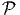∈ Ui ⊂ M (xμ()) ∈ ℝn avec
μ ∈{1…n}. Il importe de bien établir une distinction entre le point
lui-même et ce qu’on appelle ses coordonnées xμ() dans la carte choisie. On
suppose, de plus, que l’application x est bijective et bi-continue de Ui sur son
image.
(xμ()) ∈ ℝn avec
μ ∈{1…n}. Il importe de bien établir une distinction entre le point
lui-même et ce qu’on appelle ses coordonnées xμ() dans la carte choisie. On
suppose, de plus, que l’application x est bijective et bi-continue de Ui sur son
image.
Mis à part le cas relativement trivial où M est homéomorphe à ℝn, il
nous faut plusieurs cartes pour recouvrir la variété M. On appellera atlas
(sous-entendu différentiable) la donnée d’un ensemble de cartes (Ui,x) qui
recouvrent M c’est à dire telles que ∪iUi = M et telles que les changements de
cartes ϕij soient des bijections différentiables, ainsi que leurs inverses. Précisons ce
dernier point. Supposons que ∈ Ui ∩ Uj ⊂ M, on peut donc représenter
par un point xμ() de ℝn dans la carte (U
i,x) ou par un autre point
yμ() de ℝn dans la carte (U
j,y). On note ϕij le changement de cartes
(encore appelé transformation de coordonnées) ; c’est une application de
l’ouvert x(Ui) de ℝn dans l’ouvert y(U
j) de ℝn. On sait ce que signifie
“différentiable” pour une application de ℝn dans ℝn : les dérivées partielles, par
rapport à chacune des variables, doivent exister. On impose donc à ϕij
d’être une application différentiable. On lui impose également d’être
bijective (donc inversible) et on impose à son inverse ϕji = ϕij-1 d’être
également différentiable. Bien entendu, il faut préciser un peu plus ce qu’on
entend par différentiable : suivant qu’on impose aux applications ϕij
d’être une seule fois différentiable, r fois différentiables ou infiniment
différentiables, on parle d’atlas de classe C1, Cr ou C∞. Dans la suite de
l’ouvrage et sauf mention explicite du contraire, c’est de classe C∞ qu’il
s’agira. La première façon de définir une variété différentiable est de se
donner une variété topologique ainsi qu’un atlas différentiable. Du pont de
vue des notations, il n’est pas très commode de faire figurer l’indice i
qui se rapporte à la carte, sur le système de coordonnées x ; dans le
cas où on en considère deux (par exemple x et y) on écrira les formules
de changement de carte (l’application ϕij) sans introduire de nouvelle
notation en écrivant simplement yμ comme une fonction de xν, c’est à dire
yμ = yμ(xν).
1.2.2 Atlas maximal
En géographie ordinaire (celle du globe terrestre) il est bien connu qu’il nous
faut au moins deux cartes pour décrire la Terre. Par contre, rien ne nous
interdit d’en utiliser trois ou plus …. Si on réunit les cartes d’un atlas avec
celles d’un atlas différent (concernant la même variété topologique), on
peut s’attendre à fabriquer ainsi un atlas plus grand, un peu redondant,
certes, mais néanmoins utile. Il faut cependant prendre la précaution
d’imposer aux cartes d’être compatibles, c’est à dire telles que les formules de
changements de cartes, d’un atlas à l’autre, puissent s’exprimer en terme de
transformations différentiables de ℝn. Cette précaution n’est pas inutile et
peut conduire à des surprises. Rien ne nous empêche alors de considérer
l’ensemble (assez gros il est vrai !) de tous les atlas compatibles possibles
d’une variété donnée et de les réunir en un unique atlas maximal. Bien
qu’un seul atlas suffise à caractériser complètement la variété, il peut
être très utile de considérer la variété M équipée d’un tel atlas maximal
contenant toutes les cartes compatibles possibles. En d’autres termes, on
peut complètement caractériser une variété différentiable par la donnée
d’une variété topologique et d’un atlas maximal. Il se trouve que, dans
certains cas, une variété topologique donnée possède plusieurs structures
différentiables (plusieurs atlas maximaux distincts). C’est le cas pour
ℝ4 (le seul, parmi les espaces numériques ℝn à posséder des structures
différentiables “exotiques”) et c’est aussi le cas pour les sphères Sn lorsque n ≥ 7.
Nous ne nous intéresserons pas à ces phénomènes dans le cadre de cet
ouvrage.
1.2.3 Variétés et calcul différentiel “intrinsèque”
En mathématiques élémentaires, on définit souvent les espaces géométriques
intéressants (par exemple une sphère) comme sous espace d’un espace affine
ℝn. L’idée fondamentale du calcul sur les variétés (calcul différentiel
intrinsèque comme on l’appelait autrefois) est de faire abstraction du fait que la
variété qui nous intéresse est, ou non, plongée dans un espace ℝn “plus
grand” et de développer un calcul qui soit totalement indépendant du
plongement en question. Les motivations physiques sont analogues. Par exemple,
l’expérience quotidienne nous montre que tout événement de l’univers
sensible (whatever it means) peut se décrire à l’aide de quatre nombres
spécifiant sa position (trois nombres) et sa date (un nombre). Mais pourquoi
supposer, a priori que l’ensemble de ces événements doive être décrit à
l’aide d’un un espace ℝ4 ? Pourquoi pas une hyper-sphère (ou n’importe
quoi d’autre ?) Mais alors, si on décide d’utiliser une hyper-sphère de
dimension 4 pour décrire notre espace-temps, ou, comme dans certains
modèles cosmologiques, comme le produit d’une hyper-sphère (gonflable)
de dimension 3 par une droite ou une demi-droite, pourquoi supposer
que notre variété est plongée dans un espace de dimension 5 ou plus
dont les points sont sans signification physique ? Puisque c’est possible,
autant travailler dans la variété qui nous intéresse sans chercher à en
“sortir”.
L’idée la plus fondamentale et la plus simple du calcul différentiel sur les
variétés est la suivante. Grâce à l’existence locale des cartes, on peut toujours
faire “comme si” on était sur ℝn et développer des outils et des méthodes de
calcul sans se soucier – dans un premier temps – de leur globalisation, quitte à
vérifier, par la suite, que tout se recolle comme il faut lorsqu’on passe d’une carte
à l’autre. C’est ainsi que l’essentiel des notions qui suivent sont en fait des notions
qui peuvent être définies dans un espace ℝn et dont la généralisation, au cas des
variétés, est quasi-immédiate. Nous ne supposons pas que le lecteur est déjà
familier des notions en question ; c’est la raison d’être des paragraphes qui
suivent.
1.3 Applications différentiables, difféomorphismes
1.3.1 Définition
Soient M et N deux variétés différentiables de dimensions respectives m et n.
Une application différentiable ϕ de M dans N est une application qui
peut s’écrire localement à l’aide d’une application différentiable (encore
notée ϕ) de ℝm dans ℝn. En d’autres termes, si on a Q ∈ N = ϕ(P) avec
P ∈ M, alors, grâce au choix de cartes P ∈ Ui ⊂ M → xμ(P) ∈ ℝm et
Q ∈ V i ⊂ N → yν(Q) ∈ ℝn, on pourra écrire (et on écrira !) y = ϕ(x) ce qui
signifie, en fait yν(Q) = ϕ(xμ(P)). L’ensemble des applications différentiables de
M dans N se note C∞(M,N).
Petite parenthèse sur le problème des notations en mathématiques : Il est
important de comprendre la signification de ce qu’on écrit, mais il est
(de l’avis de l’auteur) absurde de vouloir que la notation utilisée nous
rappelle à tout moment les différents abus d’écriture commis depuis le
chapitre 1 du tome 1 de Bourbaki et sans lesquels il n’est pas de calcul
possible !
L’application ϕ (celle qui va de M dans N) est donc caractérisée – les cartes
étant choisies – par n fonctions différentiables yν de m variables xμ. Il est alors
naturel de considérer la matrice jacobienne de cette application, c’est à dire la
matrice rectangulaire m × n des dérivées partielles ∂yν
∂xμ. Nous en reparlerons un
peu plus tard.
1.3.2 Difféomorphismes et changements de coordonnées
Il existe deux cas particuliers particulièrement intéressants.
Le premier est celui où M et N coïncident. Dans ce cas, il peut se
faire que l’application différentiable ϕ soit non seulement différentiable
mais encore bijective et que son inverse soit également différentiable.
On dit alors que ϕ est un difféomorphisme. Notons qu’une application
différentiable est automatiquement continue et que, par conséquent, un
difféomorphisme est automatiquement un homéomorphisme. Il est facile de
vérifier que l’ensemble des difféomorphismes d’une variété différentiable
M constitue un groupe pour la composition des applications. On note
ce groupe Diff(M) ⊂ C∞(M,M) ; c’est un sous groupe de l’ensemble
Hom(M) ⊂ C0(M,M) des homéomorphismes de M. Notons qu’il existe une
correspondance assez subtile entre difféomorphismes d’une part – qui sont des
transformations que l’on appelait autrefois “actives” car elles transforment les
points de M en d’autres points de M – et changements de coordonnées – qui sont
des transformations que l’on appelait autrefois “passives” car elles ne
transforment pas les points de M mais résultent seulement d’un changement de
carte.
Il est à peu près évident que ces deux notions coïncident dans le cas où M est
l’espace ℝn lui-même (muni de la structure différentiable définie par une unique
carte canonique, l’application identique). Examinons de plus près le cas général.
Les cartes étant elles-mêmes des difféomorphismes locaux entre ouverts de M et
ouverts de ℝn, effectuer un changement de carte (changement de système de
coordonnées) se traduit par un difféomorphisme local y(x) de ℝn. Par
contre, un difféomorphisme de M est, par définition, une notion globale
qui se traduit elle-aussi, après choix de cartes, par un difféomorphisme
local de ℝn. L’équivalence des points de vue “actifs” et “passifs” n’existe
donc que pour ℝn et il semble préférable d’éviter cette terminologie.
Une idée physique fondamentale, à la base de la théorie de la relativité
générale est que les équations de la physique doivent pouvoir s’écrire de
façon tout à fait indépendante de l’observateur, quelle que soit l’état de
mouvement de ce dernier. Traduite en termes de coordonnées, ce “Principe de
Relativité Générale” a souvent été exprimé de par le passé comme affirmant
l’indépendance des lois de la physique par rapport aux changements de systèmes
de coordonnées. Une telle affirmation manque de précision, dès lors qu’on
travaille sur une variété quelconque et non sur un espace numérique. Il semble
d’ailleurs qu’A. Einstein lui-même n’ait jamais pu exprimer correctement ce
principe de façon vraiment précise et moderne (cela n’enlève rien à son
génie !). Le principe en question peut s’énoncer ainsi : l’espace-temps
étant décrit par une variété différentiable, les lois de la physique doivent
être invariantes sous l’action du groupe des difféomorphismes de cette
variété.
1.3.3 Fonctions différentiables
La deuxième classe de cas particuliers intéressants est celle où l’application
différentiable considérée ϕ, de M dans N est définie sur une variété quelconque
M, mais ou N coïncide avec l’ensemble ℝ des nombres réels. Les applications
différentiables en question sont désignées sous le nom de fonctions différentiables
sur M ; l’utilisation du mot “fonction” est en accord avec les habitudes
terminologiques anglaises, où les applications quelconques sont des “maps” , mais
où les applications à valeurs réelles (ou complexes) sont des “functions”.
L’ensemble des fonctions différentiables sur M se note C∞(M) = C∞(M, ℝ).
Remarque : l’ensemble des fonctions différentiables C∞(M) est une algèbre
pour l’addition des fonctions [f + g](x) = f(x) + g(x), la multiplication des
fonctions définie (ponctuellement) par [fg](x) = f(x)g(x) et l’opération externe
de multiplication par un nombre réel. C’est une sous-algèbre de l’algèbre
commutative C0(M).
Le lecteur peut s’étonner de la présence et de la signification de l’indice
supérieur 0 ou ∞ dans les notations C0(M) ou C∞(M). Cet indice se réfère à
l’ordre de différentiabilité supposé des fonctions appartenant à l’ensemble
considéré. On pourrait bien entendu considérer des ensembles tels que
Cp(M) constitués de fonctions qui sont, au moins, p fois différentiables.
Dans la suite de cet ouvrage, cependant, nous nous limiterons aux cas
p = 0, c’est à dire les fonctions continues (qui peuvent évidemment être
différentiables ou non) et p = ∞, c’est à dire les fonctions infiniment
différentiables.
1.4 Champs de vecteurs
1.4.1 Notions élémentaires et intuitives
Avant de donner une définition générale des vecteurs et champs de vecteurs,
définition qui pourrait sembler assez abstraite de prime abord, nous souhaitons
motiver quelque peu cette définition. Le lecteur est déjà supposé être familier de
la notion élémentaire de vecteur, à savoir une classe d’équivalence de
bi-points parallèles et de même sens, dans l’espace affine ℝn. Un champ de
vecteurs de ℝn, au sens élémentaire du terme, est donc une application
qui, à tout point de ℝn – considéré comme espace affine – associe un
vecteur de ℝn –considéré comme espace vectoriel. Intuitivement, on a
une “flèche” en tout point ; on peut penser à l’exemple du champ des
vitesses d’un solide en mouvement, mais on peut aussi penser au champ
magnétique en tout point de l’espace, etc. En physique – mais aussi, comme
nous allons le voir, en mathématiques – un vecteur peut être considéré
comme un “petit déplacement”. Soit M une variété différentiable, f
une fonction différentiable ainsi que P et Q deux points de M. Si M
était un espace affine (comme ℝn), cela aurait un sens de considérer la
différence de Q et de P, puisque cette différence définirait simplement le
vecteur  = Q - P. On pourrait aussi (mais on peut de toutes façons)
considérer la différence f(Q) - f(P) des valeurs prises par f en Q et
P. Dans le cas de M = ℝn et lorsque Q (coordonnées x′) tend vers P
(coordonnées x), le théorème des accroissement finis (ou celui de Taylor) nous dit
que
f(x′) - f(x) = (x′- x)i∂∕∂xif(x) + … = vi∂∕∂xif(x) + … où les nombres
vi = (x′-x)i ne sont autres que les composantes du vecteur
= Q - P. On pourrait aussi (mais on peut de toutes façons)
considérer la différence f(Q) - f(P) des valeurs prises par f en Q et
P. Dans le cas de M = ℝn et lorsque Q (coordonnées x′) tend vers P
(coordonnées x), le théorème des accroissement finis (ou celui de Taylor) nous dit
que
f(x′) - f(x) = (x′- x)i∂∕∂xif(x) + … = vi∂∕∂xif(x) + … où les nombres
vi = (x′-x)i ne sont autres que les composantes du vecteur  = Q-P dans le
repère où P et Q ont des composantes xi et x′i. Dans le cas des variétés,
l’expression (x′- x)i∂∕∂xif(x) a encore un sens. En effet, choisissons tout
d’abord une carte, et notons v la quantité v = vi∂∕∂xi. Si x(P) sont les
coordonnées de P dans le domaine de la carte x, on pourra considérer la
quantité
= Q-P dans le
repère où P et Q ont des composantes xi et x′i. Dans le cas des variétés,
l’expression (x′- x)i∂∕∂xif(x) a encore un sens. En effet, choisissons tout
d’abord une carte, et notons v la quantité v = vi∂∕∂xi. Si x(P) sont les
coordonnées de P dans le domaine de la carte x, on pourra considérer la
quantité
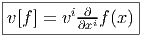 qui
nous décrit la variation - au premier ordre – de f dans ce que nous avons envie
d’appeler la direction v. La quantité précédente v[f] est elle-même une
fonction, qui, lorsqu’elle est évaluée au point P nous fournit un nombre
v[f](P).
1.4.2 Vecteurs, espace tangent et champs de vecteurs
Dans le cas des variétés, il est clair que les vecteurs ne peuvent pas être définis
comme des bi-points (ou des classes d’équivalences de bi-points), par contre, rien ne
nous empêche d’utiliser leur propriété de machine-à-fabriquer-des-dérivées-partielles
pour les définir de façon générale. Dans le domaine d’une carte x, un champ de
vecteurs sera donc défini comme un opérateur de différentiation d’ordre 1 à
savoir
 Cet
opérateur agit sur les fonctions f ∈ C∞(M) pour donner d’autres fonctions
(puisque v[f] ∈ C∞(M)). Le champ de vecteurs v ainsi défini est indépendant de
la carte choisie.
Cet
opérateur agit sur les fonctions f ∈ C∞(M) pour donner d’autres fonctions
(puisque v[f] ∈ C∞(M)). Le champ de vecteurs v ainsi défini est indépendant de
la carte choisie.
L’opérateur différentiel d’ordre 1 noté v = vi∂∕∂xi est un champ de vecteurs
car les vi sont des fonctions sur M alors que v(P) = vi(P)∂∕∂xi est un vecteur au
point P, de composantes vi(P).
En géométrie élémentaire des courbes, la tangente en P à une courbe
(différentiable) est définie comme limite des sécantes PQ lorsque Q tends vers
P ; cela signifie que les vecteurs  tendent vers un vecteur tangent à la courbe.
En géométrie des variétés différentiables, on pourrait faire de même, à
condition de plonger notre variété (par exemple la sphère usuelle S2) dans
un espace plus grand (par exemple ℝ3) et voir ainsi, un vecteur de S2
comme un vecteur tangent à la sphère (et donc “sortant” de celle-ci) ; mais
une telle contrainte serait précisément contraire à l’idée même du calcul
intrinsèque sur les variétés, calcul qui se veut, justement, indépendant de
l’existence de plongements possibles. La définition adoptée précédemment est
bien indépendante de la présence d’un espace affine ambiant, mais il est
néanmoins commode, pour l’intuition, de visualiser nos vecteurs de façon
élémentaire et d’adopter une terminologie qui nous rappelle des situations bien
connues. Pour ces raisons, un vecteur de la variété M en un point P est
souvent appelé vecteur tangent en P, l’ensemble de ces vecteurs se note
T(M,P) ou encore TP M et est désigné sous le nom de espace tangent à
M en P ; on a donc un espace tangent en chaque point de la variété.
L’ensemble des vecteurs eux-mêmes (tous les vecteurs), se note T(M) ou
simplement TM et est appelé l’espace tangent à M ou encore, pour une
raison qu’on expliquera ultérieurement le fibré tangent à M (“tangent
bundle”). Un élément de TM est donc la donnée (P,u) d’un point de M et
d’un vecteur en ce point. Attention, il faut bien distinguer les notions
de vecteur en un point et de champs de vecteurs (mais nous allons très
souvent oublier cette distinction). L’ensemble des champs de vecteurs se
note ΓTM. Notons que cet espace est un espace vectoriel (de dimension
infinie), et T(M,P) est un espace vectoriel de dimension n (supposant que
M est elle-même de dimension n), alors que TM n’est pas un espace
vectoriel du tout (on ne peut pas additionner un vecteur en P avec un
vecteur en Q !). On verra que TM, que l’on peut considérer comme une
collection d’espaces vectoriels paramètrisés par les points de M, possède la
structure d’espace fibré vectoriel (cette structure sera définie et étudiée plus
loin). Notons que l’espace TM est lui-même une variété différentiable.
Supposons que M soit une variété de dimension n, un point P de M est en
effet caractérisé (dans une certaine carte) par n composantes xμ et un
“point” (c’est à dire un élément) de TM consistera en la donnée d’un
couple (P,u) ∈ M × T(M,P) c’est à dire 2n nombres (n nombres xμ et n
composantes du vecteur u dans une base choisie de l’espace vectoriel T(M,P).
Ainsi TM est une variété de dimension 2n. Intuitivement, on peut se
représenter par exemple TS2 comme la donnée d’une infinité de plans
tangents collés à la sphère ; il s’agit, dans ce cas d’une variété de dimension
4.
tendent vers un vecteur tangent à la courbe.
En géométrie des variétés différentiables, on pourrait faire de même, à
condition de plonger notre variété (par exemple la sphère usuelle S2) dans
un espace plus grand (par exemple ℝ3) et voir ainsi, un vecteur de S2
comme un vecteur tangent à la sphère (et donc “sortant” de celle-ci) ; mais
une telle contrainte serait précisément contraire à l’idée même du calcul
intrinsèque sur les variétés, calcul qui se veut, justement, indépendant de
l’existence de plongements possibles. La définition adoptée précédemment est
bien indépendante de la présence d’un espace affine ambiant, mais il est
néanmoins commode, pour l’intuition, de visualiser nos vecteurs de façon
élémentaire et d’adopter une terminologie qui nous rappelle des situations bien
connues. Pour ces raisons, un vecteur de la variété M en un point P est
souvent appelé vecteur tangent en P, l’ensemble de ces vecteurs se note
T(M,P) ou encore TP M et est désigné sous le nom de espace tangent à
M en P ; on a donc un espace tangent en chaque point de la variété.
L’ensemble des vecteurs eux-mêmes (tous les vecteurs), se note T(M) ou
simplement TM et est appelé l’espace tangent à M ou encore, pour une
raison qu’on expliquera ultérieurement le fibré tangent à M (“tangent
bundle”). Un élément de TM est donc la donnée (P,u) d’un point de M et
d’un vecteur en ce point. Attention, il faut bien distinguer les notions
de vecteur en un point et de champs de vecteurs (mais nous allons très
souvent oublier cette distinction). L’ensemble des champs de vecteurs se
note ΓTM. Notons que cet espace est un espace vectoriel (de dimension
infinie), et T(M,P) est un espace vectoriel de dimension n (supposant que
M est elle-même de dimension n), alors que TM n’est pas un espace
vectoriel du tout (on ne peut pas additionner un vecteur en P avec un
vecteur en Q !). On verra que TM, que l’on peut considérer comme une
collection d’espaces vectoriels paramètrisés par les points de M, possède la
structure d’espace fibré vectoriel (cette structure sera définie et étudiée plus
loin). Notons que l’espace TM est lui-même une variété différentiable.
Supposons que M soit une variété de dimension n, un point P de M est en
effet caractérisé (dans une certaine carte) par n composantes xμ et un
“point” (c’est à dire un élément) de TM consistera en la donnée d’un
couple (P,u) ∈ M × T(M,P) c’est à dire 2n nombres (n nombres xμ et n
composantes du vecteur u dans une base choisie de l’espace vectoriel T(M,P).
Ainsi TM est une variété de dimension 2n. Intuitivement, on peut se
représenter par exemple TS2 comme la donnée d’une infinité de plans
tangents collés à la sphère ; il s’agit, dans ce cas d’une variété de dimension
4.
1.4.3 Règle de Leibniz
Soit v un champ de vecteurs. Il pourra donc s’écrire localement (c’est à dire dans
une certaine carte) v = vμ∂∕∂xμ. Si f et g désignent deux fonctions sur M, il est
clair que
![-∂-[fg ] =--∂-[f]g + f--∂-[g]
∂xμ ∂x μ ∂x μ](source7x.png) Par
conséquent on aura plus généralement :
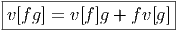 On
retrouve la règle usuelle de dérivation d’un produit. De façon générale, si
est une algèbre associative, on dit que v est une dérivation, lorsque
v est une application linéaire (un “opérateur”) de A dans A telle que
v[fg] = v[f]g + fv[g] avec f,g ∈. Les champs de vecteurs sont des
dérivations de l’algèbre associative (et commutative) C∞(M). On pourrait
d’ailleurs les définir directement par cette propriété. En d’autres termes,
ΓTM = DerC∞(M).
Par
conséquent on aura plus généralement :
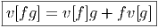 On
retrouve la règle usuelle de dérivation d’un produit. De façon générale, si
est une algèbre associative, on dit que v est une dérivation, lorsque
v est une application linéaire (un “opérateur”) de A dans A telle que
v[fg] = v[f]g + fv[g] avec f,g ∈. Les champs de vecteurs sont des
dérivations de l’algèbre associative (et commutative) C∞(M). On pourrait
d’ailleurs les définir directement par cette propriété. En d’autres termes,
ΓTM = DerC∞(M).
1.4.4 Crochet de deux champs de vecteurs
Notons que le produit de deux vecteurs n’est pas un vecteur (produit
défini par composition de l’action des vecteurs sur les fonctions) mais
un opérateur différentiel d’ordre 2. En effet, soient v = vμ∂∕∂xμ
et w = wν∂∕∂xν deux champs de vecteurs (attention les vμ est les
wν n’ont aucune raison d’être constants dans la carte choisie). Alors,
(vw)[f] = v[w[f]] = v[wν∂∕∂xν[f]] = vμ∂∕∂xμ[wν∂∕∂xν[f]] = vμ∂∕∂xμ[wν]∂∕∂xν[f]+vμwν∂2∕∂xμ∂xν[f]
Par contre, le commutateur (notation crochet) de deux champs de vecteurs, défini
par
![|-----------------|
-[v,-w] =-vw---wv--|](source9x.png) est
un champ de vecteurs. Pour s’en convaincre, il suffit de vérifier que c’est bien
un opérateur différentiel d’ordre un. Le petit calcul précédent montre
immédiatement que les dérivées secondes disparaissent lorsqu’on calcule la
différence et qu’il reste
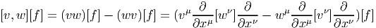 La
définition précédente du crochet [v,w] = vw - wv de deux champs de vecteurs
implique de façon immédiate les deux propriétés suivantes :
est
un champ de vecteurs. Pour s’en convaincre, il suffit de vérifier que c’est bien
un opérateur différentiel d’ordre un. Le petit calcul précédent montre
immédiatement que les dérivées secondes disparaissent lorsqu’on calcule la
différence et qu’il reste
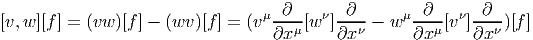 La
définition précédente du crochet [v,w] = vw - wv de deux champs de vecteurs
implique de façon immédiate les deux propriétés suivantes :
Antisymétrie
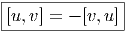
Identité de Jacobi
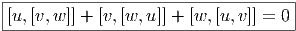
Une algèbre (évidemment non associative) où les éléments vérifient ces deux
identités est appelée une algèbre de Lie. Notons qu’une algèbre de Lie est, en
particulier, un espace vectoriel. Nous pouvons donc conclure ce paragraphe en
disant “l’ensemble des champs de vecteurs est une algèbre de Lie (de dimension
infinie)”.
1.4.5 Repère naturel associé à une carte
On appelle repère sur U ⊂ M, la donnée, en chaque point P ∈ U, d’une base de
l’espace vectoriel tangent en P. Un repère est en général “local”, c’est à
dire qu’on n’essaye pas, ou qu’on ne peut pas choisir U = M. Si xμ(P)
désignent les composantes de P dans une carte locale (U,x), on a déjà vu
que des vecteurs quelconques en P ou dans un voisinage de P peuvent
se décomposer sur les vecteurs ∂∕∂xμ. En d’autres termes, l’ensemble
des
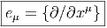
fournit un repère. Ce repère est appelé repère naturel associé à la carte x ou aux
coordonnées xμ (“coordinate frame”). Par suite de la propriété de commutativité
des dérivées partielles, il est évident que ∂2∕∂xμ∂xν - ∂2∕∂xν∂xμ = 0. En
d’autres termes, si {eμ} désigne le repère naturel associé à la carte xμ, on
a
![[eμ,e ν] = 0](source14x.png) Une telle propriété caractérise, en fait, les repères naturels.
Une telle propriété caractérise, en fait, les repères naturels.
1.4.6 Changement de carte
Soit P ∈ M → y(P) ∈ ℝn un nouveau système de coordonnées. Si x désigne
l’ancien système, on notera également y : ℝn ℝn les fonctions de changement de
carte, on écrira donc y(P) = y(x(P)). Le repère naturel associé aux coordonnées
x est eμ = {∂∕∂xμ}, celui associé aux coordonnées y est e
μ′ = {∂∕∂yμ}. Nous
savons (depuis le secondaire) comment calculer la dérivée d’une fonction
composée, et donc
ℝn les fonctions de changement de
carte, on écrira donc y(P) = y(x(P)). Le repère naturel associé aux coordonnées
x est eμ = {∂∕∂xμ}, celui associé aux coordonnées y est e
μ′ = {∂∕∂yμ}. Nous
savons (depuis le secondaire) comment calculer la dérivée d’une fonction
composée, et donc
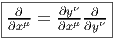 ce
qui, avec d’autres notations, s’écrit
 Notation
Notation
Il est souvent commode de noter tout simplement ∂μ les vecteurs du repère
naturel {eμ = ∂∕∂xμ} associés à la carte xμ. La décomposition d’un vecteur
quelconque v suivant ce repère s’écrit v = vμ∂
μ, où les vμ sont des nombres réels.
1.4.7 Repères mobiles (repères quelconques)
Dans un espace vectoriel, nous savons que les changements de base sont décrits
par des matrices “de passage” qui ne sont autres que des matrices inversibles Λαμ
quelconques. En géométrie différentielle, nous pouvons bien entendu faire de
même, à ceci près que la matrice Λαμ peut maintenant dépendre du point de la
variété. En d’autres termes, on a des matrices de passage dont les éléments sont
des fonctions sur la variété. Supposons que nous nous trouvons dans le domaine
d’une carte et que {∂μ} désigne le repère naturel associé. Ce repère, au point P,
constitue une base de l’espace tangent en P. Mais rien ne nous empêche de choisir
une autre base au même point. Si Λαμ désigne une matrice inversible
en P, alors la famille de vecteurs {eα = Λαμ∂
μ} est une autre base de
l’espace tangent TpM, c’est à dire un repère au point P. Un tel repère
est couramment désigné sous le nom de repère mobile. Notons qu’il n’y
a aucune raison, a priori, pour que ce repère coïncide avec le repère
naturellement associé à une autre carte que celle des xμ ; pour que cela soit le
cas, il faudrait qu’on puisse trouver une solution locale yα au système
d’équations ∂yα∕∂xμ = (Λ-1)
μα) où Λ-1 désigne la matrice inverse de la matrice
Λ. Le théorème garantissant l’existence de solutions pour une équation
différentielle aux dérivées partielles nous assure seulement l’existence d’une telle
solution yμ(xν)) le long d’une ligne, mais pas dans un voisinage ouvert de la
variété.
Soit {eα} un repère mobile. Nous avons déjà vu que le crochet (commutateur)
de deux champs de vecteurs est un champ de vecteurs. En particulier [eα,eβ] est
un champ de vecteurs qui, évalué au point P, appartient à l’espace tangent en ce
point et peut donc se décomposer sur une base de l’espace tangent en P. On
écrira donc
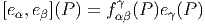 ou,
plus simplement
![|---------------|
|[eα,eβ ] = fγ eγ|
-----------αβ----](source19x.png) où
les fαβγ sont des fonctions sur la variété qu’on appelle fonctions de structure du
repère mobile (on ne doit pas les appeler constantes de structure car, précisément,
elles ne sont pas constantes en général !).
où
les fαβγ sont des fonctions sur la variété qu’on appelle fonctions de structure du
repère mobile (on ne doit pas les appeler constantes de structure car, précisément,
elles ne sont pas constantes en général !).
Par ailleurs, on posera souvent ∂α = eα même s’il n’existe pas de système de
coordonnées {yα} tel que ∂
α soit le repère naturel associé. Le lecteur doit donc se
méfier de cet abus d’écriture pourtant commode : il est des cas où ∂α et ∂β ne
commutent pas !
1.5 Tenseurs et formes extérieures sur les espaces vectoriels
Avant de passer au cas des variétés, il convient d’effectuer quelques rappels
d’algèbre linéaire puisque le passage du cas vectoriel au cas des variétés s’effectue
essentiellement en remplaçant un espace vectoriel unique par une famille d’espaces
vectoriels “de même nature”, paramètrisée par les points de la variété.
1.5.1 Algèbre tensorielle d’un espace vectoriel
Soit E un espace vectoriel de dimension finie n sur un corps K. On note E* son
dual, c’est à dire l’ensemble des formes K-linéaires sur E (applications linéaires
sur E à valeurs dans le corps de base, qu’on suppose commutatif). En terme de
composantes, soit {eμ} une base de E, et {eμ} la base duale correspondante de
E*, on a
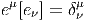 où
δνμ désigne le symbole de Kronecker (1 si μ = ν et 0 si μ≠ν).
L’espace vectoriel E de référence étant choisi, on écrira (comme le font
toujours les physiciens) les vecteurs de base avec des “indices en bas” et les
composantes avec des “indices en haut”. Bien entendu, la convention est
opposée pour ce qui concerne l’espace vectoriel dual. Par ailleurs nous
adoptons également la “convention d’Einstein”, c’est à dire que nous
effectuons toujours une sommation (le signe somme étant sous-entendu)
sur les indices répétés, lorsque l’un des indices est en position haute et
l’autre en position basse. Nous avons déjà utilisé cette convention dans les
sous-sections précédentes. Cette convention allège considérablement l’écriture des
formules.
Nous n’adopterons pas, dans cet ouvrage, la notation dyadique chère à Dirac
utilisant des bra et des ket car elle est peu usuelle en géométrie mais il est
peut-être utile d’y consacrer quelques lignes. Avec cette notation, les
éléments d’un certain espace vectoriel E choisi une fois pour toutes sont
notés avec des “kets”, par exemple |v⟩ et les éléments du dual avec des
“bras”, par exemple ⟨σ|. L’évaluation d’une forme sur un vecteur se note
ainsi naturellement sous forme de “bracket” ⟨σ|v⟩. La relation précédente
caractérisant la dualité entre une base de E et une base de E* s’écrira
donc
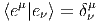 On
évalue ici une forme sur un vecteur et on obtient donc un nombre.
Par contre, la quantité |eν⟩⟨eμ| désigne une application linéaire de E dans E
puisque |eν⟩⟨eμ|e
ρ⟩ = |eν⟩δρμ = |e
ρ⟩. Ainsi, en prenant |v⟩ = vρ|e
ρ⟩, on obtient
|eν⟩⟨eμ|v⟩ = vμ|e
ν⟩. Pour les mêmes raisons, l’écriture |v⟩⟨σ| désigne un opérateur
(alors que ⟨σ|v⟩ désigne un nombre).
L’identification des vecteurs de E avec des applications de K dans E (à v ∈ E
on associe l’application λ ∈ K → λv ∈ E) permet de bien comprendre cette
dualité et l’intérêt de la notation dyadique.
Si on se souvient “qui est qui”, et si on fait attention à l’ordre des termes, on
peut simplifier les notations à l’extrême et ne noter ni les produits tensoriels, ni
les symboles ⟨| ou |⟩. On écrira ainsi parfois de façon un peu provocante les
éléments de E sous la forme
 (avec vμ ∈ ℝ) et les composantes à droite des vecteurs. On écrira parfois de même
les éléments du dual E* sous la forme
(avec vμ ∈ ℝ) et les composantes à droite des vecteurs. On écrira parfois de même
les éléments du dual E* sous la forme
 (avec σμ ∈ ℝ) et les composantes à gauche des formes linéaires. Si on ne note
explicitement ni les produits tensoriels ni les évaluations des formes sur les
vecteurs, on voit que σv = σμ(eμe
ν)vν = σ
μδνμvν = σ
μvμ est un nombre. Par
contre vσ est un opérateur (on pourrait l’écrire v ⊗ σ ∈ E ⊗ E*), plus
précisément vσ = eμ(vμσ
ν)eν.
(avec σμ ∈ ℝ) et les composantes à gauche des formes linéaires. Si on ne note
explicitement ni les produits tensoriels ni les évaluations des formes sur les
vecteurs, on voit que σv = σμ(eμe
ν)vν = σ
μδνμvν = σ
μvμ est un nombre. Par
contre vσ est un opérateur (on pourrait l’écrire v ⊗ σ ∈ E ⊗ E*), plus
précisément vσ = eμ(vμσ
ν)eν.
L’ordre adopté ci-dessus (le fait d’écrire les composantes —qui sont pourtant
des nombres !— à droite des vecteurs, etc) est particulièrement adapté aux
généralisations non commutatives de la géométrie différentielle – cela vient du
fait qu’en Occident, nous écrivons de gauche à droite !– mais rappelons nous que,
bien entendu, en géométrie ordinaire “commutative” (celle qui nous intéresse ici),
on peut toujours écrire v = eμvμ = vμe
μ. Un dernier mot de mise en garde :
lorsqu’on veut insister sur le fait que le vecteur eμ désigne une dérivation ∂μ, il est
préférable – pour ne pas se tromper ! – d’écrire les composantes du côté
gauche. Il en va de même en géométrie non commutative où champs
de vecteurs et dérivations d’algèbre sont de toute façon des concepts
différents puisque les premiers forment un module sur l’algèbre associative des
“fonctions” alors que les dérivations ne forment un module que sur le centre de
cette algèbre. Aucune ambiguïté n’est donc possible dans ce cadre plus
général.
On note ⊗
E l’algèbre tensorielle sur E c’est à dire la somme directe
⊕p=0∞E⊗p où E⊗p désigne la puissance tensorielle d’ordre p de E, c’est à dire
encore l’ensemble des applications multilinéaires d’ordre p sur E*. Soit T ∈ E⊗p
alors on peut écrire
 Les
éléments de ⊗
E sont encore appelés tenseurs contravariants (d’ordre p s’ils
appartiennent à E⊗p). Bien entendu, cet ensemble est non seulement un espace
vectoriel (de dimension infinie, les E⊗p étant de dimension (dimE)p mais encore
une algèbre pour le produit tensoriel. On peut ne pas écrire le symbole ⊗
explicitement dans l’expression précédente du tenseur T, car… “what else could it
be ?”, auquel cas,
Les
éléments de ⊗
E sont encore appelés tenseurs contravariants (d’ordre p s’ils
appartiennent à E⊗p). Bien entendu, cet ensemble est non seulement un espace
vectoriel (de dimension infinie, les E⊗p étant de dimension (dimE)p mais encore
une algèbre pour le produit tensoriel. On peut ne pas écrire le symbole ⊗
explicitement dans l’expression précédente du tenseur T, car… “what else could it
be ?”, auquel cas,
 De
la même façon, on note ⊗
E* l’algèbre tensorielle sur E* c’est à dire la somme
directe ⊕p=0∞E*⊗p où E*⊗p désigne la puissance tensorielle d’ordre p de E*, c’est
à dire encore l’ensemble des applications multilinéaires d’ordre p sur E. Soit
T ∈ E*⊗p alors on peut écrire
De
la même façon, on note ⊗
E* l’algèbre tensorielle sur E* c’est à dire la somme
directe ⊕p=0∞E*⊗p où E*⊗p désigne la puissance tensorielle d’ordre p de E*, c’est
à dire encore l’ensemble des applications multilinéaires d’ordre p sur E. Soit
T ∈ E*⊗p alors on peut écrire
 Les
éléments de ⊗
E* sont encore appelés tenseurs covariants (d’ordre p s’ils
appartiennent à E*⊗p).
Les
éléments de ⊗
E* sont encore appelés tenseurs covariants (d’ordre p s’ils
appartiennent à E*⊗p).
Bien entendu, nous pourrons considérer des tenseurs p-fois contravariants et
q-fois covariants (éléments T de E⊗p ⊗ E*⊗q) et pour rester cohérents avec nos
notations, nous écrirons les produits tensoriels des vecteurs de E à gauche de ceux
de E*, c’est à dire
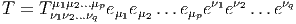 ou
même encore
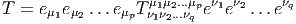 On
pose E*⊗0 = E⊗0 = ℝ.
1.5.2 Algèbre extérieure d’un espace vectoriel. Produit extérieur
On notera Λk(E*) l’espace vectoriel des formes k-linéaires alternées sur E.
Rappelons que T ∈ E*⊗k est alternée lorsque T(v
1,…,vi…,vj,…,vk) = 0
dès que vi = vj,i≠j. Il est équivalent de dire (si le corps de base n’est
pas de caractéristique 2) que T est antisymétrique, c’est à dire que
T(v1,…,vi…,vj,…,vk) = -T(v1,…,vj…,vi,…,vk). On dit aussi que T est une forme
extérieure d’ordre k et que Λ(E*) est l’algèbre extérieure construite sur
E*.
-
L’antisymétriseur Alt
-
Le groupe symétrique  k des substitutions sur k éléments opère de
façon évidente sur les k-uplets de vecteurs. Soit s ∈k
k des substitutions sur k éléments opère de
façon évidente sur les k-uplets de vecteurs. Soit s ∈k
 Grâce à cette action, on peut définir un opérateur Alt qui projette les
tenseurs covariants d’ordre k sur les formes k-linéaires antisymétriques
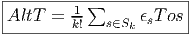 où ϵ désigne la parité de la substitution s. On peut vérifier les
propriétés suivantes du projecteur Alt. Tout d’abord, c’est effectivement
un projecteur de E*⊗p sur Λp(E*), par ailleurs, si ω,η et θ désignent
trois tenseurs de ⊗
E, alors Alt(Alt(ω ⊗η) ⊗θ) = Alt(ω ⊗Alt(η ⊗θ)
et on peut donc écrire cette quantité sous la forme Alt(ω ⊗η ⊗θ). La
présence du k! dans la définition de Alt est indispensable pour que la
propriété précédente d’associativité soit vérifiée.
Grâce à cette action, on peut définir un opérateur Alt qui projette les
tenseurs covariants d’ordre k sur les formes k-linéaires antisymétriques
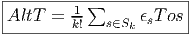 où ϵ désigne la parité de la substitution s. On peut vérifier les
propriétés suivantes du projecteur Alt. Tout d’abord, c’est effectivement
un projecteur de E*⊗p sur Λp(E*), par ailleurs, si ω,η et θ désignent
trois tenseurs de ⊗
E, alors Alt(Alt(ω ⊗η) ⊗θ) = Alt(ω ⊗Alt(η ⊗θ)
et on peut donc écrire cette quantité sous la forme Alt(ω ⊗η ⊗θ). La
présence du k! dans la définition de Alt est indispensable pour que la
propriété précédente d’associativité soit vérifiée.
-
Le produit extérieur ∧
-
Soient ω ∈ Λk(E*) et η ∈ Λp(E*). On définit Le produit extérieur ∧,
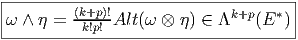
Propriétés :
∧ est associatif et distributif à droite et à gauche sur +
aω ∧ η = ω ∧ aη = a(ω ∧ η) avec a ∈ ℝ
ω ∧ η = (-1)(pk)η ∧ ω En particulier, si ω est impaire, ω ∧ ω = 0
Ces propriétés font de Λ(E*) = ⊕
k=0nΛk(E*) une algèbre
super-commutative (une algèbre commutative ℤ2-graduée).
De plus, si ω ∈ Λk(E*), η ∈ Λp(E*) et θ ∈ Λq(E*), alors
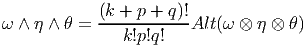
La présence des diverses factorielles dans les expressions ci-dessus,
aussi bien dans la définition de Alt que dans celle du produit extérieur,
disparaît dans bien des cas ; par exemple, le lecteur pourra se
convaincre que si {θμ} désigne une base de 1-formes, les définitions
précédentes conduisent aux expressions suivantes :
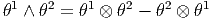
et
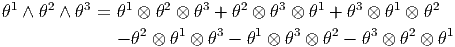
Il faut signaler ici qu’il existe une autre définition du produit extérieur où
les membres de droite des expressions précédentes sont respectivement
multipliés par 1∕2! et 1∕3! La définition adoptée ici est telle que si {eμ}
désigne une base de l’espace vectoriel considéré et {θμ} la base duale
correspondante, nous avons
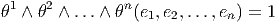
-
Dépendance et indépendance linéaire des formes extérieures
-
Désignons par {θμ}
μ∈{1,2…n} une base de E*. Considérons un monôme tel
que θμ1 ∧ θμ2 ∧… ∧ θμk. Par suite de l’antisymétrie du produit extérieur, il
est clair qu’une telle expression est nulle dès qu’un vecteur de base est
répété deux fois (c’est une autre façon de dire qu’un tenseur complètement
antisymétrique est nul dès que deux indices sont répétés). Par ailleurs,
deux monômes de ce type qui ne diffèrent que par l’ordre des termes sont
soit égaux, soit opposés. On peut donc supposer que les indices sont
ordonnés de la façon suivante : 1 ≤ μ1 < μ2 < … < μk ≤ n. Enfin, il est
facile de voir que toute forme extérieure d’ordre k, c’est à dire tout
élément de Λk(E*) peut se décomposer sur des monômes de ce
type. La dimension de l’espace vectoriel Λk(E*) est donc (
kn). Bien
entendu, lorsque k > n, toute forme extérieure est nulle (deux indices
sont alors automatiquement répétés !). La dimension de l’algèbre
extérieure est donc Σk=0n
kn = 2n. Pour conclure ce paragraphe, citons
sans démonstration (mais elle est facile) le petit résultat bien utile
suivant : Les formes linéaires ω1,ω2,…,ωp sont indépendantes si
et seulement si leur produit extérieur ω1 ∧ ω2 ∧… ∧ ωp est non
nul.
-
Ecriture des formes extérieures
-
Une forme extérieure ω d’ordre k peut s’écrire de trois façons possibles.
Tout d’abord, on peut la considérer comme un tenseur k fois covariant, et ,
à ce titre, on peut la décomposer (existence et unicité) sur la base des
tenseurs d’ordre k. On peut donc écrire
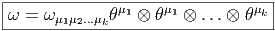
On peut aussi la décomposer sur la base des formes extérieures
θμ1 ∧ θμ2 ∧… ∧ θμk, à condition d’ordonner les indices (sinon, la famille
précédente est génératrice mais n’est pas libre et donc n’est pas une
base !). La deuxième égalité utilise une notation |…| qui signifie que non seulement
on utilise la convention d’Einstein (sommation sur les indices répétés) mais
qu’on décide d’ordonner les indices.
La troisième écriture — de loin, la plus utilisée — est celle où on
décompose la forme ω (toujours la même) sur la famille génératrice des
formes extérieures θμ1 ∧θμ1 ∧…∧θμk mais sans ordonner les indices ! Bien
entendu, pour un ensemble d’indices donnés (pour un ensemble de vecteurs
de base donné), k! des monômes précédents vont être égaux (ou opposés)
et il faudra “corriger” le développement de ω en rajoutant un 1∕k! devant
l’expression. Ainsi donc,
 Notons que la première écriture contient nk termes (et il y a unicité de la
décomposition), la seconde contient n! ____
k!(n-k)! termes (et il y a unicité de la
décomposition), la troisième contient nk termes (mais il n’y a pas
unicité de la décomposition). Il est quelquefois utile, pour alléger les
notations, d’introduire des multi-indices M = (μ1μ2…μk). Alors, les deux
décompositions précédentes s’écrivent
Notons que la première écriture contient nk termes (et il y a unicité de la
décomposition), la seconde contient n! ____
k!(n-k)! termes (et il y a unicité de la
décomposition), la troisième contient nk termes (mais il n’y a pas
unicité de la décomposition). Il est quelquefois utile, pour alléger les
notations, d’introduire des multi-indices M = (μ1μ2…μk). Alors, les deux
décompositions précédentes s’écrivent

1.5.3 Produit intérieur d’une forme par un vecteur
Soit E un espace vectoriel et Λ(E*) l’algèbre extérieure sur son dual. Nous avons
défini précédemment le produit extérieur, qui est une loi de composition interne à
l’algèbre extérieure. Au contraire, l’opération que nous allons maintenant définir,
le produit intérieur n’est pas un produit au sens usuel du terme, en effet, il
associe, à la donnée d’une forme extérieure ω d’ordre k (un élément de Λk(E*))
et d’un vecteur v (un élément de E) une autre forme différentielle, mais
maintenant d’ordre k - 1, c’est à dire un élément de Λk-1(E*). Cette nouvelle
forme est simplement obtenue en “contractant” ω et v, plus précisément, en
écrivant
-=-ω(v,v1,v2,...,vk--1)-](source40x.png) c’est à dire encore, en terme de composantes et en notant α = ivω,
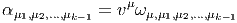
Cette opération est quelquefois notée v⌊ω au lieu de ivω.
c’est à dire encore, en terme de composantes et en notant α = ivω,
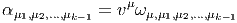
Cette opération est quelquefois notée v⌊ω au lieu de ivω.
Il résulte de l’antisymétrie des formes extérieures que deux opérations iv et iw
anticommutent, en particulier, le carré de l’opération iv est nul :iviwω = -iwivω
et ivivω = 0, ce qu’on écrit simplement
 Le
produit intérieur est une antidérivation de l’algèbre extérieure, c’est à dire que
pour ω1 ∈ Λk1(E*) et ω
2 ∈ Λk2(E*), nous avons un analogue ℤ
2-gradué de la règle
de Leibniz
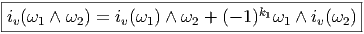 En
particulier, si v = eμi est un vecteur de base et si ω est égal au produit extérieur
d’un certain nombre de vecteurs de la base duale, l’expression précédente donne
simplement :
Le
produit intérieur est une antidérivation de l’algèbre extérieure, c’est à dire que
pour ω1 ∈ Λk1(E*) et ω
2 ∈ Λk2(E*), nous avons un analogue ℤ
2-gradué de la règle
de Leibniz
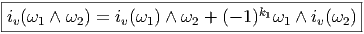 En
particulier, si v = eμi est un vecteur de base et si ω est égal au produit extérieur
d’un certain nombre de vecteurs de la base duale, l’expression précédente donne
simplement :
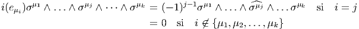
où le symbole ^ désigne l’omission du symbole au dessus duquel il est situé.
1.5.4 Transformation du produit extérieur et du produit intérieur par
endomorphismes
Soit f~ un endomorphisme de l’espace vectoriel E et soit f~ l’endomorphisme
dual (aussi appelé transposé). Rappelons ce que cela signifie : f~ est une
application linéaire de E dans E et f~ est une application linéaire du dual
E* dans lui-même définie comme suit : soient v ∈ E et θ ∈ E*, alors
f~(θ)(v) = θ(f
~(v)), c’est à dire encore f~(θ) = θof
~. On peut alors vérifier
aisément que
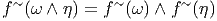 et
que
 Remarque sur les notations : celle utilisant * et non ~ est beaucoup plus
utilisée ; cela dit, le symbole * est “trop” utilisé et peut quelquefois prêter à
confusion puisqu’il peut aussi bien désigner la conjugaison complexe, la dualité de
Hodge, qu’une involution quelconque... Par ailleurs le “tilde” est sous-employé (il
désigne traditionnellement l’expression matricielle de f~), il en va de même de la
“flèche”. Dans le cadre de cet ouvrage, nous écrirons indifféremment
f* = f~ =
Remarque sur les notations : celle utilisant * et non ~ est beaucoup plus
utilisée ; cela dit, le symbole * est “trop” utilisé et peut quelquefois prêter à
confusion puisqu’il peut aussi bien désigner la conjugaison complexe, la dualité de
Hodge, qu’une involution quelconque... Par ailleurs le “tilde” est sous-employé (il
désigne traditionnellement l’expression matricielle de f~), il en va de même de la
“flèche”. Dans le cadre de cet ouvrage, nous écrirons indifféremment
f* = f~ =  et f* = f~ = 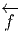. Notons pour finir que la notation f
~ est en
général inutile dans le cas des espaces vectoriels puisqu’on peut écrire tout
simplement f = f~, mais dans le cas des variétés, nous verrons que f≠f~≠f~ !
et f* = f~ = 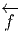. Notons pour finir que la notation f
~ est en
général inutile dans le cas des espaces vectoriels puisqu’on peut écrire tout
simplement f = f~, mais dans le cas des variétés, nous verrons que f≠f~≠f~ !
1.6 Formes différentielles
1.6.1 Définition
Nous avons déjà défini la notion de vecteur au point P d’une variété
différentiable M ainsi que la notion de champ de vecteurs. L’ensemble des
vecteurs au point P se notant TP M, l’ensemble de tous les vecteurs (le fibré
tangent) se notant TM et l’ensemble des champs de vecteurs se notant ΓTM, on
obtient, par dualité, les notions qui suivent. Tout d’abord l’espace vectoriel dual
de TP M se note TP *M ; ses éléments sont donc des formes extérieures de
degré 1, ou plus simplement, des “1-formes” . L’ensemble T*M, baptisé fibré
cotangent, est l’ensemble de toutes les 1-formes, lorsque le point P décrit M,
c’est-à-dire T*M = ∪
p∈MTP *M.
Une forme différentielle (en degré un) est tout simplement un champ de
formes extérieures, c’est-à-dire une application qui à tout point P ∈ M associe
une forme extérieure en ce point. Nous verrons un peu plus loin la raison d’être de
cette terminologie. L’ensemble des formes différentielles de degré 1 peut se noter
ΓT*M ou Ω1M.
Toutes les constructions algébriques du paragraphe précédent (tenseurs et
formes extérieures sur un espace vectoriel) sont en particulier valables ici
puisqu’on peut choisir comme espace vectoriel, l’espace vectoriel tangent au point
P, c’est-à-dire TP M. Les tenseurs p fois contravariants, q fois covariants au point
P sont donc des éléments de (TP M)⊗p ⊗ (T
P *M)⊗q. Si on considère tous les
tenseurs de ce type (c’est-à-dire qu’on effectue la réunion de ces espaces lorsque
P décrit M) on obtient (TM)⊗p ⊗ (T*M)⊗q et on peut bien entendu
considérer des champs de tenseurs de ce type, dont l’ensemble constitue
Γ (TM)⊗p ⊗ (T*M)⊗q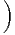.
(TM)⊗p ⊗ (T*M)⊗q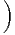.
Le cas particulier des tenseurs complètement antisymétriques est
particulièrement intéressant. On notera Λ(TP M)* = ⊕
kΛk(T
P M)* l’algèbre
extérieure sur le dual de l’espace vectoriel TP M et Λ(T*M) = ∪
p∈MΛ(TP M)*.
Les formes différentielles de degré q sont des “sections” de Λq(T*M)
c’est-à-dire des champs de formes extérieures de degré q. Leur ensemble peut se
noter, bien entendu, ΓΛq(T*M). Lorsque q = 1, on a Λ1(T*M) = T*M. Pour
alléger la notation, on décide de poser Ωq(M) = ΓΛq(T*M). On sait que q ne
peut pas être trop grand ; plus précisément 0 ≤ q ≤ n avec n = dim M.
Attention, ne pas confondre la dimensionalité de Λ(TP M)* – qui est 2n – et celle
de ΩM = ⊕q=0nΩqM, qui est infinie. Notons que les éléments de Ω∘M sont
simplement les fonctions sur M c’est-à-dire Ω0M = C∞(M). Nous avons
déjà étudié les propriétés du produit extérieur et il n’y a rien à rajouter
ici : le produit extérieur α ∧ β de deux formes différentielles α et β est
obtenu en “globalisant” la définition déjà connue pour chaque point P de
M.
ΩM, munie des opérations de multiplication par un scalaire, d’addition et de
produit extérieur, devient ainsi une algèbre. Cette algèbre n’est pas commutative
mais elle est commutative graduée puisque α∧β = (-1)#α#ββ ∧α où #α désigne
le degré de α. On appelle cette algèbre algèbre de De Rham des formes
différentielles.
Pour ce qui est de l’écriture locale d’une forme différentielle, il n’y a pas
grand-chose à rajouter non plus puisque nous savons déjà décomposer une forme
extérieure sur une base de l’espace vectoriel TP *M. Le seul problème qui
se pose est de savoir comment la base en question varie avec le point
P.
Soient xμ(P) les coordonnées de P dans une carte locale. On sait que
l’ensemble des vecteurs eμ = ∂ __
∂xμ fournit le repère naturel associé à cette carte,
c’est-à-dire que {eμ} est une base de l’espace tangent en tout point d’un voisinage
de P.
On désignera par {dxμ} la base duale correspondante et on écrira avec des
indices “en haut” {eμ = dxμ}. On peut, si on veut, “visualiser” dxμ par “un petit
accroissement” , mais ceci présente un intérêt purement psychologique ; en effet
dxμ est défini par dualité et donc par la relation ⟨dxμ, ∂__
∂xν⟩ = δνμ. De la même
façon qu’on avait un repère naturel  associé aux coordonnées xμ, on a donc
aussi un corepère naturel {dxμ}.
associé aux coordonnées xμ, on a donc
aussi un corepère naturel {dxμ}.
Dans le cas de l’espace tangent, nous avons défini la notion de repère mobile
{eα} (qui était issu de ∂ __
∂xμ par changement de base arbitraire), nous aurons donc
aussi un corepère mobile {eα} défini, en chaque point P de la carte, comme la
base duale de {eα}, c’est-à-dire ⟨eα, e
β⟩ = δβα.
Venons-en maintenant à la notion de différentielle proprement dite. Pour ce
qui est des fonctions (0-formes), on pose bien entendu

La 1-forme df peut être évaluée sur le champ de vecteurs v = vμ ∂ __
∂xμ. On
obtient
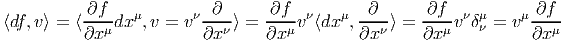 On
voit que le membre de droite n’est autre que v[f]. Ainsi donc,
![|-------------|
|⟨df, v⟩ = v[f ]|
---------------](source54x.png) On
notera souvent df(v) au lieu de ⟨df,v⟩, l’évaluation de la forme df sur le vecteur
v.
On
notera souvent df(v) au lieu de ⟨df,v⟩, l’évaluation de la forme df sur le vecteur
v.
La règle de Leibniz usuelle pour la différentielle d’un produit de deux
fonctions, à savoir
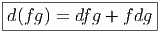
résulte immédiatement de la propriété, pour les champs de vecteurs, d’être des
dérivations de l’algèbre des fonctions.
Nous allons généraliser aussi bien la définition de d que la règle de Leibniz à
des formes différentielles de degré supérieur.
1.6.2 La différentielle extérieure d
Soit ω une k-forme différentielle ; on va définir un opérateur d qui, appliqué à
ω, crée une (k + 1)-forme. Cet opérateur est désigné sous le nom de différentielle
extérieure ou différentielle de De Rham.
Définition 1. La forme différentielle dω peut se définir directement par son
action sur tout (k + 1)-uplet {v1,v2,…,vk+1} de champs de vecteurs, en posant
où le symbole^désigne l’omission de l’argument correspondant.
Cette définition possède un intérêt pratique certain. Pour se rappeler des
signes, on peut signaler le moyen mnémotechnique suivant : le premier
type de termes s’obtient en faisant passer les vecteurs vi devant ω et
en comptant un signe “-” chaque fois que vi “traverse” un des autres
vecteurs ; le second type de terme s’obtient en choisissant une paire vi,vj et
en la faisant passer en position 1 et 2 de la forme ω, tout en utilisant
l’antisymétrie de ω lorsqu’on effectue des transpositions. On remplace alors la
paire (vi,vj) par son crochet [vi,vj] et on multiplie le tout par un signe
-1.
Exemple 1 : Soit f une 0-forme, c’est à dire une fonction sur M. La définition
ci-dessus conduit à
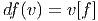 ce
qu’on savait déjà.
Exemple 2 : Soit ω, une 1-forme, alors
![d ω(u,v) = u (ω (v)) - v (ω(u)) - ω([u,v])](source58x.png) Si
u = ∂ __
∂xμ et v = ∂ __
∂xν, on trouve simplement que les composantes de F = dω sont
données par Fμν = ∂μων - ∂νωμ.
Si
u = ∂ __
∂xμ et v = ∂ __
∂xν, on trouve simplement que les composantes de F = dω sont
données par Fμν = ∂μων - ∂νωμ.
Le lecteur aura reconnu, dans le cas de la dimension 4, l’expression du champ
électromagnétique (le tenseur F ) en terme du (quadri) potentiel vecteur ω. Soit
dit en passant, il faut incorporer le troisième terme (l’évaluation de ω sur le
commutateur [u,v]) lorsqu’on veut exprimer le champ F = dω dans un repère
quelconque.
Exemple 3 : Soit ω, une 2-forme, alors
En utilisant la définition de d, donnée ci-dessus, on montre immédiatement
que, si ω1 ∈ Ωk1 et ω
2 ∈ Ωk2, alors
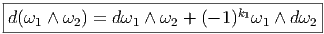
De la même façon, on montre que

Les deux propriétés ci-dessus sont absolument fondamentales et peuvent
même servir à définir l’opérateur d lui même.
Définition 2. d est l’unique opérateur (application linéaire) de ΩkM dans
Ωk+1M tel que, pour tout k, ω
1 ∈ Ωk1, ω
2 ∈ Ωk2, k = k
1 + k2, on ait
d(ω1 ∧ ω2) = dω1 ∧ ω2 + (-1)k1ω
1 ∧ dω2 et d2 = 0. En d’autre terme d étend la
définition usuelle de différentiation des fonctions en une dérivation graduée de
carré nul de l’algèbre ΩM.
En physique, si ω désigne le quadri-potentiel vecteur, alors, F = dω obéit
automatiquement à l’équation dF = 0, puisque d2 = 0. Ceci nous donne donc la
moitié des équations de Maxwell (les équations sans source).
Il existe une troisième définition possible de l’opérateur d, définition qui est
également d’un intérêt pratique certain. La voici :
Définition 3. Relativement à un choix de coordonnées on peut écrire ω = ωIdxI,
où I est un multi-indice et ωI est une 0-forme, c’est-à-dire une fonction. On
définit d’abord d sur les fonctions dωI = ∂ωI
∂xμdxμ. Ensuite, plus généralement, on
pose dω = dωI ∧ dxI.
Nous venons de voir trois définitions équivalentes possibles de l’opérateur d.
Toutes les trois sont utiles et nous laissons au lecteur le soin de démontrer
l’équivalence des définitions.
Terminons par un petit calcul élémentaire (clin d’œil au cours
d’électromagnétisme). Soit A = Aμdxμ une 1-forme (le quadri-potentiel vecteur).
Le champ de Maxwell est défini par
 Or
Or
Ainsi

1.6.3 L’équation de Maurer-Cartan pour un repère mobile
Soit {eα} un repère mobile et fβγα les fonctions de structure correspondantes,
c’est-à-dire que ce repère vérifie l’équation de structure : [eβ,eγ] = fβγαe
α.
Soit {eα} le co-repère mobile correspondant défini, comme on l’a vu, par
dualité. Le co-repère vérifie également une équation de structure (souvent
désignée sous le nom d’équation de Maurer-Cartan)
 La
façon la plus simple de démontrer cette identité est de la vérifier en l’évaluant
sur un couple (eδ,eϵ) de vecteurs du repère mobile. D’une part, en effet,
Les deux premiers termes sont nuls puisqu’on dérive des constantes !
La
façon la plus simple de démontrer cette identité est de la vérifier en l’évaluant
sur un couple (eδ,eϵ) de vecteurs du repère mobile. D’une part, en effet,
Les deux premiers termes sont nuls puisqu’on dérive des constantes !
D’autre part
D’où le résultat.
1.6.4 Produit intérieur d’une forme par un champ ou vecteurs
Cette opération généralise celle étudiée précédemment (produit intérieur d’une
forme extérieure par un vecteur). On associe, à une k forme ω et un vecteur v une
k - 1 forme notée ivω. La définition en est très simple : pour une 1-forme, c’est
tout simplement l’évaluation. C’est-à-dire ivω = ω(v) = ⟨ω,v⟩. Pour une k-forme,
on généralise simplement en contractant l’indice du vecteur v avec le premier
indice de la forme ω ; en d’autres termes (et sans utiliser d’indices) ivω est la
k - 1 forme définie par
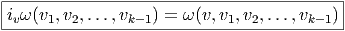 Si
α = ivω on a évidemment αμ1,μ2,…,μk-1 = vνω
νμ1,μ2,…,μk-1. Il s’agit d’une opération
très élémentaire généralisant l’évaluation d’une forme sur un vecteur. L’opération
iv, de ΩkM dans Ωk-1M est, comme l’opération d, une dérivation graduée et de
carré nul de l’algèbre extérieure. La propriété d’être de carré nul est une
conséquence immédiate du fait que les formes différentielles sont des objets
antisymétriques et donc s’annulent dès que deux arguments sont égaux. La
propriété d’anti-dérivation, c’est-à-dire
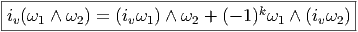 où
k est le degré de ω1 est également une conséquence immédiate de la définition. La
différence essentielle entre l’opération d et l’opération iv est que ces deux
opérations vont dans des sens différents (iv fait baisser le degré d’une unité alors
que d l’élève). Notons que la définition de iv dépend du choix du vecteur
v.
1.7 Application tangente et cotangente
Soit f un difféomorphisme de la variété M, ou, plus généralement, une
application différentiable de M (de dimension m) dans N (de dimension n). En
coordonnées locales, f s’écrit à l’aide de n fonctions fα de m variables
yα = fα(xμ). La matrice jacobienne de cette application est la matrice (n,m) des
éléments ∂yα∕∂xμ. Une telle matrice définit une application linéaire de l’espace
vectoriel tangent à M au point P dans l’espace tangent à N au point f(P). Soit
{∂μ} un repère naturel de M défini dans un voisinage de P et {∂α} un repère
naturel de N défini dans un voisinage de f(P). Soit v ∈ TP (M), on peut écrire
v = vμ∂
μ. On obtient un vecteur w ∈ Tf(P)(N) en écrivant w = wα∂
α
avec
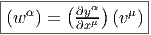
Cette application, dite application linéaire tangente (ou “push forward”) se
note, suivant les auteurs f*, Tf, f~, ou même  et on dit que w =
et on dit que w =  (v) est
l’image directe de v. On peut bien entendu définir directement
(v) est
l’image directe de v. On peut bien entendu définir directement  sans utiliser de
systèmes coordonnés. De façon générale, à toute application différentiable
f : M → N, on associe une application linéaire tangente 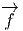 : TM → TN, et si
v ∈ TP M, alors
sans utiliser de
systèmes coordonnés. De façon générale, à toute application différentiable
f : M → N, on associe une application linéaire tangente 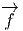 : TM → TN, et si
v ∈ TP M, alors  [v] ∈ Tf(P)M.
Remarque : on peut toujours prendre l’image d’un vecteur tangent par
l’application tangente, mais l’image d’un champ de vecteurs v sur M ne définit
pas nécessairement un champ de vecteur sur N ; d’une part, en effet, rien ne
prouve qu’un point Q quelconque de N soit nécessairement dans l’image de f, et
par ailleurs, même si f est surjective, rien ne dit, dans le cas où deux
points distincts P1 et P2 seraient tels que f(P1) = f(P2) que l’image par
[v] ∈ Tf(P)M.
Remarque : on peut toujours prendre l’image d’un vecteur tangent par
l’application tangente, mais l’image d’un champ de vecteurs v sur M ne définit
pas nécessairement un champ de vecteur sur N ; d’une part, en effet, rien ne
prouve qu’un point Q quelconque de N soit nécessairement dans l’image de f, et
par ailleurs, même si f est surjective, rien ne dit, dans le cas où deux
points distincts P1 et P2 seraient tels que f(P1) = f(P2) que l’image par
 du vecteur v(P1) coïncide avec l’image par
du vecteur v(P1) coïncide avec l’image par  du vecteur v(P2). En
fait, pour une application differentiable surjective f : M → N donnée,
il est commode d’introduire la notion de champ de vecteurs projetable
: v ∈ Γ(TM) est dit projetable (par f) si, pour tout Q ∈ N et pour
toute paire (P1,P2) de points de M tels que Q = f(P1) = f(P2) on ait
du vecteur v(P2). En
fait, pour une application differentiable surjective f : M → N donnée,
il est commode d’introduire la notion de champ de vecteurs projetable
: v ∈ Γ(TM) est dit projetable (par f) si, pour tout Q ∈ N et pour
toute paire (P1,P2) de points de M tels que Q = f(P1) = f(P2) on ait
 [v(P1)] =
[v(P1)] =  [v(P2)] ; dans ce cas on obtient bien un champ de vecteur sur
N.
La même matrice jacobienne (∂yα∕∂xμ) définit également une application
linéaire de l’espace cotangent à N au point f(P) dans l’espace cotangent à M au
point P. En effet, soit τ ∈ Tf(P)*N, alors τ = τ
αdyα. L’image de la forme τ est la
forme σ ∈ TP *M, avec σ = σ
μdxμ et
[v(P2)] ; dans ce cas on obtient bien un champ de vecteur sur
N.
La même matrice jacobienne (∂yα∕∂xμ) définit également une application
linéaire de l’espace cotangent à N au point f(P) dans l’espace cotangent à M au
point P. En effet, soit τ ∈ Tf(P)*N, alors τ = τ
αdyα. L’image de la forme τ est la
forme σ ∈ TP *M, avec σ = σ
μdxμ et
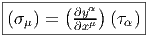
Cette application, qu’on pourrait appeler application linéaire cotangente ,
(ou “pull back”) et noter f*, T*f, f~, ou même  n’est donc autre que
la transposée de l’application linéaire tangente
n’est donc autre que
la transposée de l’application linéaire tangente  au point P ∈ M :
elle envoie les co-vecteurs de N au point f(P) (i.e. les 1-formes de N au
point f(P) ) dans les co-vecteurs de M au point P. Si τ ∈ Tf(P)*N, alors
au point P ∈ M :
elle envoie les co-vecteurs de N au point f(P) (i.e. les 1-formes de N au
point f(P) ) dans les co-vecteurs de M au point P. Si τ ∈ Tf(P)*N, alors
 (τ) = τ ∘
(τ) = τ ∘ ∈ TP *M. Cette application de T
f(P)*N dans T
P *M ne peut
manifestement pas, en général, se généraliser à une application de T*N
dans T*M ; la situation n’est donc pas tout à fait analogue à celle de
l’application tangente, qui, elle, est bien définie, comme application de TM dans
TN.
Par contre, si ω est une 1-forme differentielle sur N, c’est à dire un champ de
co-vecteurs, on peut toujours considérer son image par
∈ TP *M. Cette application de T
f(P)*N dans T
P *M ne peut
manifestement pas, en général, se généraliser à une application de T*N
dans T*M ; la situation n’est donc pas tout à fait analogue à celle de
l’application tangente, qui, elle, est bien définie, comme application de TM dans
TN.
Par contre, si ω est une 1-forme differentielle sur N, c’est à dire un champ de
co-vecteurs, on peut toujours considérer son image par  ; en effet, dans ce cas,
si v est un vecteur quelconque en P ∈ M, alors
; en effet, dans ce cas,
si v est un vecteur quelconque en P ∈ M, alors  (P) est un vecteur en
Q = f(P) ∈ N et le nombre ωQ[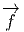(P)] est bien défini. On obtient ainsi une
1-forme differentielle sur M qu’on notera f*ω ou
(P) est un vecteur en
Q = f(P) ∈ N et le nombre ωQ[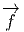(P)] est bien défini. On obtient ainsi une
1-forme differentielle sur M qu’on notera f*ω ou  (ω). On l’appelle en général
“pull back” de ω par f.
Quelques remarques sur les notations : on peut trouver commode d’utiliser de
nouveau le symbole df et d’écrire tout simplement (en un point P donné, non
explicitement indiqué par la notation)
(ω). On l’appelle en général
“pull back” de ω par f.
Quelques remarques sur les notations : on peut trouver commode d’utiliser de
nouveau le symbole df et d’écrire tout simplement (en un point P donné, non
explicitement indiqué par la notation)
 et donc de considérer df comme un élément de Tf(P)N ⊗ TP *M. La
matrice (∂fα∕∂xμ) est la matrice jacobienne de l’application f. Attention,
df, ici, n’est pas une 1-forme puisque f n’est pas une fonction à valeurs
dans le corps des scalaires mais une application entre deux variétés. Il
ne semble pas nécessairement utile de vouloir à tout crin introduire de
nouvelles notations chaque fois qu’une fonction de plusieurs variables donne
naissance à des applications différentes lorsqu’on décide de geler l’un ou
l’autre de ses arguments ! La notation “différentielle” précédente est
une généralisation directe de la notation désignant la différentielle d’une
fonction à valeurs réelles. Ici, df doit être considérée comme une application
bilinéaire qu’on peut noter (.,df,.) dont l’ une des restrictions coïncide
avec
et donc de considérer df comme un élément de Tf(P)N ⊗ TP *M. La
matrice (∂fα∕∂xμ) est la matrice jacobienne de l’application f. Attention,
df, ici, n’est pas une 1-forme puisque f n’est pas une fonction à valeurs
dans le corps des scalaires mais une application entre deux variétés. Il
ne semble pas nécessairement utile de vouloir à tout crin introduire de
nouvelles notations chaque fois qu’une fonction de plusieurs variables donne
naissance à des applications différentes lorsqu’on décide de geler l’un ou
l’autre de ses arguments ! La notation “différentielle” précédente est
une généralisation directe de la notation désignant la différentielle d’une
fonction à valeurs réelles. Ici, df doit être considérée comme une application
bilinéaire qu’on peut noter (.,df,.) dont l’ une des restrictions coïncide
avec  et l’autre avec
et l’autre avec  . Si on choisit τ ∈ Tf(P)*N et v ∈ T
P M, on voit
que
. Si on choisit τ ∈ Tf(P)*N et v ∈ T
P M, on voit
que

La notation suivante est également très commode :
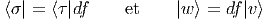
Si on choisit un repère mobile e = Λ
= Λ β∂
β dans N et un co-repère mobile
e
β∂
β dans N et un co-repère mobile
e = L
ν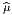dxν dans M, on pourra écrire également
= L
ν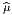dxν dans M, on pourra écrire également
 et considérer la quantité f
et considérer la quantité f
 = (Λ-1)
α
= (Λ-1)
α (∂fα∕∂xμ)(L-1)
(∂fα∕∂xμ)(L-1) μ comme les
éléments de la matrice jacobienne de f par rapport au choix de deux repères
mobiles.
μ comme les
éléments de la matrice jacobienne de f par rapport au choix de deux repères
mobiles.
Nous venons de voir que les 1-formes de N peuvent être “rappelées” sur M à
l’aide de  :
:
 Il
en va de même des p-formes et on définit, pour ω ∈ ΩpN, la p-forme 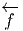(ω) ∈ ΩpM
par l’égalité
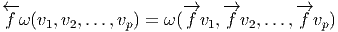
avec v1,v2,…,vp ∈ TM.
Il
en va de même des p-formes et on définit, pour ω ∈ ΩpN, la p-forme 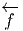(ω) ∈ ΩpM
par l’égalité
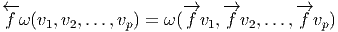
avec v1,v2,…,vp ∈ TM.
Nous laissons au lecteur le soin de démontrer les propriétés suivantes :
1.8 Dérivées de Lie
La notion usuelle de dérivée d’une fonction numérique f nous permet
de préciser la notion de variation locale de cette fonction lorsque son
argument croît ou décroît. Lorsque l’argument se déplace sur une variété de
dimension supérieure à 1, la variation ne sera définie que si on précise dans
quelle direction se déplace le point (l’argument). En d’autres termes, la
généralisation de la notion de dérivée invoque obligatoirement la notion de
vecteur tangent. La dérivée d’une fonction f : M → ℝ par rapport à un
champ de vecteurs X se note LXf et est tout simplement définie par
l’égalité
![LX f = df[X ] = X [f ]](source108x.png) Ainsi, la différentielle de f “code” toutes les variations possibles, alors que la
dérivée de f dans la direction X est obtenue en évaluant la différentielle de f sur
le vecteur X.
Ainsi, la différentielle de f “code” toutes les variations possibles, alors que la
dérivée de f dans la direction X est obtenue en évaluant la différentielle de f sur
le vecteur X.
Cette notion de dérivée se généralise au cas où f n’est plus une fonction sur
M à valeurs réelles mais un champ t de tenseurs quelconques (ou même, comme
on le verra plus tard, une section d’un fibré quelconque au-dessus de M). On a
envie de donner un sens à la limite de t(x+ϵX)-t(x)
ϵ lorsque ϵ tend vers 0. La
quantité correspondante se note toujours LXt et s’appelle dérivée de Lie du
tenseur t par rapport au champ de vecteurs X. C’est un tenseur de même type
que t. On veut que LX soit une dérivation de l’algèbre tensorielle, c’est-à-dire
qu’on impose
 où
t1 et t2 sont des tenseurs quelconques. Pour définir complètement LX il suffit de
préciser la valeur de LXY lorsque Y est un champ de vecteurs (contravariants) et
de LXω lorsque ω est une 1-forme (champ de vecteurs covariants). Dans le
premier cas on pose
où
t1 et t2 sont des tenseurs quelconques. Pour définir complètement LX il suffit de
préciser la valeur de LXY lorsque Y est un champ de vecteurs (contravariants) et
de LXω lorsque ω est une 1-forme (champ de vecteurs covariants). Dans le
premier cas on pose
![LX Y = [X, Y]](source110x.png) Par
exemple,
Par
exemple,
 Dans le second cas (action de L sur les 1-formes), on définit LXω par la
relation
Dans le second cas (action de L sur les 1-formes), on définit LXω par la
relation
 = X (ω(Y )) - ω ([X, Y ])](source112x.png) où
Y est, comme X, un champ de vecteurs sur M. Nous laissons le soin au lecteur
de démontrer que cette définition, ainsi que la propriété de dérivation,
conduit à la relation suivante caractérisant l’action de LX sur les formes
différentielles :
où
Y est, comme X, un champ de vecteurs sur M. Nous laissons le soin au lecteur
de démontrer que cette définition, ainsi que la propriété de dérivation,
conduit à la relation suivante caractérisant l’action de LX sur les formes
différentielles :
 Cette dernière propriété peut d’ailleurs servir de définition. Il est alors immédiat
de vérifier que LX est une dérivation de l’algèbre des formes différentielles
puisque d et iX sont des dérivations graduées. LX est une “vraie” dérivation et
non une dérivation graduée : le signe (-1) potentiel, dans la règle de Leibniz,
disparaît.
Cette dernière propriété peut d’ailleurs servir de définition. Il est alors immédiat
de vérifier que LX est une dérivation de l’algèbre des formes différentielles
puisque d et iX sont des dérivations graduées. LX est une “vraie” dérivation et
non une dérivation graduée : le signe (-1) potentiel, dans la règle de Leibniz,
disparaît.
 De
plus LX ne modifie pas le degré des formes puisque d et iX agissent en sens
contraires. La relation précédente conduit immédiatement à la formule
explicite
De
plus LX ne modifie pas le degré des formes puisque d et iX agissent en sens
contraires. La relation précédente conduit immédiatement à la formule
explicite
![k
∑
LX ω (X1,...,Xk ) = X (ω (X1, ...,Xk )) - ω (X1,...,[X, Xi],...,Xk )
i=1](source115x.png)
Le cas particulier où ω est une 1-forme se retrouve aussi aisément. Notons que,
dans ce dernier cas, si eμ et eμ désignent deux repères duaux l’un de l’autre (un
repère mobile et le co-repère mobile dual), on a
![LX eμ = eμ([eν,X ])eν](source116x.png) et
en particulier
et
en particulier
 En
coordonnées locales, lorqu’on choisit un repère naturel, on peut écrire
ω = 1∕k!ωμ1…μkdxμ1 ∧… ∧ dxμk et on obtient
En
coordonnées locales, lorqu’on choisit un repère naturel, on peut écrire
ω = 1∕k!ωμ1…μkdxμ1 ∧… ∧ dxμk et on obtient

Dans le cas des formes, la définition de la dérivée de Lie implique
immédiatement que LX commute avec d (car d2 = 0), ainsi qu’avec i
X (puisque
iviv = 0), et que, par ailleurs
Enfin, si f est une application différentiable et ω une forme différentielle, on
voit que

Nous terminons ce paragraphe en montrant que la dérivée de Lie du tenseur
de Kronecker δ = eμ ⊗ eμ est nulle dans toutes les directions. En effet
1.9 Flots
Un flot sur la variété M est un sous-groupe differentiable à un paramètre {ϕt} de
difféomorphismes de M : on suppose que pour tout t réel, l’application
t ∈ ℝ ϕt ∈ Diff(M) est un homomorphisme de groupe et que l’application
(t,P) ∈ ℝ × M
ϕt ∈ Diff(M) est un homomorphisme de groupe et que l’application
(t,P) ∈ ℝ × M ϕt(P) ∈ M est différentiable.
ϕt(P) ∈ M est différentiable.
La trajectoire du flot aussi appelée courbe intégrale du flot passant par le
point P ∈ M est la courbe t ϕt(P). L’application linéaire tangente à cette
courbe associe au vecteur unité 1 de R (identifié avec son espace tangent en 0) un
vecteur tangent en Q = ϕt(P) ∈ T(M,Q). Ce vecteur tangent en Q ne dépend que
du flot. En effet, les propriétés d’homomorphisme ϕt1+t2 = ϕt1 ∘ ϕt2, et de
bijectivité de ϕf , montrent que si deux trajectoires passent par le même point Q,
c’est à dire si ϕt(P1) = ϕt2(P2), avec t ≥ t2 par exemple, on peut poser t1 = t-t2
et P2 = ϕt1(P1), ce qui montre que les vecteurs tangents en Q à ces deux
trajectoires coïncident. Le vecteur tangent obtenu, notons le X(Q), définit un
champ de vecteurs X quelquefois désigné sous le nom de champ des vitesses du
flot.
ϕt(P). L’application linéaire tangente à cette
courbe associe au vecteur unité 1 de R (identifié avec son espace tangent en 0) un
vecteur tangent en Q = ϕt(P) ∈ T(M,Q). Ce vecteur tangent en Q ne dépend que
du flot. En effet, les propriétés d’homomorphisme ϕt1+t2 = ϕt1 ∘ ϕt2, et de
bijectivité de ϕf , montrent que si deux trajectoires passent par le même point Q,
c’est à dire si ϕt(P1) = ϕt2(P2), avec t ≥ t2 par exemple, on peut poser t1 = t-t2
et P2 = ϕt1(P1), ce qui montre que les vecteurs tangents en Q à ces deux
trajectoires coïncident. Le vecteur tangent obtenu, notons le X(Q), définit un
champ de vecteurs X quelquefois désigné sous le nom de champ des vitesses du
flot.
Puisque le flot choisi définit un champ des vitesses, il définit également une
dérivée de Lie par rapport à ce champ de vecteurs.
On peut démontrer qu’inversement, un champ de vecteurs sur une variété
définit un flot local, c’est à dire qu’il ne sera en général défini que sur un ouvert
strictement inclus dans ℝ × M ; si cette inclusion devient une égalité, le champ
de vecteur est dit “complet” et il engendre un flot : les diffeomorphismes ϕt sont
alors définis quel que soit t.
1.10 Orientation – Elément de volume
Déterminant – Intégration
En géométrie élémentaire, l’orientation d’un espace vectoriel réel est spécifiée par
le choix d’une base  (choix ordonné d’un système libre et générateur). Le
choix d’une autre base ′ détermine un isomorphisme g qui envoie les
vecteurs de sur les vecteurs de ′. On dit que g préserve l’orientation si
det g > 0 et renverse l’orientation si det g < 0. Dans le premier cas on dit
que et ′ ont la même orientation ; dans le second cas, et ′ ont
des orientations opposées. On peut alors répartir les bases de l’espace
vectoriel en question en deux classes d’équivalence correspondant aux deux
orientations possibles. Afin de généraliser cette discussion au cadre des
variétés, il est utile de reformuler ce qui précède en terme de formes
extérieures. Nous allons donc travailler avec les bases duales et poser
eμ′ = f(eμ).
(choix ordonné d’un système libre et générateur). Le
choix d’une autre base ′ détermine un isomorphisme g qui envoie les
vecteurs de sur les vecteurs de ′. On dit que g préserve l’orientation si
det g > 0 et renverse l’orientation si det g < 0. Dans le premier cas on dit
que et ′ ont la même orientation ; dans le second cas, et ′ ont
des orientations opposées. On peut alors répartir les bases de l’espace
vectoriel en question en deux classes d’équivalence correspondant aux deux
orientations possibles. Afin de généraliser cette discussion au cadre des
variétés, il est utile de reformuler ce qui précède en terme de formes
extérieures. Nous allons donc travailler avec les bases duales et poser
eμ′ = f(eμ).
Soit * = {e1,e2,…,en} et ω = e1 ∧ e2 ∧ ∧ en.
∧ en.
Soit ′* = {e1′,e2′,…,en′} avec eμ′ = f(eμ) et ω′ = f(e1) ∧ f(e2) ∧ ∧ f(en).
L’espace des formes extérieures de degré n sur un espace vectoriel de dimension
n est un espace vectoriel de dimension 1. Les formes ω et ω′ sont donc
proportionnelles et le coefficient de proportionnalité n’est autre que le
déterminant de f : ω′ = (det f)ω. Nous laissons au lecteur le soin de retrouver la
définition élémentaire des déterminants en écrivant eμ′ = Λ
μμ′eμ.
∧ f(en).
L’espace des formes extérieures de degré n sur un espace vectoriel de dimension
n est un espace vectoriel de dimension 1. Les formes ω et ω′ sont donc
proportionnelles et le coefficient de proportionnalité n’est autre que le
déterminant de f : ω′ = (det f)ω. Nous laissons au lecteur le soin de retrouver la
définition élémentaire des déterminants en écrivant eμ′ = Λ
μμ′eμ.
L’orientation de l’espace vectoriel qui était définie par le choix de peut tout
aussi bien se définir par le choix de la n-forme ω. Deux n-formes ω et ω′
(obligatoirement proportionnelles) définissent la même orientation si le coefficient
de proportionnalité est positif et deux orientations de sens contraire si le
coefficient en question est négatif. Nous pouvons maintenant passer au cas des
variétés. Nous venons de voir que l’orientation, en chaque point P de M, de
l’espace tangent TP M, est équivalente au (ou définie par le) choix d’une n-forme
extérieure en ce point. On pourrait donc naïvement penser que, pour définir une
orientation globale de la variété M, il suffit de choisir une n-forme différentiable
ω. Le problème est que, si ω s’annule en un point, l’orientation cesse d’être définie
en ce point ! Pour pouvoir parler d’orientation de façon globale, il faut
donc qu’il soit possible de choisir une n-forme différentielle sur M qui
ne s’annule nulle part. Ceci n’est pas toujours possible : on dit que la
variété est orientable ou non orientable suivant les cas. Tout le monde
connaît l’exemple fameux du ruban de Moebius ou de la bouteille de
Klein.
On appelle “élément de volume” sur M le choix d’une n-forme ω sur M qui ne
s’annule nulle part (ce qui suppose, par définition, que M soit orientable). On
note [ω] l’ensemble des éléments de volume proportionnels à ω, avec un coefficient
de proportionnalité positif et [-ω] l’ensemble des éléments de volume
proportionnels à ω, avec un coefficient de proportionnalité négatif. Une variété
orientable possède donc deux orientations possibles, l’une quelconque d’entre elles
étant caractérisée par le choix d’un élément de volume appartenant à l’une des
deux classes possibles. Soient maintenant M et N deux variétés différentiables de
même dimension n et f un difféomorphisme de M dans N ; on suppose M et N
orientables et orientées par le choix des éléments de volume ωM et ωN. On dit que
f préserve l’orientation si et seulement si  (ωN) ∈ [ωM] et renverse l’orientation
si
(ωN) ∈ [ωM] et renverse l’orientation
si  (ωN) ∈ [-ωM].
(ωN) ∈ [-ωM].
1.10.1 Orientation – Partition de l’unité
Notre but, dans ce paragraphe, est d’introduire la notion d’intégration des formes
différentielles. Comme d’habitude, on va commencer par définir cette notion
pour l’espace numérique ℝn, puis, grâce à un système de cartes, on va
pouvoir généraliser la construction au cas des variétés. On suppose le
lecteur familier avec la notion d’intégrale (de Riemann) sur ℝn. Soit f
une fonction (numérique) c’est-à-dire une fonction – que nous supposons
différentiable – de ℝn à valeurs réelles. Nous supposons, de plus, que f est à
support compact. Son intégrale est notée ∫
ℝnf ou ∫
ℝnf(x)dnx, comme
d’habitude. Choisissons maintenant une orientation sur ℝn et considérons la
n-forme
 où
dx1 ∧ dx2 ∧
où
dx1 ∧ dx2 ∧ ∧ dxn est une n-forme positive pour l’orientation choisie. On pose
simplement
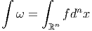
Notons que la définition du membre de gauche dépend de l’orientation choisie ;
en d’autres termes, on peut identifier les deux notations et concepts en
posant
∧ dxn est une n-forme positive pour l’orientation choisie. On pose
simplement
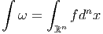
Notons que la définition du membre de gauche dépend de l’orientation choisie ;
en d’autres termes, on peut identifier les deux notations et concepts en
posant
 mais il faut bien noter que l’identification des notations dépend du choix d’une
orientation car l’intégrale d’une n-forme dépend de l’ordre x1,x2,…,xn
alors que l’intégrale de Riemann d’une fonction f n’en dépend pas. Soit
T un difféomorphisme de ℝn, c’est-à-dire un changement de variables
xμ
mais il faut bien noter que l’identification des notations dépend du choix d’une
orientation car l’intégrale d’une n-forme dépend de l’ordre x1,x2,…,xn
alors que l’intégrale de Riemann d’une fonction f n’en dépend pas. Soit
T un difféomorphisme de ℝn, c’est-à-dire un changement de variables
xμ yμ.
yμ.
Notre étude générale des formes différentielles implique en particulier
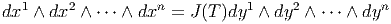 où
J(T) = det(∂xμ∕∂yν) est le jacobien (le déterminant de la matrice jacobienne) de
l’application T. On a donc
 Mais on sait bien que
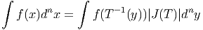
Donc si 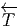ω désigne l’image réciproque de ω, on voit que
Mais on sait bien que
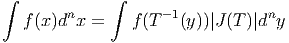
Donc si 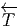ω désigne l’image réciproque de ω, on voit que  ω = ±∫
ω suivant que
T préserve ou non l’orientation : l’intégrale d’une n-forme est invariante sous le
groupe des difféomorphismes qui préservent l’orientation.
Passons maintenant au cas des variétés. Soit M une variété de dimension n et
ω une n-forme à support compact. Supposant la variété orientable, on choisit une
orientation [M] et une partition de l’unité {ρα}α∈I subordonnée à un atlas
{(Uα,φα)}α∈I, c’est-à-dire qu’on se donne une famille de fonctions différentielles
non négatives ρα telles que le support de ρα soit contenu dans Uα et
telles que ∑
ρα = 1 (chaque point de M doit posséder un voisinage dans
lequel la somme précédente est une somme finie). L’existence d’une telle
partition de l’unité, pour une variété différentiable, est un théorème
(que nous ne démontrons pas) qui permet, dans de nombreux cas, de
passer des résultats locaux (valables dans une carte) aux résultats globaux
(valables pour toute la variété M). On définit l’intégrale de ω sur [M] par
l’égalité
ω = ±∫
ω suivant que
T préserve ou non l’orientation : l’intégrale d’une n-forme est invariante sous le
groupe des difféomorphismes qui préservent l’orientation.
Passons maintenant au cas des variétés. Soit M une variété de dimension n et
ω une n-forme à support compact. Supposant la variété orientable, on choisit une
orientation [M] et une partition de l’unité {ρα}α∈I subordonnée à un atlas
{(Uα,φα)}α∈I, c’est-à-dire qu’on se donne une famille de fonctions différentielles
non négatives ρα telles que le support de ρα soit contenu dans Uα et
telles que ∑
ρα = 1 (chaque point de M doit posséder un voisinage dans
lequel la somme précédente est une somme finie). L’existence d’une telle
partition de l’unité, pour une variété différentiable, est un théorème
(que nous ne démontrons pas) qui permet, dans de nombreux cas, de
passer des résultats locaux (valables dans une carte) aux résultats globaux
(valables pour toute la variété M). On définit l’intégrale de ω sur [M] par
l’égalité
![∫ ∑ ∫
ω = ρ ω
[M] Uα α
α](source139x.png) où
la quantité ∫
Uαραω signifie en fait ∫
ℝn(φα-1)*(ρ
αω) pour une trivialisation locale
φα : Uα → ℝn préservant l’orientation. On se ramène ainsi au cas de
ℝn.
où
la quantité ∫
Uαραω signifie en fait ∫
ℝn(φα-1)*(ρ
αω) pour une trivialisation locale
φα : Uα → ℝn préservant l’orientation. On se ramène ainsi au cas de
ℝn.
L’orientation étant choisie une fois pour toutes, on note ∫
M et non plus ∫
[M]
l’intégrale correspondante. Il reste alors à démontrer que la définition adoptée ne
dépend pas des cartes choisies. . .
On appelle élément de volume sur M (de dimension n) ou forme volume un
élément quelconque ϵ de ΩnM. Le volume de M, supposée compacte, est alors
égal, par définition, à ∫
Mϵ. Il faut bien noter que sur une variété quelconque
(orientée), on intègre des n-formes, et non des fonctions, à moins, précisément,
d’avoir choisi un élément de volume ϵ une fois pour toutes, auquel cas on peut
évidemment poser ∫
Mf = ∫
Mfϵ où f ∈ C∞(M). Un cas particulièrement
important à considérer est celui où la forme volume est associée canoniquement
au choix d’une structure riemannienne (voir section 1.11) sur la variété en
question.
1.11 Variétés riemanniennes (propriétés élémentaires)
En toute logique, cette section ne devrait pas se trouver dans ce premier chapitre
consacré aux variétés différentielles. En effet, la définition de la structure de
variété riemannienne est liée à un cas particulier de restriction d’espace fibré (les
espaces fibrés font l’objet du chapitre 4). Cela dit, pour des raisons à
la fois historiques et pédagogiques, il est sans doute préférable que le
lecteur se familiarise d’ores et déjà avec certaines propriétés des variétés
riemanniennes.
En géométrie élémentaire, on étudie d’abord les propriétés linéaires et affines
et on passe, ensuite, aux notions métriques. Il en va de même dans l’étude des
variétés. Une variété différentiable est encore un objet flasque et mou. . . la
donnée d’une métrique rigidifie l’espace considéré et permet, d’une part, de parler
de norme des vecteurs tangents et, d’autre part, de parler de distances entre
points. La définition élémentaire d’une métrique g, sur une variété différentiable
M, est la suivante : c’est un champ de tenseurs covariants symétriques
de degré deux (en général on impose également une condition de non
dégénérescence). Si {xμ} désigne un système de coordonnées locales, on
écrira
 La
métrique g est quelquefois notée ds2 = g
μνdxμdxν et appelée “élément de
longueur” ou tenseur métrique. Si {eα} est un co-repère mobile, on pourra écrire
également g = gαβeα ⊗ eβ. En tout point P de M on a donc un produit scalaire
gP défini sur TP M et permettant de calculer le produit scalaire gP (v,w) de deux
vecteurs quelconques v et w appartenant à l’espace tangent en ce point.
On a déjà dit que g devait être symétrique (c’est-à-dire gμv = gνμ, ou
gP (v,w) = gP (w,v)). Dans la plupart des cas, on impose également à g d’être non
dégénérée : le déterminant de la matrice (gμv) est supposé non nul en tout
point P et on peut donc inverser cette matrice. On obtient ainsi (gμν)
avec gμνg
νρ = δρμ. Cela définit un produit scalaire sur l’espace cotangent
qu’on pourra noter ♯g (et quelquefois g-1) et même parfois g s’il n’y a pas
d’ambiguïté) :
La
métrique g est quelquefois notée ds2 = g
μνdxμdxν et appelée “élément de
longueur” ou tenseur métrique. Si {eα} est un co-repère mobile, on pourra écrire
également g = gαβeα ⊗ eβ. En tout point P de M on a donc un produit scalaire
gP défini sur TP M et permettant de calculer le produit scalaire gP (v,w) de deux
vecteurs quelconques v et w appartenant à l’espace tangent en ce point.
On a déjà dit que g devait être symétrique (c’est-à-dire gμv = gνμ, ou
gP (v,w) = gP (w,v)). Dans la plupart des cas, on impose également à g d’être non
dégénérée : le déterminant de la matrice (gμv) est supposé non nul en tout
point P et on peut donc inverser cette matrice. On obtient ainsi (gμν)
avec gμνg
νρ = δρμ. Cela définit un produit scalaire sur l’espace cotangent
qu’on pourra noter ♯g (et quelquefois g-1) et même parfois g s’il n’y a pas
d’ambiguïté) :

Une variété différentiable munie d’une métrique (non dégénérée) est, par
définition, une variété riemannienne. Nous n’avons pas imposé au produit scalaire
défini par (gμv) d’être positif et nous ne l’imposerons pas. En général, une forme
bilinéaire symétrique est caractérisée par sa signature (p,q) – le nombre de signes
+(p) et de signes -(q) obtenus lorsqu’on la diagonalise. Si on tient à préciser
que la signature est de type (p, 0) ou (0,p), on dira que la variété est
proprement riemannienne. Si on tient à préciser que la signature est de type
(p, 1) ou (1,p), on dira que la variété est lorentzienne (on dit aussi, dans
ce dernier cas, que la signature est hyperbolique). Les cas riemanniens
et lorentziens sont particulièrement importants en physique mais nous
n’avons pas besoin de nous restreindre à ce cadre pour l’essentiel de ce qui
suit.
∙ Pour une variété riemannienne (M,g) orientée, on peut définir une forme de
volume canonique de la façon suivante. Soit {e } un repère mobile orthonormal,
c’est-à-dire g(e
} un repère mobile orthonormal,
c’est-à-dire g(e ,e
,e ) = η
) = η
 , avec η
, avec η
 = ±δ
= ±δ
 , le signe ± dépendant de la signature
de la métrique. Pour l’instant nons pouvons supposer que l’espace est proprement
riemannien, et orienté, mais à la fin de cette section, nous verrons comment
compléter les propriétés qui suivent lorsque la signature de la métrique est
quelconque, et plus particulièrement lorsqu’elle est hyperbolique. Désignant par
{e
, le signe ± dépendant de la signature
de la métrique. Pour l’instant nons pouvons supposer que l’espace est proprement
riemannien, et orienté, mais à la fin de cette section, nous verrons comment
compléter les propriétés qui suivent lorsque la signature de la métrique est
quelconque, et plus particulièrement lorsqu’elle est hyperbolique. Désignant par
{e } le co-repère dual du repère mobile choisi, l’élément de volume riemannien
est
} le co-repère dual du repère mobile choisi, l’élément de volume riemannien
est

Soit {σα} un autre repère, non nécessairement orthonormal, et Λα la
matrice de passage, c’est-à-dire σα = Λα
la
matrice de passage, c’est-à-dire σα = Λα e
e . Alors gαβ = Λα
. Alors gαβ = Λα Λ
β
Λ
β g
g
 , ce qui
implique
, ce qui
implique
![det(g ) = [det(Λ^α)]2det(g ) et donc det (Λ ^α) = |detgαβ-|1∕2
αβ α ^αβ^ α detg^αβ^](source160x.png) mais | det(g
mais | det(g
 )| = 1 puisqu’on a supposé la base {e
)| = 1 puisqu’on a supposé la base {e } orthonormale et
donc
} orthonormale et
donc
![det(Λ^αα) = |det(gαβ)|1∕2 = [det((Λ -1)α^α)]-1](source164x.png) Or
Ainsi
Or
Ainsi
 où
le symbole δα1α2…αn12…n désigne ± suivant que α
1α2…αn est une permutation paire
ou impaire de 1, 2, 3…n et il est égal à zéro dans les autres cas.
où
le symbole δα1α2…αn12…n désigne ± suivant que α
1α2…αn est une permutation paire
ou impaire de 1, 2, 3…n et il est égal à zéro dans les autres cas.
En particulier, si {σα} désigne un repère naturel  ∂ __
∂xμ
∂ __
∂xμ , on a g = gμνdxμ ∧dxν
et
, on a g = gμνdxμ ∧dxν
et
 Notons également que, dans un repère orthonormé, la racine carrée précédente
vaut 1 et donc ϵα1α2…αn = δα1α2…αn12…n En particulier ϵ
12…n = 1.
Notons également que, dans un repère orthonormé, la racine carrée précédente
vaut 1 et donc ϵα1α2…αn = δα1α2…αn12…n En particulier ϵ
12…n = 1.
∙ La métrique g permet également d’établir un isomorphisme canonique entre
l’espace tangent TM et l’espace cotangent T*M. Cette propriété est évidente
puisqu’en chaque point, l’existence d’un produit scalaire permet d’identifier les
espaces vectoriels TP M avec TP *M. En d’autres termes, on peut “monter” et
“descendre” les indices à l’aide de la métrique : au vecteur v = vμe
μ on associe
la 1-forme bv = v
μeμ définie par v
μ = gμνvν ( {eμ} désignant la base duale de
{eμ}). Inversement, à la 1-forme σ = σμeμ on associe le vecteur ♯σ = σμe
μ avec
σμ = gμvσ
ν. On peut écrire ⟨bv
1,v2⟩ = g(v1,v2) et ⟨σ, ,♯σ2⟩ = (σ1,σ2). Les
isomorphismes ♭ et ♯ sont appelés isomorphismes musicaux (pour des raisons
évidentes !).Cela dit, les physiciens choisissent en général une métrique une fois
pour toutes et décident donc de passer sous silence ces isomorphismes musicaux.
En d’autres termes, ils identifient v et ♭v ainsi que σ et ♯σ et écrivent tout
simplement v = vμe
μ = vμeμ ou σ = σ
μeμ = σμe
μ. Pour des raisons analogues
ils écrivent g = gμveμ ⊗ eν = gμve
μ ⊗ ev (mais il faut bien entendu se
rappeler que (gμv) est la matrice inverse de (gμv). Les isomorphismes
musicaux permettent, de la même façon, d’identifier les tenseurs covariants
et contravariants de même rang . Attention, lorsqu’on n’utilise pas de
métrique pour monter ou baisser les indices, il n’y a pas de raison de faire
attention à la position relative des indices covariants et contravariants (par
exemple, on peut parler de Tνρμ sans dire s’il s’agit de Tμ
νρ, de Tνρμ ou de
Tνμ
ρ). Les trois types de composantes correspondent d’ailleurs à des objets
différents puisque on travaille, suivant les cas, dans TM ⊗ T*M ⊗ T*M,
T*M ⊗ T*M ⊗ TM ou T*M ⊗ TM ⊗ T*M. Par contre, si on utilise la métrique
pour procéder à des identifications, il faut faire attention aux positions
relatives des indices haut et bas ! Ainsi, par exemple, Tμνρ désignera
gμμ′Tμ′
νρ. Tout ceci est assez trivial, mais peut être fallait-il le dire une
fois ?
Lorsqu’on a choisi une métrique, on écrira donc abusivement (sans utiliser la notation
♭ et ♯), par exemple T = Tμvρeμ ⊗ev ⊗eρ = T
μνρeμ ⊗e
v ⊗eρ = Tμvρe
μ ⊗ev ⊗eρ = …
Les isomorphismes musicaux sont quelquefois simplement désignés par
le même symbole g que la métrique elle même, le nombre d’arguments
permettant de décider si on parle des isomorphismes en question ou de la
métrique. Par exemple, on peut noter g(eμ) = gμveν et g(eμ) = gμve
ν.
Ceci est en accord avec les notations précédentes puisque par exemple
g(v) = g(vμe
μ) = vμg(e
μ) = vμg
μveν = v
veν.
Avec ces notations, nous avons alors g(v,w) = ⟨g(v),w⟩ = ⟨g(w),v⟩ = g(w,v).
∙ L’existence d’une métrique permet non seulement de calculer le produit
scalaire de deux vecteurs (ou de deux 1-formes) mais de contracter n’importe quel
tenseur d’ordre k covariant, contravariant ou partiellement covariant et
contravariant avec n’importe quel autre tenseur d’ordre k. On utilisera encore la
notation ⟨|⟩ pour écrire ces contractions de type assez général. Plutôt que
de décrire les différents cas, il suffit de dire, en termes imagés, qu’on
“monte” tous les indices du premier à l’aide de la métrique, qu’on “descend”
tous les indices du second et qu’on contracte complètement les objets
obtenus. Par exemple, si S = Sμνρeμ ⊗ eν ⊗ e
ρ et T = Tμνρeμ ⊗ e
ν ⊗ eρ
on fabrique Sμvρ′ = gρ′ρSμvρ et Tμ′νρ = gμ′μT
μνρ. On peut alors calculer
⟨S,T⟩ = SμνρT
μνρ. En particulier, si {φ1,φ2,…,φk} désignent une famille de
1-formes et {ψ1,ψ2,…,ψk} en désigne une autre, on peut vérifier que cette
définition conduit à
 Dans le sous-cas particulier où ces deux familles coïncident et où on suppose la
famille {φk} orthonormée, il vient
Dans le sous-cas particulier où ces deux familles coïncident et où on suppose la
famille {φk} orthonormée, il vient

∙ Lorsque la signature de la métrique n’est pas proprement riemannienne, c’est
à dire lorsqu’elle est de type (p,q), il faut supposer que la variété admet une
orientation temporelle et qu’elle est temporellement orientée. Dans le
cas usuel de l’espace-temps de la physique (signature (3, 1)), on utilisera
des indices 0, 1, 2, 3, comme c’est l’usage, plutôt que 1, 2, 3, 4 ; on posera
alors
 La
différence avec le cas proprement euclidien vient du fait qu’il faut faire attention
aux signes lorsqu’on “monte” les indices. Par ailleurs, det(g
La
différence avec le cas proprement euclidien vient du fait qu’il faut faire attention
aux signes lorsqu’on “monte” les indices. Par ailleurs, det(g
 ) = (-1)q.
Les formules précédentes restent donc valables et on aura toujours, par
exemple,
) = (-1)q.
Les formules précédentes restent donc valables et on aura toujours, par
exemple,
 mais par contre
mais par contre
 Plus généralement, nous avons vu que ϵα1α2…αn =
Plus généralement, nous avons vu que ϵα1α2…αn =  δα1α2…αn12…n, mais si
on “monte” ces indices (à l’aide de la métrique) le résultat va dépendre de la
signature, plus particulièrement du nombre q de signes “-” dans la métrique. On
obtient donc
δα1α2…αn12…n, mais si
on “monte” ces indices (à l’aide de la métrique) le résultat va dépendre de la
signature, plus particulièrement du nombre q de signes “-” dans la métrique. On
obtient donc
 Citons quelques contractions utiles :
Citons quelques contractions utiles :
 Lorsque la variété est lorentzienne, avec une signature de type (3, 1), on obtient
en particulier
Lorsque la variété est lorentzienne, avec une signature de type (3, 1), on obtient
en particulier


∙ Pour terminer, notons que l’existence d’une métrique permet d’associer à la
différentielle df d’une fonction f, un champ de vecteurs, le gradient de f défini
par gradf = ♯df. Ainsi, dans un repère naturel, on écrira

Encore une fois, la présente section consacrée aux variétés riemanniennes n’est
destinée qu’à introduire certaines notations utiles et quelques notions
élémentaires. Nous reviendrons plus en détail sur les variétés riemanniennes à la
fin du chapitre consacré aux connexions.
1.12 Divers
Nous regroupons dans ce paragraphe un certain nombre de notions et de
commentaires qui peuvent être considérés comme un peu moins élémentaires que
ce qui précède ; cela ne signifie pas qu’ils sont moins “importants” mais
simplement que nous utiliserons peu ou pas ces concepts dans la suite de
l’ouvrage. On se contente donc ici de présenter quelques définitions de façon à
suggérer au lecteur des lectures plus approfondies et à donner quelques idées
intuitives.
1.12.1 Compléments sur les dérivations d’algèbre
L’ensemble des dérivations de l’algèbre associative se note Der. Rappelons
qu’une dérivation est une application linéaire v de A dans A telle que
v[fg] = v[f]g + fv[g] avec f,g ∈. Il est facile de voir que la somme
de deux dérivations est une dérivation, par contre le produit de deux
dérivations n’est pas une dérivation (dans les cas où on peut le définir,
c’est un opérateur du “second ordre” ). Il est intéressant de savoir si
l’opérateur w défini par w = hv avec h ∈ et v ∈ Der est, ou non, une
dérivation. En d’autres termes, on veut savoir si l’espace Der est stable
lorsqu’on multiplie (à gauche) ses éléments par des éléments de . Dans
l’affirmative, on dit que Der est un module sur . La réponse est oui, mais
seulement dans le cas où est commutative. En effet, prenons f et g dans .
Alors, (hv)[fg] = h(v[fg]) = h(v[f]g + fv[g]) = hv[f]g + hfv[g] mais
(hv)[f]g + f(hv)[g] = hv[f]g + fhv[g]. Ces deux expressions ne coïncident que si
hf = fh.
Conclusion : L’ensemble des dérivations d’une algèbre associative n’est pas, en
général, un module sur cette algèbre, sauf si cette cette dernière est commutative.
Il est facile de voir que Der est un module sur le centre de , centre qui peut
être assez petit...
Par contre, l’ensemble des dérivations est toujours une algèbre de Lie : on
peut y définir une loi de composition interne (notée [, ]) non associative et
anti-commutative ([u,v] = -[v,u]), qui vérifie l’identité suivante (l’identité de
Jacobi) :
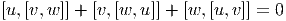
Rappelons que l’ensemble des champs de vecteurs sur une variété n’est autre
que l’algèbre de Lie DerC∞(M).
Le fait que l’ensemble des dérivations de soit un module sur lorsque est
commutative admet une généralisation supersymétrique. Supposons que A soit
une algèbre ℤ2-graduée. Chaque élément a de peut donc s’écrire comme
somme d’un élément pair (#a = 0) et d’un élément impair (#a = 1). On définit
les dérivations graduées (ou super-dérivations ) des algèbres ℤ2-graduées comme
les dérivations usuelles, mais en introduisant un signe. On dit qu’une
super-dérivation est paire si c’est une dérivation, au sens usuel du terme. On dit
qu’une super-dérivation est impaire si c’est une application linéaire de A dans A
telle que v[fg] = v[f]g + (-1)#ffv[g]. On introduit donc alors une ℤ
2 graduation
pour les super-dérivations et on réunit les deux types de formules de la façon
suivante :
![|-----------------------------|-
v[fg] = v[f]g + (- 1 )#v#f fv[g]
--------------------------------](source185x.png) avec f,g ∈. En pratique, il suffit d’utiliser la règle dite “Règle de Milnor”
disant qu’il faut introduire un signe “-” chaque fois qu’on doit commuter deux
éléments impairs.
avec f,g ∈. En pratique, il suffit d’utiliser la règle dite “Règle de Milnor”
disant qu’il faut introduire un signe “-” chaque fois qu’on doit commuter deux
éléments impairs.
L’ensemble des super-dérivations d’une algèbre A ne constitue pas, en général,
un module sur , sauf lorsque est commutative graduée (on dit aussi
super-commutative ), c’est à dire lorsque fg = (-1)#f#ggf. Par contre l’ensemble
des dérivations graduées constitue toujours un module sur le super-centre de
(l’ensemble des éléments de qui commute – au signe près – avec ) et il
constitue également une super-algèbre de Lie , c’est à dire que les dérivations
graduées super-anticommutent :
![|-----------------------|
[v,w-] =---(--)#v#w-[w,-v]](source186x.png) et
vérifient l’identité de Jacobi graduée
et
vérifient l’identité de Jacobi graduée
![|-------------------------------------------------------------|
|(- )#u#w [u,[v,w ]] + (- )#w#v [w,[u,v]] + (- )#v#u[v,[w, u]] = 0
--------------------------------------------------------------](source187x.png)
1.12.2 Cohomologie de De Rham
Nous avons vu que l’opérateur d satisfait d2 = 0 et envoie ΩkM dans
Ωk+1M. Soit Zk le noyau de d, c’est-à-dire Zk = {ω ∈ ΩkM tq dω = 0}.
Les éléments de Zk sont appelés cocycles de De Rham de degré k (ou
formes fermées). Soit Bk l’image par d de Ωk-1M dans ΩkM, c’est-à-dire
Bk = {ω ∈ ΩkM tq ∃τ ∈ Ωk-1 avec ω = dτ}. Les éléments de Bk sont les
cobords de De Rham de degré k ou formes exactes . Le fait que d2 = 0 implique
l’inclusion Bk ⊂ Zk.
Il résulte de la linéarité de d que Zk et Bk sont stables par addition, ce sont
donc des groupes abéliens ; on peut alors considérer le groupe quotient
Hk = Zk∕Bk qu’on appelle groupe de cohomologie (de De Rham) de degré
k. On peut calculer, pour toute variété, les groupes H0,H1,…,Hn. Ces
groupes fournissent, en quelque sorte une “mesure” de la non-trivialité de la
topologie de la variété M. En effet, tous ces groupes sont triviaux (se
réduisent à l’élément neutre 0) dans le cas de l’espace numérique ℝn,
ce que le lecteur sait déjà puisque, dans un autre contexte, celui de la
théorie des équations différentielles sur ℝn, on montre de façon élémentaire
que, pour résoudre une équation df = 0, il faut poser f = dg (Lemme de
Poincaré).
1.12.3 Homologie de De Rham
La définition de l’homologie de De Rham est plus délicate que celle de la
cohomologie. De façon à en donner une image intuitive, disons qu’on s’intéresse à
des “morceaux” de la variété M (comptés possiblement avec multiplicité). Un tel
morceau C (techniquement une chaîne ) peut avoir un bord (le bord d’un disque
est un cercle) ou pas de bord (le bord d’un cercle est nul). On peut formellement
additionner les chaînes (avec des coefficients réels, dans le cas présent). On
définit alors un opérateur bord ∂, de carré nul lui aussi (∂2 = 0, le bord d’un
bord est nul) et on peut considérer les cycles (chaînes C dont le bord
∂C est nul) et les bords (chaînes C qui sont le bord de quelque chose
C = ∂D).
Tous les bords étant des cycles, on peut là aussi considérer les cycles Zk de
dimension k modulo les bords Bk et définir les groupes d’homologie Hk = Zk∕Bk.
De façon générale, on parle de cohomologie lorsqu’on a un opérateur de carré nul
(tel d) dont l’action sur un espace vectoriel ℤ-gradué fait croître le degré d’une
unité et d’homologie lorsqu’on a un opérateur de carré nul (tel ∂) dont l’action
fait décroître le degré.
Paradoxalement, la définition de d est plus simple que celle de ∂ (nous avons
passé cette dernière sous silence) alors que l’action de ∂ est plus intuitive, plus
“visuelle” que celle de d. Le lien entre les deux est fournit par le théorème de
Stokes : de façon générale on peut intégrer les k-formes sur les k-chaînes et on
a la propriété
 qui
généralise la relation bien connue des physiciens de première année de
nos universités ∫
Σ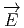.d
qui
généralise la relation bien connue des physiciens de première année de
nos universités ∫
Σ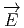.d = ∫
V div
= ∫
V div dτ où la surface Σ est le bord du
volume V et où l’intégrale représente le “flux sortant” du champ électrique
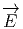.
La dualité entre homologie et cohomologie s’écrit très simplement dans le cas
des variétés compactes ; dans ce cas, on démontre que Hk est isomorphe à
Hn-k où n est la dimension de la variété. Le support visuel intuitif suffit,
en dimension 2, pour calculer l’homologie (et donc la cohomologie) de
quelques variétés très simples. C’est ainsi que, pour la sphère S2 on a
H0(S2) = H
2(S2) = ℝ et H
1(S2) = 0 (tout cercle tracé sur la sphère est le bord
de quelque chose), alors que pour le tore T2, on a H
0(T2) = H
2(T2) = ℝ mais
H1(T2) = ℝ ⊕ ℝ : les deux générateurs de H
1(T2) correspondent respectivement
aux deux types de cercles qu’on peut tracer sur un tore et qui ne “bordent”
rien, c’est-à-dire “ceux qui font un tour”. On appelle nombres de Betti
de la variété M, la dimension bp de Hp(M) considéré comme espace
vectoriel.
dτ où la surface Σ est le bord du
volume V et où l’intégrale représente le “flux sortant” du champ électrique
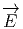.
La dualité entre homologie et cohomologie s’écrit très simplement dans le cas
des variétés compactes ; dans ce cas, on démontre que Hk est isomorphe à
Hn-k où n est la dimension de la variété. Le support visuel intuitif suffit,
en dimension 2, pour calculer l’homologie (et donc la cohomologie) de
quelques variétés très simples. C’est ainsi que, pour la sphère S2 on a
H0(S2) = H
2(S2) = ℝ et H
1(S2) = 0 (tout cercle tracé sur la sphère est le bord
de quelque chose), alors que pour le tore T2, on a H
0(T2) = H
2(T2) = ℝ mais
H1(T2) = ℝ ⊕ ℝ : les deux générateurs de H
1(T2) correspondent respectivement
aux deux types de cercles qu’on peut tracer sur un tore et qui ne “bordent”
rien, c’est-à-dire “ceux qui font un tour”. On appelle nombres de Betti
de la variété M, la dimension bp de Hp(M) considéré comme espace
vectoriel.
1.12.4 Espace des p-vecteurs
Nous avons choisi de développer la notion de produit extérieur en partant du
fibré cotangent , c’est-à-dire que nous avons considéré des produits tensoriels
complètement antisymétriques de vecteurs covariants. Ceci nous a amené
au concept de forme différentielle. Nous aurions pu faire de même en
partant des vecteurs contravariants. Le formalisme est très semblable et les
objets contravariants Ωp(M) correspondant aux formes différentielles
Ωp(M) sont simplement baptisées “p-vecteurs”. On peut alors bien entendu
évaluer une p-forme sur un p-vecteur, le résultat étant une fonction sur
M.
1.12.5 Espace des courants de De Rham
Le lecteur est sans doute déjà familier avec la notion de distribution. Pour les
fonctions numériques sur un compact de ℝn les distributions sont définies comme
dual des fonctions infiniment différentiables. Cet espace contient d’une part des
éléments “réguliers” mais aussi toutes les mesures (en particulier la mesure de
Dirac) et même des objets encore plus singuliers (les dérivées de la distribution de
Dirac par exemple). On peut généraliser la théorie des distributions aux
formes différentielles de degré quelconque sur une variété ; on définit ce
qu’on appelle l’espace des courants de De Rham comme dual (sur ℝ) des
formes différentielles. L’évaluation d’un courant C sur une forme ω est
donc un nombre ⟨C,ω⟩. Si la variété M est compacte et si ω est une
k-forme, un élément “régulier” peut être représenté par une n - k forme σ
puisque l’évaluation de l’intégrale ∫
Mσ ∧ ω est bien une fonctionnelle
linéaire. L’intégration d’une forme sur une chaîne (théorie de l’homologie),
l’évaluation d’un p-vecteur sur une p-forme suivie de l’intégration sur M de
la fonction obtenue, fournissent aussi des exemples de courants de De
Rham. La théorie de l’homologie de De Rham (opérateur ∂) se généralise
d’ailleurs au cadre des courants et le théorème de Stokes s’écrit dans ce cas
⟨∂C,ω⟩ = ⟨C,dω⟩.
1.12.6 Les algèbres de Frölicher – Nijenhuis et de Nijenhuis–Richardson
Nous savons que l’algèbre de De Rham Ω(M), munie du produit extérieur, est
une algèbre commutative graduée.
Nous savons aussi que l’ensemble des dérivations graduées d’une algèbre
commutative graduée constitue une super-algèbre de Lie pour laquelle le crochet
de Lie est donnée par le commutateur (gradué) que nous noterons simplement
[.,.].
En conséquence Der(Ω(M)) est une algèbre de Lie graduée. Reste à identifier
explicitement les éléments de cette algèbre.
Tout d’abord, puisque Ω(M) est ℤ-graduée, on dira qu’une dérivation est de
degré p (qui peut être positif, négatif ou nul) si elle fait passer de Ωk(M) à
Ωk+p(M). On notera Der
p(Ω(M)) l’espace des dérivations de degré p. La dérivée
extérieure est elle-même un élément de Der1(Ω(M).
Soit Ω(M,TM) l’espace des formes différentielles sur M à valeurs dans le fibré
tangent, c’est à dire Ωk(M,TM) = Γ(ΛkT*M ⊗ TM). Une k-forme K à valeurs
vectorielles s’écrira, dans un repère naturel,
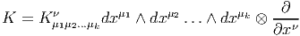
Un résultat du à Richardson et Nijenhuis montre que l’algèbre de Lie graduée
des dérivations (graduées) de l’algèbre de De Rham Ω(M) peut s’identifier à deux
copies de Ω(M,TM) munies de deux crochets différents, connus respectivement
sous le nom de crochet de Nijenhuis-Richardson et crochet de Frölicher-Nijenhuis.
Plus précisément, pour tout toute dérivation D, de degré k de l’algèbre Ω(M) on
peut trouver un unique K ∈ Ωk(M,TM) et un unique L ∈ Ωk+1(M,TM) tels
que
 où
où
 K et iL définissent des dérivations que nous allons caractériser un peu plus loin.
Nous ne démontrerons pas le théorème de Richardson et Nijenhuis mais
définirons seulement les dérivations dont il vient d’être question (voir
[7].
K et iL définissent des dérivations que nous allons caractériser un peu plus loin.
Nous ne démontrerons pas le théorème de Richardson et Nijenhuis mais
définirons seulement les dérivations dont il vient d’être question (voir
[7].
Il se trouve que les éléments de Ω(M,TM) peuvent en effet agir par dérivation
sur Ω(M), et ce, de deux façons distinctes.
La première consiste en une généralisation du produit intérieur. Au lieu de
considérer le produit intérieur d’une forme par un vecteur, on remplace le vecteur
par une k-forme à valeurs vectorielles. En effet, soit K ∈ Ωk(M,TM),
L ∈ Ωl(M,TM) et ω une forme différentielle de degré q sur M. On va définir i
Kω,
qui sera une forme différentielle de degré k + (q - 1) (la partie “champ de
vecteurs” présente dans K fait passer de q à q - 1 mais les k indices de forme
demeurent). Soient Xi i ∈{1, 2,…,k + (q - 1) des champs de vecteurs. On
pose
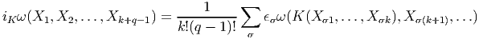
Notons que, agissant sur une fonction (un élément de Ω0(M)), i
K donne zéro. On
peut vérifier que iK défini bien une dérivation. Celle-ci est d’ailleurs de
degré k - 1 ; ainsi iK ∈ Derk-1Ω(M). On peut démontrer que toute
dérivation de l’algèbre de De Rham dont la restriction aux fonctions
est nulle est de cette forme. Le commutateur gradué (dans Der(Ω(M))
de deux dérivations de ce type est une dérivation du même type. Plus
précisément,
![|-----------------|
-[iK-,iL-] =-i[K,L]NR|](source196x.png) où
la forme à valeur vectorielle [K,L]NR est égale à
où
la forme à valeur vectorielle [K,L]NR est égale à
![[K, L ]NR = iKL - (- 1)(k-1)(l-1)iLK](source197x.png) et
où on généralise l’action de iK sur Ω(M) à une action sur Ω(M,TM)
en posant iK(α ⊗ X) = iK(α) ⊗ X, avec α ∈ Ω(M) et X un champ de
vecteurs. Le crochet [,., ] porte le nom de crochet de Nijenhuis-Richardson.
et
où on généralise l’action de iK sur Ω(M) à une action sur Ω(M,TM)
en posant iK(α ⊗ X) = iK(α) ⊗ X, avec α ∈ Ω(M) et X un champ de
vecteurs. Le crochet [,., ] porte le nom de crochet de Nijenhuis-Richardson.
La deuxième façon d’agir consiste en une généralisation de la dérivée de Lie.
Soit encore K ∈ Ωk(M,TM). On définit
K par
![k-1
LK = [iK ,d] = iK d - (- 1) diK](source198x.png) On
peut vérifier que cet opérateur fournit bien une dérivation de l’algèbre
Ω(M). Cette dérivation est de degré k : K ∈ Derk(Ω(M) (dans le cas
particulier k = 0 on retrouve un résultat connu). On peut démontrer
que
On
peut vérifier que cet opérateur fournit bien une dérivation de l’algèbre
Ω(M). Cette dérivation est de degré k : K ∈ Derk(Ω(M) (dans le cas
particulier k = 0 on retrouve un résultat connu). On peut démontrer
que
![---------------------
| |
[LK-,LL-] =-L[K,L]FN--](source199x.png) pour une forme à valeurs vectorielles bien déterminée notée [K,L]FN qu’on
appelle crochet de Frölicher-Nijenhuis. Pour des éléments décomposés, on a la
formule de Michor Avant de conclure ce paragraphe, il est utile de définir la notion suivante. Soit
J ∈ Ω1(M,TM), alors le carré gradué de J, pour le crochet de Frölicher-Nijenhuis,
est un élément [J,J]FN de Ω2(M,TM) appelé torsion de Nijenjuis du
vecteur-1-forme J. Pour justifier l’intérêt porté à cette notion, citons seulement le
résultat suivant (nous n’étudierons pas les variétés complexes dans cet
ouvrage) : lorsque J, qui peut s’interpréter géométriquement comme un
champ d’endomorphismes du fibré tangent, est une structure presque
complexe (J2 = -1), l’annulation de sa torsion de Nijenhuis fourni une
condition nécessaire et suffisante pour l’intégrabilité de cette structure
(c’est à dire que, dans ce cas, la structure presque-complexe est en fait,
complexe).
pour une forme à valeurs vectorielles bien déterminée notée [K,L]FN qu’on
appelle crochet de Frölicher-Nijenhuis. Pour des éléments décomposés, on a la
formule de Michor Avant de conclure ce paragraphe, il est utile de définir la notion suivante. Soit
J ∈ Ω1(M,TM), alors le carré gradué de J, pour le crochet de Frölicher-Nijenhuis,
est un élément [J,J]FN de Ω2(M,TM) appelé torsion de Nijenjuis du
vecteur-1-forme J. Pour justifier l’intérêt porté à cette notion, citons seulement le
résultat suivant (nous n’étudierons pas les variétés complexes dans cet
ouvrage) : lorsque J, qui peut s’interpréter géométriquement comme un
champ d’endomorphismes du fibré tangent, est une structure presque
complexe (J2 = -1), l’annulation de sa torsion de Nijenhuis fourni une
condition nécessaire et suffisante pour l’intégrabilité de cette structure
(c’est à dire que, dans ce cas, la structure presque-complexe est en fait,
complexe).
Chapitre 2
Groupes de Lie et espaces homogènes
2.1 Généralités sur les groupes de Lie
2.1.1 Généralités et définitions élémentaires
Les groupes de Lie et les espaces homogènes fournissent une multitude d’exemples
particulièrement simples de variétés différentiables et c’est une des raisons pour
lesquelles nous leur consacrons une section de cet ouvrage. Une autre raison
importante est que les groupes de Lie vont être utilisés comme “outils” dans les
chapitres suivants.
Chacun est censé être déjà familier avec la notion de structure de groupe.
L’introduction aux groupes et leur utilisation dans toutes les branches de la
physique est un thème présenté et étudié, suivant les années et les réformes de
l’enseignement secondaire, entre la classe de quatrième et les années de Licence...
Rappelons donc qu’un groupe est un ensemble (fini ou infini) muni d’une loi de
composition interne associative, possédant un élément neutre, et tel que tout
élément possède un symétrique pour la loi en question. Du point de vue du
calcul, notons que, dans un groupe, il est toujours possible de résoudre une
équation du premier degré (du type ax = b, la solution étant x = a-1b). Les
exemples les plus simples habituellement présentés aux élèves de nos lycées sont
les suivants : Le groupe (ℤ, +) des entiers relatifs, les groupes (additif et
multiplicatif) de nombres rationnels (Q, +) et (Q -{0},×) ainsi que leurs
généralisations réelles et complexes, les groupes de congruence ℤp = ℤ∕pℤ, les
groupes de symétrie des solides platoniques, les groupes de transformations
linéaires, affines ou projectives et les groupes de substitutions. Les groupes
ne sont pas nécessairement commutatifs, comme les derniers exemples
le montrent clairement. Les groupes peuvent être finis (comme ℤ∕pℤ),
infinis mais discrets (comme ℤ) ou infinis et “continus” (comme ℝ ou
comme le groupe U(1) des rotations autour d’un axe). Regardons ce dernier
exemple d’un peu plus près. Toute rotation autour d’un axe est parfaitement
caractérisée par un angle θ compris entre 0 et 2π ; de surcroît, les rotations
d’angle 0 et 2π sont identiques. En d’autres termes, on peut considérer les
rotations en question comme les différents points d’un cercle S1 de rayon
quelconque, l’élément neutre (c’est à dire la rotation d’angle nul) étant un
point marqué de ce cercle S1. Ceci nous fournit un image “visuelle” de
ce groupe U(1), image qui peut nous faire oublier momentanément la
structure algébrique proprement dite de cet ensemble (un groupe) mais qui
attire notre attention sur sa structure topologique ou même différentiable
(un cercle). La notion de groupe de Lie généralise ce dernier exemple
en juxtaposant de façon axiomatique la structure de groupe et celles de
variété.
Par définition, un groupe de Lie G est donc une variété différentiable
munie d’une structure de groupe, de façon à ce que les deux
structures soient compatibles, c’est à dire de façon à ce que la
multiplication
et le passage à l’inverse soient des applications différentiables. Notons que la
multiplication est une application de G×G dans G alors que le passage à l’inverse
est une application de G dans G. Le lecteur pourra visuellement se représenter un
groupe de Lie comme un “patatoïde” avec multiplication (entre points) et origine
marquée (voir 2.1).
La dimension d’un groupe de Lie est, par définition, sa dimension en tant que
variété (nous verrons de nombreux exemples un peu plus loin) ; notons
dès à présent que le groupe U(1) présenté plus haut est de dimension
1.
2.1.2 Exemples élémentaires de groupes classiques
On désigne par M(n, ℂ) l’algèbre (de dimension complexe n2) des matrices
carrées d’ordre n à coefficients complexes et par a† l’adjointe d’une matrice a
de M(n, ℂ) (si a = (aij), alors a† = (a
ji)). L’ensemble précédent n’est
certes pas un groupe pour la loi de multiplication des matrices puisqu’il
contient de nombreux éléments non inversibles (toutes les matrices de
déterminant nul) mais il contient plusieurs sous-ensembles intéressants qui,
eux, sont bien des groupes multiplicatifs, comme on pourra le vérifier
aisément.
- GL(n, ℂ) = {a ∈ M(n, ℂ)∕|deta≠0}, le groupe linéaire complexe.
- U(n) = {a ∈ GL(n, ℂ)∕|a† = a-1}, le groupe unitaire.
- SU(n) = {a ∈ U(n, ℂ)∕|deta = 1}, le groupe unitaire unimodulaire,
aussi appelé groupe spécial unimodulaire.
Notons que les éléments de U(n) ont automatiquement un déterminant (un nombre
complexe) de module 1, puisque deta† = deta = 1∕deta, mais pas nécessairement
égal à 1.
Les groupes précédents sont définis comme groupes de matrices ; les entrées
de ces matrices (les “éléments de matrice”) sont des nombres qui peuvent être
réels mais sont généralement complexes. Si on impose à ces éléments de matrice
d’être réels, on obtient de nouveaux groupes. Soit M(n, ℝ) l’algèbre (de
dimension réelle n2) des matrices carrées d’ordre n à coefficients réels. Cet
ensemble, comme M(n, ℂ) est une algèbre associative mais n’est pas un groupe
multiplicatif. On définit
- GL(n, ℝ) = GL(n, ℂ) ∩ M(n, ℝ), le groupe linéaire réel.
- O(n, ℝ) = U(n, ℂ) ∩ M(n, ℝ), le groupe orthogonal, encore appelé
groupe des rotations.
- SO(n, ℝ) = SU(n) ∩ M(n, ℝ), le groupe spécial orthogonal.
Les éléments du groupe unitaire ayant un déterminant de module 1, ceux de O(n, ℝ)
auront un déterminant égal à -1 ou à 1 ; ceux pour lesquels il est précisément
égal à 1 constituent le groupe SO(n, ℝ). On désigne par  la transposée d’une
matrice a de M(n, ℝ).
la transposée d’une
matrice a de M(n, ℝ).
2.2 Généralités sur les algèbres de Lie
2.2.1 Application exponentielle et algèbres de Lie
Définition
Une algèbre de Lie 𝔤 sur un corps commutatif K est un ensemble qui est, d’une
part un espace vectoriel sur K (sa loi de groupe abélien est notée + et sa loi
externe sur K est notée multiplicativement), de dimension finie ou non, et qui,
d’autre part, est muni d’une loi de composition interne –non associative–
généralement notée [,] vérifiant les propriétés suivantes
-
Anticommutativité
- ∀X,Y ∈ 𝔤 [X,Y ] = -[Y,X]
-
Identité de Jacobi
- ∀X,Y,Z ∈ 𝔤 [X, [Y,Z]] + [Z, [X,Y ]] +
[Y, [Z,X]] = 0
On suppose également vérifiée la linéarité par rapport aux scalaires, c’est à dire
[αX,Y ] = [X,αY ] = α[X,Y ] si α ∈ K. La loi [,] est généralement désignée sous
le nom de “crochet de Lie”. Dans toute la suite, le corps K coïncidera avec le
corps ℂ des nombres complexes.
Exemple fondamental
Soit une algèbre associative ; on peut lui associer canoniquement
une algèbre de Lie en définissant le crochet de Lie de la façon suivante
(auquel cas le crochet de Lie peut également être désigné sous le nom de
commutateur) :
![X, Y ∈ A → [X, Y ] = XY - Y X](source203x.png) Le
crochet obtenu est généralement non nul, sauf évidemment si X et Y commutent.
Par ailleurs on vérifie aisément que les propriétés d’anticommutativité du crochet
ainsi que l’identité de Jacobi sont automatiquement satisfaites. Les ensembles de
matrices M(n, ℂ) et M(n, ℝ) sont donc automatiquement des algèbres de
Lie.
Le
crochet obtenu est généralement non nul, sauf évidemment si X et Y commutent.
Par ailleurs on vérifie aisément que les propriétés d’anticommutativité du crochet
ainsi que l’identité de Jacobi sont automatiquement satisfaites. Les ensembles de
matrices M(n, ℂ) et M(n, ℝ) sont donc automatiquement des algèbres de
Lie.
Constantes de structure d’une algèbre de Lie 𝔤
Supposons que 𝔤, en tant qu’espace vectoriel sur le corps des complexes ℂ soit de
dimension finie n et soit {Xα}α∈{1…n} une base de 𝔤. Le crochet de Lie [Xα,Xβ] de
deux vecteurs de base est a priori un élément de 𝔤 et peut donc se développer sur
la base choisie :
Les
n3 nombres C
αβγ sont les constantes de structure de 𝔤 par rapport à la base
choisie.
Application exponentielle dans M(n, ℂ)
On désigne par exp : α →∑
p=0∞αp∕p! l’application exponentielle définie sur
M(n, ℂ). Posons g = eA. Il est facile de voir que
 Cette relation est évidente si A est diagonalisable (puisque eλ1…eλp = eλ1+…+λp). Si
ce n’est pas le cas, on utilise pour démontrer cette propriété générale le fait que
l’ensemble des matrices diagonalisables sur ℂ est dense. Cette relation est à la
base d’une quantité de résultats dont voici le premier : si A ∈ M(n, ℂ), alors
g = eA ∈ GL(n, ℂ) ; en effet, detg n’est jamais nul puisque la fonction z → ez ne
s’annule pas.
Cette relation est évidente si A est diagonalisable (puisque eλ1…eλp = eλ1+…+λp). Si
ce n’est pas le cas, on utilise pour démontrer cette propriété générale le fait que
l’ensemble des matrices diagonalisables sur ℂ est dense. Cette relation est à la
base d’une quantité de résultats dont voici le premier : si A ∈ M(n, ℂ), alors
g = eA ∈ GL(n, ℂ) ; en effet, detg n’est jamais nul puisque la fonction z → ez ne
s’annule pas.
△ ATTENTION : On n’a pas dit que tout élément de GL(n, ℂ) pouvait être
atteint par la fonction exp (c’est faux !).
Cas des groupes de matrices : Correspondance entre groupes et algèbres de
Lie
Soit G un groupe de Lie défini comme sous-ensemble de M(n, ℂ). On définit son
algèbre de Lie notée 𝔤 ou LieG comme suit,
 De
façon un peu imagée, on peut dire que l’algèbre de Lie d’un groupe G, c’est… son
logarithme ! De fait, l’utilisation de l’algèbre de Lie de G permet de linéariser les
propriétés des groupes, c’est à dire de transformer les multiplications en additions
etc .
De
façon un peu imagée, on peut dire que l’algèbre de Lie d’un groupe G, c’est… son
logarithme ! De fait, l’utilisation de l’algèbre de Lie de G permet de linéariser les
propriétés des groupes, c’est à dire de transformer les multiplications en additions
etc .
La définition ci-dessus de l’algèbre de Lie d’un groupe G semble un peu
restrictive en ce sens qu’elle semble ne pouvoir s’appliquer qu’aux groupes de
matrices, mais il existe une définition plus abstraite de la notion d’algèbre de Lie
d’un groupe de Lie, définition ne faisant pas l’hypothèse d’une réalisation
matricielle ; nous y reviendrons plus loin.
Soient g et h deux éléments de G et supposons qu’on puisse écrire g = etA et
h = etB avec A,B ∈ 𝔤. Tout d’abord, notons que g-1 = e-tA. On peut alors
considérer le commutateur de g et h au sens de la théorie des groupes,
c’est à dire l’élément c = ghg-1h-1 de G. Au second ordre en t, il vient
Il ne faudrait pas trop hâtivement en déduire que le commutateur dans G est égal
à l’exponentielle du commutateur dans LieG, mais c’est “presque” vrai,
comme on vient de le voir (c 1 + t2[A,B]). De plus, on peut démontrer
que
![t2[A,B] tA∕n tB ∕n -tA∕n -tB ∕n n2
e = nli→m∞(e e e e )](source209x.png) C’est à l’aide de ces relations qu’on peut s’assurer que l’algèbre de Lie d’un
groupe de Lie est bien… une algèbre de Lie (l’ensemble est bien stable par le
commutateur).
C’est à l’aide de ces relations qu’on peut s’assurer que l’algèbre de Lie d’un
groupe de Lie est bien… une algèbre de Lie (l’ensemble est bien stable par le
commutateur).
Soit g ∈ G et supposons qu’on puisse écrire g = eA ; alors, en utilisant la
structure d’espace vectoriel de LieG, on voit qu’on peut décomposer A sur une
base {Xα} ;ainsi, A = ∑
aαX
α. Les n nombres aα permettent donc de définir
sur G un système de coordonnées (une carte). Ceci montre également que la
dimension de G, en tant que variété, est égale à celle de LieG, considéré comme
espace vectoriel.
2.2.2 Correspondance entre groupes et algèbres de Lie
Algèbres de Lie des groupes classiques
Notons d’abord que, pour les groupes unitaires,
 ainsi la matrice A est anti-hermitienne.
ainsi la matrice A est anti-hermitienne.
Nous avons déjà rencontré la relation deteA = eTrA ; il s’ensuit que, si le
déterminant de g = eA est égal à 1, la trace de A est nulle. Ainsi,
![A †
e ∈ SU (n) ⇐⇒ [A + A = 0 et T rA = 0]](source211x.png) Dans le cas des groupes orthogonaux, la définition implique immédiatement
Les
matrices A de l’algèbre correspondante sont donc antisymétriques réelles, ce qui,
en particulier, implique la nullité des éléments de matrice diagonaux et donc de la
trace ; mais le seul fait que trA = 0 implique deteA = 1 et donc eA ∈ SO(n). Y
aurait-il une contradiction ? Comment donc obtenir une matrice orthogonale de
déterminant différent de 1 ? Il est pourtant bien évident que la définition de
O(n) est différente de celle de SO(n) ! La seule conclusion possible est la
suivante : les éléments de O(n) qui ne sont pas dans SO(n) ne sont
pas atteints par la fonction exp (voir la remarque à la fin du présent
paragraphe).
Dans le cas des groupes orthogonaux, la définition implique immédiatement
Les
matrices A de l’algèbre correspondante sont donc antisymétriques réelles, ce qui,
en particulier, implique la nullité des éléments de matrice diagonaux et donc de la
trace ; mais le seul fait que trA = 0 implique deteA = 1 et donc eA ∈ SO(n). Y
aurait-il une contradiction ? Comment donc obtenir une matrice orthogonale de
déterminant différent de 1 ? Il est pourtant bien évident que la définition de
O(n) est différente de celle de SO(n) ! La seule conclusion possible est la
suivante : les éléments de O(n) qui ne sont pas dans SO(n) ne sont
pas atteints par la fonction exp (voir la remarque à la fin du présent
paragraphe).
Pour calculer la dimension des groupes de Lie, le plus simple est en général de
calculer la dimension des algèbres de Lie correspondantes. Voici un exemple que
lecteur pourra généraliser sans peine : “Fabriquons” une matrice carrée
antihermitienne. Une matrice n × n dépend, a priori, de n2 paramètres
complexes ; nous enlevons d’abord la diagonale (donc il reste n2 - n
paramètres), puis nous fabriquons une matrice triangulaire inférieure stricte
(donc (n2 - n)∕2 paramètres) ; la partie triangulaire supérieure est
alors complètement déterminée par la condition d’anti-hermiticité ;
finalement, cette même condition implique que les éléments diagonaux
sont imaginaires purs : il nous faut donc rajouter n paramètres réels.
Au total, on a donc 2(n2 - n)∕2 + n = n2paramètres réels. Ainsi donc
dimRU(n) = dimRLieU(n) = n2.
Le lecteur pourra sans doute ainsi retrouver sans difficulté la dimension des
algèbres de Lie suivantes. Remarque : La notation Sp(n) utilisée ci-dessous
désigne le groupe unitaire-quaternionique (voir “remarques diverses” en
fin de section 2 concernant les groupes symplectiques) ; les matrices de
l’algèbre de Lie correspondante sont du type  avec A† = -A et
avec A† = -A et
 = B.
= B.
| G | LieG | dimℝG |
| | | |
|
|
|
| | | |
| GL(n, ℂ) | M(n, ℂ) | 2n2 |
| GL(n, ℝ) | M(n, ℝ) | n2 |
| U(n) | Matrices anti-hermitiennes | n2 |
| SU(n) | Matrices anti-hermitiennes de trace nulle | n2 - 1 |
| SO(n) | Matrices antisymétriques réelles | |
| Sp(n) | Voir ci-dessus |  |
Remarques
- Si nous ne précisons pas davantage, c’est que les algèbres de Lie
que nous considérons sont des algèbres de Lie réelles. Il y a là une
petite subtilité que nous allons illustrer en considérant le cas de
𝔲(n) = LieU(n). Il s’agit d’ un espace vectoriel sur ℝ de dimension
d = n2, ce qui signifie qu’une base de cet espace vectoriel réel
possède d = n2 éléments (appelons les {X
α}α=1…d) et qu’un élément
quelconque A de 𝔲(n) peut s’écrire A = ∑
α=1daαX
α, avec des
composantes aα qui sont des nombres réels. Par contre, les éléments
{Xα} sont, dans le cas présent des matrices antihermitiennes dont
les éléments de matrice sont généralement complexes (comme ceux
de A, d’ailleurs). Pour compliquer légèrement les choses, les éléments
{Xα} qu’on appelle traditionnellement générateurs de l’algèbre de
Lie 𝔲(n) ou encore générateurs infinitésimaux, sont souvent écrits
sous la forme Xα = iY α (dans le cas de 𝔲(n) les Y α sont donc
hermitiens) et le développement de A sur la base Xα se re-écrit
A = ∑
α=1daαiY
α, de sorte que si on pose A = iB on obtient
simplement B = ∑
α=1daαY
α ; dans ce cas, il y a des facteurs i
au second membre des relations de commutation des Y α entre eux.
Pour couronner le tout les Y α sont eux-aussi quelquefois désignés sous
le nom de “générateurs infinitésimaux”, bien qu’ils n’appartiennent
même plus à l’algèbre de Lie si cette dernière est réelle !
- L’application exp est continue. L’image continue d’un espace connexe
est un espace connexe. Une algèbre de Lie est un espace vectoriel
et donc un espace connexe. L’ensemble exp 𝔤 = {eX|X ∈ 𝔤} est
donc connexe. Conclusion : si un groupe de Lie G n’est pas connexe,
les éléments qui n’appartiennent pas à la composante connexe de
l’identité ne peuvent pas être atteints par la fonction exp (ils ne
peuvent pas s’écrire sous la forme eX). Ceci montre que, dans bien
des cas, l’application exp n’est pas surjective. Le calcul effectué plus
haut et concernant le groupe orthogonal O(n) reflète le fait que ce
dernier n’est pas connexe. Par contre les groupes U(n), SU(n), SO(n)
et Sp(n) sont connexes.
Même si G est connexe, l’application exp n’est pas nécessairement
surjective. Par contre, on démontre que si G est compact et connexe,
cette application est surjective (c’est le cas de U(n), SU(n), SO(n) et
Sp(n)). Si G est connexe mais non compact, on démontre que exp est
“presque” surjective, en ce sens que

- Par définition, le rang d’un groupe de Lie compact est égal à à la
dimension d’un sous groupe abélien maximal contenu dans G (on
dit alors souvent “tore maximal” au lieu de “sous groupe abélien
maximal”).
Cette définition sera suffisante pour nous, mais voici néanmoins une
définition valable dans un contexte plus général : le rang d’un groupe
de Lie est défini comme étant celui de l’algèbre de Lie correspondante,
lui-même défini comme la dimension de l’une quelconque de ses
sous-algèbres de Cartan (si le corps de base est celui des complexes
et que l’algèbre de Lie est de dimension finie, toutes ses sous-algèbres
de Cartan sont isomorphes) ; dans ce cadre général une sous-algèbre
de Cartan est une sous-algèbre de Lie nilpotente qui coincide avec
son propre normalisateur. Dans le cas semi-simple une sous-algèbre de
Cartan est simplement une sous-algèbre de Lie abélienne maximale.
Isomorphisme local : comparaison entre SU(2) et SO(3)
Nous avons déjà vu (dans le cas du groupe orthogonal O(n)) que les éléments
d’un groupe n’appartenant pas à la composante connexe de l’identité ne
pouvaient pas être atteints par la fonction exponentielle. Pour cette raison, nous
supposerons que tous les groupes de Lie considérés dans la présente sous-section
sont connexes (cas de SO(n)). Nous nous intéressons en effet ici à des
phénomènes plus fins que la connexité.
- Soient
les trois matrices de Pauli. Lie(SU(2)) est l’espace vectoriel engendré
par X1,X2,X3 avec Xj = iσj∕2 puisque {X1,X2,X3} constituent
une base de l’algèbre des matrices antihermitiennes de trace nulle.
Notons que
![[Xi, Xj] = - ϵijkXk](source219x.png) où ϵ est complètement antisymétrique et ϵ123 = 1. En développant la
fonction exponentielle en série et en utilisant les propriétés σ32 = 1,
σ2p+1 = σ
3, le lecteur montrera aisément que
Notons que
où ϵ est complètement antisymétrique et ϵ123 = 1. En développant la
fonction exponentielle en série et en utilisant les propriétés σ32 = 1,
σ2p+1 = σ
3, le lecteur montrera aisément que
Notons que
- Soient maintenant
 L’espace vectoriel engendré par X1,X2,X3 est constitué par l’ensemble des
matrices antisymétriques réelles 3 × 3 ; il coïncide donc avec l’algèbre de
Lie Lie(SO(3)). Comme dans le cas précèdent, on peut vérifier que
que
L’espace vectoriel engendré par X1,X2,X3 est constitué par l’ensemble des
matrices antisymétriques réelles 3 × 3 ; il coïncide donc avec l’algèbre de
Lie Lie(SO(3)). Comme dans le cas précèdent, on peut vérifier que
que
![[Xi, Xj] = - ϵijkXk](source223x.png) Les deux algèbres Lie(SO(3)) et Lie(SU(2)) sont donc isomorphes. Par
ailleurs, en développant la fonction exp en série et en utilisant les
propriétés X32p = diag((-1)p, (-1)p, 0), X
32p+1 = (-1)pX
3, il est facile de
voir que
Notons alors que
Les deux algèbres Lie(SO(3)) et Lie(SU(2)) sont donc isomorphes. Par
ailleurs, en développant la fonction exp en série et en utilisant les
propriétés X32p = diag((-1)p, (-1)p, 0), X
32p+1 = (-1)pX
3, il est facile de
voir que
Notons alors que
- Ainsi donc, lorsqu’“on fait un tour” dans SO(3), on revient à l’identité –
chose qu’on savait déjà ! – mais, dans SU(2), pour revenir à l’identité, il
faut faire … deux tours ! Cette différence de comportement entre les
deux groupes peut sembler assez surprenante à première vue. Il est
possible de l’illustrer de façon assez simple grâce à une expérience
élémentaire.
Expérience utilisant SO(3) : Prenez un objet quelconque, posez-le sur la
table et faites-lui subir une rotation de 360 degrés autour d’un axe
vertical ; la configuration que vous obtenez est indiscernable de la
configuration initiale.
Expérience utilisant SU(2) : Prenez un objet quelconque, suspendez-le au
milieu de la pièce en utilisant huit élastiques reliés aux huit coins (haut
et bas) de la pièce (vous pouvez utiliser un moins grand nombre
d’élastiques !) et faites subir à votre objet une rotation de 360 degrés ;
notez que les élastiques sont emmêlés ; essayez de démêler les élastiques
sans faire tourner l’objet… vous n’y parvenez pas. Faites alors subir à votre
objet une seconde rotation de 360∘ (depuis la configuration initiale vous
aurez ainsi effectué une rotation de 4π = 720∘) ; les élastiques semblent
être encore plus emmêlés ; essayez de démêler ces élastiques (retrouver la
configuration initiale) sans faire tourner l’objet… A votre grande surprise
(même si vous avez fait cette expérience plusieurs fois) vous y
parvenez !
Remarque : Si vous avez vraiment des difficultés à démêler les élastiques,
ouvrez l’ouvrage [5] où la suite des mouvements à effectuer est décrite en
détails.
Il existe une autre expérience, encore plus simple, mais un peu plus difficile
à décrire “avec des mots”, qui illustre la même différence de comportement
entre les deux groupes et qui illustre donc la façon dont SU(2) décrit les
“rotations d’objets attachés à leur environnement”. Prenez un verre
(rempli de votre vin favori) et essayez, par pivot du poignet, de lui
faire subir une rotation de 360∘… échec : à moins d’avoir des
articulations très spéciales, vous vous retrouvez tout tordu. Essayez
alors, à partir de cette position (tordue) de faire subir à votre verre
une seconde rotation, dans le même sens, de 360∘ (le coude doit
normalement s’abaisser) et ça marche : Vous vous retrouvez dans l’état
initial !
Ce phénomène amusant est d’une importance physique capitale.
C’est lui qui, en définitive, explique la différence entre fermions
et bosons (rappelons que les électrons — et plus généralement
les particules de spin demi-entier — obéissent à la statistique de
Fermi-Dirac alors que les photons (ou les noyaux d’Hélium !) — et plus
généralement les particules de spin entier — obéissent à la statistique de
Bose-Einstein.
- Revenons aux mathématiques. Nous avons un homomorphisme
de SU(2) dans SO(3) : l’image de exp(θiX
i) ∈ SU(2) est, par
définition exp(θiX
i) ∈ SO(3) où les Xi sont, bien entendu, définis de
deux façons différentes, comme précédemment. Ce morphisme
surjectif n’est pas injectif ; en effet, les deux éléments distincts
exp(2πX3) = -1 et exp(4πX3) = 1 de SU(2) se projettent tous deux sur
l’identité de SO(3). Le noyau de cet homomorphisme est donc
ℤ2 = {-1, 1} d’où il s’ensuit que SO(3) = SU(2)∕ℤ2. En effet, un
théorème très élémentaire de théorie des groupes nous apprend que si
ℓ est un homomorphisme du groupe G dans le groupe K, alors
l’image ℓ(G) est isomorphe au quotient de G par le noyau de ℓ
(dans le cadre commutatif, ce théorème généralise un résultat
bien connu et rencontré, par exemple, dans l’étude des espaces
vectoriels).
- Deux groupes possédant des algèbres de Lie isomorphes sont dits
localement isomorphes . Ainsi SU(2) et SO(3) sont localement isomorphes.
Ils ne sont cependant pas isomorphes.
On admettra le résultat suivant. Deux groupes compacts connexes non
isomorphes peuvent admettre des algèbres de Lie isomorphes (on dit qu’il s’agit
de groupes localement isomorphes). Les groupes de Lie qui admettent la même
algèbre de Lie 𝔤 sont tous de la forme Gi = G∕Di où Di est un sous-groupe
discret distingué de G. Le sous-groupe Di est isomorphe au groupe
fondamental de Gi (i.e. au premier groupe d’homotopie π1(Gi)) et le groupe
G est simplement connexe (ce qui signifie que son sous-groupe fondamental est
réduit à l’identité). G et est appelé revêtement universel de Gi. On note
quelquefois G =  i
i
- Exemples de groupes de Lie localement isomorphes.
| SU(2) et SO(3) = SU(2)∕ℤ2 | π1(SU(2)) = 1 | π1(SO(3)) = ℤ2 |
| SU(3) et SU(3)∕ℤ3 | π1(SU(3)) = 1 | π1(SU(3)∕ℤ3) = ℤ3 |
| ℝ et U(1) = ℝ∕ℤ | π1(ℝ) = 1 | π1(U(1)) = ℤ |
- Les groupes SO(n) ne sont jamais simplement connexes.
- Lorsque n = 2, SO(2) = U(1) = S1 et on sait que π
1(S1) = ℤ ;
le revêtement universel de U(1) est ℝ, l’ensemble des réels : par
définition du cercle (périodicité) on sait que U(1) = ℝ∕ℤ.
- Lorsque n = 3, on a vu que le revêtement universel de SO(3) est
SU(2) et que π1(SO(3)) = ℤ2.
- Lorsque n ≥ 3, on montre que π1(SO(n)) = ℤ2. Le revêtement
universel
 de SO(n) se note Spin(n). Le fait que Spin(3) =
SU(2) est une coïncidence de basse dimension ; on montre que
Spin(4) = SU(2) ×SU(2), Spin(5) = U(2, ℍ) ≡ Sp(2) ≡ USp(4),
Spin(6) = SU(4).
de SO(n) se note Spin(n). Le fait que Spin(3) =
SU(2) est une coïncidence de basse dimension ; on montre que
Spin(4) = SU(2) ×SU(2), Spin(5) = U(2, ℍ) ≡ Sp(2) ≡ USp(4),
Spin(6) = SU(4).
- Lorsque n > 6, Spin(n) n’est autre que… Spin(n) et ne coïncide
pas avec un autre groupe classique. Pour construire explicitement
Spin(n), le plus simple est d’utiliser les algèbres de Clifford (voir
la discussion en fin de chapitre).
2.2.3 Classification des groupes et algèbres de Lie. Généralités.
Un peu de terminologie
- Une algèbre de Lie est abélienne si elle est… commutative.
- Une algèbre de Lie est simple si elle n’est pas abélienne et si elle ne
possède aucun idéal bilatère non trivial.
- Une algèbre de Lie est semi-simple si elle peut s’écrire comme (si elle
est isomorphe à une) somme directe d’algèbres simples.
- Une algèbre de Lie est non semi-simple si elle n’est pas semi-simple.
On a bien entendu une terminologie analogue au niveau des groupes.
- Un groupe de Lie est abélien s’il est… commutatif.
- Un groupe de Lie est simple s’il n’est pas abélien et s’il ne possède
aucun sous groupe distingué (invariant ) non trivial.
- Un groupe de Lie est semi-simple s’il peut s’écrire comme (s’il est
isomorphe à un) produit direct de groupes simples.
- Un groupe de Lie est non semi-simple s’il n’est pas semi-simple.
Idées fondamentales de la classification
- On tente d’abord de classifier les algèbres de Lie. On en déduit la
classification des groupes de Lie. Nous supposerons toujours, dans
cette section, et sauf mention explicite du contraire, que nous sommes
en dimension finie.
- On montre qu’une algèbre de Lie quelconque peut toujours se
décomposer en une somme directe d’une algèbre de Lie semi-simple
et d’une algèbre de Lie non semi-simple particulière qu’on appelle son
radical (décomposition de Levi). Pour définir le radical d’une algèbre
de Lie 𝔤, on procède comme suit : on commence par construire la
“série dérivée” (𝔤(i)) de 𝔤 définie par 𝔤(i+1) = [𝔤(i),𝔤(i)]. Chaque terme
de cette suite est un idéal de 𝔤 contenant le terme suivant. Notons que
𝔤 est abélienne lorsque le premier terme de cette suite (c’est à dire
𝔤(1)) est nul. L’algèbre de Lie 𝔤 est dite résoluble lorsque 𝔤(k) = 0 pour
une certaine valeur de k. Etre résoluble est ainsi, pour une algèbre
de Lie, une notion un peu plus faible que celle d’être abélienne. Le
radical d’une algèbre de Lie quelconque est alors, par définition le
plus grand idéal résoluble de cette algèbre de Lie. Le radical d’une
algèbre de Lie semi-simple est, bien évidemment, nul. L’existence de
la décomposition de Levi montre qu’il faudrait classifier, pour bien
faire, d’une part les algèbres de Lie semi-simples et et d’autre part les
algèbres de Lie non semi-simples.
- La classification des algèbres de Lie non semi-simples est difficile… (et
probablement impossible).
- La classification des algèbres de Lie semi-simples (sur le corps ℂ) a été
effectuée par E. Cartan. Pour classer les algèbres de Lie semi-simples,
il suffit de classer les algèbres de Lie simples.
- On classifie d’abord les algèbres de Lie simples complexes (i.e. en tant
qu’espace vectoriel, le corps des complexes est ℂ). On démontre qu’il
existe quatre séries infinies An, Bn, Cn , Dn d’algèbres de Lie simples.
Le symbole n apparaissant en indice fournit le rang de l’algèbre
correspondante. Pour n “suffisamment petit”, il peut se faire que des
individus appartenant à des séries différentes coïncident. Il peut se
faire aussi, pour n petit, que les algèbres en question soient, non pas
simples, mais semi-simples (en fait cela n’arrive qu’une seule fois).
On y reviendra plus loin. On démontre aussi qu’il existe, en dehors
des algèbres de Lie classiques, qui sont, par définition, les membres
des quatre séries pré-citées, un nombre fini (cinq) d’algèbres de Lie
simples. On les appelle “exceptionnelles” ; ce sont : G2,F4,E6,E7 et
E8.
- Pour une algèbre de Lie complexe donnée, on classifie les différentes
algèbres de Lie réelles admettant la même extension complexe ;
techniquement, ceci se fait en classifiant les involutions. C’est ainsi
que Dn, par exemple, admet les formes réelles distinctes, notées
𝔰o(p,q),p ≥ 0,q ≥ 0,p + q = n, et 𝔰o(2n)*.
- A chaque forme réelle (c’est à dire, à chaque algèbre de Lie réelle
correspondant à une algèbre de Lie complexe donnée) on associe un
groupe de Lie connexe et simplement connexe, à l’aide de l’application
exponentielle. On démontre que, pour une algèbre de Lie complexe
donnée (exemple D3), une seule forme réelle correspond à un groupe
de Lie compact (dans notre exemple, il s’agit de
 = exp(𝔰o(6)).
Les autres groupes de Lie ainsi obtenus, à savoir , ,
= exp(𝔰o(6)).
Les autres groupes de Lie ainsi obtenus, à savoir , ,
 et
et  sont non compacts. L’algèbre de Lie réelle unique
dont l’exponentielle constitue un groupe de Lie compact s’appelle
forme réelle compacte de l’algèbre de Lie complexe donnée (bien que,
stricto sensu cette algèbre possède évidemment une topologie non
compacte puisqu’il s’agit d’un espace vectoriel !).
sont non compacts. L’algèbre de Lie réelle unique
dont l’exponentielle constitue un groupe de Lie compact s’appelle
forme réelle compacte de l’algèbre de Lie complexe donnée (bien que,
stricto sensu cette algèbre possède évidemment une topologie non
compacte puisqu’il s’agit d’un espace vectoriel !).
- A chaque groupe de Lie connexe et simplement connexe
 , on associe
alors une famille de groupes de Lie Gi connexes, mais non simplement
connexes en quotientant
, on associe
alors une famille de groupes de Lie Gi connexes, mais non simplement
connexes en quotientant  par un sous-groupe distingué discret Ki
(voir la sous-section précédente) : Gi =
par un sous-groupe distingué discret Ki
(voir la sous-section précédente) : Gi =  ∕Ki. On a π1(Gi) = Ki et
∕Ki. On a π1(Gi) = Ki et
 est le revêtement universel des Gi. Par exemple, on obtient ainsi
SO(6) =
est le revêtement universel des Gi. Par exemple, on obtient ainsi
SO(6) =  ∕ℤ2 (rappelons la notation consacrée : Spin(n) =
).
∕ℤ2 (rappelons la notation consacrée : Spin(n) =
).
- Les groupes de Lie compacts correspondant à la forme réelle compacte
des algèbres complexes An, Bn, Cn et Dn sont les groupes déjà
rencontrés notés SU(n + 1), Spin(2n + 1), Sp(n) et Spin(2n) dont
nous avons déjà donné les dimensions. Ceux correspondants aux
algèbres de Lie exceptionnelles se notent généralement de la même
façon que les algèbres de Lie correspondantes. Les dimensions des
cinq groupes exceptionnels G2,F4,E6,E7,E8 sont respectivement
14, 52, 78, 133, 248.
Remarques diverses
- Tout le monde, ou presque, désigne par SO(n) le groupe SO(n, ℝ) et
par SU(n) le groupe SU(n, ℂ). Les groupes de Lie correspondant à la
série Cn se notent malheureusement de façons très diverses suivant
les auteurs. Nous avons décidé de noter Sp(n) le groupe compact
correspondant et de réserver la notation Sp(2n, ℝ) pour désigner “le”
groupe symplectique (la forme réelle non compacte de Cn qui définit la
géométrie de l’espace des phases en mécanique). La notation U(n, ℍ)
se référant aux groupes unitaires quaternioniques (ℍ est le corps non
commutatif des quaternions) est aussi assez en vogue pour désigner le
groupe compact Sp(n). Le même groupe est désigné quelquefois par
le symbole USp(2n). La raison d’être de cette dernière notation est
que ce groupe coïncide avec l’intersection des unitaires (les U(n)) et
des symplectiques complexes (les Sp(n, ℂ)) Pour cette raison on les
appelle aussi “les unitaires symplectiques”. Hélas, on peut également
trouver des auteurs désignant ce même groupe USp(2n) par USp(n)…
Bref, c’est la pagaille.
- Toutes les algèbres de Lie, membres de séries An, Bn, Cn et Dn
— et tous les groupes correspondants — sont simples, à l’exception
de D2 = A1 ⊕ A1. Au niveau des groupes, on peut donc écrire
Spin(4) = SU(2)×SU(2) = Spin(3)×Spin(3) ; en d’autres termes,
SO(4) et SO(3) × SO(3) ont même algèbre de Lie.
- Comme annoncé plus haut, il existe des isomorphismes exceptionnels entre
membres de séries différentes, lorsque n est assez petit. Les voici
Au niveau des groupes compacts correspondants, on obtient donc les
isomorphismes
Citons enfin quelques isomorphismes concernant les groupes non compacts.
Spin↑(p,q) désigne ici la composante connexe de l’identité dans
Spin(p,q) :

- La classification des algèbres et groupes de Lie ainsi que l’étude des
problèmes qui s’y rattachent nécessiterait de décupler la taille de
ce chapitre. Nous ne prétendons donc pas, dans ce paragraphe,
expliquer quoi que ce soit et nous nous contentons de faire un
tour rapide du zoo… Il est difficile de parler de la classification des
groupes de Lie sans mentionner les diagrammes de Dynkin (dans un
contexte différent on parle aussi de graphes de Coxeter). Mentionnons
seulement que la classification de Cartan, pour les algèbres de Lie
simples, se réduit, en fin de compte, à un problème de combinatoire
admettant une interprétation graphique. A chaque algèbre de Lie simple
complexe, on associe donc un petit diagramme (voir n’importe traité de
classification des groupes de Lie). Nous recommandons au lecteur de
compléter sa culture en allant consulter la littérature appropriée.
Notons que ces diagrammes apparaissent absolument partout, c’est à
dire non seulement dans un contexte lié à l’étude des algèbres de
Lie, mais encore dans bien d’ autres domaines : dans la théorie
des groupes engendrés par réflexions, en théorie des singularités,
dans la théorie des noeuds, dans la classification des inclusions
d’algèbres d’opérateurs (sous-facteurs), en arithmétique, dans la
géométrie des solides platoniques (en relation avec l’étude des
sous-groupes finis de SO(3)), dans la théorie des carquois, dans celle des
systèmes intégrables (en mécanique), dans les théories conformes
bi-dimensionelles, en théorie des cordes… Bref, partout. Nous espérons
donc que le lecteur, curieux, sera tenté de vouloir comprendre
pourquoi ces quelques petits dessins contiennent une telle quantité
d’information.
- Un dernier mot sur ces diagrammes : certains contiennent des
lignes doubles ou triples (exemple de G2), et d’autres non. Ceux
n’utilisant que des lignes simples (ce sont ceux des séries An, Dn et
En) sont souvent considérés, d’une certaine façon, comme plus
fondamentaux que les autres ; les algèbres de Lie correspondantes (les
algèbres “ADE”) sont également appelées algèbres simplement
lacées.
2.2.4 Message
Un tout dernier mot : passer en revue “l’essentiel” de la théorie des groupes de
Lie en une seule section – même en se limitant aux généralités et aux
problèmes de classification – est certainement une tâche impossible. Un
ouvrage entier serait d’ailleurs insuffisant. Nous n’avons fait qu’aborder
le sujet. Vouloir dresser la liste de ce qui n’a pas été effleuré serait à
la fois inutile et… incomplet ! Voici donc le message le plus important
destiné à notre lecteur néophyte : La section qui s’achève ici ne doit
pas être considérée comme un résumé, mais comme une invitation au
voyage…
2.3 Actions de groupes et représentations
2.3.1 Généralités
L’étude des groupes pour eux-mêmes ne devrait pas nous faire oublier un fait
essentiel : un groupe sert surtout à agir sur “quelque chose”. Historiquement,
d’ailleurs, on définissait le plus souvent les groupes comme “groupes de
transformations”, pour s’apercevoir, après coup, du fait que deux groupes de
transformations pouvant sembler très différents de prime abord, ne constituaient,
en fait, qu’un seul et même groupe “abstrait”, agissant de deux façons différentes
sur deux espaces différents. Pour préciser cette notion d’action ainsi que pour
décrire la façon dont un groupe G agit sur un ensemble M, il est utile d’introduire
un vocabulaire approprié.
2.3.2 Groupe G opérant à gauche sur un ensemble E
A tout élément g de G et à tout élément x (on dira “point”) de E, on associe un
point y de E qu’on appelera image de x par la transformation g. On
écrira
 On veut que (g1g2)x = g1(g2x) afin de pouvoir oublier les parenthèses.
Plus précisément, une action (à gauche) de G sur E est la donnée d’un
homomorphisme L du groupe G dans le groupe des substitutions de E (l’ensemble
des bijections de E dans E). L’image de g ∈ G est noté Lg. L’application Lg est
donc une bijection de E dans lui-même. Puisque L est un homomorphisme, on a
Lg1g2 = Lg1Lg2. Par abus de langage, il est d’usage de noter y = gx au
lieu de y = Lg(x). Le lecteur aura compris que le symbole L vient de
Left.
On veut que (g1g2)x = g1(g2x) afin de pouvoir oublier les parenthèses.
Plus précisément, une action (à gauche) de G sur E est la donnée d’un
homomorphisme L du groupe G dans le groupe des substitutions de E (l’ensemble
des bijections de E dans E). L’image de g ∈ G est noté Lg. L’application Lg est
donc une bijection de E dans lui-même. Puisque L est un homomorphisme, on a
Lg1g2 = Lg1Lg2. Par abus de langage, il est d’usage de noter y = gx au
lieu de y = Lg(x). Le lecteur aura compris que le symbole L vient de
Left.
Pour définir une action quelconque, nous avons simplement supposé que Lg
était une bijection, mais on peut contraindre davantage la situation en imposant à
Lg d’être un homéomorphisme (E étant alors supposé muni d’une topologie), un
difféomorphisme (E étant une variété différentiable), etc . On parle alors
d’action continue, différentiable, etc .
2.3.3 Action à droite (anti-action)
On dit que G agit à droite sur E si on se donne un anti-homomorphisme R de G
dans l’ensemble des substitutions de E. En d’autres termes, on remplace la
condition Lg1g2 = Lg1Lg2 par la condition Rg1g2 = Rg2Rg1. Une action
à droite n’est donc pas une action, au sens strict du terme, mais une
anti-action. De façon à pouvoir se débarrasser du symbole R, mis pour
Right, on notera y = xg au lieu de y = Rg(x). L’écriture de g, à droite
de x permet de composer correctement les transformations sans qu’il
y ait besoin de parenthèses : Rg1g2(x) = Rg2Rg1(x) implique en effet
x(g1g2) = (xg1)g2.
2.3.4 Passage de la droite à la gauche (et inversement)
Supposons donnée une action à droite R de G sur E ; on peut canoniquement
lui associer une action à gauche L en définissant Lgx = Rg-1x ; c’est à dire
encore, avec des notations plus dépouillées, gx = xg-1. On peut ainsi toujours
passer de la droite à la gauche et inversement. Cela dit, il est, quelquefois,
dangereux d’effectuer ce passage sans notations protectrices… En effet,
prenons par exemple E = G lui-même ; on n’a alors certainement pas
g.k = k.g-1 dans le groupe G ! Une telle expression devrait donc s’écrire
g × k = k.g-1 et s’interpréterait, non comme une égalité dans G mais
comme une expression définissant, à partir de la multiplication “.” une
nouvelle multiplication “×” (qu’on appelle dailleurs la “multiplication
opposée”).
2.3.5 Orbites, espace quotient
- Soit G un groupe opérant à gauche sur E. L’orbite Gx de x ∈ E est
l’ensemble
 On peut ainsi passer d’un point à un autre de la même orbite en
utilisant un élément du groupe G.
On peut ainsi passer d’un point à un autre de la même orbite en
utilisant un élément du groupe G.
- Le fait, pour deux points x et y, d’appartenir à la même orbite
est clairement une relation d’équivalence (utilisant l’existence d’un
élément neutre, l’existence, pour tout g, d’un inverse g-1, et le fait
que la loi de groupe soit interne). L’ensemble quotient n’est autre que
l’ensemble des différentes orbites x = Gx et se note G\E pour une
action à gauche. L’ensemble quotient pour une action à droite (les
classes sont alors les orbites x = xG) se note E∕G.
2.3.6 Efficacité
- L’action de G sur E est dite fidèle, efficace, ou effective (“effective
or faithful action”) lorsque tous les éléments de G (hormis l’élément
neutre) font effectivement quelque chose ! On considère le fait de
ne rien faire comme une action particulière peu efficace… L’adjectif
“efficace” est assez parlant, mais il semble que le mot “fidèle” soit
maintenant généralement utilisé pour désigner cette notion. Pour une
action donnée du groupe G sur l’ensemble E, on définit l’ensemble I
des éléments de G qui n’agissent sur aucun des éléments de E, c’est
à dire
Cet ensemble I est manifestement un sous-groupe de G (on pourrait
l’appeler le sous-groupe des feignants ! ) et il caractérise l’efficacité
de l’action du groupe G. Plus il y a de feignants, moins l’action est
efficace. Lorsque I se réduit à l’élément neutre de G, on dit que
l’action est fidèle. Lorsque I coïncide avec G, l’action est triviale.
- Manifestement, seules les actions fidèles sont intéressantes. Pour cette
raison, il est utile, lorsqu’on se donne une action non- fidèle de G sur
E, de fabriquer un nouveau groupe G|I pour lequel l’action est fidèle.
Noter que G|I est bien un groupe car I est distingué dans G (en effet
gI(g-1x) = gg-1x = x donc gIg-1 = I).
2.3.7 Liberté et stabilisateur
- On suppose donnée une action fidèle du groupe G sur l’ensemble E.
Puisque l’action est fidèle, tous les éléments de G – sauf l’élément
neutre – “font quelque chose”. Cependant, il peut se faire que, pour
un point particulier x ∈ E, il existe des éléments de G laissant ce
point invariant. On définit ainsi le stabilisateur Hx de x ∈ E :
Il est facile de voir que Hx est un sous-groupe de G. Noter la différence
entre la définition de Hx et celle de I donnée dans le paragraphe
précédent : la définition de Hx dépend a priori de x ! Le stabilisateur
de x est quelquefois dénommé (historiquement, dans le contexte de
l’action du groupe de Lorentz sur l’espace de Minkowski de la théorie
de la Relativité Restreinte) petit groupe de x . Le stabilisateur Hx de
x est aussi appelé sous-groupe d’isotropie de x ∈ E.
- Deux points appartenant à la même orbite ont des stabilisateurs
conjugués. En effet, soit y = gx, alors l’hypothèse Hxx = x implique
Hxg-1y = g-1y. Ceci montre que H
y = gHxg-1. Notons que H
x et
Hy, bien qu’isomorphes, sont en général distincts comme sous-groupes
de G (Hx n’est généralement pas distingué dans G).
- Il existe une bijection entre les points de l’orbite x = Gx de x et les
points de l’ensemble quotient G∕Hx : à y = gx on associe l’élément
gHx de G∕Hx et réciproquement. On assimile souvent l’orbite Gx de
x à l’ensemble quotient G∕H où H désigne le stabilisateur d’un point
quelconque de l’orbite, mais il faut se rappeler que, précisément, cette
identification n’est possible que si on a choisi un point. En d’autres
termes, la bijection entre les deux ensembles n’est pas canonique
puisqu’elle dépend du point x choisi. Cette remarque (le fait qu’une
telle bijection ne soit pas canonique) est à la base de l’idée d’invariance
de jauge, qui, elle-même, est à la base de pratiquement toutes nos
théories physiques. Nous y reviendrons avec force détails dans le
chapitre consacré aux espaces fibrés, puis dans celui consacré aux
connexions.
- Il peut se faire que, pour tout point x de E, le stabilisateur Hx se
réduise à l’identité. Dans ce cas l’action est dite libre. Le résultat
précédent montre alors que, dans un tel cas, chaque orbite est
identifiable à G lui-même. Cette situation est à la base de la théorie
des espaces fibrés principaux (chapitre suivant).
- Notons que liberté implique efficacité …
2.3.8 Transitivité
L’action de G sur E est dite transitive s’il n’existe qu’une seule orbite, en d’autres
termes, s’il est possible de passer de n’importe quel point de E à n’importe quel
autre point à l’aide d’un élément de G.
2.3.9 Action d’un sous-groupe H sur un groupe G, normalisateur,
centralisateur
- Le cas particulier où E = G et où on considère donc l’action de
G sur lui-même par multiplication – à gauche ou à droite – mérite
évidemment une mention spéciale. Il s’agit alors d’une action fidèle,
libre et transitive ; nous y reviendrons un peu plus loin car elle
permet de donner une définition intrinsèque de la notion d’algèbre de
Lie.
- Choisissons maintenant un sous-groupe H de G. On peut alors définir
une action à gauche de H sur G (les orbites sont les g = Hg, c’est
à dire les classes de H\G) et une action à droite de H sur G (les
orbites sont les g = gH, c’est à dire les classes de G∕H). En général,
les ensembles quotients G∕H et H\G ne sont pas des groupes, sauf
dans le cas où les classes à gauche et à droite coïncident (gH = Hg),
c’est à dire lorsque H est distingué dans G (on dit aussi dans ce cas
que H est un sous-groupe invariant ou un sous-groupe normal). En
effet, on peut alors définir de façon non ambiguŒ la multiplication
des classes : gk = gHkH = gkH = gk.
- Soit H ⊂ G. On définit le normalisateur N de H dans G comme le
plus grand sous-groupe de G dans lequel H est normal.
 Par construction H est distingué dans N, donc N|H est un groupe,
et si H est un sous-groupe distingué de G, alors N = G. Notons que,
dans un groupe abélien, tout sous-groupe est distingué.
Par construction H est distingué dans N, donc N|H est un groupe,
et si H est un sous-groupe distingué de G, alors N = G. Notons que,
dans un groupe abélien, tout sous-groupe est distingué.
- Il faut distinguer (précisément !) les notions de normalisateur et de
centralisateur. Le centralisateur
 H de H dans G est l’ensemble des
éléments de G qui commutent (élément par élément) avec ceux de
H :
H de H dans G est l’ensemble des
éléments de G qui commutent (élément par élément) avec ceux de
H :
 Le centralisateur de H dans G (que nous notons également H
pour préciser) est bien évidemment un sous-groupe – non nécessairement
abélien – de G. Il nous faut également rappeler la définition du
centre d’un groupe G qui n’est autre que le centralisateur de G dans
lui-même. Bien entendu, le sous-groupe H possède lui-même son propre
centre CH et on a CH ⊂ ZH.
Le centralisateur de H dans G (que nous notons également H
pour préciser) est bien évidemment un sous-groupe – non nécessairement
abélien – de G. Il nous faut également rappeler la définition du
centre d’un groupe G qui n’est autre que le centralisateur de G dans
lui-même. Bien entendu, le sous-groupe H possède lui-même son propre
centre CH et on a CH ⊂ ZH.
2.3.10 Stratification
Dans toute cette sous-section on considère un groupe G agissant sur E de façon
fidèle.
- On sait que si deux points appartiennent à la même orbite, leurs
stabilisateurs sont conjugués, mais il peut se faire qu’ils coïncident.
Cela arrivera si Hy=gx = Hx c’est à dire si gHxg-1 = H
x, c’est à dire
si g appartient au normalisateur de Hx dans G.
- Ce n’est pas parce que les stabilisateurs de Hx1 et de Hx2 sont
conjugués qu’ils appartiennent nécessairement à la même orbite.
Par contre, et par définition, on dit alors qu’ils appartiennent à la
même strate. Ainsi, une strate donnée est caractérisée par un certain
sous-groupe H de G défini à isomorphisme près. On dira que deux
orbites sont du même type si les stabilisateurs des différents points
sont isomorphes. Une strate est donc la réunion de toutes les orbites
d’un même type.
- On peut ainsi décomposer E en une réunion de strates EH, chaque
strate étant caractérisée par un certain type de stabilisateur H. On
peut également décomposer l’espace des orbites G\E en une réunion
d’ensembles G\EH. Lorsque E est muni d’une topologie, on démontre
que l’une de ces strates (dite la strate générique) est ouverte et
dense dans E ; le groupe d’isotropie correspondant (le stabilisateur
générique) est le plus petit possible.
2.3.11 Remarques
Afin de se familiariser avec les concepts qui précèdent ainsi qu’avec la
terminologie correspondante, nous suggérons très fortement au lecteur de revoir
toute la géométrie élémentaire (celle étudiée dans les classes secondaires) en ces
termes, c’est à dire en utilisant l’action des groupes de translations, rotations,
homothéties, etc . Il pourra être également extrêmement utile de revoir la
cinématique classique (puis la cinématique relativiste) sous cet angle, en étudiant
l’action du groupe Euclidien, celle du groupe de Galilée, du groupe de Lorentz
etc .
2.4 Champs de vecteurs fondamentaux
2.4.1 Cas d’un groupe de Lie agissant sur une variété
- On se donne un groupe de Lie G et une action à gauche (supposée
différentiable) de G sur une variété M. Il y a, au moins, trois façons de
considérer cette action :
- Comme une application de G × M dans M :
- Comme la donnée, pour tout point P dans M, d’une application
- Comme la donnée, pour tout élément g du groupe G, d’une
application

Attention : Une action à gauche fournit une application notée Lg quand on
gèle l’élément g du groupe mais fournit une application notée
RP quand on gèle le point P. L’application Lg n’est autre que
celle qui nous a permis précédemment de définir l’action d’un
groupe sur un ensemble. Notons que Lg = L(g,⋅). C’est en fait
surtout le point de vue 2 qui nous intéresse ici et nous allons donc
étudier l’application RP = L(⋅,P). L’application RP étant supposée
différentiable, nous pouvons considérer sa différentielle notée suivant les
auteurs, RP *, TRP ou simplement dRP . Comme on le sait (voir la
première partie de cet ouvrage), dRP est une application linéaire
de l’espace tangent T(G,g) dans l’espace tangent T(M,gP) dont
l’expression, relativement à un couple de repères mobiles dans G et M
s’écrit à l’aide de la matrice jacobienne. Si on choisit alors g = e
(l’élément neutre de G), on obtient ainsi une application linéaire
T(G,e)T(M,P) qu’on devrait noter (dRP )g=e mais que nous
préférons ne pas baptiser du tout. L’important est d’observer qu’on
obtient ainsi, pour tout vecteur X appartenant à T(G,e) un vecteur
noté XL(P) appartenant à T(M,P). Puisque cette application
existe pour tout P de M, on obtient donc un champ de vecteurs
P ∈ M XL(P) ∈ T(M,P). On dit que XL est le champ de vecteurs
fondamental gauche associé à l’élément X de l’espace tangent à G en
l’identité.
XL(P) ∈ T(M,P). On dit que XL est le champ de vecteurs
fondamental gauche associé à l’élément X de l’espace tangent à G en
l’identité.
- Nous verrons un peu plus loin que l’algèbre de Lie de G, que nous avons
précédemment définie de façon élémentaire à l’aide de la fonction
exponentielle, peut s’identifier, en tant qu’espace vectoriel à l’espace
tangent à G en l’identité : Lie(G) = T(G,e). En anticipant légèrement,
nous voyons donc qu’à tout élément X de Lie(G) on peut associer un
champ de vecteurs XL sur M. Résumons cette construction simple et
fondamentale par le diagramme suivant :
- Le champ fondamental gauche associé à X ∈ LieG se note, soit XL(P)
comme ci-dessus, soit, encore plus simplement
Pour rendre cette notation naturelle, il suffit de développer l’exponentielle
dans l’écriture
et
ne garder que les termes du premier ordre. Ainsi XL(P) = X.P = d
dt(g(t).P)|t=0.
- Tout ce que nous avons décrit depuis le début de cette section consacrée à
l’étude des champs fondamentaux supposait donnée une action
à gauche de G sur M. Nous obtenons des notions analogues en
supposant que G agit à droite sur M. En particulier, lorsque M = G,
nous pouvons aussi bien considérer l’action à gauche que l’action à
droite du groupe sur lui-même, et donc, de la même façon que nous
avons construit des champs fondamentaux gauche, nous pouvons
également construire, pour tout élément X de Lie(G) = T(G,e), un
champ de vecteurs fondamentaux droit (le champ fondamental
droit
associé à X).
- Certains auteurs désignent les champs fondamentaux sous le nom de
champs de Killing. Pour nous, les champs de Killing sont des champs
fondamentaux particuliers, ceux associés à l’action d’un groupe agissant
par isométries sur une variété riemannienne.
2.4.2 Exemple : le groupe euclidien agissant sur le plan ℝ2
Le groupe euclidien E(2) agit sur le plan affine M = ℝ2 par composition de
translations et de rotations autour de l’origine (c’est un produit semi-direct du
groupe des rotations U(1) par le groupe des translations ℝ2). Une carte (qui est
d’ailleurs globale) de ℝ2 est définie par les coordonnées (x,y) relatives à un
repère du plan. L’action du groupe euclidien s’écrit
 Noter qu’un élément g du groupe euclidien peut s’écrire à l’aide de la carte
g → (θ,a,b) ∈ ℝ3 ; G est un groupe de Lie de dimension 3. La différentielle de
l’application
Noter qu’un élément g du groupe euclidien peut s’écrire à l’aide de la carte
g → (θ,a,b) ∈ ℝ3 ; G est un groupe de Lie de dimension 3. La différentielle de
l’application
 s’écrit
s’écrit
![( ′ ′ ′ )
[dLP ]g= (θ,a,b) = ∂x′∕∂θ ∂x ∕′∂a ∂x′∕∂b
∂y ∕∂θ ∂y ∕∂a ∂y ∕∂b](source260x.png) En
prenant g = e = (0, 0, 0), il vient [dLP ]e = . Grâce à l’utilisation de
quelques abus de notations évidents, nous voyons que
En
prenant g = e = (0, 0, 0), il vient [dLP ]e = . Grâce à l’utilisation de
quelques abus de notations évidents, nous voyons que
2.4.3 Un cas particulier fondamental : le groupe G agissant sur lui-même
par translations à gauche et à droite
- Nous considérons maintenant le cas où G opère sur M = G lui
même (g,k ∈ G et P ∈ G). Comme nous le savons, il est possible
de considérer deux actions : l’une à gauche g → g ⋅ P et l’autre
à droite k → P ⋅ k. En conséquence, nous avons aussi des champs
fondamentaux à gauche XL et des champs fondamentaux à droite XR.
Soit X ∈ LieG, alors
 Notons aussi que
Notons aussi que
- Les deux actions commutent : (gP)k = g(Pk). Elles commutent
donc aussi infinitésimalement, (XLY R - Y RXL)(k) = X(kY ) -
(Xk)Y = 0. D’où
![L R
[X ,Y ] = 0](source276x.png)
- La propriété XL(g)k = XL(gk) caractérise l’invariance de XL (champ
résultant d’une action à gauche) lorsqu’on le multiplie à droite par
k. On peut donc dire que le champ fondamental gauche XL est un
champ invariant à droite . Attention : Un champ fondamental gauche
est invariant à droite et un champ fondamental droit est invariant à
gauche. Attention, le champ invariant à gauche associé à X se note
XR.
- Soit X ∈ Lie(G). Lorsque t varie, l’élément g(t) = etX décrit une
courbe dans le groupe G et le vecteur tangent à l’origine de cette
courbe est donné par dg(t)
dt |t=0 = X. Inversement, à tout élément X de
T(G,e) on peut associer une courbe à un paramètre g(t) = etX (en fait
il s’agit d’un groupe à un paramètre puisque g(t1 + t2) = g(t1)g(t2)).
On peut ainsi identifier Lie(G), en tant qu’espace vectoriel, et défini
comme précédemment à l’aide de la fonction exponentielle, avec
l’espace tangent en l’identité du groupe G :

- Un champ fondamental droit XR est parfaitement caractérisé — que
M = G ou non — par X ∈ T(G,e) c’est à dire par un élément
de l’espace tangent à l’identité du groupe G. Dans le cas où M =
G, cependant, la correspondance entre champs fondamentaux droits
(champs invariants à gauche) et éléments de T(G,e) est bijective
(kX = kY,k ∈ G implique X = Y ). Notons que si dimG = n, alors
dimT(G,e) = n et la dimension de l’espace des champs de vecteurs
invariants à gauche est encore n, alors que la dimension de l’espace de
tous les champs de vecteurs est infinie.
- Par ailleurs, on vient de voir que la correspondance entre T(G,e) et
l’ensemble des champs de vecteurs invariants à gauche (par exemple)
était bijective. En effet XR(g) est parfaitement caractérisé par X =
XR(e) puisque XR(g) = g.X. Notons ΓG(TG) l’ensemble de ces
champs de vecteurs. On peut donc identifier Lie(G) avec ΓG(TG) :
 Une autre façon de définir l’algèbre de Lie d’un groupe de Lie G est
donc de la définir comme espace des champs de vecteurs invariants à
gauche sur un groupe de Lie. Le commutateur dans l’algèbre de Lie (le
crochet de Lie) est alors défini simplement comme commutateur des
champs de vecteurs ; il faut évidemment montrer que le commutateur
de deux champs de vecteurs invariants à gauche est encore invariant
à gauche :
Une autre façon de définir l’algèbre de Lie d’un groupe de Lie G est
donc de la définir comme espace des champs de vecteurs invariants à
gauche sur un groupe de Lie. Le commutateur dans l’algèbre de Lie (le
crochet de Lie) est alors défini simplement comme commutateur des
champs de vecteurs ; il faut évidemment montrer que le commutateur
de deux champs de vecteurs invariants à gauche est encore invariant
à gauche :
![[XR, Y R] = [X,Y ]R](source279x.png) Cette propriété résulte de ce qui précède.
Cette propriété résulte de ce qui précède.
- On pourrait bien sur penser à utiliser les champs invariants à
droite pour définir l’algèbre de Lie, cependant (noter le signe), le
commutateur des champs invariants à droite conduit à la relation
(exercice !)
A titre d’exercice (ou d’illustration), vérifions ces propriétés générales dans le
cadre de SL(2, ℂ).
Les générateurs (représentation fondamentale) sont donnés par
les actions à droite et à gauche sont données par :
X+ = =  | , | X+ =  |
X- = =  | , |  X- = X- =  |
X3 = =  | , | X3 = |
| |
Notez que les générateurs X± et X3 agissent par dérivations. En effet, les
actions classiques (droite et gauche) ci-dessus peuvent aussi être écrites à l’aide
des opérateurs différentiels suivants :
| X+L = c ∂_
∂a + d ∂_
∂b | , | X+R = a ∂_
∂b + c ∂_
∂d |
| X-L = a ∂_
∂c + b ∂_
∂d | , | X-R = b ∂_
∂a + d ∂_
∂c |
| X3L = a ∂_
∂a + b ∂_
∂b - c ∂_
∂c - d ∂_
∂d | , | X3R = a ∂_
∂a - b ∂_
∂b + c ∂_
∂c - d ∂_
∂d |
Il est alors facile de vérifier explicitement que, par exemple,
2.4.4 L’action adjointe de G
Le groupe G agit sur lui-même par multiplications à droite et à gauche, comme
nous l’avons vu plus haut, mais également par l’application adjointe. Soit g un
élément de G, on définit :
 Cette action n’est pas fidèle en général car les éléments du centre C n’agissent
pas. Le groupe G|C qu’on désigne sous le nom de groupe adjoint ou groupe des
automorphismes intérieurs agit, bien sur, de façon fidèle. L’application
tangente à Adg, au point k, envoie T(G,k) dans T(G,gkg-1). Si on prend
alors k = e (l’élément neutre), on voit que l’application tangente, notée
adg = (d(Adg))k=e envoie T(G,e) dans T(G,gg-1 = e), c’est à dire Lie(G)
dans Lie(G). Posant k(t) = etX, on voit que ad
g(X) = d
dt(getXg-1)
|t=0 et
donc
Cette action n’est pas fidèle en général car les éléments du centre C n’agissent
pas. Le groupe G|C qu’on désigne sous le nom de groupe adjoint ou groupe des
automorphismes intérieurs agit, bien sur, de façon fidèle. L’application
tangente à Adg, au point k, envoie T(G,k) dans T(G,gkg-1). Si on prend
alors k = e (l’élément neutre), on voit que l’application tangente, notée
adg = (d(Adg))k=e envoie T(G,e) dans T(G,gg-1 = e), c’est à dire Lie(G)
dans Lie(G). Posant k(t) = etX, on voit que ad
g(X) = d
dt(getXg-1)
|t=0 et
donc

2.4.5 Exemple : l’algèbre de Lie du groupe euclidien
Nous avons déjà fait agir le groupe euclidien G (éléments g = (θ,a,b)) sur
l’espace affine ℝ2. Nous allons maintenant faire agir G sur lui-même, à
droite.
Soit P ∈ G. On considère l’application
 ce
qui, avec des coordonnées, s’écrit
soit, explicitement
ce
qui, avec des coordonnées, s’écrit
soit, explicitement
 La
différentielle de RP , c’est à direl’application tangente est égale à
La
différentielle de RP , c’est à direl’application tangente est égale à
 On choisit, comme base de T(G,e) la base Xθ(e) =
On choisit, comme base de T(G,e) la base Xθ(e) =  , Xa(e) =
, Xa(e) =  ,
Xb(e) = .
,
Xb(e) = .
On calcule dRP  = , dRP
= , dRP  = , dRP =
= , dRP =  .
.
La base correspondante de LieG ≡ ΓG(TG) est donc
Nous laissons au lecteur le soin de vérifier les relations de commutation
![[X θ,Xa ] = - Xb, [Xθ,Xb ] = +Xa et [Xa, Xb ] = 0](source313x.png)
2.4.6 Exemple : champs invariants sur SU(2)
Le groupe SU(2) est difféomorphe à la sphère S3. Pour le voir, il suffit d’écrire un
élément g de SU(2) comme une matrice , obéissant à la condition
g† = g-1. Alors, detg†g = 1, c’est à dire
 On
obtient ainsi l’équation cartésienne d’une 3-sphère. On peut donc se représenter
visuellement SU(2) comme une sphère dotée d’une structure multiplicative (non
commutative d’ailleurs). Attention, il ne faudrait pas se laisser abuser par cet
exemple : seules les sphères S0 = ℤ
2, S1 = U(1) et S3 = SU(2) sont des groupes
(et S7 est “presque” un groupe). Ces particularités des dimensions 0, 1, 3, 7 sont
liées à l’existence des algèbres de division suivantes : les corps ℝ (les réels), ℂ
(les complexes), ℍ (les quaternions) et les octaves de Cayley (octonions)
.
On
obtient ainsi l’équation cartésienne d’une 3-sphère. On peut donc se représenter
visuellement SU(2) comme une sphère dotée d’une structure multiplicative (non
commutative d’ailleurs). Attention, il ne faudrait pas se laisser abuser par cet
exemple : seules les sphères S0 = ℤ
2, S1 = U(1) et S3 = SU(2) sont des groupes
(et S7 est “presque” un groupe). Ces particularités des dimensions 0, 1, 3, 7 sont
liées à l’existence des algèbres de division suivantes : les corps ℝ (les réels), ℂ
(les complexes), ℍ (les quaternions) et les octaves de Cayley (octonions)
.
Revenons à la sphère S3 qu’on peut donc identifier avec le groupe de Lie
SU(2). Posons Xi = i∕2σi, où les σi sont les matrices de Pauli (section 2.2.2). On
peut paramétriser un point quelconque g par trois angles d’Euler ψ,θ,ϕ en
écrivant
Ri(x) = exp(tXi) est une rotation d’angle x autour de l’axe i. On considère, dans
SU(2) les courbes obtenues par translation à droite, Di(t) = gRi(t) et nous
notons XiR(g) les champs fondamentaux à droite correspondants (les champs
invariants à gauche). En terme du repère naturel associé aux coordonnées
d’Euler, on obtient le repère mobile :
avec
 Les
relations de commutation s’écrivent
Le
corepère mobile correspondant {XiR} (le dual du repère mobile {X
iR}) est donné
par
Les
relations de commutation s’écrivent
Le
corepère mobile correspondant {XiR} (le dual du repère mobile {X
iR}) est donné
par

On peut aussi considérer les courbes Gi(t) = Ri(t)g obtenues par translation à
gauche. L’expression des champs de vecteurs invariants à droite XiL (et des
formes correspondantes XiL) s’exprime à l’aide des formules précédentes en
interchangeant simplement partout les coordonnées ϕ et ψ. Les relations de
commutation s’écrivent alors
![[XL1 ,XL2 ] = +XL3 etc](source321x.png) et
on vérifie que
et
on vérifie que
2.4.7 Une remarque sur les constantes de structure
Soit G un groupe de Lie et choisissons une base Xα dans son algèbre de Lie,
ensemble que nous identifions, en tant qu’espace vectoriel, avec l’espace
tangent T(G,e). Les vecteurs Xα déterminent, comme nous l’avons vu, des
champs de vecteurs invariants à gauche Xα(⋅). L’espace de ces champs de
vecteurs étant, comme on le sait, de dimension finie et étant lui-même
identifiable à l’algèbre de Lie de G, on peut écrire, en tout point P de
G,
 = fαγβ(P )X γ(P)](source323x.png) On
voit qu’on a ainsi obtenu un repère mobile global (les {Xα(P)}) pour lequel les
fonctions de structure sont les fαβγ(P). En fait, ces f
αβγ(P) sont des
constantes : elles ne dépendent pas de P ∈ G. Ceci résulte du fait que le
commutateur de deux champs invariants à gauche est lui-même un champ
invariant à gauche.
On
voit qu’on a ainsi obtenu un repère mobile global (les {Xα(P)}) pour lequel les
fonctions de structure sont les fαβγ(P). En fait, ces f
αβγ(P) sont des
constantes : elles ne dépendent pas de P ∈ G. Ceci résulte du fait que le
commutateur de deux champs invariants à gauche est lui-même un champ
invariant à gauche.
Rappelons que, pour une variété différentiable quelconque, les fonctions de
structure d’un repère mobile dépendent généralement du point où elles sont
évaluées ; par contre, on voit ici que, lorsque cette variété est un groupe de Lie
et que le repère mobile choisi est un champ de vecteurs invariant à gauche, ces
fonctions de structure fαβγ sont des constantes de structure : elles ne
dépendent que de la base choisie dans T(G,e) et non du point P où elles sont
calculées.
En utilisant des champs invariants à droite, on pourrait mener une discussion
analogue, c’est à dire, en particulier, associer à toute base {Xα} de T(G,e) un
repère mobile global constitué de champs invariants à droite XL(g) = Xg et
obtenir des constantes de structure gαβγ = -f
αβγ.
2.4.8 La forme de Maurer-Cartan
- Il existe en fait deux formes de Maurer-Cartan : l’une est “gauche”
et l’autre est “droite”. Tout le monde utilisant des champs invariants
à gauche pour définir l’algèbre de Lie, on parle alors de “la” forme de
Maurer-Cartan.
- La forme de Maurer-Cartan θ est une forme au sens généralisé du
mot. En effet, elle est à valeurs, non pas dans le corps des réels (ou
des complexes) mais dans une algèbre de Lie. Son rôle est de ramener
les champs invariants (à gauche) à l‘origine : soit Xα(g) un champ
invariant à gauche, on définit θg par
 En notant {θα(g)} la base duale, au point g de G de la base {X
α(g)}
et en notant simplement Xα = Xα(e), on voit que
en effet,
En notant {θα(g)} la base duale, au point g de G de la base {X
α(g)}
et en notant simplement Xα = Xα(e), on voit que
en effet,
L’application θg va de T(G,g) dans T(G,e). La forme de Maurer-Cartan
elle-même θ = θα(⋅) ⊗ X
α, qu’on peut simplement noter θαX
α, va de
TG dans LieG = T(G,e). En résumé, θ ∈ Ω1(G,LieG).
Si u ∈ TG, c’est à dire que u est un vecteur en un certain point g,
on peut, a priori décomposer u sur une base de champs invariants
à gauche au point g : u = uαX
α(g). On sait que θ(u) est alors
l’élément de l’algèbre de Lie (identifiée ici avec T(G,e)) égal à
θ(u) = uαX
α(e) = uαX
α. Puisque θ = θαX
α, on définit dθ = dθαX
α
(rappelons que Xα ≡ Xα(e)), mais on sait que, pour un repère mobile
quelconque (voir chapitre précédent), on a dθα +  fβγαθβθγ = 0 où
les fβγα sont les fonctions de structure du repère mobile ; ici les
“fonctions de structure” sont les constantes de structure. Pour deux
formes ω et σ à valeurs dans une algèbre de Lie (ω = ωαX
α et
σ = σαX
α) on définit le crochet
fβγαθβθγ = 0 où
les fβγα sont les fonctions de structure du repère mobile ; ici les
“fonctions de structure” sont les constantes de structure. Pour deux
formes ω et σ à valeurs dans une algèbre de Lie (ω = ωαX
α et
σ = σαX
α) on définit le crochet
Ainsi donc l’équation de structure de Maurer-Cartan s’écrit
- Attention aux facteurs 1∕2 et aux notations : la présence du [,]
autour du symbole ∧ est indispensable dans la définition de [ω∧σ] et
on voit que le crochet, en ce sens, d’une p-forme à valeurs dans LieG
avec une q-forme du même type est une (p + q)-forme à valeurs dans
LieG. Prenons de nouveau ω et σ dans Ω1(G,LieG) et évaluons-les
sur des vecteurs u et v : ω(u) = ωα(u)X
α, σ(v) = σβ(v)X
β. On peut
aussi définir
 = [ω (u),σ(v)]](source330x.png) Alors [ωα(u)X
α,σβ(v)X
β] = ωα(u)σβ(v)[X
α,Xβ] = ωα(u)σβ(v)f
αβγX
γ,
mais par ailleurs, ωα∧ωβf
αβγX
γ(u,v) =
Alors [ωα(u)X
α,σβ(v)X
β] = ωα(u)σβ(v)[X
α,Xβ] = ωα(u)σβ(v)f
αβγX
γ,
mais par ailleurs, ωα∧ωβf
αβγX
γ(u,v) =  (u,v) =
2ωα(u)ωβ(v)f
αβγX
γ Ainsi [ω ∧ ω](u,v) = 2[ω,ω](u,v) et l’équation
de Maurer-Cartan peut s’écrire également sous la forme
(u,v) =
2ωα(u)ωβ(v)f
αβγX
γ Ainsi [ω ∧ ω](u,v) = 2[ω,ω](u,v) et l’équation
de Maurer-Cartan peut s’écrire également sous la forme
![dθ + [θ,θ] = 0](source332x.png) On peut utiliser indifféremment le crochet [ ∧] ou le crochet [,] mais
ils diffèrent par des facteurs numériques. Par ailleurs, de nombreux
auteurs désignent [ ∧] par [ , ] !
On peut utiliser indifféremment le crochet [ ∧] ou le crochet [,] mais
ils diffèrent par des facteurs numériques. Par ailleurs, de nombreux
auteurs désignent [ ∧] par [ , ] !
- La forme de Maurer-Cartan ci-dessus, définie à l’aide de champs
fondamentaux à droite (c’est à dire à l’aide de champs invariants à
gauche) est celle qui est le plus utilisée. Il ne faut pas oublier qu’“A
travers le miroir” existe une forme analogue, définie à partir des
champs invariants à droite. Notons ω la forme de Maurer-Cartan “à
droite”. Par une méthode analogue à celle qui précède, on montre que
ω satisfait à l’équation de structure
![dω - 1-[ω ∧ ω ] = 0
2](source333x.png)
2.5 Action d’un groupe sur un espace vectoriel : la théorie des
représentations
Une représentation L d’un groupe G dans un espace vectoriel E (sur le corps K)
est un cas particulier de la notion d’action. L’espace E n’étant pas quelconque
mais doté d’une structure d’espace vectoriel, on impose à l’action Lg
d’être linéaire. En d’autres termes, à tout élément g de G, on associe
un automorphisme Lg de E (une transformation linéaire bijective de E
sur lui-même). Si E est de dimension finie p, moyennant un choix de
bases, on peut écrire l’automorphisme Lg à l’aide d’une matrice inversible
p × p encore désignée par Lg. On peut donc définir une représentation L
comme un homomorphisme du groupe G dans le groupe GL(p,K). On dit
qu’une représentation est fidèle lorsque l’homomorphisme L ci-dessus est
injectif.
La théorie des représentations est un chapitre essentiel de la théorie des
groupes et est également d’une importance capitale dans pratiquement toutes les
branches de la physique. Les différents aspects de la théorie des représentations
ne seront pas étudiés dans cet ouvrage.
2.6 Espaces homogènes
Soit G un groupe et H un sous-groupe. On définit la relation d’équivalence
g1 ~ g2 si et seulement si g1 ∈ g2H. L’ensemble des classes d’équivalence, c’est à
dire l’ensemble quotient G∕ ~ se note G∕H. On dit que cet ensemble est un
espace homogène pour le groupe G. Le vocable “homogène” vient du fait que les
propriétés algébriques de G∕H sont les mêmes en tous ses points puisqu’on peut
passer de l’un à l’autre par action de G.
On démontre, lorsque G est topologique, que H doit être fermé pour que le
quotient ait une topologie séparée (propriété de Haussdorf). C’est toujours ce que
nous supposerons.
Lorsque G est un groupe de Lie et H un sous groupe de Lie, G∕H
est une variété différentiable. Les espaces homogènes fournissent donc
une quantité d’exemples intéressants de variétés. Ce sont les variétés
les plus “simples” qui soient (les groupes de Lie eux-mêmes étant des
cas particuliers d’espaces homogènes). Nous aurons de nombreuses fois
l’occasion d’y revenir lors de notre étude des espaces fibrés. Attention, une
variété donnée peut parfois s’écrire de diverses façons comme espace
homogène de groupes de Lie. En d’autres termes, deux quotients G1∕H1 et
G2∕H2 peuvent très bien être difféomorphes, même si G1≠G2 (par exemple
SU(3)∕SU(2) et SO(6)∕SO(5) sont tous deux difféomorphes à la sphère S5).
Ainsi, deux groupes différents peuvent agir transitivement sur le même
espace.
Les résultats concernant la théorie des espaces homogènes (en particulier tout
ce qui concerne les espaces symétriques) sont d’un usage constant dans de
nombreuses branches des mathématiques et de la physique théorique. Là encore,
comme pour la théorie des représentations, que nous n’avons fait que mentionner…
nous conseillons vivement au lecteur de se cultiver sur le sujet en consultant les
ouvrages appropriés.
2.7 Algèbres de Clifford et groupes Spin
2.7.1 Définitions générales
Bien connaître la structure des algèbres de Clifford est une chose essentielle, aussi
bien pour les géomètres que pour les physiciens des particules, ou plus
généralement pour les physiciens théoriciens. Cette section est bien trop courte
pour couvrir tous leurs aspects. Nous nous contenterons de donner leur
définition, de discuter leur structure générale, et de montrer comment se
servir de ces algèbres pour obtenir une description explicite des groupes
Spin.
L’algèbre de Clifford réelle C(p,q) est l’algèbre associative unitaire engendrée
sur ℝ par n = p + q symboles γμ soumis aux relations (γμ)2 = 1 pour
μ ∈{1, 2,…,p}, (γν)2 = -1 pour ν ∈{p + 1,p + 2,…,p + q}, et
 quand μ≠ν.
quand μ≠ν.
Il est utile d’introduire une matrice diagonale η = diag(1…1,-1,… - 1) et
d’écrire les relations précédentes à l’aide d’un anticommutateur ({,}) sous la
forme {γμ,γν,} = 2ημν
Soit E un espace vectoriel de dimension n sur ℝ muni d’un produit
scalaire non dégénérée g (la métrique), de signature (p,q). Soit {eμ} une
base orthonormée et {eμ} la base duale. On a encore une métrique de
composantes gμν sur le dual. On peut associer, à tout vecteur v = vμeμ du dual,
un élément Cliff(v) = vμγμ de l’algèbre de Clifford C(p,q). Abus de
notations : Nous noterons v = Cliff(v). Les physiciens des particules
utilisent en général la notation “slash” de Feynmann. De cette façon nous
obtenons la relation uv + vu = 2g(u,v) pour tout couple de vecteurs du
dual.
Une base vectorielle de C(p,q) peut être choisie comme suit :
 avec μ < ν < ρ < …. La dimension (réelle) de C(p,q) est donc
avec μ < ν < ρ < …. La dimension (réelle) de C(p,q) est donc

L’adjectif réel est important : Par exemple, en dimension (3, 1), l’élément
γ5 = iγ0γ1γ2γ3 n’est pas un élément de C(p,q) mais un élément de l’algèbre
complexifiée Cℂ = C(p,q) ⊗ ℂ.
L’algèbre C(p,q) n’est généralement pas isomorphe à C(q,p). Il faut se
rappeler que (p,q) = (p+,q-).
Puisque l’algèbre de Clifford C = C(p,q) et l’algèbre extérieure Λ(E) ont
même dimension, ils sont isomorphes en tant qu’espaces vectoriels. La
correspondance entre les deux lois d’algèbre est la suivante : pour u,v ∈ E*, on
peut directement définir le produit de Clifford uv = u ∧ v + g(u,v).
Soit C0 la partie paire de C, c’est à dire la sous-algèbre linéairement
engendrée par les produits d’un nombre pair de générateurs γ.
Soit
 l’opérateur d’orientation. On doit choisir un ordre sur les générateurs. La
définition de ϵ n’est pas ambiguŒ si on a choisi une orientation de E (sinon, il
n’est défini qu’au signe près).
l’opérateur d’orientation. On doit choisir un ordre sur les générateurs. La
définition de ϵ n’est pas ambiguŒ si on a choisi une orientation de E (sinon, il
n’est défini qu’au signe près).
Soit Z le centre de C et Z0 le centre de C0.
2.7.2 Le groupe Spin
Le groupe des rotations O(n) possède, comme nous l’avons vu, deux composantes
connexes, mais lorsqu’on autorise une signature pseudo-euclidienne (p,q), le
groupe des rotations correspondant, noté L = O(p,q) en possède en général
quatre.
 Le
signe ± fait référence au signe du déterminant (transformations qui changent, ou
non, l’orientation totale) et le signe ↑ ou ↓ fait référence aux transformations qui
changent, ou non, l’orientation temporelle. On dit généralement, pour une
signature (p,q), que la métrique possède min(p,q) dimensions de temps et
max(p,q) dimensions d’espace. On considère les groupes et sous-groupes
suivants
Le
signe ± fait référence au signe du déterminant (transformations qui changent, ou
non, l’orientation totale) et le signe ↑ ou ↓ fait référence aux transformations qui
changent, ou non, l’orientation temporelle. On dit généralement, pour une
signature (p,q), que la métrique possède min(p,q) dimensions de temps et
max(p,q) dimensions d’espace. On considère les groupes et sous-groupes
suivants

Aucune des composantes connexes de L n’est simplement connexe. Il est donc
naturel de considérer, pour chacun des groupes mentionné leur groupe de
recouvrement universel. On note Pin, Spin et Spin↑ les groupes simplement
connexes correspondant à O, SO et SO↑.
Le groupe de Clifford Γ est défini comme l’ensemble de tous les éléments s de
l’algèbre de Clifford C = C(p,q) qui sont inversibles et satisfont à la
propriété :
 E désigne ici l’espace vectoriel (pseudo) euclidien, de signature (p,q)
auquel l’algèbre C est associée. Attention, l’algèbre de Clifford, comme
toute algèbre associative, est stable par le crochet de Lie défini comme le
commutateur, C est donc aussi une algèbre de Lie mais cette algèbre de
Lie n’est pas (n’est jamais) l’algèbre de Lie du groupe de Clifford. Il est
évident que tout élément inversible de E appartient au groupe de Clifford
(on plonge E dans C en associant à v = vμeμ l’élément v = v
μγμ). En
effet
E désigne ici l’espace vectoriel (pseudo) euclidien, de signature (p,q)
auquel l’algèbre C est associée. Attention, l’algèbre de Clifford, comme
toute algèbre associative, est stable par le crochet de Lie défini comme le
commutateur, C est donc aussi une algèbre de Lie mais cette algèbre de
Lie n’est pas (n’est jamais) l’algèbre de Lie du groupe de Clifford. Il est
évident que tout élément inversible de E appartient au groupe de Clifford
(on plonge E dans C en associant à v = vμeμ l’élément v = v
μγμ). En
effet
 La
transformation x
La
transformation x vxv-1 est donc l’opposée de la symétrie par rapport à
l’hyperplan conjugué à v. Plus généralement, pour s ∈ Γ, la transformation
vxv-1 est donc l’opposée de la symétrie par rapport à
l’hyperplan conjugué à v. Plus généralement, pour s ∈ Γ, la transformation
 appartient au groupe orthogonal O(p,q) en vertu d’une propriété élémentaire
connue disant que les groupes de rotations peuvent être engendrés par produit de
symétries par rapport à des hyperplans.
appartient au groupe orthogonal O(p,q) en vertu d’une propriété élémentaire
connue disant que les groupes de rotations peuvent être engendrés par produit de
symétries par rapport à des hyperplans.
L’application χ définit manifestement une représentation du groupe
de Clifford, mais cette représentation n’est pas fidèle puisque s et 3s,
par exemple, déterminent la même rotation. On va obtenir le groupe
Spin à partir du groupe de Clifford en introduisant une condition de
normalisation. Notons tout d’abord avec une “barre”, placée au dessus
d’un symbole, l’involution principale de C, définie par γμ = γμ, c’est à
dire
 On
voit que
On
voit que
 On
définit alors
On
définit alors


 La
représentation χ du groupe de Clifford est encore une représentation des groupes
ci-dessus. Le lecteur pourra se convaincre du fait que
La
représentation χ du groupe de Clifford est encore une représentation des groupes
ci-dessus. Le lecteur pourra se convaincre du fait que
 Plus précisément, tout élément de Pin peut s’écrire comme un produit u1u2…uk
où les ui sont des (co)-vecteurs de E : Par ailleurs, si s ∈ Spin, alors -s ∈ Spin, et χ(s) = χ(-s). En fait
Ker(χ) = {-1, +1} ce qui montre que Spin↑ recouvre bien L
+↑ avec un noyau
ℤ2.
Plus précisément, tout élément de Pin peut s’écrire comme un produit u1u2…uk
où les ui sont des (co)-vecteurs de E : Par ailleurs, si s ∈ Spin, alors -s ∈ Spin, et χ(s) = χ(-s). En fait
Ker(χ) = {-1, +1} ce qui montre que Spin↑ recouvre bien L
+↑ avec un noyau
ℤ2.
On peut non seulement décrire le groupe Spin(p,q) comme un sous ensemble
de l’algèbre de Clifford C(p,q) mais aussi l’algèbre de Lie correspondante. Soient
x,y,z ∈ E, alors [xy,z] ∈ E. En effet, [xy,z] = xyz -zxy = 2(xg(y,z) -g(x,z)y).
En développant l’exponentielle, on obtient ainsi exp(txy)zexp(-txy) ∈ E, donc
exp(txy) appartient au groupe de Clifford et xy appartient à l’algèbre de Lie du
groupe de Clifford. On peut aussi, en développant l’exponentielle, montrer que
exp(s) = exp(s).
Ces remarques montrent que l’algèbre de Lie du groupe de Clifford est
engendrée par 1 et les produits xy lorsque x,y ∈ E. Cette algèbre de Lie est un
peut trop “grosse”, celle de Spin↑ est plus intéressante. En effet, soient x et y
deux (co)-vecteurs, alors
Ainsi, z ∈ C(p,q) appartient à Lie(Spin↑) si et seulement si il peut être
écrit comme une combinaison linéaire de produits xy où x et y sont
orthogonaux, c’est à dire par les produits γμγν. On retrouve bien le fait que
dim(Lie(Spin(p,q)))|n=p+q = n(n - 1)∕2.
Exemple. Prenons (p = 3,q = 1). Le groupe des rotations correspondant est le
groupe de Lorentz de la physique relativiste. Soit β un réel quelconque. Alors
β
2 γ0γ1 ∈ Lie(Spin↑) et s = exp(β
2 γ0γ1) ∈ Spin↑. Un calcul facile (développer
l’exponentielle) montre alors que
 et
que Notons que s peut s’écrire aussi
et
que Notons que s peut s’écrire aussi

Ceci montre donc que la transformation de Lorentz χ(s) est un “boost”
(rotation hyperbolique) le long de l’axe des x. Plus généralement, si
 χ(s) désigne un boost de paramètre β le long de la direction
χ(s) désigne un boost de paramètre β le long de la direction  et si
et si
 χ(s) désigne une rotation d’angle θ autour de la direction
χ(s) désigne une rotation d’angle θ autour de la direction  avec (|n|2 = 1).
Notons pour finir que Spin(p,q) ⊂ C0(p,q) = C0(q,p), mais que C(p,q)≠C(q,p)
en général. L’inclusion est évidente au vu de la définition du groupe Spin. Les
égalités (ou inégalités) entre ces ensembles résultent de l’étude générale qui
suit.
avec (|n|2 = 1).
Notons pour finir que Spin(p,q) ⊂ C0(p,q) = C0(q,p), mais que C(p,q)≠C(q,p)
en général. L’inclusion est évidente au vu de la définition du groupe Spin. Les
égalités (ou inégalités) entre ces ensembles résultent de l’étude générale qui
suit.
2.7.3 Structure des algèbres de Clifford réelles
Pour voir si C ou C0 sont des algèbres simples, il faut voir si on peut, ou non,
fabriquer un projecteur non trivial P (P2 = P) qui commute avec C (ou
C0). Un tel projecteur peut, dans certains cas, se fabriquer à l’aide de
ϵ.
La discussion est très différente suivant que la dimension n est paire ou
impaire (ϵ appartiendra, suivant les cas, au centre de C, ou seulement au centre de
C0).
Cas n = p + q pair
Dans ce cas, l’opérateur d’orientation ϵ commute avec les éléments pairs de C
mais anticommute avec les éléments impairs (démonstration immédiate en
utilisant les relations de commutation des générateurs γμ). Le centre de C
0 est en
fait engendré, dans ce cas par 1 et par ϵ.
La discussion dépend alors du carré de ϵ. Si ϵ2 = 1 on peut fabriquer deux
projecteurs PR = 1+ϵ
2 et PL = 1-ϵ
2 permettant de “couper” la sous-algèbre C0 en
deux composantes simples (on voit immédiatement que PL2 = P
L et
PR2 = P
R).
La discussion peut se résumer comme suit :
C est une algèbre simple pour n pair.
Remarque : dans le cas de l’algèbre de Dirac (nom donné à l’algèbre de
Clifford dans le cas (p = 3,q = 1)), ϵ2 = -1. La sous algèbre paire C
0 est simple.
Pour pouvoir la casser en deux, il faut introduire le nombre complexe i et
fabriquer un projecteur (1 ± γ5)∕2 à l’aide de γ5 = iϵ, mais… cela ne peut
évidemment se faire qu’en autorisant des coefficients complexes, c’est à dire en
complexifiant l’algèbre C.
Cas n = p + q impair
Dans ce cas, l’opérateur d’orientation ϵ commute avec les éléments impairs de C
et commute aussi avec les éléments impairs (démonstration immédiate en
utilisant les relations de commutation des générateurs γμ). Le centre de C est en
fait engendré, dans ce cas par 1 et par ϵ.
La discussion dépend encore alors, comme précédemment du carré de ϵ. Si
ϵ2 = 1 on peut fabriquer deux projecteurs 1+ϵ
2 et 1-ϵ
2 permettant de “couper”
l’algèbre de Clifford C en deux composantes simples.
La discussion peut se résumer comme suit :
C0 est une algèbre simple.
De plus, C = C0 ⊕ C0ϵ.
Structure des algèbres de Clifford réelles et périodicité modulo 8
La discussion qui précède pourrait laisser croire que la structure des algèbres de
Clifford sur ℝ dépend de (p - q) modulo 4. En fait une analyse plus fine
montre qu’elle dépend de (p - q) modulo 8. L’idée est la suivante : on
commence par étudier explicitement la structure de quelques algèbres de
Clifford de basse dimension, puis on construit les autres par produits
tensoriels.
-
Un théorème de réduction dimensionelle
- Soit F un espace vectoriel
muni d’un produit scalaire g et E ⊂ F un sous espace vectoriel de
dimension paire tel que la restriction de g à E ne soit pas singulière.
Soit E⊥ le complément orthogonal de E dans F. Alors
 où ϵE est l’opérateur d’orientation de E La démonstration est immédiate
et s’appuie sur les relations suivantes. Soient γμ les générateurs associés
à (E,gE) et γα les générateurs associés à E⊥. On fabrique alors les
générateurs Γα = ϵ⊗γα et Γμ = γμ⊗1. On vérifie que les générateurs
Γ vérifient bien les relations de définitions pour C(F,g).
où ϵE est l’opérateur d’orientation de E La démonstration est immédiate
et s’appuie sur les relations suivantes. Soient γμ les générateurs associés
à (E,gE) et γα les générateurs associés à E⊥. On fabrique alors les
générateurs Γα = ϵ⊗γα et Γμ = γμ⊗1. On vérifie que les générateurs
Γ vérifient bien les relations de définitions pour C(F,g).
Ce théorème permet d’obtenir immédiatement les résultats suivants : Soit
E un espace vectoriel de dimension 2. Soit ϵ = γ1γ2 son opérateur
d’orientation.
- Si la signature est (2, 0) alors ϵ2 = -1 et C(2, 0) ⊗ C(p,q) =
C(q + 2,p)
- Si la signature est (0, 2) alors ϵ2 = -1 et C(0, 2) ⊗ C(p,q) =
C(q,p + 2)
- Si la signature est (1, 1) alors ϵ2 = +1 et C(1, 1) ⊗ C(p,q) =
C(p + 1,p + 1)
-
Algèbres de Clifford de basse dimension
- En regardant les relations de
commutation des générateurs γμ en basse dimension, on voit facilement
que

 Dans ce dernier cas, on rappelle que les éléments du corps non commutatif
des quaternions peuvent s’écrire
Dans ce dernier cas, on rappelle que les éléments du corps non commutatif
des quaternions peuvent s’écrire 
-
Produit tensoriel des algèbres
- ℝ, ℂ et ℍ On utilise ensuite les
isomorphismes suivants (seuls ceux mettant en jeu les quaternions ne sont
pas évidents et on peut s’assurer du résultat en représentant les
quaternions par des matrices 2 × 2 complexes du type précédent et en
effectuant des produits tensoriels de matrices).
-
Le théorème de périodicité
- Les résultats précédents impliquent
immédiatement : Le résultat final montre que l’algèbre C(n + 8, 0) est de même
type que C(n, 0), les dimensions sont, bien sûr, différentes (il faut
tensorialiser par les matrices réelles 16 × 16) mais la structure est la
même. De la même façon, nous obtenons (supposons q < p) :
Les deux résultats
 et
et
 montre qu’il suffit d’étudier le cas purement euclidien et que la
classification ne dépend que de (p - q)modulo8.
montre qu’il suffit d’étudier le cas purement euclidien et que la
classification ne dépend que de (p - q)modulo8.
-
La classification des C(p,q).
- Il suffit d’étudier la structure des huit
premiers C(n, 0). Cela se fait sans difficulté en utilisant les résultats
rappelés plus haut sur les produits tensoriels de matrices dans les corps ℝ,
ℂ et ℍ. Par exemple,
Les théorèmes de périodicité montrent alors que
 On
peut résumer tous les résultats dans la table suivante (n = p + q).
On
peut résumer tous les résultats dans la table suivante (n = p + q).
|
|
|
|
|
| p - qmod8 | 0 | 1 | 2 | 3 |
|
|
|
|
|
| C(p,q) | M(2n∕2, ℝ) | M(2n-1
2 , ℝ) ⊕ M(2n-1
2 , ℝ) | M(2n∕2, ℝ) | M(2n-1
2 , ℂ) |
|
|
|
|
|
|
|
|
|
|
| p - qmod8 | 4 | 5 | 6 | 7 |
|
|
|
|
|
| C(p,q) | M(2n
2 -1, ℍ) | M(2n-1
2 , ℍ) ⊕ M(2n-1
2 , ℍ) | M(2n
2 -1, ℍ) | M(2n-1
2 , ℂ) |
|
|
|
|
|
| |
Le lecteur pourra faire usage des deux tables suivantes (qui se déduisent de la
précédente) où on étudie explicitement le cas particulier d’une signature
euclidenne (n, 0) ou (0,n) et d’une signature hyperbolique (n- 1, 1) ou (1,n- 1),
pour les huit cas n = 4…11.
Cas euclidien (de n = 4 à n = 11).
Pour réduire la taille de la table, on a noté M(d,K) sous la forme (d,K).
|
|
|
|
|
|
| n | Cℂ | C(n, 0) | C(0,n) | C0(n, 0) | θ |
|
|
|
|
|
|
| 4 | (4, ℂ) | (2, ℍ) | (2, ℍ) | ℍ ⊕ ℍ | ϵ |
| 5 | (4, ℂ) ⊕ (4, ℂ) | (2, ℍ) ⊕ (2, ℍ) | (4, ℂ) | (2, ℍ) | |
| 6 | (8, ℂ) | (4, ℍ) | (8, ℝ) | (4, ℂ) | iϵ |
| 7 | (8, ℂ) ⊕ (8, ℂ) | (8, ℂ) | (8, ℝ) ⊕ (8, ℝ) | (8, ℝ) | |
| 8 | (16, ℂ) | (16, ℝ) | (16, ℝ) | (8, ℝ) ⊕ (8, ℝ) | ϵ |
| 9 | (16, ℂ) ⊕ (16, ℂ) | (16, ℝ) ⊕ (16, ℝ) | (16, ℂ) | (16, ℝ) | |
| 10 | (32, ℂ) | (32, ℝ) | (16, ℍ) | (16, ℂ) | iϵ |
| 11 | (32, ℂ) ⊕ (32, ℂ) | (32, ℂ) | (16, ℍ) ⊕ (16, ℍ) | (16, ℍ) | |
|
|
|
|
|
|
| |
Cas hyperbolique (de n = 4 à n = 11).
Pour réduire la taille de la table, on a noté M(d,K) sous la forme (d,K).
|
|
|
|
|
|
| n | Cℂ | C(n - 1, 1) | C(1,n - 1) | C0(n - 1, 1) | θ |
|
|
|
|
|
|
| 4 | (4, ℂ) | (4, ℝ) | (2, ℍ) | (2, ℂ) | iϵ |
| 5 | (4, ℂ) ⊕ (4, ℂ) | (4, ℂ) | (2, ℍ) ⊕ (2, ℍ) | (2, ℍ) | |
| 6 | (8, ℂ) | (4, ℍ) | (4, ℍ) | (2, ℍ) ⊕ (2, ℍ) | ϵ |
| 7 | (8, ℂ) ⊕ (8, ℂ) | (4, ℍ) ⊕ (4, ℍ) | (8, ℂ) | (4, ℍ) | |
| 8 | (16, ℂ) | (8, ℍ) | (16, ℝ) | (8, ℂ) | iϵ |
| 9 | (16, ℂ) ⊕ (16, ℂ) | (16, ℂ) | (16, ℝ) ⊕ (16, ℝ) | (16, ℝ) | |
| 10 | (32, ℂ) | (32, ℝ) | (32, ℝ) | (16, ℝ) ⊕ (16, ℝ) | ϵ |
| 11 | (32, ℂ) ⊕ (32, ℂ) | (32, ℝ) ⊕ (32, ℝ) | (32, ℂ) | (32, ℝ) | |
|
|
|
|
|
|
| |
Remarque : en observant ces tables, on voit que
 On
voit aussi que
On
voit aussi que
 et
que
et
que

Ces dernières égalités constituent un cas particulier de la relation générale
(conséquence directe des relations de périodicité) :

On sait que le groupe Spin(p,q) est inclus dans la sous-algèbre de Clifford
paire C0(p,q). Les tables ci-dessus permettent donc aussi de trouver les inclusions
de Spin(p,q) dans les groupes SL(n,K) où K = ℝ, ℂ, ℍ. Dans les cas
de plus basse dimension, les inclusions peuvent être des égalités. Par
exemple Spin(5) = SL(2, ℍ), Spin(10) ⊂ SL(16, ℂ), Spin(6, 1) ⊂ SL(4, ℍ)
etc.
2.7.4 La structure des algèbres de Clifford complexes
Si on complexifie l’algèbre de Clifford réelle C, c’est à dire si on autorise les
scalaires de l’algèbre à appartenir au corps des nombres complexes, on peut alors
toujours fabriquer, à l’aide de ϵ, un opérateur de carré un. Cet opérateur est
appelé opérateur de chiralité et noté traditionnellement γ5. Si ϵ est déjà de carré
égal à 1, il n’y a plus rien à faire et on pose simplement γ5 = ϵ. Sinon, on le
multiplie par i et on pose γ5 = iϵ. A l’aide de cet opérateur de carré 1 on peut
alors toujours fabriquer 2 projecteurs 1±γ5
2 à l’aide desquels on pourra
décomposer C0ℂ en deux composantes simples lorsque n est pair et Cℂ en deux
composantes simples lorsque n est impair. La discussion se résume par :

Remarque : Lorsque n est impair, on dit parfois que γ5 n’existe pas… Il faut
préciser ce qu’on entend par là : l’opérateur que nous venons de définir et de
noter γ5 existe dans tous les cas. Cela dit, dans le cas impair, il ne peut pas servir
à décomposer C0ℂ en deux, précisément parce que, dans ce cas C0ℂ est simple !
En d’autre termes, lorsque n est impair, on ne peut pas écrire un spineur de Dirac
comme somme de deux spineurs de Weyl (terminologie précisée un peu plus
bas).
2.7.5 Type des représentations
On dit qu’une représentation d’une K-algèbre associative A sur le K-espace
vectoriel V est de type F si l’ensemble des automorphismes de V qui commutent
avec l’action de A est égal à F. On démontre que F = GLA(V ) est un corps et
que K est un sous-corps de F. Lorsque la représentation est irréductible et
K = ℝ, les seules possibilités pour F sont ℝ, ℂ ou ℍ. Les tables qui
précèdent illustrent ce phénomène. En effet, lorsqu’on écrit, par exemple
C(1, 3) = M(2, ℍ), c’est qu’il existe, entre ces deux objets, un isomorphisme
d’algèbre associative réelle. En d’autres termes, il existe une représentation fidèle
ρ de la ℝ-algèbre C(1, 3) sur l’espace vectoriel ℍ2 considéré comme espace
vectoriel réel de dimension 8. Les générateurs γμ sont alors représentés par des
matrices 2 × 2 notées ρ(γμ) à coefficients dans ℍ. Il est évident que si
ψ ∈ ℍ2 et si k ∈ ℍ, alors (ρ(γμ)ψ)k = ρ(γμ)(ψk), ce qui montre que le
commutant de la représentation ρ est bien égal à ℍ : ρ est de type ℍ.
Bien entendu, si on se donne explicitement la représentation ρ par la
donnée de matrices ρ(γμ), on peut fabriquer une infinité de représentations
équivalentes en changeant simplement de base. Attention, l’algèbre de
Clifford C(p,q) est définie par des générateurs γμ particuliers obéissant
aux relations de Clifford, alors que ce n’est pas le cas a priori pour une
algèbre de matrices donnée. Il est bon de garder à l’esprit la distinction
entre ces algèbres de Clifford “abstraites” et les algèbres de matrices
qui les représentent fidèlement, algèbres qui sont données par les tables
précédentes. On parlera cependant abusivement du type de l’algèbre
C(p,q).
Dans le cas n pair, on voit, en consultant la table, que le type est toujours, soit
réel, soit quaternionique.
Dans le cas n impair, les trois types peuvent exister mais on peut noter que si
C(p,q) est de type complexe, alors C(q,p) est de type réel ou de type
quaternionique (on n’a jamais deux types complexes en même temps pour des
signatures opposées).
On peut aussi changer de point de vue et partir d’une représentation
complexe de l’algèbre de Clifford C(n)ℂ avec n = p + q. On veut alors
retrouver les représentations des formes réelles C(p,q) à partir de celle(s) de
Cℂ (cette dernière est d’ailleurs unique, à équivalence près, dans le cas
pair, puisque l’algèbre est simple). De façon générale, à une forme réelle
correspond une involution (une “étoile”) * qui doit satisfaire aux relations
*(ab) = *(b) * (a) et ** = 1. Les éléments “réels” sont ceux qui sont hermitiens
pour cette involution, c’est à dire, qui sont tels que *a = a. Ainsi, par exemple
M(2, ℍ) est l’ensemble des éléments hermitiens de M(4, ℂ) pour une étoile
particulière.
Au niveau de l’espace vectoriel support d’une représentation de l’algèbre
complexifiée, l’existence des trois types de représentations est liée à l’existence, ou
non, d’un opérateur c, appelé (en physique surtout) un opérateur de conjugaison
de charge, qui est défini comme un opérateur antilinéaire de carré ±1,
commutant avec les générateurs γμ de Cℂ. En d’autres termes c doit être un
Cℂ-isomorphisme de l’espace vectoriel complexe EDirac sur l’espace vectoriel
conjugué EDirac (le même espace vectoriel muni de la loi externe conjuguée). Il
existe trois cas : Premier cas : c existe et c2 = -1. Dans ce cas le type
est quaternionique. L’opérateur c (qui n’est pas unique) correspond à la
conjugaison complexe dans le commutant, suivie de la multiplication par un
des trois générateurs quaternioniques. Deuxième cas : il n’existe pas
de conjugaison de carré -1 mais il existe une conjugaison c de carré 1.
Dans ce cas, le type est réel et c correspond à la conjugaison complexe du
commutant. Troisième cas : lorsqu’il n’existe pas de conjugaison, le type est
complexe.
2.7.6 Spineurs
-
Spineurs de Dirac
- Les spineurs de Dirac sont les éléments d’un
espace vectoriel complexe EDirac sur lequel est représenté, de façon
irréductible, l’algèbre de Clifford complexifiée Cℂ = C(p,q)ℂ.
Si n = p + q est pair, il n’existe qu’une seule représentation de Dirac,
puisque Cℂ est simple.
Si n est impair, nous en avons deux, puisque Cℂ est somme de deux
algèbres simples, mais ces deux représentations ne sont pas fidèles (la
somme des deux l’est).
Dans tous les cas, EDirac = ℂf où f = 2[n∕2], [n∕2] désignant la partie
entière de n∕2. Ceci résulte immédiatement du fait que dimC = 2n.
-
Spineurs de Weyl
- Si n est pair, la restriction de la représentation de
Dirac à la sous algèbre paire C0ℂ devient réductible : EDirac =
EWeylL ⊕ E
WeylR. Les spineurs de Weyl gauche et droit sont définis
par

 On peut donc toujours décomposer ψ ∈ EDirac : ψ = ψL + ψR avec
ψL = (1-γ5
2 )ψ et ψR = (1+γ5
2 )ψ.
On peut donc toujours décomposer ψ ∈ EDirac : ψ = ψL + ψR avec
ψL = (1-γ5
2 )ψ et ψR = (1+γ5
2 )ψ.
Si n est impair, la restriction de la représentation de Dirac à la sous
algèbre C0ℂ reste irréductible puisque C0ℂ est simple. L’opérateur
γ5 ne permet pas de décomposer un spineur de Dirac (on a déjà
γ5ψ = ±1).
Rappelons que Pin(p,q) et Spin(p,q) (le recouvrement de
SO(p,q)) sont respectivement obtenus comme sous-ensembles des
algèbres C(p,q) et C0(p,q). Les spineurs de Dirac et de Weyl
fournissent également des représentations irréductibles des groupes
correspondants.
-
Spineurs de Majorana
-
Etant donné une dimension n et un couple d’entiers (p,q) avec
n = p + q, on dit qu’il existe des spineurs de Majorana si l’une des
deux algèbres C(p,q) ou C(q,p) est de type réel.
L’existence de spineurs de Majorana se lit sur les tables précédentes :
Dans le cas n pair, on a des spineurs de Majorana lorsque la signature
(p,q) est telle que p-q = 0, 2ou6modulo8. Exemple : En dimension 4,
lorsque la signature est proprement euclidienne, on n’a pas de spineurs
de Majorana. Par contre, toujours avec n = 4, on a des spineurs de
Majorana, aussi bien lorsque la signature est hyperbolique (un seul
temps) que dans le cas neutre (cas (2, 2)).
Dans le cas impair, on a des spineurs de Majorana lorsque p - q =
1ou7modulo8. Ces représentations (cas impair) ne sont pas fidèles.
Soit EDirac l’espace des spineurs de Dirac. Dans le cas n pair, il n’y a
pas d’ambiguïté. Dans le cas impair, on peut supposer ϵ2 = 1 (si ce
n’est pas le cas, on remplace C(p,q) par C(q,p)). Avec cette dernière
hypothèse, on peut toujours trouver un opérateur antilinéaire c.
Lorsque c2 = 1, on définit l’espace vectoriel des spineurs de Majorana
par
 Il est bien évident qu’un opérateur pour lequel c2 = -1 ne peut pas
avoir de vecteurs propres non nuls (cψ = ψ implique c2ψ = -ψ = ψ).
Il est bien évident qu’un opérateur pour lequel c2 = -1 ne peut pas
avoir de vecteurs propres non nuls (cψ = ψ implique c2ψ = -ψ = ψ).
-
Spineurs de Weyl-Majorana
- Dans le cas où n est pair et où on
peut donc parler de spineurs de Weyl, on peut se demander si les
deux conditions de Weyl et de Majorana peuvent être compatibles :
peut-on avoir des spineurs qui sont à la fois réels et (par exemple) de
chiralité gauche ? Pour cela il faut que γ5 et c commutent. Sachant
que c est un opérateur antilinéaire, il est il est évident que c et γ5
commutent lorsque γ5 = ϵ mais anti-commutent lorsque γ5 = iϵ.
Lorsque (p - q) = 0modulo8, γ5c = cγ5, on peut donc définir les
spineurs de Weyl-Majorana de chiralités gauche et droite :

 On peut alors décomposer un spineur de Majorana quelconque en
une partie droite et une partie gauche : EMajorana = EMajoranaL ⊕
EMajoranaR. Cela se produit donc, avec une signature proprement
euclidienne, lorsque n = 8, 16, 24… et, avec une signature hyperbolique,
lorsque n = 2, 10, 18…
On peut alors décomposer un spineur de Majorana quelconque en
une partie droite et une partie gauche : EMajorana = EMajoranaL ⊕
EMajoranaR. Cela se produit donc, avec une signature proprement
euclidienne, lorsque n = 8, 16, 24… et, avec une signature hyperbolique,
lorsque n = 2, 10, 18…
Lorsque cette décomposition est impossible, c’est à dire lorsque γ5c =
-cγ5, il faut noter que si ψ ∈ EWeylL, alors c(ψ) ∈ E
WeylR
-
Remarques
-
Il existe de nombreuses façons d’écrire les générateurs γμ de C(p,q)
sous forme matricielle. En général il n’est pas indispensable d’effectuer
un choix quelconque pour faire des calculs : la manipulation formelle
des générateurs suffit. Si on tient absolument à utiliser des matrices, il
faut noter que l’expression de l’opérateur c, lorsque ce dernier existe,
dépend elle aussi de la représentation choisie. Cet opérateur, étant
antilinéaire, s’écrira toujours comme la composée de la conjugaison
complexe, dont la définition dépend de la représentation, et d’une
matrice généralement notée C, dont l’expression dépend aussi de la
représentation choisie.
En physique des particules, les spineurs décrivent les particules
élémentaires fermioniques les plus “fondamentales” : celles de spin
1∕2. Les spineurs de Dirac décrivent les particules chargées (type
électron). L’opérateur de conjugaison de charge associe, à toute
particule décrite par le spineur ψ, une autre particule (l’anti-particule
de la première) décrite par le spineur c(ψ). Dans le cadre du modèle
standard des interactions électrofaibles, les neutrinos sont décrits par
des spineurs de Weyl de chiralité gauche (et les anti-neutrinos, bien
évidemment, par des spineurs de Weyl de chiralité droite). La nature
n’est pas invariante par parité : les neutrinos droits ne semblent pas
exister (et, même s’ils existent, ils ont des propriétés très différentes
de leurs homologues gauches). Rappelons qu’il n’existe pas de spineurs
de Weyl-Majorana en dimension 4 lorsque la signature est euclidienne
ou hyperbolique. Il faudrait utiliser une signature (2, 2)… ! Par
ailleurs, bien que les spineurs de Majorana soient mathématiquement
disponibles en dimension (3, 1), ils n’entrent pas dans la formulation
du modèle standard décrivant les particules fondamentales connues.
Chapitre 3
Espaces Fibrés
3.1 Généralités
3.1.1 Le langage des fibrés
Avant d’introduire la notion d’espace fibré, nous allons montrer comment “le
langage des fibrés” permet d’analyser de manière originale un aspect bien connu
de la théorie des ensembles, à savoir la notion d’application d’un ensemble dans
un autre, tout en y apportant un nouvel éclairage.
Soit π une application quelconque de P (espace de départ) dans M (espace
d’arrivée). L’application π n’ayant aucune raison d’être injective, notons
Fx = π-1(x) l’ensemble des antécédents de x ∈ M par π. Lorsque x décrit M, les
ensembles Fx sont, bien entendu, distincts, puisque π est une application (il n’en
serait pas nécessairement ainsi dans le cas où π serait une simple correspondance).
En général aussi, la cardinalité de Fx, ou même sa structure topologique peut
varier avec x.
Utiliser “le langage des fibrés” consiste à effectuer le changement de
vocabulaire suivant :
| Espace de départ P | -→ | Espace total P |
| Espace d’arrivée M | -→ | Base M |
| Application π | -→ | Projection π |
| Ensemble Fx des antécédents de x | -→ | Fibre Fx au dessus de x |
et schématiser la situation par le dessin 3.1.
On peut toujours supposer π surjective, au besoin en dégonflant l’espace
d’arrivée M, mais π ne sera pas, en général, injective (en d’autres termes,
card(Fx) est, en général, plus grand que 1). Choisissons donc, pour chaque x de
M, un certain antécédent, c’est à dire un élément de Fx. Nous noterons σ(x)
l’antécédent choisi. Par construction, σ est une application de M dans P telle que
π ∘σ = 1 l, où le 1 l du membre de droite désigne l’application identique de M. Une
telle application σ est, par définition, une section de l’application P M. Le mot
“section” vient du fait qu’intuitivement, on définit σ en découpant avec des
ciseaux la figure 3.1 le long du pointillé. Le fait que π ne soit pas injective montre
qu’il existe généralement de nombreuses sections σ différentes (notons que nous
n’avons, pour le moment, rien imposé sur l’application σ). Chacune de ces
sections définit donc un inverse (à droite) pour l’application π ; encore une fois,
il nous faut insister sur le fait qu’il existe en général plusieurs sections et que
le choix d’une telle section résulte … d’un choix ! Lorsque M est muni
d’une topologie, le choix d’une section au dessus d’un ouvert U ⊂ M est
désigné sous le nom de “choix d’une section locale pour l’application
π”.
M. Le mot
“section” vient du fait qu’intuitivement, on définit σ en découpant avec des
ciseaux la figure 3.1 le long du pointillé. Le fait que π ne soit pas injective montre
qu’il existe généralement de nombreuses sections σ différentes (notons que nous
n’avons, pour le moment, rien imposé sur l’application σ). Chacune de ces
sections définit donc un inverse (à droite) pour l’application π ; encore une fois,
il nous faut insister sur le fait qu’il existe en général plusieurs sections et que
le choix d’une telle section résulte … d’un choix ! Lorsque M est muni
d’une topologie, le choix d’une section au dessus d’un ouvert U ⊂ M est
désigné sous le nom de “choix d’une section locale pour l’application
π”.
Le vocabulaire précédent est tellement général qu’il est utilisable
pour des applications entre ensembles quelconques. Le lecteur pourra
donc s’amuser à “repenser”, en ces termes, certaines de ses applications
favorites.
Considérons, à titre d’exemple, l’application suivante qui, à tout point de la
sphère unité, associe sa projection sur l’axe Oz :
-
Espace de départ
- (espace total) P : la sphère S2 de centre O et de
rayon 1 incluse dans ℝ2.
-
Espace d’arrivée
- (base) M : le segment {(0, 0,z)tel quez ∈ [-1, +1]}
-
Application
- π : (x,y,z) ∈ S2(0, 0,z) ∈ M
La fibre au dessus d’un point quelconque intérieur au segment M est un cercle
de S2 parallèle à l’équateur xOy. Lorsque le point de M choisi coïncide avec l’un
des deux pôles {0, 0,±1}, la fibre correspondante se réduit à un point (cercle de
rayon nul).
De la même façon, l’analyse de la fonction exponentielle iθ ∈ P = iℝ eiθ ∈ M = S1
en utilisant le langage des fibrés revient à “regarder” la figure 3.2
eiθ ∈ M = S1
en utilisant le langage des fibrés revient à “regarder” la figure 3.2
Dans le cas présent, la fibre au dessus de n’importe quel point xθ = eiθ du
cercle S1 est un ensemble F
θ = {θ + 2kπ tel que k ∈ ℤ} qu’on peut mettre en
bijection avec l’ensemble des entiers ℤ. Toute section définit un inverse
pour l’exponentielle, c’est à dire une détermination du logarithme :
exp Logeiθ = eiθ ; en pratique, on veut que ces déterminations soient des fonctions
continues, ce qui impose des conditions supplémentaires sur les sections
correspondantes.
3.1.2 Fibrations. Fibrés différentiables localement triviaux
Fibration
Comme nous venons de le voir, toute application peut être décrite dans le
“langage des fibrés”, mais toute application n’est pas une fibration : dans le cadre
de cet ouvrage, nous travaillons dans la catégorie des variétés différentiables et
nous dirons qu’une application π : P → M est une fibration si toutes les fibres
π-1(x), x ∈ M sont difféomorphes (on suppose ici que P et M sont des variétés et
que π est différentiable). Plus généralement, même dans le cas où les fibres sont
discrètes, on dira qu’on a affaire à une fibration si toutes les fibres ont même
cardinalité.
Puisque toutes les fibres sont difféomorphes, on dira que la fibre type est F
lorsque toutes les fibres sont “de type F”, ce qui signifie : difféomorphes à
F.
Fibré localement trivial
Soit P → M une fibration et U ⊂ M un ouvert de M appartenant à l’atlas
définissant la structure différentiable de M. On a envie, intuitivement, de se
représenter l’ensemble des antécédents π-1(U) comme un cylindre “au dessus de
U” (voir figure 3.3).
On appelle espace fibré localement trivial la donnée d’une fibration (P,M,π)
telle que, pour tout ouvert U de M, l’ensemble π-1(U) soit difféomorphe à
U × F où F est la fibre type de la fibration. La condition de trivialité
locale est souvent sous-entendue, et on parle alors simplement d’espace
fibré.
Remarques
- En anglais, les deux expressions “fibered space” et “fiber bundle”
correspondent respectivement aux termes “fibrations” et “espace fibré
localement trivial”, tout au moins, en général.
- Dans la suite de cet ouvrage, nous ne considérerons que des espaces
fibrés localement triviaux, sauf mention explicite du contraire. Pour
cette raison, nous utiliserons souvent les deux expressions “fibration”
et “fibré localement trivial” de façon équivalente et donc sans faire
explicitement mention de la propriété de trivialité locale.
- Comme on l’a écrit plus haut, un espace fibré est défini par un triplet
(P,M,π) car il peut, en effet, exister plusieurs fibrations différentes
(P,M′,π′) et (P,M,π) du même espace total P. Par abus de langage,
et dans le cas où l’on s’intéresse à une seule fibration pour un espace
total P donné, on pourra dire que P lui même est un espace fibré.
- Intuitivement, dire que P est un espace fibré revient à dire que P
est une collection de fibres de même type et “collées” ensemble.
L’ensemble des fibres (l’ensemble dont les différents éléments sont les
fibres) est, par définition, l’espace de base M et l’application π est
celle qui associe à tout point z de P la fibre à laquelle il appartient.
On dira également que P est un espace qui peut être fibré en espaces
F au dessus de M (voir la figure 3.3).
Fibré trivial
Dire que (P,M,π) est localement trivial consiste à affirmer, comme nous l’avons
vu, que localement, l’espace total P ressemble à un produit : c’est la propriété
π-1(U) ≃ U × F. Cependant, le fait que P ≃ M × F n’est pas une propriété
imposée. Lorsque tel est le cas, on dit que P est un fibré trivial. Bien
qu’utilisable en toute généralité, la théorie des espaces fibrés est surtout
intéressante lorsque P est seulement localement trivial, mais n’est pas
trivial. Nous rencontrerons une multitude de tels exemples dans ce qui
suit.
Trivialisations locales
Lorsque U est un ouvert de M, dire que π-1(U) est difféomorphe à U ×F revient
à dire qu’il existe un difféomorphisme ψU entre les deux ensembles :
 L’application ψU prend le nom de trivialisation locale relative à l’ouvert U. Bien
entendu, une telle trivialisation est loin d’être unique puisque la composée
(1 lM × ϕ) ∘ ψU de ψU avec (1 lM × ϕ), ϕ désignant un difféomorphisme quelconque
de la fibre type F, fournit une autre trivialisation.
L’application ψU prend le nom de trivialisation locale relative à l’ouvert U. Bien
entendu, une telle trivialisation est loin d’être unique puisque la composée
(1 lM × ϕ) ∘ ψU de ψU avec (1 lM × ϕ), ϕ désignant un difféomorphisme quelconque
de la fibre type F, fournit une autre trivialisation.
La trivialisation ψU(z) = (x = π(z),g) est parfaitement caractérisée
par l’application gU : π-1(U) → F définie par g
U(z) = g ; en d’autres
termes, le point z de P est caractérisé par le point x = π(z) sur M et le
point g = gU(z) sur F. Seul le point x est canoniquement défini par la
fibration ; l’élément g de F, au contraire, résulte du choix d’une trivialisation
locale. Pour que ces deux composantes (les deux points (x,g) ∈ M × F)
deviennent des coordonnées (des nombres), il suffit de choisir un repère local
sur M et sur F. On pourra schématiser la situation par la figure 3.4.
Sous-fibrés
Soient (P,M,π) et (P′,M′,π′) deux espaces fibrés. On dira que le premier est un
sous-fibré du second si P (respectivement M) est une sous-variété de P′
(respectivement M′) et si π coïncide avec la restriction correspondante de
π′.
3.2 Espaces fibrés principaux
3.2.1 La structure d’espace fibré principal
Une fibration (P,M,π) est un espace fibré principal lorsque les trois conditions
suivantes sont satisfaites :
- (P,M,π) est un espace fibré localement trivial.
- Un groupe de Lie G agit (à droite) sur P, et ce, de façon transitive
dans chaque fibre.
- Toutes les fibres sont homéomorphes à G.
Les trois conditions ci-dessus sont obligatoires pour qu’on puisse parler de
fibré principal car nous verrons un peu plus loin des exemples où (1) et (2) sont
vérifiées (mais pas (3)) et des exemples où (1) et (3) sont vérifiées (mais pas
(2)).
En général, on considère des espaces fibrés principaux à droite, comme
ci-dessus, mais il est bien évident qu’on peut également considérer des espaces
fibrés principaux à gauche.
Le groupe G (la fibre type) est généralement désigné sous le nom de groupe
structural du fibré considéré. Afin d’alléger les notations, nous noterons très
simplement l’action de G sur P : Soient z1 ∈ P et g ∈ G, l’image z2 de z1 sous
l’action de g sera notée z2 = z1g, ce qui peut être décrit, de façon imagée, par la
figure 3.5.
Attention : Parce que G agit sur P, de nombreux physiciens désignent ces
transformations de P dans P (du type z ∈ P z′ = zg,g ∈ G) sous le nom de
transformations de jauge globales et désignent également G lui même sous le nom
de groupe de jauge ; cependant nous réserverons ce dernier vocable (groupe de
jauge) pour le groupe des transformations de jauge locales que nous définirons un
peu plus loin.
z′ = zg,g ∈ G) sous le nom de
transformations de jauge globales et désignent également G lui même sous le nom
de groupe de jauge ; cependant nous réserverons ce dernier vocable (groupe de
jauge) pour le groupe des transformations de jauge locales que nous définirons un
peu plus loin.
La relation z2 = z1g est formellement très semblable à la relation élémentaire
A2 = A1 +  où A1 et A2 désignent deux points d’un espace affine et où
où A1 et A2 désignent deux points d’un espace affine et où  désigne un vecteur de l’espace vectoriel sous-jacent. Les élèves de nos lycées
savent bien qu’on peut “soustraire” deux points en écrivant
désigne un vecteur de l’espace vectoriel sous-jacent. Les élèves de nos lycées
savent bien qu’on peut “soustraire” deux points en écrivant  = A2 -A1 (on n’a
pas le droit d’“additionner” deux points !). De la même façon, on pourra écrire
ici g = z1-1z
2, puisque z1g = z2 et que g est bien déterminé par la donnée de z1
et de z2. Notons enfin que l’analogue de la célèbre “relation de Chasles” s’écrit
z1-1z
2 = (z1-1z
3)(z3-1z
2).
= A2 -A1 (on n’a
pas le droit d’“additionner” deux points !). De la même façon, on pourra écrire
ici g = z1-1z
2, puisque z1g = z2 et que g est bien déterminé par la donnée de z1
et de z2. Notons enfin que l’analogue de la célèbre “relation de Chasles” s’écrit
z1-1z
2 = (z1-1z
3)(z3-1z
2).
3.2.2 Sections locales et trivialisations locales
Dans le cas d’un fibré principal, chaque fibre Gx au dessus de x, élément de M est
une “copie” du groupe G, mais il s’agit d’une copie au sens topologique (ou
différentiable) du terme car l’origine du groupe G (l’élément neutre) est
connue mais celle de la fibre Gx ne l’est pas ! Afin de mieux faire sentir le
sens de cette importante remarque, considérons l’exemple suivant 3.6
Dans le cas présent, P est un cylindre fini P = M ×S1 où M est un intervalle
et S1 désigne le cercle de rayon 1 ; la fibre au dessus de x est un cercle, et ce
cercle, comme tous les cercles, est homéomorphe au groupe U(1). Sur ce cercle,
tous les points “se valent” et on ne sait pas multiplier un point par un autre. Par
contre, si le cercle est marqué par une origine, il devient isomorphe au groupe
U(1) et on sait alors multiplier les points (eiθeiα = ei(θ+α)). Le groupe U(1) agit
bien sur l’ensemble P ci-dessus en faisant tourner un point quelconque z ∈ P d’un
angle θ.
Revenons au cas général d’un fibré principal (P,M,π) de groupe structural G.
Le choix d’une section locale x ∈ U ⊂ Mσ(x) ∈ P permet de “marquer une
origine” sur chacune des fibres Gx situées au dessus de l’ouvert U. En
d’autres termes, le choix d’une section locale σ permet d’identifier la fibre
Gx avec le groupe G lui-même. La façon la plus simple d’exprimer ceci
de façon algébrique consiste à montrer qu’à la section locale σ on peut
associer une trivialisation locale ψU définie comme suit : soit z ∈ P,
alors ψU(z) = (x; gσ) où x = π(z) et où gσ désigne l’unique élément de G
défini par z = σ(x)gσ. En effet, z et σ(x) étant dans la même fibre, il
existe un et un seul élément gσ de G permettant de passer de σ(x) à
z ; l’existence et l’unicité de cet élément gσ résulte des axiomes (2) et
(3) de la structure de fibré principal. Une section locale σ définit donc
également une application — que nous noterons encore gσ — de P dans
G ; en d’autres termes, les “composantes” de z ∈ P sont x = π(z) ∈ M
et gσ = gσ(z) ∈ G. La composante x est canoniquement définie par la
structure fibrée et la composante gσ résulte du choix d’une section locale
σ.
Il faut enfin noter que le choix d’une section locale permet de définir
localement l’action à gauche du groupe G sur P ; en effet, en plus de l’action à
droite z ∈ P,k ∈ G → zk = (x; gσ)k = (x; gσk) ∈ P qui ne dépend pas
de σ et qui est globalement définie puisqu’elle résulte de la structure
d’espace fibré principal, on peut définir localement une action à gauche
z ∈ P,k ∈ G → (kz)σ = (x; kgσ) ∈ P, qui dépend de σ.
Supposons que nous ayons fait le choix d’une section locale σ au dessus de
l’ouvert U et d’une section locale τ au dessus de l’ouvert V ; si on fait un choix
de z ∈ P tel que la projection π(z) appartienne à l’intersection U ∩ V , on peut
écrire aussi bien z  (x; gσ) que z (x; gτ). Il existe donc un élément gστ du
groupe G (et en fait une fonction gστ(x) définie sur U ∩ V ) tel que gσ = gστgτ.
Cette fonction porte le nom de fonction de transition . Ces fonctions de
transition permettent en fait de reconstruire le fibré principal lui-même. On
montre qu’étant donnés un atlas de M et une famille de fonctions de
transition obéissant à une certaine propriété (dite de cocycle) sur les
triples intersections, il est possible de reconstruire l’espace fibré dont on est
parti.
(x; gσ) que z (x; gτ). Il existe donc un élément gστ du
groupe G (et en fait une fonction gστ(x) définie sur U ∩ V ) tel que gσ = gστgτ.
Cette fonction porte le nom de fonction de transition . Ces fonctions de
transition permettent en fait de reconstruire le fibré principal lui-même. On
montre qu’étant donnés un atlas de M et une famille de fonctions de
transition obéissant à une certaine propriété (dite de cocycle) sur les
triples intersections, il est possible de reconstruire l’espace fibré dont on est
parti.
3.2.3 Exemple fondamental : le fibré des repères linéaires
L’exemple qui suit est fondamental, non seulement parce qu’il est mathématiquement
important — il est d’ailleurs à l’origine de toute la théorie des espaces fibrés —
mais aussi parce qu’il permet de fournir un support à notre intuition géométrique,
en particulier dans le cas où l’on s’intéresse à des fibrés principaux (P,M,π)
quelconques. L’exemple fondamental étudié ici nous permettra de développer les
analogies suivantes :
- Considérer l’espace total P comme un ensemble de repères généralisés
sur la base M.
- Considérer le groupe structural G comme groupe de transformations
de repères.
- Considérer un élément quelconque z de P comme un repère
(généralisé) situé au point x de M (avec x = π(z)).
- Considérer toute section locale σ(x) comme un repère mobile
(généralisé) dans l’ouvert U.
- Considérer les fonctions de transition gστ comme décrivant des
changements de repère mobile.
- etc
Soit M une variété différentiable de dimension n. En chaque point x de M
nous avons un espace tangent T(M,x) et nous pouvons considérer l’ensemble Gx
de tous les repères en x. Un point z de Gx est donc un repère en x, c’est à dire la
donnée de n vecteurs indépendants de T(M,x). Soit P = ⋃
x∈MGx l’ensemble de
tous les repères de M. Notons π l’application qui, à un repère centré
sur x, associe l’origine x elle-même ; il est facile de voir que (P,M,π)
est un espace fibré principal de groupe structural GL(n). Il est clair,
en effet, que le groupe linéaire GL(n) agit transitivement sur chaque
fibre de P : la fibre Gx au dessus de x n’est autre que l’ensemble des
repères en x et il est bien évident qu’on peut toujours passer d’un repère
z = (zi)i∈{1…n} à un repère z′ = (z′j) au même point x à l’aide d’un élément
g = (gji) de GL(n) : (z′
j = zigji). Par ailleurs, le fait que l’ensemble G
x
des repères en x soit homéomorphe à GL(n) peut se voir de la façon
suivante : marquons (choisissons) un repère de référence σ = (σ)i en
x ; alors, tout élément g de GL(n) définit un nouveau repère z = σg
au même point, mais réciproquement, tout nouveau repère z détermine
un et un seul élément g de GL(n) tel que z = σg. On obtient donc une
correspondance bi-univoque entre repères en x et éléments de GL(n) ; bien
entendu, cette correspondance dépend du choix du repère de référence σ. Il
resterait à montrer que cette application est bel et bien continue et à vérifier
les conditions de trivialité locale. Le fibré principal P ainsi construit se
note parfois FM (pour “Frame bundle of M”) et s’appelle le fibré des
repères linéaires sur M. Nous invitons le lecteur à relire la sous-section
précédente avec cet exemple en tête ; il est alors clair qu’une section locale
n’est autre qu’un repère mobile choisi dans le domaine d’un ouvert et
qu’une fonction de transition n’est autre qu’un changement de repère
mobile.
3.2.4 Sous-espace des vecteurs verticaux en un point z d’un espace
fibré
- Soit P un espace fibré principal et z un élément de P. P est, en
particulier, une variété, et toutes les constructions étudiées dans le
contexte des variétés différentiables peuvent être effectuées et on peut
donc considérer l’espace tangent à P en z que l’on notera T(P,z).
Cet espace vectoriel est évidemment de dimension m + n lorsque
dimM = m et dimG = n, M et G désignant respectivement la base
et la fibre type de P.
- Plutôt que de considérer l’espace tangent à tout l’espace P en z, nous
pouvons considérer l’espace tangent à la fibre Fx de P qui passe par
z (c’est à dire x = π(z)) ; cet espace vectoriel V z = T(Fx,z) est
naturellement un sous-espace vectoriel de T(P,z). Sa dimension est
égale à n puisque toutes les fibres ont dimension n. Le sous-espace V z
s’appelle espace tangent vertical au point z.
- Intuitivement, un vecteur est un petit déplacement (une flèche !).
Un vecteur de l’espace tangent T(P,z) est donc un déplacement
infinitésimal d’un “repère” (nous pensons intuitivement à z comme
étant une sorte de repère généralisé). Un déplacement infinitésimal
dans l’ensemble des repères peut s’analyser à l’aide de deux
mouvements très différents : on peut faire tourner le repère (sans
bouger l’origine) mais on peut également déplacer l’origine du
repère. Les déplacements verticaux du point z correspondent à des
mouvements de z dans sa fibre : on ne déplace pas le point de
base x = π(z) ; ainsi, les vecteurs de V z (les vecteurs verticaux
en z) correspondent à des déplacements infinitésimaux du repère
z qui n’entraînent aucun déplacement de l’origine x : on se
contente de “faire tourner” infinitésimalement (à l’aide d’une “petite
transformation” du groupe G) le repère z en x.
- Le lecteur pourra s’étonner de ne trouver, dans ce chapitre, aucun
paragraphe intitulé “sous-espace horizontal” ; il y a, à cela, une
excellente raison : alors que la notion de sous-espace vertical peut
se définir canoniquement, comme on vient de le voir, pour tout fibré
principal, il n’est par contre pas possible de définir canoniquement,
tout au moins en général, la notion de déplacement horizontal ;
une telle notion est tributaire d’un choix. L’étude des choix possibles
—pour un fibré principal donné— définit, en quelque sorte, la théorie
des connexions et fait l’objet du chapitre suivant.
- Le groupe G agissant (à droite) sur l’espace P, on peut définir, comme
d’habitude (voir le chapitre sur les groupes) des champs fondamentaux
ϵα associés aux éléments Xα de l’algèbre Lie(G). Par construction,
ϵα(z) est un vecteur vertical au point z et l’ensemble {ϵα(z)}α∈{1…n}
constitue une base de l’espace vectoriel V z.
Si z′ = zg désigne le repère issus de z par une “rotation” finie
g, on pourra écrire ϵα(z) = zXα et interpréter ϵα(z) comme une
déplacement infinitésimal du “repère” z à l’aide de la “rotation
infinitésimale” Xα.
Pour ne pas alourdir le texte, nous supprimerons les guillemets autour
des mots “repère” et “rotation” dans la suite du texte, mais le lecteur
devra se souvenir que ces mots désignent respectivement les éléments
du fibré principal considéré (qui ne sont pas nécessairement des
repères au sens usuel du terme) et les éléments du groupe structural
(qui n’est pas nécessairement un groupe de rotations).
- Les champs z → ϵα(z) sont des champs fondamentaux à droite puisque
P est —comme d’habitude— un fibré principal muni d’une action
à droite. A moins que P ne soit trivial (voir section suivante) il
n’existe pas d’action de G à gauche de P, en tous cas, pas d’action qui
soit canoniquement définie. Par contre, on peut toujours trivialiser P
localement en choisissant une section (locale) x ∈ M
 σ(x) ∈ P ;
on a vu qu’une telle section permettait d’identifier la fibre Fx avec
G lui-même en associant au point z ∈ Fx l’élément gσ de G défini
par l’équation z = σ(x)gσ. On a alors non seulement une action de
G à droite mais également une action de G à gauche définie par
k ∈ G,z = (x,gσ) ∈ P
σ(x) ∈ P ;
on a vu qu’une telle section permettait d’identifier la fibre Fx avec
G lui-même en associant au point z ∈ Fx l’élément gσ de G défini
par l’équation z = σ(x)gσ. On a alors non seulement une action de
G à droite mais également une action de G à gauche définie par
k ∈ G,z = (x,gσ) ∈ P z′ = (x,kgσ) ∈ P. Cette action dépend de la
section σ et permet de définir localement des champs fondamentaux
à gauche eα(z) ; ces champs dépendent donc également du choix de
la section σ et, si la chose est nécessaire, on pourra les noter σe
α.
z′ = (x,kgσ) ∈ P. Cette action dépend de la
section σ et permet de définir localement des champs fondamentaux
à gauche eα(z) ; ces champs dépendent donc également du choix de
la section σ et, si la chose est nécessaire, on pourra les noter σe
α.
- Pour résumer, on pourra dire que la fibre Fx au dessus de x apparaît
comme une copie du groupe G, le choix d’une section locale σ(x)
permet de marquer l’origine (l’identité du groupe) sur la fibre Fx. On
peut ainsi identifier G avec Fx et l’algèbre de Lie de G avec l’espace
vertical T(Fx,σ(x)) au point σ(x). Le groupe G agit sur lui-même
par multiplications à gauche et à droite, il agit canoniquement sur Fx,
du côté droit, puisqu’on a affaire à un fibré principal, mais on peut
aussi le faire agir à gauche dès qu’on a identifié G avec Fx, c’est à
dire dès qu’on a choisi une section σ(x). Le choix de σ permettant
d’identifier G avec Fx permet donc également de définir une forme de
Maurer-Cartan σθ(x) pour la fibre F
x. Cette forme “ramène” donc à
l’origine σ(x) les vecteurs verticaux appartenant à V σ(x)g.
3.2.5 Fibré principal trivial
Un fibré principal (P,M,π) de groupe structural G est trivial si, par définition, P
est homéomorphe au produit cartésien M ×G (la projection π étant la projection
sur le premier facteur). dans ce cas, il existe plusieurs (en général une infinité de)
sections globales puisque toute application différentiable de M dans G définit une
section globale : considérer par exemple l’application constante qui, à tout
point de M associe l’identité de G. Réciproquement, supposons qu’un
fibré principal possède une section globale σ, on peut alors considérer
l’application de P dans M × G définie par z → (x,g) avec x = π(z) et g
tel que z = σ(x)g ; on fabrique ainsi un homéomorphisme entre P et
M × G.
En conclusion, un fibré principal est trivial si et seulement s’il possède une
section globale. Lorsque P est trivial, son identification avec M × G résulte,
comme on vient de le voir, du choix de la section globale σ ; on écrira simplement
P = M × G si cela ne prête pas à confusion. Noter que, dans un tel cas, les
champs fondamentaux à droite ϵα et à gauche σe
α sont tous deux globalement
définis.
Attention : pour des fibrés non principaux (voir plus loin), le fait de posséder
une section globale n’est pas suffisant pour assurer la trivialité.
Nous n’aborderons pas le problème de la classification des espaces fibrés, le
lecteur interessé devrait consulter [8].
3.2.6 Formes basiques, invariantes et horizontales
-
Formes basiques
- L’existence de l’application de projection π : P
 M
permet, comme nous le savons, de projeter les vecteurs de TP sur les
vecteurs de TM, en utilisant l’application tangente π* ; l’application
cotangente, π*, permet, quant à elle, de faire voyager les formes dans
l’autre sens. L’image, par π* d’une forme différentielle sur M est une
forme particulière sur P qu’on appelle une forme basique. On obtient
un homomorphisme injectif d’algèbres différentielles
M
permet, comme nous le savons, de projeter les vecteurs de TP sur les
vecteurs de TM, en utilisant l’application tangente π* ; l’application
cotangente, π*, permet, quant à elle, de faire voyager les formes dans
l’autre sens. L’image, par π* d’une forme différentielle sur M est une
forme particulière sur P qu’on appelle une forme basique. On obtient
un homomorphisme injectif d’algèbres différentielles
 On peut donc identifier l’algèbre Ω(M) avec la sous-algèbre des
formes basiques π*(Ω(M)) ⊂ Ω(P).
On peut donc identifier l’algèbre Ω(M) avec la sous-algèbre des
formes basiques π*(Ω(M)) ⊂ Ω(P).
-
Formes horizontales
- Une forme sur P est horizontale, par définition,
si elle s’annule sur les vecteurs verticaux. Etant donné que l’espace
tangent vertical en un point z de P est engendré par les champs
de vecteurs fondamentaux Xα(z), avec Xα ∈ Lie(G), il suffit de
tester l’annulation sur les champs en question. En d’autres termes,
soit X ∈ Lie(G) et désignons iX le produit intérieur d’une forme par
le champ X(z) ; la forme ω ∈ Ω(P) est donc une forme horizontale
si et seulement si, pour tout X,

-
Formes invariantes
- Puisque le groupe G agit sur P, on peut
s’intéresser à son action infinitésimale sur les formes décrite par la
dérivée de Lie LX = diX + iXd. On dit qu’une forme ω est une forme
invariante si et seulement si, pour tout X,
-
Formes basiques (bis)
- Le fait qu’une forme basique soit à la fois
invariante et horizontale est assez intuitif. Formellement cette
propriété découle immédiatement de l’invariance π(zg) = π(z)
lorsque g ∈ G. Retenons : La forme ω est une forme basique si et
seulement si, pour tout X,
 c’est à dire si et seulement si ω et dω sont horizontales.
c’est à dire si et seulement si ω et dω sont horizontales.
-
Remarque : Opération de Cartan
- Nous nous servirons assez peu de
ces notions de formes basiques, de formes invariantes ou de formes
horizontales, dans la suite de cet ouvrage. Cela dit, il faut bien
noter que les notions qui viennent d’être discutées fournissent une
formulation algébrique assez compacte de la notion d’espace fibré
principal (nous n’avons rien utilisé d’autre !) On peut, de fait,
utiliser ces propriétés pour définir la notion d’opération (de Cartan)
d’une algèbre de Lie, 𝔤, sur une algèbre différentielle commutative
graduée Ω (c’est bien le cas de l’algèbre des formes différentielles
sur une variété). On dit qu’on a une opération de Cartan lorsqu’à
tout X ∈ 𝔊, on associe une anti-dérivation iX (de degré -1) et une
dérivation LX = diX + iXd (de degré 0) telles que, ∀X,Y ∈ 𝔊, on
ait L[X,Y ] = LXLY - LY LX et i[X,Y ] = LXiY - iY LX. La donnée d’un
fibré principal P fournit automatiquement une opération de Cartan
de Lie(G) sur Ω(P) mais il est certain que la notion d’opération de
Cartan est plus générale. Dans ce cadre plus général, on définit encore
les sous espaces ℌ, ℑ et 𝔅 = ℌ∩ℑ des formes horizontales, invariantes
et basiques, et on montre aisément que ces trois sous-espaces de Ω
sont des sous-algèbres différentielles graduées de Ω.
-
Remarque : Champs de vecteurs projetables
- Nous rappelons ici
la définition des champs de vecteurs projetables par une application
différentiable (dans ce cas, il s’agit de la projection π : P
 M du
fibré considéré), notion générale déjà introduite au chapitre 1. Ici
l’ensemble des antécédents de x ∈ M par π n’est autre que la fibre
au dessus du point x. Un champ de vecteurs V ∈ ΓTP est donc dit
projetable si et seulement si π*V z = π*V zg pour tout g ∈ G.
M du
fibré considéré), notion générale déjà introduite au chapitre 1. Ici
l’ensemble des antécédents de x ∈ M par π n’est autre que la fibre
au dessus du point x. Un champ de vecteurs V ∈ ΓTP est donc dit
projetable si et seulement si π*V z = π*V zg pour tout g ∈ G.
Plusieurs propriétés des espaces fibrés (et des connexions) pourraient
s’enoncer en utilisant cette notion, que nous n’utiliserons pas
explicitement dans la suite.
3.2.7 Exemples
Le fibré des repères linéaires
Nous avons déjà étudié cet exemple en détail en 3.2.3 et nous verrons un peu plus
loin divers exemples analogues.
Fibration d’un groupe G en sous groupes H au dessus de G∕H
- Notre premier exemple sera à la fois élémentaire et discret : notre
espace total P = ℤ est l’ensemble des entiers relatifs et la projection
π est celle qui, à un entier, associe sa classe modulo p (p désignant un
entier quelconque choisi une fois pour toutes). Le groupe structural
est alors le sous-groupe pℤ de ℤ. Illustrons ceci, dans le cas p = 3 par
la figure 3.7
L’espace total ℤ s’écrit donc ici comme réunion de trois fibres. La fibre
type est le groupe additif des multiples de 3, noté 3ℤ et l’espace
des fibres —la base— possède trois points : ℤ∕3ℤ = {0,1,2}
et est un quotient de ℤ. La notation adoptée, pour l’action du
groupe structural sur l’espace total ℤ est ici une notation additive et
non pas une notation multiplicative (mais cela devrait être assez
clair !), ainsi, l’élément 11 de la fibre 2 peut s’obtenir à partir de
l’élément -1 de la même fibre sous l’action de 3ℤ en écrivant
11 = -1 + 3 × 4.
- Après cet exemple discret et extrêmement élémentaire (l’art de
reconsidérer des choses bien connues avec un éclairage différent … !)
passons à un autre exemple, presque aussi élémentaire, mais “continu”.
L’espace total, comme dans l’exemple précédent, est un groupe, ici le
groupe SU(2). Rappelons, que SU(2) est topologiquement identifiable à la
sphère S3. Nous choisissons un sous-groupe U(1), c’est à dire un grand
cercle passant par l’origine et effectuons une décomposition en classes de
SU(2) par rapport à cet U(1) : soit g un élément de SU(2) qui
n’appartienne pas au U(1) choisi, on construit alors l’ensemble
g = gU(1) = {gh|h ∈ U(1)}. Ensuite, on choisit un élément k qui
n’appartienne ni au U(1) choisi, ni à g. On construit alors k = kU(1) et on
continue … On écrit ainsi le groupe SU(2) comme une réunion (infinie)
de classes du type g = gU(1), l’ensemble de ces classes étant par
définition, l’ensemble quotient SU(2)∕U(1) qu’on identifie (voir le
chapitre sur les groupes et espaces homogènes) avec la sphère S2. Le
groupe SU(2) —c’est à dire la sphère S3— peut donc être considéré
comme réunion d’une infinité de cercles S1 paramètrée par la sphère
S2.
Bien évidemment, le groupe U(1) agit, par multiplication à droite, sur
l’espace total SU(2) (dans la construction précédente on a choisi U(1)
comme sous-groupe de SU(2)). Cette fibration en cercles de S3
est souvent utilisée et porte le nom de “fibration de Hopf” (pour
S3).
Avant de généraliser cet exemple, notons que la sphère S3 n’est, en aucun
cas homéomorphe au produit cartésien S2 × S1, ce qui ne l’empêche pas
d’être un fibré en cercles au dessus de S2. En d’autres termes, les deux
espaces fibrés principaux S3 S2 et S2 × S1
S2 et S2 × S1 S2 (avec projection
canonique évidente) ont même structure locale —ils sont tous deux fibrés
en cercles au dessus de S2— mais le second est trivial alors que le premier
ne l’est pas.
S2 (avec projection
canonique évidente) ont même structure locale —ils sont tous deux fibrés
en cercles au dessus de S2— mais le second est trivial alors que le premier
ne l’est pas.
- Passons maintenant à la généralisation de l’exemple qui précède. Soit
G un groupe de Lie et H un sous-groupe de Lie, qu’on supposera fermé
dans G pour que la topologie du quotient soit séparée. On considère
la relation définissant les classes à gauche de H : g et k sont reliés
si k appartient à l’ensemble gH. Il s’agit d’une relation d’équivalence
et on peut écrire G comme réunion de ses classes gH ; l’ensemble des
classes étant, par définition, l’ensemble quotient G∕H. Il est évident
que H agit (à droite) sur G et que l’application G
 G∕H qui, à tout
élément associe sa classe g = gH, définit une fibration principale.
Tout groupe G est donc ainsi un espace fibré principal au dessus de
G∕H, le groupe structural étant H. Notons que l’espace quotient (la
base du fibré) G∕H n’est généralement pas un groupe, à moins que
H ne soit un sous groupe distingué de G, c’est à dire à moins que les
classes à gauche et à droite ne coïncident. La propriété qui précède est
illustrée par la figure 3.9 et est à l’origine d’une multitude d’exemples
que le lecteur pourra construire en utilisant les données “zoologiques”
concernant les groupes de Lie et les espaces homogènes (voir chapitre
précédent).
G∕H qui, à tout
élément associe sa classe g = gH, définit une fibration principale.
Tout groupe G est donc ainsi un espace fibré principal au dessus de
G∕H, le groupe structural étant H. Notons que l’espace quotient (la
base du fibré) G∕H n’est généralement pas un groupe, à moins que
H ne soit un sous groupe distingué de G, c’est à dire à moins que les
classes à gauche et à droite ne coïncident. La propriété qui précède est
illustrée par la figure 3.9 et est à l’origine d’une multitude d’exemples
que le lecteur pourra construire en utilisant les données “zoologiques”
concernant les groupes de Lie et les espaces homogènes (voir chapitre
précédent).
- Indiquons simplement ci-dessous quelques familles de fibrations
principales, basées sur la construction précédente. Nous utilisons la
notation H-→G-→G∕H pour caractériser une telle fibration de G au
dessus de G∕H. Le nom figurant en titre est celui donné à l’espace
quotient.
-
Variétés de Stiefel réelles
-

-
Variétés de Stiefel complexes
-
-
Variétés de Stiefel quaternioniques
-
Si x = x0 + ix1 + jx2 + kx3 ∈ ℍ, alors x = x0 - ix1 - jx2 - kx3,
et (x|y) = ∑
xiyi. Comme dans le chapitre précédent, la notation
Sp(n) désigne le groupe de Lie compact simplement connexe
correspondant à la forme réelle compacte de l’algèbre de Lie
complexe Cn. Avec d’autres notations : Sp(n) = U(n, ℍ) =
{u ∈ GL(ℍ)|(u(x)|u(y)) = (x|y). Le groupe symplectique (non
compact) usuel correspondant à la même algèbre de Lie Cn sera
généralement plutôt désigné par la notation Sp(2n, ℝ).
Le cas m = n - 1 mérite une attention particulière puisque nous obtenons
les sphères de cette façon.
Noter que la même sphère peut être obtenue comme base de plusieurs
fibrations différentes de groupes de Lie (trois possibilités si elle est de
dimension 4n - 1, deux possibilités si elle est de dimension 2n - 1 et une
seule possibilité si elle est de dimension paire). Il existe encore quelques
autres possibilités dites “exceptionnelles” et nous y reviendrons plus
loin.
Si nous divisons les groupes orthogonaux O(n) ou SO(n) — ou leurs
analogues complexes ou quaternioniques — par un sous groupe maximal
quelconque, nous obtenons plus généralement les variétés de Grassmann et
les fibrations principales correspondantes :
-
Grassmaniennes réelles orientées
-

-
Grassmaniennes complexes orientées
-

-
Grassmaniennes quaternioniques
-

Les Grassmaniennes non orientées réelles et complexes sont

Le cas m = n- 1 mérite également une mention particulière puisque nous
obtenons ainsi les espaces projectifs réels (ℝPn), complexes (ℂPn) et
quaternioniques (ℍPn).
Le lecteur devrait également connaître l’existence des difféomorphismes
exceptionnels suivants : ℂP1 ~ S2 et ℍP1 ~ S4. Une remarque sur les
notations : H = S(U(n - 1) × U(1)) désigne un sous groupe maximal de
SU(n) ; on écrit quelquefois SU(n - 1) × U(1) pour désigner ce même
sous groupe H mais une telle notation est un peu abusive puisque H est en
fait en quotient du produit direct de ces deux groupes par un groupe
discret (il ne faut pas compter l’unité deux fois !). Les deux objets ont
bien évidemment la même algèbre de Lie. Une remarque analogue
s’applique au cas symplectique (par ailleurs on se rappelle que Sp(1) et
SU(2) sont isomorphes, ce qui explique l’apparition de ce dernier dans le
tableau précédent).
- Nous venons de voir que G peut être considéré comme espace fibré
principal à droite au dessus de G∕H = {gH|g ∈ G} mais il peut être
également considéré comme fibré principal à gauche au dessus de
H\G = {Hg|g ∈ G}. L’étude de ce ce cas est évidemment tout à fait
semblable à celle que l’on vient de mener.
- Voici un autre cas particulier de la construction précédente. On part du
groupe G×G (produit direct du groupe G avec lui même). On considère le
sous-groupe diagonal GΔ = {(g,g) ⊂ G × G|g ∈ G} qui est d’ailleurs
isomorphe à G et on fabrique le quotient. En résumé, on a un fibré
principal d’espace total G×G, de fibre type GΔ ~ G et de base G×G
GΔ ~ G.
La base est elle-même, en tant que variété, difféomorphe avec G, mais
la structure de groupe ne passe pas au quotient puisque GΔ n’a
aucune raison d’être distingué dans G × G. Posant GL = G × 1 et
GR = 1 × G, on voit qu’on peut écrire G ~ GLGR∕GΔ. Cet exemple
d’apparence innocent est assez subtil à analyser et pourra servir, dans la
suite, pour discuter de connexions (ou de métriques) particulières
sur les groupes de Lie. On peut aussi considérer les projections
GLGR
 GL ~ G et GLGR
GL ~ G et GLGR GR ~ G qui définissent deux autres
fibrés principaux (cette fois-ci, la structure de groupe passe au
quotient).
GR ~ G qui définissent deux autres
fibrés principaux (cette fois-ci, la structure de groupe passe au
quotient).
- Finalement, considérons le cas d’un sous groupe G qui n’est pas
simplement connexe. On sait qu’il admet un revêtement universel
simplement connexe
 et que G est isomorphe au groupe quotient
et que G est isomorphe au groupe quotient
 |H où H est un sous groupe discret (distingué) du centre de G
isomorphe au groupe d’homotopie π1(G). On se retrouve donc dans
la situation considérée précédemment d’une fibration de au dessus
de G = |H avec groupe structural (fibre type) H, à ceci près que
le groupe H est ici un groupe discret admettant une interprétation
topologique particulière et que le quotient G est non seulement un
espace homogène, mais est lui-même un groupe. Plus généralement
d’ailleurs, tout sous groupe K ⊂ H ~ π1(G) définit un revêtement
|H où H est un sous groupe discret (distingué) du centre de G
isomorphe au groupe d’homotopie π1(G). On se retrouve donc dans
la situation considérée précédemment d’une fibration de au dessus
de G = |H avec groupe structural (fibre type) H, à ceci près que
le groupe H est ici un groupe discret admettant une interprétation
topologique particulière et que le quotient G est non seulement un
espace homogène, mais est lui-même un groupe. Plus généralement
d’ailleurs, tout sous groupe K ⊂ H ~ π1(G) définit un revêtement
 ∕K qui est un fibré principal au dessus de G = ∕H avec fibres
H|K (c’est bien un groupe puisque H est abélien) ; ce revêtement
n’est pas universel puisque son π1 est égal à K. Tout ceci est presque
intuitif si on se représente ces fibrations par des figures telles que 3.10.
∕K qui est un fibré principal au dessus de G = ∕H avec fibres
H|K (c’est bien un groupe puisque H est abélien) ; ce revêtement
n’est pas universel puisque son π1 est égal à K. Tout ceci est presque
intuitif si on se représente ces fibrations par des figures telles que 3.10.
Fibration d’un espace homogène G∕H1 en groupes H2 au dessus de
G∕(H1 × H2)
Soit H un sous groupe de Lie d’un groupe de Lie G et supposons que H soit
isomorphe au produit H1 × H2 de deux groupes de Lie. On peut alors considérer
H1 (en fait H1 × Identité) comme sous groupe de G et on a une projection
G∕H1 G∕(H1 × H2) de fibre H2. L’action de H2 (à droite) sur G∕H1 est bien
définie car H1 et H2 commutent, et donc (gH1)h2 = (gh2)H1 lorsque h2
appartient à H2. Vu la diversité des cas à considérer nous n’énoncerons aucun
résultat précis dans ce cas. Néanmoins nous énoncerons les trois remarques
suivantes :
G∕(H1 × H2) de fibre H2. L’action de H2 (à droite) sur G∕H1 est bien
définie car H1 et H2 commutent, et donc (gH1)h2 = (gh2)H1 lorsque h2
appartient à H2. Vu la diversité des cas à considérer nous n’énoncerons aucun
résultat précis dans ce cas. Néanmoins nous énoncerons les trois remarques
suivantes :
- “En général” la situation précédente conduit à un fibré principal
H2-→G∕H1-→G∕(H1 × H2) de groupe structural H2.
- Bien souvent, et en particulier lorsque G est un groupe simple, le sous
groupe H considéré n’est pas isomorphe au produit H1 ×H2 de deux
groupes de Lie, mais au quotient d’un tel produit par un groupe discret
(on a donc LieH = LieH1 ⊕ LieH2 au niveau des algèbres de Lie).
Dans ce cas, le résultat “général” précédent est valable à condition
de quotienter correctement par le groupe discret approprié.
- Le lecteur pourrait être également tenté de considérer des doubles
classes K\G∕H où H et K sont deux sous groupes de G. Attention :
la projection G∕H
 K\G∕H ne définit en général pas une fibration
principale, ni même une fibration, car le type topologique des fibres
(ou même la cardinalité) peut varier d’un point à l’autre de la base.
K\G∕H ne définit en général pas une fibration
principale, ni même une fibration, car le type topologique des fibres
(ou même la cardinalité) peut varier d’un point à l’autre de la base.
Afin de conclure cette sous section consacrée aux exemples par un théorème
précis concernant les fibrations principales d’espaces homogènes, nous considérons
maintenant le cas suivant.
Fibration principale de G∕H en groupes N|H au dessus de G∕N, N étant le
normalisateur de H dans G
Soit H un sous groupe de Lie du groupe de Lie G et soit N son normalisateur
dans G. On rappelle que N = {n ∈ G|nH = Hn} ;end’autrestermes, N est le
plus grand sous groupe de G dans lequel H est un sous groupe normal (on dit
aussi sous groupe distingué). H étant normal dans N, il s’ensuit que les classes à
gauche et à droite de N par rapport à H coïncident (voir ci-dessus la définition
de N) et que l’espace homogène N|H = N∕H = H\N possède une structure de
groupe. Par ailleurs, N agit à droite sur G∕H : soit gH ∈ G∕H et n ∈ N ;
alors gHn = gnH ∈ G∕H. Cette action n’est pas fidèle car les éléments de H
lui-même n’agissent pas : si h ∈ H, alors gHh = gH. Le fait de quotienter
N par H rend précisément cette action fidèle. On peut se représenter
les actions de G à gauche de G∕H et de N|H, à droite de G∕H par le
schéma :
 En
utilisant seulement l’action à droite, on obtient ainsi une fibration principale dont
l’espace total est G∕H et le groupe structural est N|H, il est facile de voir
que la base de la fibration est l’espace homogène G∕N (voir figure 3.11).
En
utilisant seulement l’action à droite, on obtient ainsi une fibration principale dont
l’espace total est G∕H et le groupe structural est N|H, il est facile de voir
que la base de la fibration est l’espace homogène G∕N (voir figure 3.11).
Ce type de fibration principale est également à l’origine d’une multitude
d’exemples. Les fibrations de Hopf des sphères au dessus des espaces projectifs
réels, complexes ou quaternioniques sont d’ailleurs de ce type. En effet, on
a
| G = SO(n) | H = SO(n - 1) | N = SO(n - 1) × ℤ2 | N|H = ℤ2 |
| |
| G = SU(n) | H = SU(n - 1) | N = SU(n - 1) × U(1) | N|H = U(1) |
| |
| G = Sp(n) | H = Sp(n - 1) | N = Sp(n - 1) × SU(2) | N|H = SU(2) |
| |
et on peut illustrer les fibrations correspondantes par la figure 3.12
On se souvient aussi que Z2 ≡ S0, U(1) ≡ S1 et SU(2) ≡ S3 ; ainsi les trois
fibres types représentées sur la figure 3.12 sont non seulement des groupes, mais
aussi des sphères.
Le lecteur pourra fabriquer aisément d’autres exemples de ce type en
choisissant, pour tout groupe G donné, un sous groupe H qui ne soit pas trop
“gros” (de façon à ce que N|H ne soit pas trop trivial). Voici un dernier exemple
de ce type qui utilise les groupes de Lie exceptionnels : G = E8, H = E6 ,
N = (E6 × SU(3))∕ℤ3, N|H = SU(3)∕ℤ3.
Fibrations exceptionnelles des sphères et des espaces projectifs
Il existe des fibrations exceptionnelles des sphères et des espaces projectifs qui
ne sont pas liées aux inclusions de groupes unitaires, orthogonaux ou
symplectiques (forme compacte) c’est à dire aux structures réelles, complexes ou
quaternioniques. Certaines de ces fibrations sont liées à l’existence de
l’“algèbre” non-associative des octaves de Cayley (octonions). On sait que
pour n = 1, 2, 4, 8 (et ce sont les seules valeurs possibles), il existe une
opération bilinéaire ℝn × ℝn ℝn sans diviseurs de zéro (c’est à dire que
a × b = 0 ⇒a = 0oub = 0), conduisant à la définition des corps ℝ, ℂ, ℍ et des
octaves .
ℝn sans diviseurs de zéro (c’est à dire que
a × b = 0 ⇒a = 0oub = 0), conduisant à la définition des corps ℝ, ℂ, ℍ et des
octaves .
Certaines des fibrations mentionnées ici ne sont pas des fibrations principales
(en particulier la fibre type n’est pas un groupe) mais elles y ressemblent
beaucoup (on sait que la sphère S7, par exemple, est presque un groupe…) Nous
donnons ici une liste de fibrations qui sont à la fois intéressantes et célèbres (la
fibration de Hopf exceptionnelle de S15 !) bien qu’elles ne s’inscrivent pas
logiquement toutes dans cette section puisqu’il ne s’agit pas toujours de fibrations
principales. Nous ne les utiliserons pas dans la suite et ne les mentionnons que
pour des raisons culturelles, en espérant que le lecteur pourra y retourner (soit-dit
en passant, il reste à étudier de nombreux problèmes intéressants concernant ces
objets).
3.3 Fibrés associés
3.3.1 Introduction
Comme nous l’avons vu précédemment, à une variété différentiable donnée, on
peut attacher l’ensemble de tous les repères, et cet ensemble, qu’on désigne sous
le nom de fibré des repères possède une structure d’espace fibré principal. Il est
d’autres ensembles qu’on peut attacher à une variété donnée, par exemple,
l’ensemble de tous ses vecteurs tangents, ou l’ensemble de tous ses tenseurs de
type donné. Ces différents ensembles sont, d’une façon que nous allons rendre
précise, “associés” au fibré des repères, en ce sens que le groupe structural — le
groupe linéaire dans ce cas — agit également sur les composantes des vecteurs,
tenseurs etc
Plus généralement, nous allons définir des fibrés associés en “remplaçant” le
groupe structural d’un fibré principal par un ensemble sur lequel ce groupe opère.
D’un certain point de vue, on peut dire que les groupes eux-mêmes n’ont un
intérêt que parce qu’ils agissent (opèrent) sur des ensembles bien choisis et cette
théorie des actions de groupe — que nous avons sommairement décrite
dans la deuxième partie de cet ouvrage — est particulièrement riche
lorsqu’il s’agit d’une action linéaire sur un espace vectoriel (théorie des
représentations). Les groupes sont donc des “machines à agir sur des
espaces”. D’une façon analogue, nous allons considérer les fibrés principaux
comme des “machines à fabriquer des fibrés associés” et la théorie sera
particulièrement riche lorsque ces fibrés associés seront fabriqués à l’aide
d’une représentation de groupe sur un espace vectoriel (théorie des fibrés
vectoriels).
3.3.2 Espaces fibrés associés généraux
Soit PM un espace fibré principal (à droite), de groupe structural G, et
soit ρ une action (à gauche) de G sur un ensemble F. On obtient alors
une relation d’équivalence sur P × F en disant que (z,f) ∈ P × F est
équivalent à (z′,f′) ∈ P × F s’il existe un élément g de G qui soit tel
que z′ = zg et f′ = ρ(g-1)f. L’ensemble quotient E = P ×
GF prend le
nom de fibré associé à P via l’action de G sur F. En d’autres termes, on
identifie (z,f) avec (zg,ρ(g-1f)). Cette définition un peu abstraite ne
devrait pas rebuter le lecteur, en effet elle correspond à une situation
bien connue : supposons l’action ρ fixée une fois pour toutes et notons
g-1f l’objet que nous notions un peu plus haut ρ(g-1)f ; par ailleurs,
désignons par z.f la classe de (z,f) ; l’élément u = z.f de E n’est donc rien
d’autre que l’objet géométrique qui possède les “composantes” f dans
le “repère” z et les “composantes” g-1.f dans le “repère” zg, en effet,
u = z.f = zg.g-1f. On voit donc ici que u généralise la notion classique
et élémentaire de “vecteur”. Nous verrons un peu plus loin comment
récupérer la notion déjà introduite de vecteur tangent à une variété par cette
construction.
L’espace E est bien un espace fibré et on a une projection, encore notée π, de
E sur M, définie par π(z.f) = π(z) où le π du membre de droite se réfère à la
projection dans le fibré principal correspondant. Il est bien clair que cette
définition ne dépend pas du choix du représentant choisi (puisque les
différents z possibles sont tous dans la même fibre !) On se souvient, par
ailleurs, qu’il est parfaitement légitime et non ambigu de noter le point
x = π(z) de M sous la forme x = zG puisqu’il existe une correspondance
bi-univoque entre points de M et fibres de P. Par ailleurs, la fibre de la
nouvelle projection π (dans E) étant, par construction, homéomorphe à F,
on a donc, de fait, “remplacé” G par F, ce qui justifie de représenter
cette construction, associant E à P, par la figure suivante (fig. 3.13) :
On dit que G est le groupe structural du fibré associé E (attention, dans le cas
des fibrés associés, le groupe structural G n’a aucune raison d’être difféomorphe à
la fibre type F). Notons enfin que dimE = dimM + dimF.
Avant de donner quelques exemples de tels espaces, il importe de noter que,
sauf exceptions, le groupe structural G n’agit pas sur le fibré associé E puisque E
est précisément obtenu via un quotient de l’action simultanée de G sur P (c’est à
dire sur les “repères”) et sur F (c’est à dire les “composantes”).
Une situation familière, bien connue du lecteur, nous est fournie par l’exemple
des espaces vectoriels :
Soit E un espace vectoriel de dimension n ; les éléments de E sont nos
vecteurs familiers ; il faut bien voir que le groupe linéaire GL(n, ℝ), défini
comme groupe de matrices, ne sait pas comment agir sur les vecteurs si aucune
base n’a été choisie. Par contre, il sait agir sur les bases de E (il fait passer d’une
base à l’autre) et, une base étant choisie, il sait également agir sur les
composantes des vecteurs de E. Il existe bien un groupe qui sait agir sur les
vecteurs eux-mêmes, c’est le groupe AutE des automorphismes de E, mais ce
groupe ne peut s’identifier à GL(n,, ℝ) que moyennant le choix d’une
base. Un espace vectoriel usuel n’est autre chose qu’un espace fibré sur
un point (la base est un point et la fibre s’identifie à l’espace vectoriel
lui-même). Après quelques moments de réflexion passés à examiner ce cas assez
trivial, mais instructif, le lecteur pourra sans doute se demander quel est
l’objet généralisant AutE lorsqu’on passe de la situation bien connue
évoquée ci-dessus au cas des espaces fibrés plus généraux où la base
est, en général, une variété. Il se trouve que ce groupe AutE admet une
généralisation, c’est à dire qu’il existe bien un groupe qui agit sur E :
c’est un objet désigné sous le nom de groupe de jauge et son étude fera
l’objet de la section 3.6.2. Nous verrons qu’il est, en général, de dimension
infinie.
Une des conclusions que nous voulons tirer de la présente discussion est la
suivante : le groupe structural G d’un fibré associé n’agit pas sur l’espace fibré
associé en question ; il y a bien un groupe AutE qui agit sur E, mais ce groupe
ne coïncide pas avec G.
3.3.3 Espaces fibrés en espaces homogènes, associés à un fibré principal de
groupe structural G
Soit P = P(M,G) un fibré principal et H un sous groupe de Lie du groupe
structural G. On considère l’action à gauche de G sur l’espace homogène
F = G∕H et on construit, en suivant la méthode de construction générale des
fibrés associés, l’ensemble E = P ×GG∕H. Les fibres de E sont difféomorphes à
l’espace homogènes G∕H et la base est toujours M. La dimension de E est donc
égale à dimM + dimG∕H = dimM + dimG - dimH et on peut représenter E à
l’aide de la figure suivante (fig. 3.14) :
On peut noter E = PmodH ou simplement E = P∕H.
A l’aide de cette méthode générale et des exemples de fibrés principaux
donnés précédemment, on peut ainsi fabriquer une foule de nouveaux espaces. En
voici quelques exemples :
3.3.4 Fibration principale relative à un fibré quotient
La figure ci-dessous (3.16), le fait que dimP = dimE + dimH et le fait que G soit
lui-même un H-fibré principal au dessus de G∕H, suggèrent que l’espace total P
du fibré principal P(M,G) dont on est parti peut également être considéré
comme fibré principal P(E,H) de fibre H au-dessus du fibré associé
E = P ×GG∕H. Il en est effectivement ainsi.
Soit z ∈ P(M,G), on considère l’application p : P E = P ×GG∕H = PmodH
définie par p(z) = (z,eH), où e désigne l’élément neutre du groupe G. La fibre
passant par z de cette application est simplement zH puisque
E = P ×GG∕H = PmodH
définie par p(z) = (z,eH), où e désigne l’élément neutre du groupe G. La fibre
passant par z de cette application est simplement zH puisque
 On
obtient donc ainsi un nouveau fibré principal Q(E,H) possédant le même espace
total que P(M,G) mais cette fois-ci avec une base E = PmodH et un groupe
structural H. Pour tout choix d’un sous groupe H de G, on obtient ainsi une
deuxième fibration principale de l’espace P représentée par la figure (3.16).
On
obtient donc ainsi un nouveau fibré principal Q(E,H) possédant le même espace
total que P(M,G) mais cette fois-ci avec une base E = PmodH et un groupe
structural H. Pour tout choix d’un sous groupe H de G, on obtient ainsi une
deuxième fibration principale de l’espace P représentée par la figure (3.16).
3.3.5 Espaces fibrés en … espaces fibrés
Voici une famille d’exemples assez surprenante : on se donne P1 = P1(M1,G) et
P2(M2,G), deux espaces fibrés principaux possédant le même groupe structural.
On supposera, de plus, que P1 est un espace fibré à droite —comme d’habitude—
mais que P2 est un espace fibré à gauche, ce qui n’est pas vraiment une
restriction puisqu’on peut toujours passer d’une action à droite à une
action à gauche (voir le chapitre sur les actions de groupes). On va alors
fabriquer un fibré associé en choisissant P = P1, F = P2 et en suivant la
méthode générale de construction des fibrés associés. On obtient ainsi
un espace E = P1 ×GP2 dont la base est M1 et dont la fibre type est
P2.
Voici un exemple de cette construction. Soit P1 = G = P1(G∕H,H),
un groupe de Lie fibré en sous groupes de type H au dessus de G∕H et
P2 = K = P2(H\K,H), un autre groupe de Lie fibré en sous groupe de type H
au dessus de H\K ; on fabrique alors E = G ×HK qui a pour base G∕H et
pour fibre type K. Une situation encore plus particulière correspond au choix
G = K.
3.3.6 Le fibré adjoint E = AdP
Soit P = P(M,G) un fibré principal. On peut faire agir G sur lui-même via
l’action adjointe g ∈ G,Ad(g)k = gkg-1. On choisit alors F = G, ρ = Ad, et on
construit E = P ×AdG, fibré noté habituellement AdP. Cet espace fibré
associé a ceci de particulier que sa fibre type est un groupe de Lie —c’est le
groupe structural lui-même— et donc, au niveau du “dessin”, rien ne le
distingue de P, puisqu’ils ont tous deux même base M et même fibre
type G. En revanche, G opère, comme il se doit, sur le fibré principal P,
alors qu’il ne sait pas agir sur AdP. Cet exemple illustre bien la nécessité
d’imposer la condition 2 dans la définition des fibrés principaux (voir
section 3.2.1). A tout fibré principal P, on peut donc associer un fibré
en groupes AdP, dont l’importance s’avérera essentielle (nous verrons
plus tard que les sections de AdP sont les transformations de jauge) .
Notons pour terminer que G agit non seulement sur lui-même par l’action
adjointe Ad mais aussi sur Lie(G) par l’action adjointe ad définie par
ad(g)X = gXg-1, où X appartient à l’algèbre de Lie de G. La construction
générale peut encore être effectuée dans ce cas, et on fabrique ainsi le fibré
associé adP = P ×GLie(G) qui est un fibré en algèbres de Lie, de base
M.
3.3.7 Le rôle du normalisateur
- On vient de construire un nouvel espace fibré en faisant agir G sur
lui-même par l’action adjointe. On pourrait se demander pourquoi ne
pas faire tout simplement agir G sur lui-même par multiplications à
gauche, et fabriquer le fibré associé correspondant. Bien sur, on le
peut, mais alors, on n’obtient ainsi rien de neuf ! En effet, partons de
P = P(M,G), fibré principal ( à droite) et construisons E = P ×GG
via l’action (multiplication) à gauche de G sur G. La prise du quotient
identifie ces deux actions —à droite de P et à gauche de G— et
ces deux actions s’annihilent donc mutuellement (voir la remarque en
fin de section 3.3.2). Par contre, il existe encore une action de G à
droite de la fibre F = G, de sorte que l’espace obtenu E s’identifie
canoniquement à P lui-même. La construction n’offre donc aucun
intérêt.
- Dans le cas de fibrations en espaces homogènes du type E = P ×
GG∕H, nous avons vu que l’action de G disparaissait, en général, au
niveau de E. L’exemple qui précède (où H se déduit à l’identité)
offre un bon contre-exemple, mais il s’agit là d’une situation un
peu extrême… On pourrait se demander s’il existe des situations
intermédiaires, c’est à dire des situations où il existe encore une
certaine action à droite au niveau du fibré associé E. La réponse est
simple et a déjà été trouvée dans notre étude succincte des espaces
homogènes des groupes de Lie : l’espace G∕H est toujours muni
d’une action de G évidente, du côté gauche, mais également d’une
action à droite du groupe N|H où N désigne le normalisateur de H
dans G ; en effet, on peut écrire (gH)n = (gn)H si n est un élément
de N. Schématiquement, on a
Le groupe N|H agit donc toujours, à droite, sur l’espace fibré E =
P ×GG∕H. Bien souvent, ce groupe N|H est discret, mais il peut ne
pas l’être. On a également le cas extrême où N et G coïncident ;
dans un tel cas, H est sous groupe distingué de G, l’espace homogène
G∕H est un groupe, et E, muni de cette action à droite, devient un
fibré principal. Dans le cas général où N et G sont distincts, et où H
n’est pas trivial, il faut se rappeler (voir section 3.2.7) que G∕H est
lui même un N|H fibré principal au dessus de G∕N ; on fabrique
ainsi une projection de E sur M ×G∕N et E peut alors être considéré
comme N|H fibré principal au dessus de M × G∕N.
3.3.8 Les espaces fibrés vectoriels
“A tout seigneur, tout honneur”, voici les espaces fibrés vectoriels, espaces qui
tiennent une place de choix dans la théorie des espaces fibrés, et dont l’étude
peut se faire (et se fait souvent) de façon indépendante de la notion de
fibré principal. Dans notre approche, cependant, les fibrés vectoriels sont
des espaces fibrés associés comme les autres, à cette différence près que
la fibre F choisie est un espace vectoriel (ℝn ou ℂn) et que l’action ρ
de G sur F est une représentation de G sur cet espace vectoriel. Nous
devons donc nous répéter : soit P = P(M,G) un fibré vectoriel et ρ une
représentation de G sur l’espace vectoriel F ; on construit le fibré vectoriel
E = P ×GF. Les éléments  de E sont vraiment ici des “vecteurs”
(gardons la flèche pour le moment) et on pourra sans danger —et avec
profit— utiliser une notation “avec des indices”. Comme on l’a vu en
section 3.3.2, l’élément
de E sont vraiment ici des “vecteurs”
(gardons la flèche pour le moment) et on pourra sans danger —et avec
profit— utiliser une notation “avec des indices”. Comme on l’a vu en
section 3.3.2, l’élément  de E peut s’écrire = (ϵ).(v) = (ϵg).(ρ(g-1v)),
avec ϵ ∈ P et v ∈ F, ce qui se lit “
de E peut s’écrire = (ϵ).(v) = (ϵg).(ρ(g-1v)),
avec ϵ ∈ P et v ∈ F, ce qui se lit “ possède les composantes (v) dans
le repère (ϵ) et les composantes (ρ(g-1v)) dans le repère (ϵg)”. Si on
introduit des indices, on écrira = ϵivi où les vi sont des nombres réels ou
complexes et où {ϵi} désigne un élément de P, c’est à dire un repère
généralisé au point x, repère qui peut, dans les cas simples (cas où ρ
désigne une représentation fondamentale de G, par exemple) être considéré
comme base de la fibre au point x. Schématiquement, on a la figure 3.17
possède les composantes (v) dans
le repère (ϵ) et les composantes (ρ(g-1v)) dans le repère (ϵg)”. Si on
introduit des indices, on écrira = ϵivi où les vi sont des nombres réels ou
complexes et où {ϵi} désigne un élément de P, c’est à dire un repère
généralisé au point x, repère qui peut, dans les cas simples (cas où ρ
désigne une représentation fondamentale de G, par exemple) être considéré
comme base de la fibre au point x. Schématiquement, on a la figure 3.17
Le fibré vectoriel est dit réel ou complexe suivant que F = ℝn ou ℂn et on
pourra écrire E = E(M,F). Le lecteur aura deviné que la notation utilisée ici
permet de nommer la base, la fibre et l’espace total correspondant.
L’exemple fondamental est celui fourni par le fibré tangent à une variété M.
Nous avons déjà défini cet espace de façon élémentaire au premier chapitre. Il
s’introduit ici de façon parfaitement naturelle : Soit P = FM le fibré principal
des repères linéaires sur M ; le groupe structural est G = GL(m, ℝ) avec
m = dimM. On considère la représentation fondamentale de G sur ℝm et on
construit le fibré tangent TM = FM ×GL(m,ℝ)ℝm comme fibré associé à FM.
Les éléments de TM sont, par définition, des vecteurs tangents qu’on
note v = ϵμ.vμ, où ϵ
μ désigne un élément de FM, c’est à dire aussi une
base de T(M,x), l’espace tangent en x, c’est à dire la fibre de TM au
dessus de x ∈ M. On décide également de ne plus mettre de flèche sur les
vecteurs. Noter que nous écrivons les composantes vμ de v à droite de
la base ϵμ de façon à rester compatible avec la notation générale que
nous avons introduite précédemment pour les espaces fibrés associés. Soit
Λ = (Λμν) une matrice de GL(m, ℝ), on retrouve alors la propriété bien
connue

Les tenseurs contravariants et covariants de tous ordres, qui ne sont autres que
les éléments de (TM)⊗p ⊗(T*M)⊗q déjà introduits au premier chapitre
s’interprètent ici comme des éléments des espaces fibrés vectoriels FM ×GF où
F désigne la puissance tensorielle appropriée de ℝm et où GL(m, ℝ) agit sur F
par la représentation tensorielle correspondante.
Les exemples qui précèdent sont d’une utilisation courante en physique de
l’espace-temps (théorie de la gravitation) mais il faut bien voir qu’il n’y a pas
grande différence conceptuelle entre vecteurs de l’espace temps et … quarks ! En
effet, en théorie des interactions fortes, par exemple, on considère un fibré
principal P de groupe structural SU(3) au dessus de l’espace-temps M, on choisit
alors l’action de SU(3) sur ℂ3 et on construit le fibré vectoriel associé
P ×SU(3)ℂ3 ; un quark au point x est alors décrit par un élément de ce
fibré vectoriel. Nous reviendrons plus loin sur ces exemples utilisés en
physique.
3.3.9 Trivialité des fibrés vectoriels, variétés parallélisables
Revenons un peu sur la notion de trivialité déjà étudiée, dans le cas des fibrés
principaux, en section 3.2.5. On se souvient qu’une condition nécessaire et
suffisante, pour assurer la trivialité d’un fibré principal P, est l’existence d’une
section globale. Contrairement au cas des fibrés principaux, l’existence, pour un
fibré vectoriel, de sections globales, est une propriété évidente : tout
fibré vectoriel, trivial ou non, possède des sections globales, par exemple
la section nulle. Ce n’est donc pas ainsi qu’on détecte la trivialité. Par
contre, nous avons vu que, d’une certaine façon, on pouvait considérer un
élément du fibré principal P comme une base dans une certaine fibre du
fibré associé E. L’existence pour P d’une section globale équivaut donc,
pour E, à l’existence de n sections indépendantes en tout point de M
(n désignant ici la dimension de la fibre type). On dit qu’une variété
est parallélisable si son fibré tangent est trivial. De façon générale, les
groupes de Lie sont des variétés parallélisables. En effet la donnée d’une
base dans l’algèbre de Lie 𝔤 du groupe G détermine n = dim(G) champs
de vecteurs indépendants en tous points de G (les champs invariants à
gauche associés). On voit ainsi que le fibré tangent TG possède n sections
indépendantes (il est donc trivial), et que, ce qui revient au même, le
fibré principal FG (le fibré principal des repères sur la variété G, fibré
dont le groupe structural est GL(n)) possède une section globale. Les
groupes ne sont pas les seules variétés parallélisables ; l’exemple le plus
célèbre de variété ne possédant pas de structure de groupe mais étant
néanmoins parallélisable est sans doute celui de la sphère S7 (seules les sphères
S0, S1 et S3 possèdent une structure de groupe). La démonstration de
cette propriété repose sur l’utilisation du produit de Cayley dans R8
(l’“algèbre” des octonions). Les sphères Sn de dimension n = 0, 1, 3, 7 sont
les seules sphères à être parallélisables. Signalons sans démonstration
quelques autres exemples de variétés parallélisables : les variétés de Stiefel
complexes SU(n)∕SU(k) (en excluant les sphères, c’est à dire en supposant
k≠n - 1), les espaces homogènes qui sont des quotients de SU(n) par
des sous-groupes du type SU(2) ×… × SU(2) (à condition d’exclure une
seule exception, la sphère S5 = SU(3)∕SU(2)), les quotients du type
Sp(n)∕SU(2), l’espace homogène SU(4)∕H où H est le sous-groupe de
SU(4) isomorphe à SU(2) constitué des matrices du type  , avec
A ∈ SU(2).
, avec
A ∈ SU(2).
3.3.10 Sections de fibrés associés et champs
- Soit P = P(M,G) un fibré principal et E = E(M,F) un fibré
associé . Nous savons ce qu’est une section σ d’un espace fibré, à
savoir une application différentiable de M dans P, ou dans E, telle
que πoσ soit l’identité de M, π désignant la projection du fibré
correspondant. L’ensemble des sections globales est quelquefois vide
(cas des fibrés principaux non triviaux) mais on sait qu’un fibré
vectoriel admet de nombreuses sections globales. Soit ΓE l’ensemble de
ces sections. Dans le cas où E est le fibré tangent TM d’une variété, il
est évident qu’une section n’est autre qu’un champ de vecteurs ; de la
même façon, les champs de tenseurs d’ordre supérieur sont également
des sections de fibrés vectoriels appropriés.
- En physique, les champs de matière classiques sont toujours décrits
par des sections de fibrés associés (le mot “classique” signifiant ici
qu’on fait allusion aux théories de champs classiques et non aux
théories de champs quantiques). C’est ainsi qu’un champ de quarks,
par exemple, est une section d’un fibré à fibres ℂ3, mentionné au
paragraphe précédent, et que les champs de matière des “modèles σ
non linéaires” sont des sections de fibrés en espaces homogènes. Pour
cette raison, on dira quelquefois champ de matière au lieu de “section
de fibré associé”. L’ensemble ΓE est donc l’espace des champs de
matière caractérisé par le fibré E = E(M,F).
- ll existe au moins quatre descriptions possibles d’un tel champ de
matière ; illustrons ces quatre descriptions dans le cas des champs de
vecteurs.
- On peut considérer x ∈ M → v(x) ∈ E comme une section de E
(cf. supra) et on écrit (x) = ϵμ(x).vμ(x).
- On peut considérer v (laissons tomber les flèches !) comme une
application de P dans F (et non plus de M dans E) qui,
au repère ϵ = (ϵμ), un élément de P, associe le n-uplet de
composantes vμ (un élément de F). Ce point de vue redonne (au
deuxième degré !) un sens intrinsèque à la notation “avec des
indices”. Cette application de P dans F n’est pas quelconque,
elle est équivariante. En effet, si le repère (ϵμ) a pour image
vμ, il faut que le repère (ϵ
μ)g ait pour image ρ(g-1)vμ. Ici g
et ρ désignent respectivement un élément du groupe structural
et la représentation définissant le fibré associé. Il existe une
correspondance bijective entre l’ensemble des sections d’un fibré
associé E = E(M,F) et l’ensemble des applications équivariantes
du fibré principal correspondant P dans la fibre type F. On peut
donc identifier ΓE = Ω0(M,E) avec l’ensemble des applications
de P dans F qui sont équivariantes, c’est à dire Ωρ0(P,F). Cette
identification se généralise au cas des p-formes sur M à valeurs
dans les sections de E : Ωp(M,E) ~ Ω
ρp(P,F).
- On peut évidemment fixer —tout au moins localement— une
section de P, c’est à dire choisir un “repère mobile” et caractériser
v(x) par ses composantes dans le repère choisi. C’est cette méthode
qui est la plus utilisée dans les calculs pratiques (on ne regarde
que vμ(x)) mais il faut alors se rappeler qu’on a effectué un choix
et que ce choix est d’ordinaire local.
- Les trois descriptions ci-dessus suffisent généralement à discuter le
cas de la “géométrie commutative” (la géométrie tout court ?)
ou de son pendant physique, la théorie classique des champs. Cela
dit, dans le cas des espaces fibrés vectoriels, il existe une quatrième
description que nous n’aurons pas le loisir de discuter plus avant
mais qui se généralise parfaitement au cas de le géométrie non
commutative. La voici. On sait que l’ensemble des fonctions sur M
constitue une algèbre (commutative) ; soit v un élément de ΓE
(un champ de matière) et soit f une fonction sur la base, alors, il
est bien évident que fv est encore un élément de ΓE. En d’autres
termes, les champs de matière —les sections de E— constituent
un module sur l’algèbre des fonctions sur M (il s’agit même d’un
bimodule puisque l’algèbre des fonctions sur M est commutative
et d’un bimodule particulier puisque les deux actions à droite et à
gauche coïncident).
3.4 Changement de groupe structural dans les fibrés principaux :
élargissement et réduction
3.4.1 Définitions
On considère la situation où nous avons deux fibrés principaux Q(M,H) et
P(M,G) avec H ⊂ G et f, un difféomorphisme de Q sur f(Q) ⊂ P tel que
∀z ∈ Q,∀s ∈ H,f(zs) = f(z)s. En pratique il s’agira souvent d’une inclusion
Q ⊂ P, f n’étant autre que l’identité.
Dans une telle situation, on dit que P est un élargissement (ou un
prolongement) de Q et que Q est une réduction de P.
Comme nous allons le voir, il est toujours possible d’élargir mais il n’est pas
nécessairement possible de réduire.
3.4.2 Elargissement (passage de H à G avec H ⊂ G)
Soit Q = Q(M,H) un fibré principal. On veut “agrandir” le fibré Q sans modifier
la base M mais en agrandissant la fibre, c’est à dire en remplaçant le groupe de
Lie H par un groupe G “plus grand”. La construction est la suivante : on se
choisit un groupe de Lie G tel que H ⊂ G et on construit le fibré P associé à Q
défini par P = Q ×HG où H agit sur G par multiplication à gauche. Les
actions de H à droite de Q et à gauche de G s’annihilent, mais il est
évident que l’espace P = P(M,G) est un G-fibré principal puisque G agit à
droite de P via (z.k)k′ = z.kk′, avec z ∈ Q et k,k′∈ G. Par ailleurs, le
difféomorphisme de Q sur f(Q) recherché est défini, pour z ∈ Q, par
f(z) = z.e (e désignant l’élément neutre de G) et on notera simplement
f(z) = z.
En conclusion, le passage de Q(M,H) à P(M,G) avec H ⊂ G est toujours
possible. On dit que P est obtenu à partir de Q par élargissement du groupe
structural et que Q lui-même est une réduction de P. Notons que les
représentations de G sont toujours des représentations de H, mais que le contraire
n’est pas nécessairement vrai (ainsi, il faut, en général, prendre la somme directe
de plusieurs représentations de H pour construire une représentation de G) ; les
fibrés associés à Q ne sont donc pas forcément toujours des fibrés associés à un
élargissement P.
3.4.3 Réduction (passage de G à H avec H ⊂ G)
-
Méthode
-
Soit P = P(M,G) un fibré principal. On veut diminuer la taille de
P sans modifier la base M mais en “raccourcissant” la fibre, c’est à
dire en remplaçant G par un groupe “plus petit”. En d’autres termes,
si on considère les éléments de P comme des repères généralisés, on
veut s’intéresser uniquement à une sous-classe particulière de repères,
sous-classe qui soit stable sous l’action d’un sous-groupe H de G. La
méthode du paragraphe précédent ne s’applique pas car le groupe
H(⊂ G) n’est pas stable lorsqu’on le multiplie à gauche par des
éléments de G.
Enonçons (et retenons) le résultat suivant que nous démontrerons un
peu plus bas :
Le choix d’une réduction du fibré principal P = P(M,G) à un
sous-fibré Q = Q(M,H) de groupe structural H, lorsqu’il existe, n’est
pas en général unique, et est caractérisé par le choix d’une section
globale dans un fibré en espaces homogènes associé à P, en l’occurrence
le fibré associé P ×GG∕H.
Ce théorème est d’une importance fondamentale car il permet, comme
nous allons le voir, de donner un sens précis à l’idée intuitive de “choix
d’une géométrie” pour la variété différentiable M.
Preuve. Soit σ une section globale de E = PmodH. Un théorème
précédemment discuté (voir les diverses manières de considérer les
sections de fibré associé) nous dit qu’on peut associer à σ une
application  du fibré principal P dans la fibre type G∕H, qui soit
équivariante (
du fibré principal P dans la fibre type G∕H, qui soit
équivariante ( (ys) = s-1
(ys) = s-1 (y)). Définissons Q =
(y)). Définissons Q =  -1(eH) ⊂ P.
La projection π : Q
-1(eH) ⊂ P.
La projection π : Q M n’est autre, par définition, que la restriction
à Q de la projection π de P. Considérons deux points y1 et y2 de la
même fibre de Q, c’est à dire π(y1) = π(y2) ; nous savons qu’il existe
s ∈ Gtel quey2 = y1s. Nous allons montrer qu’en fait, cet élément s
appartient au sous-groupe H. En effet,
M n’est autre, par définition, que la restriction
à Q de la projection π de P. Considérons deux points y1 et y2 de la
même fibre de Q, c’est à dire π(y1) = π(y2) ; nous savons qu’il existe
s ∈ Gtel quey2 = y1s. Nous allons montrer qu’en fait, cet élément s
appartient au sous-groupe H. En effet,
 mais
mais  (y2) = (y1s) = s-1
(y2) = (y1s) = s-1 (y
1) et donc, eH = s-1(eH), ce qui
montre que s ∈ H. Ainsi Q ⊂ P est un fibré principal de groupe
structural H.
Réciproquement, donnons nous H ⊂ G et une réduction Q =
Q(M,H) ⊂ P = P(M,G). Définissons : P
(y
1) et donc, eH = s-1(eH), ce qui
montre que s ∈ H. Ainsi Q ⊂ P est un fibré principal de groupe
structural H.
Réciproquement, donnons nous H ⊂ G et une réduction Q =
Q(M,H) ⊂ P = P(M,G). Définissons : P G∕H par ∀y ∈ Q ⊂
P,
G∕H par ∀y ∈ Q ⊂
P, (y) = eH ∈ G∕H. La fonction
(y) = eH ∈ G∕H. La fonction  est ainsi constante sur les
fibres de Q. Soient maintenant deux points y0 ∈ Q et y ∈ P que
nous prenons dans la même fibre de P mais nous supposons que y
n’appartient pas nécessairement à Q. Il existe donc un élément g de
G tel que y = y0g, alors (y) =
est ainsi constante sur les
fibres de Q. Soient maintenant deux points y0 ∈ Q et y ∈ P que
nous prenons dans la même fibre de P mais nous supposons que y
n’appartient pas nécessairement à Q. Il existe donc un élément g de
G tel que y = y0g, alors (y) =  (y0g) = g-1
(y0g) = g-1 (y
0) = g-1eH =
g-1H ∈ G∕H. On a ainsi construit une application
(y
0) = g-1eH =
g-1H ∈ G∕H. On a ainsi construit une application  : P
: P G∕H
équivariante sous l’action de G. Cela détermine, en vertu du théorème
énoncé au 2 du 3.3.10 une section globale de E(M,G∕H) = PmodH.
G∕H
équivariante sous l’action de G. Cela détermine, en vertu du théorème
énoncé au 2 du 3.3.10 une section globale de E(M,G∕H) = PmodH.
-
Réduction de GL(n, ℝ) à SO(n) : structures riemanniennes
-
On peut rattacher canoniquement à une variété différentiable M son
fibré FM des repères linéaires. C’est un fibré principal de groupe
structural GL(n, ℝ). Choisissons maintenant une réduction à un
sous-fibré de groupe structural SO(n). Choisir une telle réduction
consiste à sélectionner une certaine classe de repères, que nous
appellerons orthonormés, telle que l’un quelconque d’entre eux puisse
s’obtenir à partir de n’importe quel autre à l’aide d’une matrice du
groupe orthogonal SO(n). Par définition, une variété riemannienne
(M en l’occurrence) est une variété différentiable de dimension n
pour laquelle on a choisi une réduction du fibré FM des repères
linéaires à un sous-fibré de groupe structural SO(n). Le sous-fibré
en question se note alors OFM (“Orthogonal Frame Bundle”) et
prend le nom de fibré des repères orthonormés. Le lecteur peut
se demander où est la métrique dans cette approche… La réponse
est la suivante : le tenseur métrique s’identifie précisément avec
la section globale du fibré en espaces homogènes GL(n)∕SO(n) qui
définit la réduction (nous oublions momentanément les problèmes
liés à des exigences de non dégénérescence, de positivité etc ). Noter
que la dimension de cet espace homogène est égale à dim(GL(n)) -
dim(SO(n)) = n2 - n(n - 1)∕2 = n(n + 1)∕2, et ses éléments
peuvent donc s’identifier, comme il se doit, à des tenseurs de rang
deux complètement symétriques. Intuitivement, choisir une structure
riemannienne revient à conférer une “forme géométrique” à une
variété différentiable ; c’est ainsi que c’est le choix de la métrique qui
fait la différence entre un ballon de foot, un ballon de rugby et… une
bouteille de vin (bouchée !) et la multiplicité des réductions possibles
coïncide avec la multiplicité des métriques riemanniennes qu’on peut
choisir, pour une variété différentiable donnée. Vu l’importance de
cette notion, nous y reviendrons abondamment dans le chapitre
suivant.
-
Réduction de GL(2n, ℝ) à GL(n, ℂ) : structures presque-complexes
-
L’idée est essentiellement la même que dans l’exemple précédent,
à ceci près que M est supposé être de dimension paire et qu’on
choisit maintenant une réduction du fibré des repères linéaires à un
sous-fibré dont le groupe orthogonal doit être SU(n). Les variétés
pour lesquelles on a effectué un tel choix se nomment variétés
presque-complexes et l’analogue de la métrique est ici la donnée,
en chaque espace tangent T(M,x) d’un endomorphisme j de carré
égal à -1. Cet opérateur peut encore s’identifier à une section
globale d’un fibré en espaces homogènes GL(2n, ℝ)∕GL(n, ℂ). Le
lecteur peut sans doute se demander pourquoi on parle ici de variétés
presque-complexes et non, tout simplement, de variétés complexes.
Il se trouve que ces deux notions sont de nature assez différentes (et
la terminologie est désormais consacrée) : la notion de structure
presque-complexe est, comme on vient de le voir, analogue à la notion
de structure riemannienne et est associée au choix d’une réduction
du fibré des repères pour une variété différentiable ; la notion
de structure complexe est, quant à elle, analogue à la notion de
structure de variété topologique, de variété linéaire par morceaux
ou analogue à la notion de structure différentiable elle-même (on
choisit des cartes à valeur dans ℂn et non plus dans ℝn et on impose
aux fonctions de transitions d’être holomorphes). Nous n’aurons
pas le loisir, dans cet ouvrage, d’étudier la géométrie des variétés
complexes ; notons simplement que la terminologie vient du fait
qu’une variété complexe donnée fournit une variété différentiable qui
se trouve automatiquement munie d’une structure presque-complexe
(l’endomorphisme j de carré égal à -1 provenant tout simplement de
la multiplication par le nombre complexe i). Le passage inverse, celui
d’une structure presque-complexe à une structure complexe, n’est pas
automatique car il nécessite la vérification d’une certaine condition
d’intégrabilité.
On peut aussi parler de variétés presque-hermitiennes lorsque la
réduction du groupe structural va de GL(2n, ℝ) à U(n) = O(2n) ∩
GL(n, ℂ). Dans ce cas, il existe une métrique h compatible avec la
structure presque-complexe, en ce sens que h(v1,v2) = h(jv1,jv2). On
peut alors construire une forme hermitienne H(v1,v2) = 1
2(h(v1,v2)-
ih(jv1,v2)) et une forme presque-Kählerienne ω(v1,v2) = h(jv1,v2).
-
Réduction de GL(4,n) à Sp(n) : structures presque-quaternioniques
-
L’histoire est la même que dans le cas précédent et les commentaires
sont analogues. La section globale du fibré en espaces homogènes
GL(4n, ℝ)∕Sp(n) caractérisant la réduction peut s’identifier à la
donnée, en chaque espace tangent T(M,x) de trois opérateurs j1,
j2, j3, tous trois de carré égal à moins l’identité, et satisfaisant aux
relations j1j2 = -j2j1 = j3, j2j3 = -j3j2 = j1 et j3j1 = -j1j3 = j2.
La raison du “presque” dans le presque-quaternionique est analogue
celle donnée dans le paragraphe précédent à condition toutefois de
remplacer nombres complexes par quaternions. Ici Sp(n) désigne le
groupe compact des unitaires quaternioniques, quelquefois désigné par
U(n, ℍ). Nous n’aurons pas le loisir de revenir sur ce sujet dans le
cadre de cet ouvrage.
-
Remarques
-
Avant de quitter cette partie consacrée aux réductions de fibrés
principaux, notons que les représentations d’un groupe G sont aussi
des représentations de tout sous-groupe H de G. Ainsi donc, les fibrés
associés à P(M,G) sont aussi associés à tout sous-fibré Q(M,H) avec
H ⊂ G. Il est rassurant de savoir que le fibré tangent TM défini à
partir du fibré des repères linéaires FM coïncide avec celui qu’on
peut définir à partir du fibré OFM des repères orthonormés !
3.5 Changement de groupe structural dans les fibrés principaux : extension
et quotient
Les deux sous-sections précédentes étaient, en quelque sorte, complémentaires, les
deux qui suivent le seront aussi.
3.5.1 Extension (passage de G à avec G ~ |H)
|H)
-
Méthode générale
-
Le problème est le suivant : on part d’un espace fibré P = P(M,G)
et on veut remplacer le groupe structural G par un groupe  tel
que G soit isomorphe à
tel
que G soit isomorphe à  ∕H où H est un sous-groupe distingué de
∕H où H est un sous-groupe distingué de
 . Le cas le plus fréquent est celui où G est un groupe qui n’est
pas simplement connexe et où on veut le remplacer par son groupe
de recouvrement universel
. Le cas le plus fréquent est celui où G est un groupe qui n’est
pas simplement connexe et où on veut le remplacer par son groupe
de recouvrement universel  . H est alors un sous-groupe discret du
centre de et s’identifie au groupe d’homotopie π1(G) (voir le chapitre
sur les groupes). Pour illustrer cette situation, voici un exemple
dont l’importance physique est importante. La variété différentiable
M est un modèle pour l’espace-temps et P désigne le fibré des
repères orthonormés correspondant au choix d’une certaine métrique
sur M. Certains champs de matière vont être représentés par des
sections de fibrés associés à P. Ces fibrés seront construits à partir de
représentations du groupe SO(n) (en physique quadri-dimensionelle,
généralement SO(3, 1) ou SO(4)). Dans bien des cas, cependant, les
champs de matière qui nous intéressent ne correspondent pas vraiment
à des représentations de SO(n) mais à des représentations de son
groupe de recouvrement universel Spin(n) c’est à dire Spin(3, 1) =
SL(2, ℂ) si G = SO(3, 1) et Spin(4) = SU(2) ×SU(2) si G = SO(4).
On se souvient en effet que les représentations de G peuvent également
être considérées comme des représentations de
. H est alors un sous-groupe discret du
centre de et s’identifie au groupe d’homotopie π1(G) (voir le chapitre
sur les groupes). Pour illustrer cette situation, voici un exemple
dont l’importance physique est importante. La variété différentiable
M est un modèle pour l’espace-temps et P désigne le fibré des
repères orthonormés correspondant au choix d’une certaine métrique
sur M. Certains champs de matière vont être représentés par des
sections de fibrés associés à P. Ces fibrés seront construits à partir de
représentations du groupe SO(n) (en physique quadri-dimensionelle,
généralement SO(3, 1) ou SO(4)). Dans bien des cas, cependant, les
champs de matière qui nous intéressent ne correspondent pas vraiment
à des représentations de SO(n) mais à des représentations de son
groupe de recouvrement universel Spin(n) c’est à dire Spin(3, 1) =
SL(2, ℂ) si G = SO(3, 1) et Spin(4) = SU(2) ×SU(2) si G = SO(4).
On se souvient en effet que les représentations de G peuvent également
être considérées comme des représentations de  mais que certaines
représentations de ne correspondent à aucune représentation de G
(ainsi, les spins demi-entiers correspondent à des représentations de
SU(2) mais pas à des représentations de SO(3)). Lorsque la topologie
de M et triviale, le fait de “considérer des spineurs” n’offre aucune
difficulté ; les choses changent lorsque M cesse d’être trivial : en
d’autre termes, il existe des espaces qui n’admettent pas de spineurs !
A l’opposé, il existe des espaces qui admettent plusieurs types de
spineurs. Nous discuterons de nouveau de ces problèmes un peu plus
loin.
mais que certaines
représentations de ne correspondent à aucune représentation de G
(ainsi, les spins demi-entiers correspondent à des représentations de
SU(2) mais pas à des représentations de SO(3)). Lorsque la topologie
de M et triviale, le fait de “considérer des spineurs” n’offre aucune
difficulté ; les choses changent lorsque M cesse d’être trivial : en
d’autre termes, il existe des espaces qui n’admettent pas de spineurs !
A l’opposé, il existe des espaces qui admettent plusieurs types de
spineurs. Nous discuterons de nouveau de ces problèmes un peu plus
loin.
Revenons à un cadre plus général. On se donne G = Ĝ∕H. On a donc
un homomorphisme (surjectif) de groupe 
 G de noyau H = Kerλ.
On appellera “extension de fibré principal P = P(M,G) à un fibré
de groupe structural
G de noyau H = Kerλ.
On appellera “extension de fibré principal P = P(M,G) à un fibré
de groupe structural  ” la donnée d’un fibré principal
” la donnée d’un fibré principal  = (M,
= (M, )
et d’un homomorphisme de fibré
)
et d’un homomorphisme de fibré  :
:  P qui soit compatible
avec les actions respectives de G et et avec l’homomorphisme de
groupe λ ; en d’autres termes,
P qui soit compatible
avec les actions respectives de G et et avec l’homomorphisme de
groupe λ ; en d’autres termes,  doit préserver les fibres (c’est un
homomorphisme de fibré) et être tel que
doit préserver les fibres (c’est un
homomorphisme de fibré) et être tel que
 L’existence d’une ou de plusieurs extensions correspondant à une
situation donnée (c’est à dire le fibré P, le groupe G, etc ) dépend
bien entendu de la situation considérée …
L’existence d’une ou de plusieurs extensions correspondant à une
situation donnée (c’est à dire le fibré P, le groupe G, etc ) dépend
bien entendu de la situation considérée …
Le problème de l’extension d’un fibré principal (passage de G à  avec
G =
avec
G =  ∕H) peut être décrit de façon imagée par la figure suivante
(3.18).
∕H) peut être décrit de façon imagée par la figure suivante
(3.18).
On voit que  est aussi un H-fibré principal au dessus de P (voir
également la discussion menée en section 3.3.4) et que P ~
est aussi un H-fibré principal au dessus de P (voir
également la discussion menée en section 3.3.4) et que P ~ ∕H.
∕H.
-
Structures spinorielles
-
Dans le cas particulier où P = OFM désigne le fibré des repères
orthonormés d’une variété riemannienne M, le groupe structural est
G = SO(n) et  = Spin(n). On dit que la variété M est une variété
spinorielle s’il existe une extension
= Spin(n). On dit que la variété M est une variété
spinorielle s’il existe une extension  =
=  (M,Spin(n)). Choisir une
structure spinorielle pour une variété riemannienne donnée M consiste à
choisir une extension
(M,Spin(n)). Choisir une
structure spinorielle pour une variété riemannienne donnée M consiste à
choisir une extension  (s’il en existe une). Le fibré
(s’il en existe une). Le fibré  , s’il existe,
est alors désigné sous le nom de fibré des repères spinoriels ou,
tout simplement fibré de spin et dénoté
, s’il existe,
est alors désigné sous le nom de fibré des repères spinoriels ou,
tout simplement fibré de spin et dénoté  FM. Dans les bons cas
(“bon” signifiant qu’on peut ne pas se soucier du problème !),
FM existe et est unique, à isomorphisme près. Notons encore que
le choix d’une structure spinorielle est tributaire du choix d’une
structure riemannienne (on choisit d’abord P = P(M,SO(n)), puis
FM. Dans les bons cas
(“bon” signifiant qu’on peut ne pas se soucier du problème !),
FM existe et est unique, à isomorphisme près. Notons encore que
le choix d’une structure spinorielle est tributaire du choix d’une
structure riemannienne (on choisit d’abord P = P(M,SO(n)), puis
 =
=  (M,Spin(n)), mais on doit se souvenir que deux métriques
distinctes définissent des fibrés P(M,SO(n)) différents. On sait que la
représentation fondamentale de SO(n) agissant sur ℝn permet de
fabriquer le fibré tangent TM = P ×SO(n)ℝn comme fibré associé à
P et de définir l’ensemble des champs de vecteurs ΓTM comme
ensemble des sections de TM. De la même façon, la représentation
fondamentale de Spin(n) agissant sur ℂs avec s = 2[n∕2], [n∕2] désignant la
partie entière de n∕2, permet de fabriquer le fibré des spineurs
SM =
(M,Spin(n)), mais on doit se souvenir que deux métriques
distinctes définissent des fibrés P(M,SO(n)) différents. On sait que la
représentation fondamentale de SO(n) agissant sur ℝn permet de
fabriquer le fibré tangent TM = P ×SO(n)ℝn comme fibré associé à
P et de définir l’ensemble des champs de vecteurs ΓTM comme
ensemble des sections de TM. De la même façon, la représentation
fondamentale de Spin(n) agissant sur ℂs avec s = 2[n∕2], [n∕2] désignant la
partie entière de n∕2, permet de fabriquer le fibré des spineurs
SM =  ×Spin(n)ℂs comme fibré associé à
×Spin(n)ℂs comme fibré associé à  et de définir l’ensemble
des champs de spineurs ΓSM comme ensemble des sections de
SM.
et de définir l’ensemble
des champs de spineurs ΓSM comme ensemble des sections de
SM.
Pour ce qui est des rappels concernant la représentation fondamentale
de Spin(n), les algèbres de Clifford, etc , voir la fin du chapitre
précédent.
On montre que l’existence d’une structure spinorielle, pour une variété
donnée, est liée à l’annulation d’une certaine classe caractéristique (la
deuxième classe de Stiefel-Whitney). Mis à part une courte remarque du
même type à la fin de cette section, ce phénomène ne sera pas discuté dans
le cadre de notre ouvrage.
-
Bosons et fermions
-
En physique théorique, on montre que, dans le cadre de la théorie
quantique des champs, et en dimension égale à 4, les particules
obéissant à une statistique de Fermi-Dirac (les fermions) sont des
particules de spin demi-entier, alors que celles obéissant à une
statistique de Bose-Einstein (les bosons) sont des particules de spin
entier. Nous n’expliquerons pas ici la signification de ce résultat
célèbre (le théorème spin-statistique) puisque nous n’aborderons pas
la théorie quantique des champs dans le cadre de cet ouvrage.
Cependant, le résultat en question (qui n’est vraiment bien compris et
démontré qu’en dimension 4) nous permet d’introduire la terminologie
suivante en dimension quelconque : nous dirons qu’un champ est
un champ bosonique s’il s’agit d’une section d’un fibré vectoriel
associable au fibré des repères orthonormés d’une variété riemannienne
M ; nous dirons que c’est un champ fermionique s’il s’agit d’une
section d’un fibré vectoriel associable au fibré des repères spinoriels
d’une variété riemannienne M, qui soit telle que la représentation
correspondante (celle qui définit le fibré associé) soit une représentation de
Spin(n) qui ne puisse pas être considérée comme une représentation
du groupe SO(n) mais seulement comme une représentation de
Spin(n).
Notons que, bien que moins proche de notre intuition, les champs spinoriels
(sections de SM) sont plus “fondamentaux” que les champs vectoriels
(sections de TM). Ceci est déjà évident au niveau de la théorie des
représentations de SU(2) : on peut construire n’importe quelle
représentation de ce groupe à partir de la fondamentale (qui est spinorielle
). Cette dernière est de dimension 2 et correspond physiquement à ce qu’on
appelle un champ de spin 1∕2. Par ailleurs, il est facile de voir qu’on peut
construire un champ de vecteurs à partir de (deux) champs de spineurs,
mais pas le contraire…
-
Structure quarkique
-
Nous venons de discuter le cas particulier de G = SO(n) = Spin(n)∕ℤ2
mais nous aurions pu également considérer le cas de fibrés avec groupe
structural G = SU(3)∕ℤ3 : le fait qu’il soit, ou non, possible,
de définir des “champs de quarks” (associés à la représentation
fondamentale de SU(3), ou plus généralement des champs associés à des
représentations dont la trialité est différente de zéro) pour une variété M
considérée comme base d’un fibré principal P(M,SU(3)∕ℤ3) n’est pas
quelque chose d’automatique…. On pourrait alors parler de “structure
quarkique” !
-
Structure encordée
-
Il ne faudrait pas croire que le groupe H, tel que G =  ∕H dont il a
été question dans ce chapitre consacré aux extensions d’espaces
fibrés soit nécessairement discret. C’est ainsi qu’en théorie des
cordes, la variété M est remplacée par LM (le “loopspace” de M),
c’est à dire l’ensemble des applications de S1 dans M, G est, de la
même façon remplacé par LG et P par LP. L’ensemble LG est
naturellement un groupe (de dimension infinie) et LP est fibré en
LG au dessus de LM. Dans ce cas, toutefois, ce ne sont pas tant
les représentations de LG qui nous intéressent, mais celles d’une
extension centrale
∕H dont il a
été question dans ce chapitre consacré aux extensions d’espaces
fibrés soit nécessairement discret. C’est ainsi qu’en théorie des
cordes, la variété M est remplacée par LM (le “loopspace” de M),
c’est à dire l’ensemble des applications de S1 dans M, G est, de la
même façon remplacé par LG et P par LP. L’ensemble LG est
naturellement un groupe (de dimension infinie) et LP est fibré en
LG au dessus de LM. Dans ce cas, toutefois, ce ne sont pas tant
les représentations de LG qui nous intéressent, mais celles d’une
extension centrale  G de LG (on a Lie(
G de LG (on a Lie( G) = Lie(LG) ⊕ ℝ).
Dans ce cas, H = U(1) et la question se pose de savoir si LP peut
être étendu à un fibré
G) = Lie(LG) ⊕ ℝ).
Dans ce cas, H = U(1) et la question se pose de savoir si LP peut
être étendu à un fibré  P de groupe structural
P de groupe structural  G. Là encore,
l’existence n’est pas assurée, et, en cas d’existence, l’unicité non
plus. Lorsque P existe, on dit que le fibré en boucles LP possède
une structure encordée (“a string structure for a loop bundle”
…).
G. Là encore,
l’existence n’est pas assurée, et, en cas d’existence, l’unicité non
plus. Lorsque P existe, on dit que le fibré en boucles LP possède
une structure encordée (“a string structure for a loop bundle”
…).
-
Interprétation cohomologique
-
L’existence et l’unicité (ou non) des extensions de fibrés peuvent se décrire
de façon cohomologique. Cette interprétation dépasse le cadre que nous
nous sommes fixés. Mentionnons seulement que l’existence de  peut être
lié à l’annulation d’une certaine classe de cohomologie appartenant à
H2(M,H). Dans le cas des structures spinorielles, H = ℤ
2 et la classe en
question, dont l’annulation fournit une condition nécessaire et suffisante à
l’existence de
peut être
lié à l’annulation d’une certaine classe de cohomologie appartenant à
H2(M,H). Dans le cas des structures spinorielles, H = ℤ
2 et la classe en
question, dont l’annulation fournit une condition nécessaire et suffisante à
l’existence de  , s’appelle deuxième classe de Stiefel-Whitney . Dans
le cas des structures encordées, il faut considérer H2(LM,U(1))
puisque LM est la base du fibré considéré, ce groupe de cohomologie
(de LM) peut alors être relié à H3(M, ℤ) et … ceci est une autre
histoire.
, s’appelle deuxième classe de Stiefel-Whitney . Dans
le cas des structures encordées, il faut considérer H2(LM,U(1))
puisque LM est la base du fibré considéré, ce groupe de cohomologie
(de LM) peut alors être relié à H3(M, ℤ) et … ceci est une autre
histoire.
3.5.2 Quotient (passage de G à K avec K ~ G|H, H sous-groupe distingué
de G)
On part de P = P(M,G), on se choisit un sous-groupe distingué H de G et on
veut remplacer P par Q = Q(M,K), avec K = G|H. Cette opération est, en un
sens, inverse de celle précédemment considérée. La méthode est simple puisqu’il
s’agit de “diviser” P par H en considérant l’ensemble quotient Q = P∕H où
l’action de H sur P est obtenue par restriction de celle de G. Il est évident que ce
type de changement de groupe structural n’offre aucune difficulté, contrairement à
la situation inverse décrite au paragraphe précédent. Il faut évidemment veiller
à ce que H soit distingué dans G, de façon à ce que le quotient G|H
soit bien un groupe. Nous n’en dirons pas plus sur ce sujet puisque la
discussion résulte simplement des analyses déjà effectuées dans les sections
précédentes. En particulier, P est un H-fibré principal au dessus du fibré
quotient Q, lequel se trouve être, également, dans ce cas particulier, un fibré
principal.
3.6 Groupe des automorphismes. Groupe de jauge
3.6.1 Remarque terminologique
Nous utiliserons souvent l’expression “repère en x” —sans mettre les
guillemets !— pour parler d’un point z de P = P(M,G) se projetant au point x,
même si le fibré considéré n’est pas un sous-fibré de l’espace des repères mais un
fibré principal quelconque au dessus de M, avec groupe de structure G. Le
contexte devrait suffire à préciser s’il s’agit d’un repère de l’“espace interne”
—comme disent les physiciens— c’est à dire un élément d’un fibré principal
quelconque non relié au fibré FM des repères linéaires, ou, au contraire, d’un
repère de l’“espace externe”, c’est à dire un élément de FM (ou de OFM, ou
d’un autre sous-fibré de FM).
3.6.2 Automorphismes verticaux d’un espace fibré principal (définition)
3.6.3 Ecriture locale des transformations de jauge
Soit Φ une transformation de jauge, z un élément de P et σ une section locale au
voisinage de x = π(z) ∈ M. Le repère Φ(σ(x)) étant dans la même fibre (au
même point !) que le repère mobile σ(x), il doit être possible d’atteindre le
premier à partir du second par l’action d’un élément approprié de G que
nous noterons g(x), puisque G est transitif sur les fibres. Cet élément
est donc défini par l’équation Φ(σ(x)) = σ(x)g(x) c’est à dire encore
par
en
utilisant la notation introduite en fin de section 3.2.1. Notons que g(x) dépend
non seulement de Φ mais aussi de la section σ choisie ; on pourrait utiliser la
notation un peu lourde σg(x) pour désigner cet élément.
Lorsque P est trivial, on sait qu’il existe des sections globales. Soit σ une telle
section, alors, l’équation précédente définit une application de M dans G ;
réciproquement, la donnée d’une application g(x) de M dans G permet, lorsque le
fibré principal est trivial, de définir, via le choix d’une section globale σ, une
transformation de jauge Φ par la même équation. Lorsque P est trivial, on
peut donc identifier le groupe de jauge 𝔊 avec le groupe Ω0(M,G) des
applications différentiables de M dans G. La correspondance n’est cependant pas
canonique puisqu’elle dépend du choix d’une section globale σ. Cette
identification “explique” pourquoi les automorphismes verticaux sont désignés
par les physiciens (des particules) sous le nom de “transformations de
jauge locales”, le mot “local” se référant ici à la dépendance “en x” car
la transformation g(.) elle-même est globalement définie lorsque P est
trivial.
3.6.4 Deux autres définitions des transformations de jauge
- Soit Φ : P
 P une transformation de jauge. On sait que Φ(z) est
dans la même fibre que z, on doit donc pouvoir obtenir Φ(z) à partir
de z par action à droite d’un élément de G que nous désignerons par
ϕ(z) :
Nous obtenons donc ainsi une application ϕ de P dans G, mais
cette application n’est pas quelconque ; en effet, l’égalité Φ(zg) =
Φ(z)g peut s’écrire également zgϕ(zg) = zϕ(z)g et on obtient donc la
condition
P une transformation de jauge. On sait que Φ(z) est
dans la même fibre que z, on doit donc pouvoir obtenir Φ(z) à partir
de z par action à droite d’un élément de G que nous désignerons par
ϕ(z) :
Nous obtenons donc ainsi une application ϕ de P dans G, mais
cette application n’est pas quelconque ; en effet, l’égalité Φ(zg) =
Φ(z)g peut s’écrire également zgϕ(zg) = zϕ(z)g et on obtient donc la
condition
 Il est évident que Φ et ϕ se déterminent l’un l’autre ; on peut
donc identifier le groupe de jauge 𝔊 avec l’ensemble ΩAd0(P,G) des
applications de P dans G qui sont équivariantes par l’action adjointe
de G.
Il est évident que Φ et ϕ se déterminent l’un l’autre ; on peut
donc identifier le groupe de jauge 𝔊 avec l’ensemble ΩAd0(P,G) des
applications de P dans G qui sont équivariantes par l’action adjointe
de G.
- La troisième définition de 𝔊 résulte en fait de la précédente et de
la discussion menée en section 3.3.10 (description 2). Soit, en effet
AdP = P×AdG le fibré adjoint, défini comme fibré en groupes, associé
à P grâce à l’action adjointe de G sur lui-même (voir section 3.3.6), les
éléments
 de AdP sont des classes d’équivalences z.k = zg.g-1kg et
les sections
de AdP sont des classes d’équivalences z.k = zg.g-1kg et
les sections  (x) de AdP peuvent donc s’identifier aux applications de
P dans G qui sont Ad-équivariantes. Ainsi, nous pouvons également
définir le groupe de jauge 𝔊 comme l’ensemble des sections du fibré
adjoint AdP.
(x) de AdP peuvent donc s’identifier aux applications de
P dans G qui sont Ad-équivariantes. Ainsi, nous pouvons également
définir le groupe de jauge 𝔊 comme l’ensemble des sections du fibré
adjoint AdP.
3.6.5 Automorphismes quelconques d’un espace fibré principal
Soit P = P(M,G) un fibré principal et 𝔊 son groupe d’automorphismes verticaux
(groupe de jauge). Nous allons à présent considérer des automorphismes plus
généraux que ceux considérés dans les sous-sections précédentes. Jusqu’à présent,
nos automorphismes étaient verticaux, en ce sens que l’image Φ(z) de z par Φ
était dans la même fibre que z. Nous allons garder les conditions 1 et 3 données
dans la définition du groupe de jauge (section 3.6.2) mais atténuer la deuxième
condition ; les automorphismes devront préserver les fibres au sens suivant :
l’image d’une fibre devra être une fibre, mais on n’imposera pas le fait qu’image
et antécédent appartiennent à la même fibre ! En d’autres termes, si
x désigne un point de M, l’ensemble Φ(π-1(x)), image de la fibre au
dessus de x par Φ doit être une fibre de P. Cette fibre image se projette
en un certain point y de M. L’action d’un tel automorphisme Φ définit
donc également une application de M dans M (à x on associe le point y
tel que y = π(Φ(π-1(x)))). Cette application est, par construction, un
difféomorphisme. On obtient donc de cette façon une projection du groupe AutP
des automorphismes de P (le groupe engendré par les automorphismes que nous
venons de définir) sur le groupe DiffM des difféomorphismes de M.
Deux automorphismes de P se projetant sur le même difféomorphisme de
M diffèrent manifestement (au sens de la composition des morphismes)
par un automorphisme ne changeant pas le point de base, c’est à dire
par un automorphisme vertical. Localement, ces “symétries de jauge”
(nom qu’on donne quelquefois aux éléments de AutP) sont donc codées à
l’aide d’un difféomorphisme de M et d’une transformation de jauge. Plus
précisément, on a la fibration principale 𝔊 AutP
AutP DiffM (noter que 𝔊
est un groupe de dimension infinie) qu’on peut représenter par la figure
3.19
DiffM (noter que 𝔊
est un groupe de dimension infinie) qu’on peut représenter par la figure
3.19
3.6.6 Action des automorphismes sur les espaces fibrés associés
- Soit E = P ×GF un espace fibré associé au fibré principal P =
P(M,G) obtenu à partir de l’action à gauche ρ de G sur F, z.f =
zg.ρ(g-1)f ∈ E. L’action à droite de G sur P n’existe plus au niveau
de E puisqu’on a fabriqué un espace quotient en divisant par cette
action. Par contre, on peut utiliser l’action à gauche de 𝔊 sur P pour
définir une action (à gauche) de
 sur n’importe quel fibré associé à
P. Ainsi,
sur n’importe quel fibré associé à
P. Ainsi,
- 𝔊 agit non seulement sur E mais sur l’espace ΓE de ses sections. Soit
u ∈ ΓE, x ∈ M, u(x) ∈ E ;on définit
 = Φ (u (x))](source530x.png)
3.6.7 Le cas des espaces vectoriels (un cas trivial mais instructif !)
Un fibré vectoriel n’est autre, intuitivement, qu’une famille Ex d’espaces vectoriels
de même dimension, “collés” ensemble, et paramétrisés par une variété (x ∈ M).
Lorsque M se réduit à un seul point, on n’a qu’une seule fibre et donc un seul
espace vectoriel. On peut donc considérer un espace vectoriel E comme un
fibré vectoriel au dessus d’un point ! Ce fibré vectoriel particulièrement
trivial est associé à un fibré principal également constitué d’une seule
fibre, fibre qui n’est autre que l’ensemble P des bases de l’espace vectoriel
E. Si on suppose que E est isomorphe à ℝn, on voit que cette fibre est
difféomorphe au groupe GL(n, ℝ). Si on choisit une base σ = {σμ} de
référence (une section !), on obtient une correspondance bi-univoque
entre bases (éléments de P) et matrices inversibles (éléments du groupe
GL(n, ℝ)). L’identification de P avec GL(n, ℝ) dépend de la base σ choisie. Le
groupe matriciel GL(n, ℝ) agit sur P ; cette action ne dépend pas du
choix de σ. En effet, si e = (eμ) ∈ P et Λ = (Λνμ) ∈ GL(n, ℝ), on obtient
e′ = eΛ ∈ P via eν′ = eμΛνμ. Les vecteurs u de l’espace vectoriel E sont des
classes d’équivalence u = eμ.uμ avec e = {e
μ}∈ P et uμ ∈ ℝn, la relation
d’équivalence identifiant eμ.uμ avec e
νΛμν.(Λ-1)
ρμuρ. Le groupe GL(n, ℝ) n’agit
donc pas sur E (il n’agit que sur les composantes des vecteurs de E). Par
contre, l’espace vectoriel E possède un groupe d’automorphismes AutE (les
applications linéaires bijectives). Si u ∈ E et Φ ∈ AutE alors Φu ∈ E ;
les automorphismes Φ agissent aussi sur les bases e = {eμ}, l’action en
question résultant de l’action sur chacun des vecteurs de base. Il faut bien
voir que les groupes AutE et GL(n, ℝ) sont différents ! Cependant, si on
se choisit une base σ = σμ de référence, on peut, de façon élémentaire
—voir cours de Terminale de nos lycées— associer, à tout élément Φ de
AutE, une matrice Λ de GL(n, ℝ). Dans le cas d’un espace vectoriel,
donc, le groupe structural et le groupe des automorphismes (qui, dans ce
cas, sont nécessairement verticaux), bien que conceptuellement distincts,
sont identifiables dès qu’on se choisit une base de référence (c’est à dire
une section de ce fibré !). En particulier, lorsque E est de dimension
finie, ces deux groupes sont de dimension finie. Dès qu’on passe au cas
de fibrés vectoriels au dessus d’une variété M non réduite à un point,
l’identification n’est plus possible : G = GL(n, ℝ) reste ce qu’il était
mais 𝔊 = AutV P devient un groupe de dimension infinie qu’on peut se
représenter intuitivement comme une famille de groupe d’automorphismes
d’espaces vectoriels (les fibres de E) paramétrisés par les points de la base
M.
Chapitre 4
Connexions
4.1 Connexions dans un fibré principal
4.1.1 Motivations
On veut donner un sens à l’idée de vouloir “garder un repère fixe” ou de
“transporter son repère avec soi” ; il s’agit là d’une notion intuitive qui n’a, a
priori, pas de sens lorsqu’on se déplace sur une variété différentiable quelconque
munie de sa seule structure de variété. Intuitivement, on souhaite disposer d’un
moyen d’assujettir le déplacement d’un repère choisi (déplacement qui a donc lieu
dans l’ensemble des repères) lorsqu’on déplace l’origine de ce repère dans l’espace
qui nous intéresse. Puisque nous avons maintenant à notre disposition la notion
d’espace fibré, nous nous plaçons dans le fibré des repères correspondant à une
variété M (la base du fibré en question) et nous souhaitons donc pouvoir disposer
d’une méthode nous permettant d’associer, à tout chemin allant du point au
point sur la base, et à tout repère au point , un certain chemin dans
l’espace des repères. Choisir d’une telle méthode revient précisément à
choisir ce qu’on appelle une connexion dans le fibré principal des repères
linéaires. Le mot “connexion” – en anglais “connection”– est bien choisi
puisqu’il nous permet effectivement de connecter (de comparer) des vecteurs
(plus généralement des éléments d’un fibré associé) situés en des points
différents de la variété. Le cas de l’espace affine Rn est très particulier
puisqu’on peut disposer là de repères globaux permettant de comparer
des vecteurs situés en des points différents ; il existe d’autres variétés
pour lesquelles cette propriété est également valable et où le choix d’un
repère mobile global est possible : ce sont les variétés parallèlisables déjà
mentionnées dans le chapitre précédent. Nous allons, dans un premier
temps, définir la notion de connexion de façon infinitésimale, comme
étant un moyen d’associer un déplacement infinitésimal dans l’espace des
repères à un déplacement infinitésimal du point de base (c’est à dire du
point où le repère est situé). En fait, la seule structure utilisée dans la
définition de la notion de connexion est celle de fibré principal et tout ce
qu’on écrira aura encore un sens si on remplace le fibré des repères par un
fibré principal quelconque (cela dit, il est bien commode de visualiser les
choses en utilisant des repères, nous nous permettrons donc d’utiliser
le mot “repère” pour désigner un élément d’un espace fibré principal
quelconque).
4.1.2 Distributions horizontales équivariantes
Soit P le fibré principal des repères linéaires de la variété M, avec groupe
structural GL(n). Soit e ∈ P un repère au point ∈ M (attention e ne désigne
pas l’élément neutre de G !). L’espace tangent T(P,e), tangent à P en e est,
intuitivement, l’ensemble des déplacements infinitésimaux de repères, issus du
repère e. Nous savons déjà nous déplacer dans la direction verticale puisque cela
correspond à un déplacement infinitésimal induit par l’action du groupe GL(n) :
on fait “tourner” le repère e sans faire bouger le point . Le sous espace vertical
V (P,e) est donc déjà bien défini. Une connexion sera caractérisée par le choix
d’un sous-espace supplémentaire à V (P,e) dans T(P,e), sous-espace qui sera
bien évidemment qualifié d’“horizontal” et noté H(P,e). Par ailleurs, on
veut que ce choix puisse être effectué, de façon continue et différentiable,
pour tout repère, c’est à dire en tout point e de P. Enfin, on veut que ce
choix soit également équivariant sous l’action du groupe structural : nous
savons que GL(n) opère transitivement sur les fibres (par exemple sur les
repères au point ), l’image du repère e sous l’action d’ un élément g du
groupe structural est un repère e.g de la même fibre (Rg(e) = e.g) et
l’application tangente dRg ≡ (Rg)* en e envoie donc l’espace tangent
T(P,e) dans l’espace tangent T(P,e.g). Il est commode de noter simplement
T(P,e)g = (Rg)*T(P,e) ⊂ T(P,eg) puisque, formellement ∂(ge)∕∂e = g. La
propriété d’équivariance requise signifie simplement ceci : on veut que le choix de
l’espace horizontal H(P,e.g) en e.g puisse également être obtenu en utilisant
l’action du groupe structural sur les fibres, en d’autres termes on impose
H(P,e.g) = H(P,e).g
Noter que la discussion qui précède ne dépend pas du type particulier de fibré
principal considéré et le lecteur est invité à remplacer partout le groupe GL(n)
par un groupe de Lie quelconque (et le mot “repère” par les mots “élément
du fibré principal P”). Le choix, en tout point e d’un fibré principal P,
d’un tel espace vectoriel H(P,e) supplémentaire à V (P,e), c’est à dire,
T(P,e) = V (P,e) ⊕H(P,e), est désigné sous le nom de distribution horizontale ;
noter que le sens de ce mot “distribution” n’a ici aucun rapport avec celui utilisé
en théorie de la mesure (la théorie des distributions !). Notre première définition
d’une connexion principale est donc la suivante : c ’est la donnée, dans un fibré
principal P, d’une distribution horizontale équivariante sous l’action du groupe
structural.
4.1.3 Relèvement horizontal
Soit P = P(M,G) un fibré principal, on dispose donc d’une projection π : P → M
et donc également de son application tangente π*. Cette application linéaire
envoie l’espace tangent T(P,e) sur l’espace tangent T(M,π(e)) ; en d’autres
termes, elle nous permet d’associer, à tout déplacement infinitésimal d’un repère
e dans l’espace des repères, le déplacement infinitésimal correspondant du point
x = π(e) dans la variété M (x est le point où le repère est centré). Comme nous
l’avons remarqué à plusieurs reprises, étant donnée une application d’une variété
dans une autre, nous pouvons faire “voyager” les vecteurs dans la même direction
–il s’agit d’un “push-forward”– et les formes dans la direction opposée
(“pull-back”)
De façon générale, soit γ(t) une courbe dans M, on dira qu’une courbe Γ(t)
dans P est un relèvement de γ(t) si Γ se projette sur γ (intuitivement “on” –un
voyageur qui se promène sur M– s’est choisi un repère mobile quelconque en tout
point du chemin qu’il suit). Supposons maintenant que nous nous sommes donnés
une connexion (au sens donné dans la sous section précédente) dans le
fibré principal P, nous savons donc définir l’horizontalité des vecteurs de
TP ; on dira qu’un relèvement est horizontal si les vecteurs tangents
au relèvement sont horizontaux. Considérons une courbe γ(t) dans M
allant de 0 = γ(0) à 1 = γ(1) et son relèvement horizontal issu de
e0 ∈ P, c’est à dire la courbe Γ(t) dans P. En utilisant les théorèmes
habituels concernant les équations différentielles, on montre qu’il y a
unicité du relèvement Γ de γ issus de e0. On dira que e1 = Γ(1) est le
transporté par parallélisme de e0 le long de γ par rapport à la connexion
choisie.
Nous définirons l’application de relèvement horizontal comme suit : soit x un
point de M et e un repère quelconque en x (c’est à dire un élément de la
fibre au dessus de x), soit vx un vecteur appartenant à l’espace tangent à
M en x, on désignera par λe(vx) l’élément de l’espace tangent T(P,e)
qui, d’une part, est horizontal et qui, d’autre part, se projette sur vx
grâce à l’application π*. Il est bien évident que ce vecteur est unique : Il
suffit de choisir un relevé quelconque de vx en e (c’est à dire un vecteur
quelconque V e de T(P,e) qui se projette sur vx, puis de le décomposer en une
partie verticale V ev et une partie horizontale V
eh = λ
e(vx) (c’est le vecteur
cherché) en utilisant la décomposition de T(P,e) en deux sous-espaces
supplémentaires.
La distribution horizontale n’étant pas quelconque (elle est équivariante !),
l’application de relèvement horizontal n’est pas quelconque non plus : le relevé du
vecteur v en eg doit coïncider avec l’image, par l’application tangente du
relevé de v en e. En clair, λeg(v) = (Rg)*(λe(v)), qu’on peut écrire plus
simplement
On
vient de décrire la façon dont on peut, grâce à la donnée d’une connexion, relever
les vecteurs tangents de M à P. Bien entendu, à condition de travailler
de façon duale, on peut faire quelque chose d’analogue avec les formes
différentielles. Plus précisément, le “pull-back” de la projection π est défini
sur les vecteurs cotangents à M et à valeurs dans le fibré cotangent de
P. La donnée d’une connexion (et donc de l’application de relèvement
horizontal) permet, à l’inverse, de projeter les formes de T*P sur les formes de
T*M.
Toute cette discussion peut être résumée à l’aide de la figure ci-dessous.
4.1.4 Forme de connexion
Il existe plusieurs façons de définir la notion de connexion et nous venons d’en
mentionner deux (distribution horizontale équivariante et application de
relèvement horizontal) dont l’interprétation géométrique est intuitive ; en
pratique, cependant, c’est une troisième méthode qui va nous permettre de
traduire cette notion sous forme analytique. Nous supposons donc donnée
sur l’espace fibré principal P = P(M,G) une distribution horizontale
équivariante. La forme de connexion ω est une forme sur P et à valeurs dans
l’algèbre de Lie 𝔤 du groupe structural (nous verrons que cette forme doit, en
outre, être équivariante). Elle est définie comme suit. Soit e un élément
de P (un repère de M), et Xα une base de Lie(G). Nous décomposons
l’espace tangent T(P,e) en un sous espace vertical Tv(P,e) = V (P,e)
engendré par les champs fondamentaux  α et un sous espace horizontal
Th(P,e) = H(P,E) défini par la donnée de la distribution horizontale. On
pose
α et un sous espace horizontal
Th(P,e) = H(P,E) défini par la donnée de la distribution horizontale. On
pose
Ainsi donc, on peut décomposer tout vecteur V ∈ T(P,e), comme suit :
V = V α
α(e) + V h avec V h ∈ H(P,e) et ω(V ) = V αX
α. La forme ω est donc
bien définie. Sa signification est claire : si on effectue un déplacement
infinitésimal du repère e (sans changer l’origine), on associe à ce déplacement la
rotation infinitésimale V αX
α correspondante ; si, au contraire, on effectue un
déplacement infinitésimal du repère e en déplaçant l’origine mais sans faire
“tourner” le repère, on obtient ω(V ) = 0. Bien évidemment, on peut analyser les
choses différemment en décidant que la connexion est définie par la forme de
connexion ω, la rotation du repère e lors d’un déplacement infinitésimal V
étant précisément mesurée par la rotation infinitésimale ω(V ) et ceci
donne alors un sens au verbe “tourner”. La distribution horizontale étant
équivariante, il s’ensuit que les noyaux de ω en e et en eg,g ∈ G sont reliés
par
 Ici
encore, l’application tangente est simplement notée g.
Ici
encore, l’application tangente est simplement notée g.
Nous reviendrons un peu plus loin (en 4.3.6) sur la théorie des connexions
dans les fibrés principaux mais nous allons, pour des raisons aussi bien
pédagogiques (c’est plus simple !) que pratiques (on mène en général
les calculs sur la base), passer à une expression locale de la forme de
connexion, puis, à partir de là, développer la théorie dans les fibrés vectoriels
associés.
4.1.5 Ecriture locale de la forme de connexion : le potentiel de
jauge
Le fait que tout fibré principal soit localement trivial va nous permettre -
moyennant le choix d’une section locale - d’écrire la forme de connexion ω, non
pas comme une forme sur P à valeurs dans 𝔤 mais comme une forme sur M à
valeurs dans 𝔤. Choisissons donc une section locale M P et notons
de : TM
P et notons
de : TM TP l’application linéaire tangente. Rappelons que, si P est un fibré de
repères, la section locale e(x) n’est autre qu’un repère mobile e(x) = (eμ(x))
défini dans le domaine d’un certain ouvert et que, dans le cas où P désigne le
fibré des repères d’un certain “espace interne” (terminologie utilisée en physique
des particules) on dira plutôt que e(x) est un choix de jauge. Supposons qu’on
s’est fixé une connexion caractérisée par la forme de connexion ω, on défini le
potentiel de jauge A
TP l’application linéaire tangente. Rappelons que, si P est un fibré de
repères, la section locale e(x) n’est autre qu’un repère mobile e(x) = (eμ(x))
défini dans le domaine d’un certain ouvert et que, dans le cas où P désigne le
fibré des repères d’un certain “espace interne” (terminologie utilisée en physique
des particules) on dira plutôt que e(x) est un choix de jauge. Supposons qu’on
s’est fixé une connexion caractérisée par la forme de connexion ω, on défini le
potentiel de jauge A
où
e* ≡ de désigne l’application tangente à la section locale e.
A est donc une 1-forme sur M à valeurs dans 𝔤. Soit {Xα} une base de 𝔤 et
{∂∕∂xμ} une carte locale sur M, on pourra écrire :

En fait, il faudrait noter cet objet eA et non pas A de façon à se rappeler du
fait que la définition de A dépend du choix de la section locale e mais on omet
généralement d’y faire référence. Par contre, il est très important de savoir
comment se transforme A lorsqu’on effectue un choix différent. Posant A = eA et
A′ = e′A, et supposant que e′(x) = e(x).g(x) avec g(.) : M G, nous verrons un
peu plus loin que la propriété d’équivariance de ω se traduit pour A, par la
propriété suivante :
G, nous verrons un
peu plus loin que la propriété d’équivariance de ω se traduit pour A, par la
propriété suivante :

Pour finir, notons qu’en pratique les calculs sont effectués sur la base M et
non sur le fibré P ; en d’autres termes on préfère utiliser le potentiel de
jauge A plutôt que la forme de connexion ω, quitte à devoir recoller les
morceaux puisque le fibré P considéré n’est pas en général trivial et qu’il
faut donc définir A sur toutes les cartes d’un atlas de M. Le potentiel de
jauge A est quelquefois désigné sous le nom “pull back de la forme de
connexion” et il possède des interprétations physiques variées, dépendant,
bien sûr, de la nature du fibré principal P (et donc du groupe structural
G). Citons quelques unes de ces interprétations ainsi que la terminologie
correspondantes :
G = U(1), A est le potentiel électromagnétique (ou champ de photons)
G = SU(3), A est le potentiel chromodynamique (ou champ de gluons)
G = SU(2) × U(1), A est le potentiel du champ électro-faible (champ des
bosons γ, W± et Z).
Dans le cas des théories gravitationnelles où G désigne GL(n) et plus
généralement un groupe de changement de repères d’une variété de dimension n,
on parle plutôt de “symboles de Christoffel” pour désigner les composantes de A ;
nous y reviendrons dans la section consacrée aux connexions linéaires.
Le lecteur aura compris (chose qu’il sait sans doute depuis longtemps) que les
potentiels de jauge -et la théorie des connexions en général - permettent
de représenter mathématiquement toutes les forces fondamentales de la
physique.
4.2 Connexions dans les fibrés vectoriels associés
4.2.1 Matrice de connexion Aji, coefficients de connexion A
jμi
Soit A = AμαX
αdxμ le potentiel de jauge définissant une forme de connexion ω
sur le fibré principal P = P(M,G) et soit E = P ×ρV un fibré vectoriel associé à
P via la représentation ρ sur l’espace vectoriel V de dimension p. En utilisant la
représentation ρ nous allons représenter le potentiel de jauge lui-même et
obtenir ainsi une notion de connexion pour tout fibré vectoriel associé.
Soit {Xα}α∈{1,dim(G)}, une base de 𝔤. Nous désignerons encore par ρ la
représentation de 𝔤 correspondant à celle de G ; ainsi ρ(Xα) = (ρ(Xα)ji)
est une matrice p × p décrivant un endomorphisme de l’espace vectoriel
V .
Dans ce paragraphe nous noterons :
μ,ν,ρ… les indices de base (variété M de dimension d)
i,j,k… les indices de fibre (espace vectoriel V de dimension p)
α,β,γ… les indices d’algèbre de Lie (LieG de dimension n)
L’image ρ(A) du potentiel de jauge par la représentation ρ s’appelle la matrice de
connexion
 et
ses éléments sont les quantités
et
ses éléments sont les quantités
 avec
avec

La représentation ρ étant choisie une fois pour toutes (le fibré vectoriel E
étant choisi) on peut omettre le symbole ρ lui-même, et si nous posons
 alors
alors

Ses éléments de matrice sont des 1-forme puisque

Les nombres Ajμi sont les coefficients de connexion . Revenons une fois de plus
sur ces problèmes de notations, de terminologie et d’habitudes : les physiciens des
particules utilisent les Aμα, les spécialistes de la gravitation préfèrent les A
jμi (la
relation précédente permettant de faire le lien entre les deux) ; ces derniers ont
d’ailleurs l’habitude de noter Γ (plutôt que A) les coefficients de connexion, ils
utilisent donc des Γjμi, les indices
ji étant les indices de fibre et μ l’indice de
forme. Là où les choses se compliquent, c’est que le fibré E peut désigner le fibré
tangent TM et que, dans ce cas, les indices de fibre peuvent appartenir au
même jeu d’indices que les indices de forme (on a donc des objets Γρμν)
mais il faut toujours se rappeler qui est qui. Les conventions, comme
d’habitude, n’étant pas universelles, le lecteur est prié de se rappeler que,
pour nous, l’indice de base c’est à dire encore l’indice de forme (noté μ
ci-dessus) est situé en bas, et en dernière position. Nous reviendrons un
peu plus loin sur le cas particulier E = TM (connexions linéaires). En
attendant, il convient de se rappeler que, dans la notation Ajμi, l’indice μ se
réfère au choix d’un repère naturel associé à une carte (eμ = ∂ __
∂xμ) ou
d’un repère mobile quelconque ([eμ,eν] = fμνρe
ρ) et que les indices i,j se
réfèrent au choix d’une base (ei(x)) dans la fibre de E située au point x de
M.
4.2.2 Différentielle covariante des sections ∇, dérivée covariante ∇μ,
parallélisme
La différentielle covariante
 transforme les sections de E en sections–1–formes et vérifie, par définition, la
propriété
transforme les sections de E en sections–1–formes et vérifie, par définition, la
propriété
 pour toute section v de E et toute fonction f
définie
sur M. L’opérateur ∇ sera donc connu dès qu’on connaîtra la valeur de ∇ei où
les ei : x ∈ M → ei(x) ∈ E désignent p sections indépendantes dans un voisinage
de x ; l’ensemble {ei(x)} est donc une base de l’espace vectoriel Ex. On pose (voir
aussi la discussion 4.2.3)
pour toute section v de E et toute fonction f
définie
sur M. L’opérateur ∇ sera donc connu dès qu’on connaîtra la valeur de ∇ei où
les ei : x ∈ M → ei(x) ∈ E désignent p sections indépendantes dans un voisinage
de x ; l’ensemble {ei(x)} est donc une base de l’espace vectoriel Ex. On pose (voir
aussi la discussion 4.2.3)
 où
les Aij sont les éléments de la matrice de connexion (par rapport au même choix
de base). Soit v une section quelconque de E, ainsi v = ejvj où les vj –les
composantes de v suivant la base {ej}– sont des fonctions sur M. On obtient
donc
où
les Aij sont les éléments de la matrice de connexion (par rapport au même choix
de base). Soit v une section quelconque de E, ainsi v = ejvj où les vj –les
composantes de v suivant la base {ej}– sont des fonctions sur M. On obtient
donc
Une section v est dite parallèle (ou transportée par parallélisme) lorsque
∇v = 0
Puisque ∇v possède un indice de forme (c’est un élément de Γ(E) ⊗ Ω1(M)),
on peut l’évaluer sur les vecteurs tangents. Soit ξ = ξμ∂
μ un vecteur tangent. La
dérivée covariante de v dans la direction ξ se note ∇ξv et s’obtient en évaluant
∇v sur ξ :
Notons que ∇ξv, ainsi que v, est une section de E alors que ∇v est une
section-1-forme. On note souvent v;μi les composantes de ∇
μv = ∇ ∂__
∂xμ v par
rapport au repère {ei} de la fibre :
 Remarque : l’opérateur que nous appelons “différentielle covariante” est parfois
désigné, dans certains ouvrages, sous le nom d’ “opérateur de dérivée
covariante”.
Remarque : l’opérateur que nous appelons “différentielle covariante” est parfois
désigné, dans certains ouvrages, sous le nom d’ “opérateur de dérivée
covariante”.
4.2.3 Remarques concernant les notations
Mise en garde concernant la notation ∇μ
Nous attirons l’attention du lecteur sur le fait que la moitié des physiciens
n’utilisent que des objets “indexés”. Ces derniers ne considèrent jamais ni v ni
∇μv mais seulement leurs composantes vi et v
;μi. Cette habitude n’entraîne
généralement aucune confusion. Par contre, cela devient un problème si on
décide, simultanément, d’utiliser également la notation ∇μ et de décider que
∇μvi est un synonyme de v
;μi. Nous estimons qu’il s’agit là d’un abus de notations
particulièrement dangereux pouvant facilement conduire à des erreurs. En effet, vi
est une composante de v, c’est à dire une fonction de x ; sa dérivée covariante
existe bien, mais, puisqu’il s’agit d’une simple fonction, elle est égale à sa dérivée
ordinaire, ainsi ∇μvi = ∂
μvi = v
,μi, ce qui n’est pas du tout égal à v
;μi. Si le
lecteur ne souhaite pas manipuler des objets comme v ou ∇μv mais seulement
leurs composantes, nous lui suggérons très fortement de se contenter de la
notation “point-virgule”.
Remarque sur les produits tensoriels
Lors de la définition de ∇ei = ejAij en 4.2.2, le lecteur a pu être surpris de
l’absence du signe de produit tensoriel entre le vecteur ej qui est une section
locale du fibré vectoriel considéré et la 1-forme Aij qui est une section locale du
fibré cotangent T*M (puisque A
ij = A
iμjdxμ).
Un peu plus loin, le lecteur a pu être de nouveau surpris, lors du calcul de ∇v
et de ∇ξv, car nous avons allègrement commuté les formes sur M (par exemple
eμ = dxμ) et les sections de E (les e
i).
Mis à part le fait qu’il existe un isomorphisme canonique entre Γ(E) ⊗ Ω1(M)
et Ω1(M) ⊗ Γ(E) et que le produit tensoriel utilisé est un produit au dessus de
C∞(M) et non au dessus de ℝ, les manipulations précédentes, sur lesquelles nous
ne nous étendrons pas, sont justifiées par le fait qu’il est possible de remplacer,
dans la plupart des calculs de géométrie différentielle, l’algèbre commutative
C∞(M) par l’algèbre commutative graduée Ω(M).
Les espaces E et T*M étant, en général bien distincts, nous décidons
d’identifier par exemple dxμe
i ⊗ ej… et ei ⊗ ej…dxμ et nous n’utiliserons pas de
symbole de produit tensoriel entre les p-formes sur M et les sections de E,
traitant ainsi les dxμ comme des fonctions. Par ailleurs nous écrirons toujours les
formes “en dernier”.
Cette identification nous permet d’écrire aussi bien
 que
que
 Les
auteurs s’interdisant d’effectuer cette identification (pourtant sans danger !)
imposent la règle de Leibniz pour ∇μ mais ne peuvent pas l’imposer pour
∇.
Les
auteurs s’interdisant d’effectuer cette identification (pourtant sans danger !)
imposent la règle de Leibniz pour ∇μ mais ne peuvent pas l’imposer pour
∇.
Il existe cependant un cas particulier où il existe une confusion possible entre
les fibrés E et T*M, c’est précisément le cas où on choisit E = T*M. Dans ce cas,
il faut se rappeler “qui est qui”, c’est à dire quels sont les indices de forme et quels
sont les indices de fibre. Cette possible identification permet en fait d’enrichir la
théorie. Nous y reviendrons.
4.2.4 Loi de transformation des coefficients de connexion
Soient e = (ei) et e′ = (e
i′′) deux repères dans les fibres. L’un s’obtient à partir de
l’autre par une transformation linéaire Λ :
 où Λi′j est la matrice de changement de repère (on écrira simplement
e′ = e.Λ) et soient A
ji et A′
j′i′ les matrices de connexion correspondantes. On
a
où Λi′j est la matrice de changement de repère (on écrira simplement
e′ = e.Λ) et soient A
ji et A′
j′i′ les matrices de connexion correspondantes. On
a
 c’est à dire
c’est à dire
 et
donc
et
donc
 Si
on écrit explicitement les indices, on a
Si
on écrit explicitement les indices, on a
 Cette relation traduit simplement l’équivariance de la forme de connexion ω.
On dit quelquefois (terminologie un tantinet archaïque) que Ajμi “ne se
transforme pas comme un tenseur”… les indices i,j d’une part et μ d’autre part
étant de nature différente, cette remarque n’est pas trop surprenante !
Notons que, dans la relation précédente, nous avons transformé le repère
“interne” ei (base de la fibre) mais pas le repère “externe” eμ = ∂ __
∂xμ (base
de T(M,x)) ; on pourrait aussi changer de base dans T(M,x) et poser
eμ′ = eμLμ′μ.
Cette relation traduit simplement l’équivariance de la forme de connexion ω.
On dit quelquefois (terminologie un tantinet archaïque) que Ajμi “ne se
transforme pas comme un tenseur”… les indices i,j d’une part et μ d’autre part
étant de nature différente, cette remarque n’est pas trop surprenante !
Notons que, dans la relation précédente, nous avons transformé le repère
“interne” ei (base de la fibre) mais pas le repère “externe” eμ = ∂ __
∂xμ (base
de T(M,x)) ; on pourrait aussi changer de base dans T(M,x) et poser
eμ′ = eμLμ′μ.
On obtient alors immédiatement

4.2.5 Dérivation covariante des sections du fibré dual
Après avoir défini ∇ sur les sections de E grâce à la relation ∇ei = ejAij,
{ei(x)} désignant une base de la fibre au point x, nous considérons le
fibré dual E* et l’action de ∇ sur ses sections. Désignons respectivement
par σ et v une forme différentielle et un champ de vecteurs, on aura :
∇⟨σ,v⟩ = ⟨∇σ,v⟩ + ⟨σ,∇v⟩. Notons {ei(x)} la base duale au point x ; alors
⟨ej,e
i⟩ = δji.
La quantité δji est une fonction constante, et donc ∇δ
ji = 0. On impose
 Cette relation conduit à poser
Cette relation conduit à poser
 Vérifions que c’est bien le cas
Vérifions que c’est bien le cas
 On
aura donc un signe - lorsqu’on “corrige” un indice covariant.
On
aura donc un signe - lorsqu’on “corrige” un indice covariant.
4.2.6 Dérivation covariante dans les puissances tensorielles d’un fibré
vectoriel
Notre but est ici d’étudier la dérivation covariante des éléments de E⊗p ⊗ (E*)⊗q.
Considérons le fibré vectoriel E ⊗ E, c’est un fibré associé comme un autre...
Ses éléments peuvent s’écrire
 Si
X ∈ LieG agit via la représentation ρ : X ∈ LieG
Si
X ∈ LieG agit via la représentation ρ : X ∈ LieG ρ(x) ∈ EndV sur l’espace
vectoriel V , il agit via ρ(x) ⊗ 1 + 1 ⊗ ρ(x) sur l’espace vectoriel V ⊗ V , d’où il
s’ensuit que l’opérateur ∇ vérifie la propriété
ρ(x) ∈ EndV sur l’espace
vectoriel V , il agit via ρ(x) ⊗ 1 + 1 ⊗ ρ(x) sur l’espace vectoriel V ⊗ V , d’où il
s’ensuit que l’opérateur ∇ vérifie la propriété
 Le
lecteur ayant quelques notions sur les algèbres de Hopf aura reconnu la relation
directe existant entre la règle de Leibniz pour ∇ et le coproduit standard sur
l’algèbre enveloppante de LieG.
Le
lecteur ayant quelques notions sur les algèbres de Hopf aura reconnu la relation
directe existant entre la règle de Leibniz pour ∇ et le coproduit standard sur
l’algèbre enveloppante de LieG.
On écrira par exemple, pour t = ei ⊗ ejtij,
où
 Le lecteur n’aura aucun mal à généraliser cette dernière formule à des
situations plus générales ; mnémotechniquement la dérivation covariante dans
la direction μ s’obtient en rajoutant à la dérivée ordinaire (le premier
terme dans l’expression ci-dessus) un terme de type ” A.t ” pour chaque
indice de fibre (on “corrige” chaque indice en le remplaçant par un indice
muet sur lequel on somme). Attention : si les indices de fibre sont en
bas, il faut utiliser un signe moins (voir l’explication dans la sous-section
précédente).
Le lecteur n’aura aucun mal à généraliser cette dernière formule à des
situations plus générales ; mnémotechniquement la dérivation covariante dans
la direction μ s’obtient en rajoutant à la dérivée ordinaire (le premier
terme dans l’expression ci-dessus) un terme de type ” A.t ” pour chaque
indice de fibre (on “corrige” chaque indice en le remplaçant par un indice
muet sur lequel on somme). Attention : si les indices de fibre sont en
bas, il faut utiliser un signe moins (voir l’explication dans la sous-section
précédente).
Voici un dernier exemple : Soit t ∈ E ⊗ E ⊗ E*,
 alors ∇t ∈ E ⊗ E ⊗ E*⊗ Ω1(M),
alors ∇t ∈ E ⊗ E ⊗ E*⊗ Ω1(M),
 avec
avec
 Le
premier terme tk,μij est défini comme ∂ __
∂xμ[tkij] si on travaille dans repère naturel,
mais il doit être compris comme eμ[tkij] si on utilise un repère mobile quelconque,
et, dans ce cas, on a
Le
premier terme tk,μij est défini comme ∂ __
∂xμ[tkij] si on travaille dans repère naturel,
mais il doit être compris comme eμ[tkij] si on utilise un repère mobile quelconque,
et, dans ce cas, on a
 où
{eμ} désigne le co-repère mobile dual.
où
{eμ} désigne le co-repère mobile dual.
La dérivée covariante d’un tenseur quelconque t = ei ⊗ ej…ek ⊗ el…t
kl…ij… dans
la direction du champ de vecteurs eμ est définie par

4.2.7 L’opérateur D
On introduit le symbole D sur l’exemple suivant : prenons
 On
pose
On
pose
 ainsi
ainsi

Il faut bien voir que tkij est ici considéré comme une zéro-forme sur le fibré
principal P à valeurs dans un espace vectoriel (la fibre type du fibré vectoriel
approprié).
Il est facile de généraliser cette notation Dtkij au cas où l’objet considéré n’est
pas une 0-forme à valeurs dans un espace vectoriel mais une p-forme à valeurs
dans un espace vectoriel.
Il n’existe pas de de convention d’écriture qui soit universelle, pour
désigner cet opérateur. Certains auteurs, par exemple, le notent d(gras).
Même remarque d’ailleurs pour l’opérateur de différentielle extérieure
covariante d∇ défini ci-dessous, que certains auteurs notent souvent…
D !
4.2.8 Différentielle extérieure covariante d∇
Définition
Soit E = E(M,F) un fibré vectoriel ; on a défini ∇ comme un opérateur :
ΓE ΓE ⊗ Ω1(M) ; on définit maintenant d∇ comme l’unique opérateur
prolongeant ∇ comme dérivation graduée de l’algèbre ⊕
pE ⊗ Ωp(M). Ainsi
donc
ΓE ⊗ Ω1(M) ; on définit maintenant d∇ comme l’unique opérateur
prolongeant ∇ comme dérivation graduée de l’algèbre ⊕
pE ⊗ Ωp(M). Ainsi
donc
 satisfait la propriété
satisfait la propriété
 lorsque ψ ∈ ΓE ⊗ Ωk(M) et λ ∈ Ωs(M). Les éléments de Ωp(M,E) = ΓE ⊗ Ωp(M)
sont appelés p-formes sur M à valeurs dans le fibré vectoriel E ou, plus
simplement “tenseurs-p-formes”. Lorsque p = 0, les deux opérateurs d∇ et ∇
coïncident.
lorsque ψ ∈ ΓE ⊗ Ωk(M) et λ ∈ Ωs(M). Les éléments de Ωp(M,E) = ΓE ⊗ Ωp(M)
sont appelés p-formes sur M à valeurs dans le fibré vectoriel E ou, plus
simplement “tenseurs-p-formes”. Lorsque p = 0, les deux opérateurs d∇ et ∇
coïncident.
Le lecteur peut, à juste titre, se demander pourquoi nous distinguons les deux
notations d∇ et ∇. La raison en est la suivante : nous réservons la notation ∇ au
cas où l’on agit sur une 0-forme. En effet, il est des cas où un objet mathématique
donné peut être considéré soit comme une p-forme à valeurs dans un certain
fibré, soit comme une 0-forme à valeurs dans un fibré différent. Ecrire ∇ω signifie
(pour nous) “ω est une 0-forme à valeurs dans un certain fibré vectoriel
(c’est à dire une section de ce dernier) et nous calculons sa différentielle
extérieure covariante, qui est donc une 1-forme à valeurs dans le même
fibré”. Cette distinction que nous opérons, au niveau des notations, permet
d’éviter des confusions possibles, en particulier lorsque le fibré E peut
désigner le fibré tangent, son dual, ou une puissance tensorielle de ces
derniers.
Les opérateurs D et d∇
Complément concernant la notation D introduite plus haut :
Si V est, par exemple, un élément de Γ(E ⊗E*⊗E*)⊗Ω2(M) = Ω2(M,E ⊗E*⊗E*),
c’est à dire
 on
écrira simplement
on
écrira simplement
 en
ne faisant pas apparaître explicitement les indices de forme. On utilisera
également la notation D introduite précédemment en écrivant
en
ne faisant pas apparaître explicitement les indices de forme. On utilisera
également la notation D introduite précédemment en écrivant
 avec
avec

En effet :
 où
où
On obtient donc l’expression donnée plus haut pour les composantes DV kij de
d∇V . Le lecteur généralisera sans peine l’expression donnée pour DV
jki à un
tenseur-p-forme de rang quelconque.
Autre exemple
A titre d’exercice, calculons d∇u où u est un élément de ΓE ⊗ Ω1(M). On
choisit un repère (ei) dans ΓE et un repère (eμ) dans Ω1(M) il peut s’agir d’un
corepère naturel par rapport à une carte (eμ = dxμ) ou d’un corepère mobile
quelconque eμ avec deμ = -1
2fνρμeν ∧ eρ. On écrit donc u = e
iui
μeμ. L’ordre
des symboles n’a pas trop d’importance —tout au moins en géométrie
commutative !— mais nous suggérons fortement au lecteur d’adopter cette
écriture, c’est à dire l’ordre 1)2)3) avec 1), un élément de ΓE, 2), un coefficient,
c’est à dire un élément de l’algèbre (commutative) C∞(M) des fonctions sur M,
et 3), une p-forme. Le lecteur aura sans doute également noté que, conformément
à nos habitudes, nous avons omis d’écrire explicitement le symbole ⊗ du
produit tensoriel entre les sections de E (les ei) et les p-formes (ici, les
eμ).
La première méthode permettant de calculer d∇u est d’utiliser la règle de
dérivation généralisée qui définit l’opérateur d∇ :
Si eμ = dxμ, le troisième terme est nul. Par contre, si eμ est un corepère mobile
avec fonctions de structure fνρμ, il vient (rappelons que u
μ,νi = e
ν[uμi]),

La deuxième méthode pour calculer d∇u n’est pas vraiment une méthode
puisqu’elle revient à utiliser une formule générale. Posons u = eiui en ne faisant
pas apparaître explicitement l’indice de forme dans l’expression de u, bien que
ui = u
μieμ. On écrit immédiatement (voir l’expression “modèle” de DV
jki donnée
précédemment)
 avec
avec
 Le
passage d’une expression de d∇u à l’autre utilise les relations A
lj = A
lμjeμ et
duj = d(u
μjeμ) = (du
μj) ∧ eμ + u
μjdeμ.
Le
passage d’une expression de d∇u à l’autre utilise les relations A
lj = A
lμjeμ et
duj = d(u
μjeμ) = (du
μj) ∧ eμ + u
μjdeμ.
Une forme extérieure de degré p à valeurs dans un fibré vectoriel E peut, bien
sur, être évaluée sur p vecteurs v1,v2,…,vp tangents à M. Par exemple, si
u ∈ Ω1(M,E), en évaluant d∇u ∈ Ω2(M,E) sur deux vecteurs v
1 et v2, on
obtient
![|∇--------------------------------------------|
d--u(v1,v2) =-∇v1u-(v2) --∇v2u-(v1) --u([v1,v2])](source592x.png)
en effet,
Plus généralement, si u ∈ Ωp(M,E),
Pour conclure cette section, nous attirons l’attention du lecteur sur le fait
que, malgré la notation utilisée, le carré de l’opérateur d∇ n’est pas nul.
C’est d’ailleurs la présence d’un second membre non nul dans l’équation
(d∇)2 = F qui va nous permettre un peu plus loin de définir l’opérateur de
courbure.
4.2.9 Différentielles et dérivées covariantes généralisées ∇
Remarques
La différentielle covariante ∇σ d’un élément de ΓE est un élément de
ΓE ⊗ Ω1(M). En général, les fibrés E et TM sont distincts (sauf dans le cas
particulier 4.4). Il n’empêche que Ω1(M) peut être considéré comme l’ensemble
des sections de T*M, et, qu’en conséquence, cet élément ∇σ, au lieu d’être
considéré comme une 1-forme à valeurs dans le fibré vectoriel E peut être
considéré comme une 0-forme à valeurs dans le fibré vectoriel T*M ⊗ E, c’est
à dire un élément de Γ(T*M ⊗ E). Nous désignerons en général par
le symbole Ωp(X,Y ) l’ensemble des p-formes sur X à valeurs dans Y .
Avec ces notations, nous voyons qu’il est possible d’identifier Ω1(M,E) et
Ω0(M,T*M ⊗ E).
Jusqu’à présent, la connexion (le potentiel de jauge Aji = A
jμidxμ) avait trait
au fibré E, mais il peut se faire…(et généralement il se fait) que T*M lui-même
soit muni d’une connexion (un potentiel de jauge Γρν = Γ
ρμνdxμ). Nous
étudierons plus loin, et en détails, le cas particulier des connexions linéaires (du
type Γρμν), mais dans le présent paragraphe, nous souhaitons seulement
attirer l’attention du lecteur sur l’existence d’une ambiguïté (le fait qu’une
1-forme à valeurs dans un fibré puisse aussi être considérée comme une
0-forme à valeurs dans un fibré différent) et sur le fait que cette ambiguïté
permet, en quelque sorte, d’enrichir la théorie. Reprenons l’exemple de
σ ∈ Γ(E) ; on a u = d∇σ = ∇σ ∈ Ω1(M) ⊗ Γ(E). En tant que 1-forme à
valeurs dans le fibré vectoriel E, nous pouvons faire appel à la théorie des
différentielles extérieures covariantes et calculer d∇u = (d∇)2σ, qui est un
élément de Γ(E) ⊗ Ω2(M). Cependant, en considérant u comme une
0-forme à valeurs dans le fibré T*M ⊗ E, nous pouvons — dans la mesure
où les deux fibrés E et T*M sont équipés de connexions — calculer la
différentielle covariante ∇u = ∇∇σ. Lorsque σ ∈ Γ(E), le calcul de ∇σ
ne fait appel qu’à la connexion Aji, mais celui de ∇u (avec u = ∇σ)
fait appel simultanément à la connexion Aji sur E et à la connexion
Γνμ sur T*M. Plus généralement, si u désigne un objet ayant un certain
nombre (p,q) d’indices de type E (ou E*) et un certain nombre (p′,q′)
d’indices de type TM (ou de type T*M), nous pouvons le considérer
comme une 0-forme à valeurs dans TMp′,q′⊗ Ep,q, et calculer ∇u, qui sera
un élément de Γ(TMp′,q′⊗ Ep,q) ⊗ Ω1(M). Nous pouvons aussi, dans
le cas où u est antisymétrique en s indices de forme (s indices de type
T*M), considérer u comme un élément de Γ(TMp′,q′-s ⊗ Ep,q) ⊗ Ωs(M) et
calculer sa différentielle extérieure covariante d∇u qui sera un élément de
Γ(TMp′,q′-s ⊗Ep,q) ⊗ Ωs+1(M). On imagine aisément la richesse des possibilités…
Au niveau des notations, nous adoptons la convention suivante : si on écrit ∇u,
c’est que u doit être considéré comme une 0-forme dans un fibré approprié (même
si u = ∇σ) ; par contre, si on écrit d∇u, c’est que u doit être considéré
comme une p-forme sur M et que d∇ est une différentielle extérieure
covariante. En d’autres termes, l’utilisation de d∇ conduit toujours à des
objets possédant une certaine antisymétrie, ce qui n’est pas le cas pour
∇. Il est bien évident que ces notations sont insuffisantes pour couvrir
tous les cas possibles, mais en général le contexte devrait permettre de
préciser.
Exemple
Soit u = eiuμieμ ∈ ΓE ⊗ Ω1(M). En tant que tenseur-1-forme, on écrira plutôt
u = eiui sans faire apparaître explicitement l’indice de forme ; on a déjà calculé
sa différentielle extérieure covariante
 Par
contre, en tant que 0-forme à valeurs dans le fibré T*M ⊗E, on fera explicitement
apparaître tous les indices uμi, et, dans l’hypothèse où le fibré tangent
est lui-aussi muni d’une connexion Γ, on pourra calculer la différentielle
covariante
Par
contre, en tant que 0-forme à valeurs dans le fibré T*M ⊗E, on fera explicitement
apparaître tous les indices uμi, et, dans l’hypothèse où le fibré tangent
est lui-aussi muni d’une connexion Γ, on pourra calculer la différentielle
covariante
 Il
vient
Il
vient
 où
où
 et
uμ,νi = e
ν[uμi]. En effet
et
uμ,νi = e
ν[uμi]. En effet

Par ailleurs,
 et
donc ∇u = eμ∇u(e
μ,eν)eν. On voit que ∇
βu = eμe
iuμ;βi, par conséquent,
∇βu(eα) = ∇u(eα,eβ). Plus généralement
et
donc ∇u = eμ∇u(e
μ,eν)eν. On voit que ∇
βu = eμe
iuμ;βi, par conséquent,
∇βu(eα) = ∇u(eα,eβ). Plus généralement

Notons que, conformément à nos conventions, nous avons écrit les vecteurs de
base (les eμe
i ≡ eμ ⊗e
i) à gauche des composantes (les uμi) et la base des 1-formes
(les eν) à droite des composantes.
Comparaison entre ∇ et d∇
On pourra utilement comparer l’expression de ∇u obtenue ci-dessus avec celle de
d∇u calculée auparavant :
On voit que d∇u = -2Alt∇u ou Alt désigne l’opérateur d’antisymétrisation.
De façon générale, si u ∈ Ωp(M,E), on peut fabriquer d∇u ∈ Ωp+1(M,E) ou
∇u ∈ Γ(T*pM ⊗ E) ⊗ Ω1(M) ≡ Ω1(M,T*pM ⊗ E) ; la relation entre les deux
est
 où
l’opérateur d’antisymétrisation Alt n’agit pas sur E.
où
l’opérateur d’antisymétrisation Alt n’agit pas sur E.
Notons enfin que d∇ ne fait explicitement intervenir que la connexion A sur E
alors que ∇ fait appel à la fois à la connexion A sur E et à la connexion Γ sur
TM. Il existe un cas particulièrement intéressant où les fibrés E et TM
co incident ; nous y reviendrons dans la section consacrée aux connexions
linéaires.
incident ; nous y reviendrons dans la section consacrée aux connexions
linéaires.
4.3 Courbure
4.3.1 Linéarité de (d∇)2
Comme nous l’avons vu, l’opérateur
 s’étend à un opérateur d∇ : Ωp(M,E)
s’étend à un opérateur d∇ : Ωp(M,E) Ωp+1(M,E) et vérifie la propriété
lorsque ψ ∈ Ωk(M,E) et λ ∈ Ωs(M). On peut donc considérer l’opérateur (d∇)2
agissant sur les sections de E
La
propriété fondamentale de cet opérateur est d’être linéaire par rapport à l’algèbre
des fonctions sur M. On se souvient que Γ(E) est un module sur C∞(M),
mais d∇ n’est pas linéaire par rapport aux fonctions (il l’est seulement
par rapport aux scalaires), en effet, lorsque σ ∈ Γ(E) et f ∈ C∞(M), on
a
Ωp+1(M,E) et vérifie la propriété
lorsque ψ ∈ Ωk(M,E) et λ ∈ Ωs(M). On peut donc considérer l’opérateur (d∇)2
agissant sur les sections de E
La
propriété fondamentale de cet opérateur est d’être linéaire par rapport à l’algèbre
des fonctions sur M. On se souvient que Γ(E) est un module sur C∞(M),
mais d∇ n’est pas linéaire par rapport aux fonctions (il l’est seulement
par rapport aux scalaires), en effet, lorsque σ ∈ Γ(E) et f ∈ C∞(M), on
a
 par
contre et donc
par
contre et donc
Cette propriété de linéarité est absolument fondamentale. C’est elle qui, en
définitive, est responsable du fait que la courbure est caractérisée par un tenseur.
Par ailleurs, le fait que (d∇)2 envoie Γ(E) dans Γ(E) ⊗ Ω2(M) montre que, si on
“gèle” les indices de forme (correspondant à l’espace Ω2(M)), cet opérateur envoie
—linéairement— les sections de E dans les sections de E. En d’autres termes
(d∇)2 peut être considéré comme une 2-forme à valeurs dans le fibré des
endomorphismes de E.
4.3.2 Expression de l’opérateur de courbure dans les fibrés vectoriels
associes
Remarque : On peut directement définir la courbure sur un fibré principal en
restant “dans le fibré principal” c’est à dire sans avoir besoin de se placer sur la
base et sans même considérer les fibrés associés. Une telle définition, dans la
lignée de celle donnée en section 4.2.1, peut alors se transporter au niveau des
différents fibrés vectoriels associés, grâce au choix de la représentation
définissant le fibré en question. Il s’agit là d’une méthode élégante mais un peu
abstraite en première lecture … Nous y reviendrons un peu plus loin (cf.
paragraphe 4.3.6). En attendant, nous préférons définir la courbure plus
simplement, dans chaque fibré associé, en utilisant les résultats déjà obtenus
pour l’écriture de la dérivée covariante et de la différentielle extérieure
covariante.
Nous venons de voir que le carré de la différentielle extérieure covariante est
un opérateur (en général non nul !) qui est linéaire par rapport aux fonctions sur
la variété. Appliqué a une section d’un fibré vectoriel E, il lui fait correspondre
une 2-forme (sur la base M) à valeurs dans E ; l’écriture locale de cet opérateur
fera donc appel a deux jeux d’indices différents : des indices μ et ν en position
basse, parce qu’il s’agit d’une 2-forme, et deux indices i et j, l’un en position
haute et l’autre en position basse, en effet, les indices de forme étant fixés,
l’opérateur agit comme un endomorphisme de la fibre (il transforme les sections
en sections). Cet objet est, de surcroît, antisymétrique par rapport aux
indices de forme μ et ν puisqu’il s’agit... d’une 2-forme ! La donnée de cet
opérateur fera donc intervenir n(n - 1)∕2 + p2 nombres F
jμνi si on suppose
que dimM = n et que la fibre type est un espace vectoriel de dimension
p.
L’objet fabriqué peut être considéré de bien des façons. En effet, si on
gèle les indices de forme, on obtient Fμν qui est une matrice p × p dont
les éléments de matrice sont les Fji
μν. Si par contre, on gèle les indices
de fibre, on obtient Fji qui est une 2-forme sur la base. Nous verrons
même un peu plus loin encore d’autres façons de considérer cet objet.
Certains auteurs réservent des notations différentes pour ces objets qui sont
mathématiquement distincts. Nous ne le ferons pas car ne pas vouloir commettre
de tels abus de notations nuit, à notre avis, à la compréhension. Chaque fois
qu’on a un tenseur appartenant à un espace vectoriel E ⊗ F ⊗ G, on peut
le considérer comme un élément de Hom((E ⊗ F ⊗ G)*, ℂ) ou comme
un élément de Hom(E*,F ⊗ G) ou comme … Cela ne nous semble pas
raisonnable de vouloir, à chaque fois, changer la notation désignant l’objet en
question !
Nous poserons donc simplement
et
nous ferons apparaître tel ou tel jeu d’indices suivant qu’on décidera de saturer le
tenseur F avec tel ou tel indice, conformément aux conventions déjà utilisées
maintes fois dans ce qui précède.
Nous calculons maintenant l’expression de l’opérateur de courbure F en terme
de la connexion A. Soit ei une famille de sections (locales ou non) constituant, en
chaque point x d’un certain voisinage de la base M une base de la fibre V x au
dessus de x. On sait que (d∇)2 : ΓE = Ω0(M,E) → Ω2(M,E). On va
calculer

Il vient :
et donc
4.3.3 Equation de structure pour la courbure
Il existe essentiellement deux façons d’exprimer l’opérateur de courbure. la
première, en fonction des coefficients de connexion (potentiels de jauge) est celle
que nous venons de voir. La seconde, baptisée “équation de structure” exprime
directement la courbure en fonction de l’opérateur de dérivée covariante. A titre
d’exercice préliminaire, nous avons déjà calculé explicitement les composantes de
la différentielle extérieure covariante d∇σ d’une 1-forme σ à valeurs dans un fibré
vectoriel E. Soit {eμ} un co-repère mobile (base constituée de sections locales de
T*M) et {e
i} un repère local du fibré E (base constituée de sections locales de
E). Soit σ ∈ Ω1(M,E). On peut donc écrire σ = e
iσμieμ. Nous avons déjà vu
que
Supposons maintenant que la 1-forme σ, à valeurs dans E soit elle-même
obtenue comme la différentielle d’une section v de E : σ = ∇v. Dans ce cas
(d∇)2v = d∇σ. Nous utilisons le calcul précédent ; il vient
Mais, par définition,
Nous obtenons donc l’équation de structure pour la courbure F :
![|-----------------------|
-Fμν-=-[∇-μ,∇-ν] --∇-[μ,ν]](source618x.png) Comme d’habitude, nous avons posé ∇μ = ∇eμ et même [μ,ν] = [eμ,eν]
pour alléger les notations. Noter que le second terme de l’équation de
structure pour l’opérateur de courbure s’annule lorsque le repère choisi
dans TM est un repère naturel, puisque, dans un tel cas, [eμ,eν] = 0.
Rappelons que, μ et ν étant fixés, Fμν est un opérateur (linéaire), plus
précisément un endomorphisme de la fibre au dessus du point x dont les
éléments de matrice sont des nombres Fji
μν. Rappelons également que nous
écrivons toujours les indices de forme “en dernier”, c’est à dire Fji
μν et non
Fμνji.
Comme d’habitude, nous avons posé ∇μ = ∇eμ et même [μ,ν] = [eμ,eν]
pour alléger les notations. Noter que le second terme de l’équation de
structure pour l’opérateur de courbure s’annule lorsque le repère choisi
dans TM est un repère naturel, puisque, dans un tel cas, [eμ,eν] = 0.
Rappelons que, μ et ν étant fixés, Fμν est un opérateur (linéaire), plus
précisément un endomorphisme de la fibre au dessus du point x dont les
éléments de matrice sont des nombres Fji
μν. Rappelons également que nous
écrivons toujours les indices de forme “en dernier”, c’est à dire Fji
μν et non
Fμνji.
4.3.4 Identité de Bianchi pour la courbure
Cette identité, désignée souvent sous le nom de deuxième identité de Bianchi
(nous verrons la “première” dans le chapitre consacré aux connexions linéaires)
est une identité satisfaite par l’opérateur de courbure. Elle s’obtient en utilisant la
définition de F = dA + A∧A et les propriétés élémentaires suivantes : d2 = 0 et
A ∧ (A ∧ A) = (A ∧ A) ∧ A.
Tout d’abord F = dA + A ∧ A ⇒ dF = d2A + dA ∧ A - A ∧ dA. On utilise
alors une deuxième fois la définition de F en remplaçant dA par F - A ∧ A dans
la dernière expression. Il vient dF = 0 + (F - A ∧ A) ∧ A - A ∧ (F - A ∧ A),
d’où

On peut écrire explicitement les indices de forme : voir page 373.
Notons que, lorsque le groupe structural est abélien, A ∧ F - F ∧ A = 0
puisque ces formes sont à valeurs réelles. L’identité de Bianchi s’écrit
alors simplement dF = 0, ce qui nous donne la “moitié” des équations de
Maxwell décrivant le champ électromagnétique (celles qui ne font pas
intervenir les sources). Dans le cas non abélien, et dans le contexte de
l’étude des particules élémentaires (par exemple dans l’étude du champ
chromodynamique), la même équation de Bianchi nous donne la “moitié” des
équations de Yang-Mills (celles qui ne font pas intervenir les sources).
4.3.5 Transformation de jauge pour la courbure
Soit ω une forme de connexion sur un fibré principal P et Ω = Dω la
forme de courbure correspondante. Nous avons vu que la définition du
potentiel de jauge A et de la courbure F faisait appel au choix d’une section
locale
 Nous allons momentanément désigner par σA et σF le potentiel de jauge et la
courbure correspondante. Soit
une autre section locale qu’on obtient à partir de σ par une fonction de
transition
Nous allons momentanément désigner par σA et σF le potentiel de jauge et la
courbure correspondante. Soit
une autre section locale qu’on obtient à partir de σ par une fonction de
transition
 Rappelons que
Rappelons que

Nous avons étudié au 4.2.4 comment se transformaient les potentiels de jauge
par changement de section, à savoir,
 La
courbure associée à τA est égale à τF = dτA + τA ∧τA. En remplaçant
τA par son expression en fonction de σA, nous allons découvrir la loi de
transformation pour la courbure. Notons provisoirement A = σA et g = g
στ ; il
vient
La
courbure associée à τA est égale à τF = dτA + τA ∧τA. En remplaçant
τA par son expression en fonction de σA, nous allons découvrir la loi de
transformation pour la courbure. Notons provisoirement A = σA et g = g
στ ; il
vient
En utilisant les propriétés élémentaires de la différentielle d, nous voyons que tous
les termes se compensent à l’exception de deux, et, qu’en conséquence,
Attention : il n’y a aucune sommation sur σ et τ (les indices ne désignent pas ici
des composantes mais servent seulement à désigner les objets eux-mêmes). Il faut
remarquer la simplicité de cette loi de transformation, lorsqu’on la compare à celle
du potentiel de jauge. Noter qu’en particulier, le terme “dérivatif” g-1dg a
disparu.
4.3.6 Forme de connexion, différentielle covariante et courbure dans les
fibrés principaux (compléments)
Remarque générale
Nous avons tout d’abord défini la forme de connexion ω au niveau de fibré
principal, puis le potentiel de jauge Aμα sur la base (A n’est rien d’autre qu’une
écriture locale de ω), puis nous avons défini la matrice de connexion Ajμi dans
chaque fibré associé. Il est possible d’adopter une démarche similaire pour la
courbure associée à une connexion : il est possible de définir une 2-forme de
courbure Ω au niveau du fibré principal, puis son écriture locale Fμνα sur la base,
puis enfin le tenseur Fji
μν = Fμναρ(X
α)ji dans chaque fibré associé caractérisé
par une représentation ρ du groupe structural. Bien entendu, l’objet ainsi obtenu
doit coïncider avec la courbure introduite et étudiée dans les sous-sections
précédentes où nous avons travaillé tout du long dans les fibrés vectoriels. Cela
dit, nous avons préféré, dans le cadre de cet ouvrage, pour des raisons
d’ordre aussi bien pédagogiques que pratiques, développer le formalisme de
la courbure dans les fibrés vectoriels. Nous allons néanmoins énoncer
quelques définitions et résultats généraux, de façon à ce que lecteur se fasse
une idée de ce qu’aurait pu être une autre façon de présenter le sujet.
Nous laissons au lecteur le soin de démontrer l’équivalence des différentes
approches.
Forme de connexion
Compléments sans démonstration. Soit P = P(M,G) un fibré principal muni
d’une forme de connexion ω. Nous savons déjà que les noyaux de ω en e et en
eg,g ∈ G sont reliés par Kerωeg = (Kerωe)g. Par ailleurs, on sait que la
composée de ω avec l’application (Rz)* : LieG T(z,P) qui, à tout élément
de l’algèbre de Lie associe un vecteur tangent en z, doit coïncider avec
l’application identique. On en déduit la loi de transformation suivante pour
ω :
T(z,P) qui, à tout élément
de l’algèbre de Lie associe un vecteur tangent en z, doit coïncider avec
l’application identique. On en déduit la loi de transformation suivante pour
ω :
où
Rg est définie par z ∈ P → zg ∈ P. Pour conclure ce paragraphe, notons qu’on
aurait pu définir la connexion comme la donnée d’une forme ω sur P, à valeurs
dans LieG, telle que ω( α(z)) = Xα et satisfaisant à la propriété d’équivariance
ci-dessus.
α(z)) = Xα et satisfaisant à la propriété d’équivariance
ci-dessus.
Différentielle covariante
La différentielle covariante sur un fibré principal , que nous noterons D et non ∇
se définit comme suit. Si  est une p-forme sur P (à valeurs réelles ou complexes,
à valeurs dans un espace vectoriel, ou encore à valeurs dans une algèbre de Lie),
on définit D
est une p-forme sur P (à valeurs réelles ou complexes,
à valeurs dans un espace vectoriel, ou encore à valeurs dans une algèbre de Lie),
on définit D comme la différentielle extérieure (usuelle) de l’horizontalisée de
comme la différentielle extérieure (usuelle) de l’horizontalisée de
 . Cela signifie que pour calculer D
. Cela signifie que pour calculer D (w1,w2,…,wp,wp+1) on évalue la
différentielle d
(w1,w2,…,wp,wp+1) on évalue la
différentielle d sur l’horizontalisé des vecteurs w1,w2,…,wp+1.
sur l’horizontalisé des vecteurs w1,w2,…,wp+1.
Cette définition est générale et ne suppose ni que  est horizontal, ni qu’il est
équivariant. Lorsque ρ est une représentation du groupe structural G
et que
est horizontal, ni qu’il est
équivariant. Lorsque ρ est une représentation du groupe structural G
et que  est horizontal et équivariant de type ρ, c’est à dire qu’il est
à valeurs dans l’espace vectoriel support de la représentation ρ et que
est horizontal et équivariant de type ρ, c’est à dire qu’il est
à valeurs dans l’espace vectoriel support de la représentation ρ et que
 zg(w1,…,wp) = ρ(g-1)
zg(w1,…,wp) = ρ(g-1) z(w1,…,wp), on démontre que
z(w1,…,wp), on démontre que
 C’est volontairement que La notation D utilisée ici coïncide avec celle
introduite au paragraphe 4.2.7. Notons également que D s’annule dès que
l’un de ses arguments est un vecteur vertical : D est donc une forme
horizontale.
C’est volontairement que La notation D utilisée ici coïncide avec celle
introduite au paragraphe 4.2.7. Notons également que D s’annule dès que
l’un de ses arguments est un vecteur vertical : D est donc une forme
horizontale.
L’opérateur de courbure dans les fibrés principaux
Aspect global La 2-forme de courbure sur P, que nous noterons Ω (et non
F) est définie très simplement comme
 Ω
est donc une 2-forme à valeurs dans LieG. Par construction, c’est une forme
horizontale. Noter que la forme de connexion, au contraire, est verticale puisque
les vecteurs horizontaux constituent son noyau. A l’aide de la définition générale
de D, on montre alors que
Ω
est donc une 2-forme à valeurs dans LieG. Par construction, c’est une forme
horizontale. Noter que la forme de connexion, au contraire, est verticale puisque
les vecteurs horizontaux constituent son noyau. A l’aide de la définition générale
de D, on montre alors que
![|-------------------|
|Ω = dω + 12[ω ∧ ω] |
--------------------](source644x.png) Il
n’y a aucune contradiction entre les expressions données précédemment pour D
Il
n’y a aucune contradiction entre les expressions données précédemment pour D et Dω (présence du facteur 1∕2) car la forme ω est à valeurs dans LieG. Notons
aussi que le résultat obtenu pour supposait ce dernier horizontal, ce qui n’est
manifestement jamais le cas pour ω.
et Dω (présence du facteur 1∕2) car la forme ω est à valeurs dans LieG. Notons
aussi que le résultat obtenu pour supposait ce dernier horizontal, ce qui n’est
manifestement jamais le cas pour ω.
Aspect local De la même façon que nous sommes passés de ω, défini sur P
à son expression locale, le potentiel de jauge A (la 1-forme définie sur M par
A(v) = ω(σ*v)), nous pouvons passer de Ω (défini sur P) à son expression locale,
qui est une 2-forme F définie sur M et à valeurs dans LieG. Choisissons en effet
une section locale x ∈ M-→σ(x) ∈ P, et v1,v2, deux vecteurs en x. On
pose
On
transporte (“push forward”) donc d’abord v1 et v2 par l’application linéaire
tangente à σ puis on utilise Ω pour obtenir un élément de LieG.
Si v1 et v2 sont deux vecteurs eμ,eν appartenant à un repère mobile {eμ}, on
pose Fμν = F(eμ,eν). Cette expression appartient à LieG. Si on choisit une base
{Xα} de cette algèbre de Lie, on peut décomposer Fμν sur cette base, et on écrit
donc
 Les
indices μ et ν peuvent prendre des valeurs allant de 1 à n = dimM mais l’indice α
va de 1 à dimG.
Les
indices μ et ν peuvent prendre des valeurs allant de 1 à n = dimM mais l’indice α
va de 1 à dimG.
Passage aux fibrés associés
Soit maintenant E = E(M,V ) un fibré vectoriel associé à P via une
représentation ρ de G sur un espace vectoriel V de dimension p.
Aspect global La forme de connexion ω, à valeurs dans 𝔤 devient ρ(ω) et, de
la même façon, la forme de courbure Ω, à valeurs dans 𝔤 devient ρ(Ω) et est à
valeurs dans les endomorphismes de V . On a encore
Aspect local Pour obtenir l’expression locale de l’opérateur de courbure, il
existe deux possibilités. La première est de transporter l’expression de F, un
élément de Ω2(M,𝔤), dans le fibré vectoriel caractérisé par la représentation ρ (il
s’agit donc en fait de ρ(F) ∈ Ω2(M,End(V )) mais nous continuerons à le noter
abusivement F) en posant
 Notons que Xα est un élément de l’algèbre de Lie de G mais que Tα = ρ(Xα) est
un endomorphisme de l’espace vectoriel V . Relativement à un repère local ei du
fibré E (c’est à dire le choix, en tout point x appartenant à un ouvert U ⊂ M,
d’une base de la fibre V x au dessus de x) on pourra noter Fji
μν les composantes
de l’endomorphisme Fμν.
Notons que Xα est un élément de l’algèbre de Lie de G mais que Tα = ρ(Xα) est
un endomorphisme de l’espace vectoriel V . Relativement à un repère local ei du
fibré E (c’est à dire le choix, en tout point x appartenant à un ouvert U ⊂ M,
d’une base de la fibre V x au dessus de x) on pourra noter Fji
μν les composantes
de l’endomorphisme Fμν.
La deuxième possibilité est de représenter localement la 2-forme ρ(Ω). Notons
à ce propos que
![i j 1- i
Aj ∧ A k = 2[A ∧ A ]k](source651x.png) en
effet
en
effet
Ainsi
![F = dA + 1-[A ∧ A] ⇔ F i = dAi + Ai ∧ Ak
2 j j k j](source653x.png) chose que nous savions déjà.
chose que nous savions déjà.
Rappelons une fois de plus que la courbure Ω, dans P, ne dépend que du choix
de la connexion, alors que l’objet F qui lui correspond sur la base (ou dans un
fibré associé) dépend également du choix d’une section locale σ. Nous notons
encore F cet opérateur de courbure, mais un “puriste” rajouterait quelque
part les symboles σ et ρ pour se rappeler que la définition dépend de
la section locale σ (dépendance “de jauge”) et de la représentation ρ
choisie.
Encore une fois, nous laissons au lecteur le soin de démontrer que cette
définition de la courbure au niveau des fibrés associés coïncide avec celle donnée
dans les sections précédentes.
L’opérateur D2 Les expressions données pour D et Dω conduisent à
l’identité de Bianchi que nous avons déjà étudiée auparavant (mais écrite à l’aide
de de F)
et Dω conduisent à
l’identité de Bianchi que nous avons déjà étudiée auparavant (mais écrite à l’aide
de de F)
 ainsi qu’à
ainsi qu’à
 lorsque est horizontale et équivariante.
lorsque est horizontale et équivariante.
Mise en garde concernant l’utilisation de la notation D
La différentielle covariante D agit sur les formes (n’importe quelles formes)
définies sur le fibré principal P. Certaines de ces formes sont verticales (c’est le
cas de la forme de connexion ω), et les autres sont horizontales (c’est le cas de la
forme de courbure). Par ailleurs, on sait comment associer, à toute p-forme λ sur
M à valeurs dans le fibré vectoriel E, une p-forme  sur P, équivariante, à
valeurs dans la fibre type ; par construction,
sur P, équivariante, à
valeurs dans la fibre type ; par construction,  est aussi une forme horizontale.
La différentielle covariante D agit aussi bien sur ω que sur Ω ou . Cependant,
nous avons déjà introduit un opérateur D agissant sur les sections de fibrés
associés (ou plus généralement sur les sections-p-formes) ainsi que les règles
de calcul correspondantes. Pour un objet équivariant et horizontal, il
est facile de voir que les notations sont compatibles en ce sens que, si
λ = classe((z,
est aussi une forme horizontale.
La différentielle covariante D agit aussi bien sur ω que sur Ω ou . Cependant,
nous avons déjà introduit un opérateur D agissant sur les sections de fibrés
associés (ou plus généralement sur les sections-p-formes) ainsi que les règles
de calcul correspondantes. Pour un objet équivariant et horizontal, il
est facile de voir que les notations sont compatibles en ce sens que, si
λ = classe((z, )) alors d∇λ = classe((z.D)). Par contre, il est dangereux
d’utiliser la notation D en dehors de ce contexte ; c’est ainsi, par exemple,
que nous nous garderons d’appliquer D (ou d∇) au potentiel de jauge A
lui-même (car il s’agit alors du pull-back, via une section locale, d’une forme
verticale).
)) alors d∇λ = classe((z.D)). Par contre, il est dangereux
d’utiliser la notation D en dehors de ce contexte ; c’est ainsi, par exemple,
que nous nous garderons d’appliquer D (ou d∇) au potentiel de jauge A
lui-même (car il s’agit alors du pull-back, via une section locale, d’une forme
verticale).
4.3.7 Ecritures diverses de la courbure F (récapitulatif)
Nous avons déjà mentionné les diverses façons de considérer cet objet. Nous nous
contentons ici de rassembler les diverses notations et formules essentielles. On
pose Tα = ρ(Xα).
Les physiciens des particules ont l’habitude de développer la courbure sur les
générateurs de l’algèbre de Lie, et pour cette raison utilisent le plus souvent
les composantes Fμνα. Par contre, les astrophysiciens, cosmologistes et
autres spécialistes des phénomènes gravitationnels ont plutôt l’habitude
d’utiliser les composantes Fji
μν. Le lien entre les deux sortes de notations
se fait grâce aux relations précédentes (rappelons que (Tα)ji désigne,
dans le repère {ei} du fibré vectoriel, les éléments de matrice (i,j) de la
matrice Tα, image du générateur Xα de LieG dans la représentation
considérée.
4.3.8 Connexions et opérations de Cartan
Dans le chapitre précédent, nous avons vu qu’un espace fibré principal P
permettait automatiquement de définir une opération de Cartan de l’algèbre de
Lie 𝔤 sur l’algèbre différentielle Ω(P) des formes différentielles sur P, c’est à dire
un produit intérieur iX et une dérivée de Lie LX, indexés par X ∈ 𝔤 obéissant
aux relations usuelles. La seule structure de fibré principal nous a ainsi permis de
définir et de caractériser les notions de formes invariantes, horizontales ou
basiques.
Nous voulons maintenant généraliser ces opérateurs de façon à ce qu’ils
puissent agir sur des formes sur P à valeurs dans une algèbre de Lie 𝔤, c’est à dire
sur les éléments de Ω(P,𝔤) = 𝔤 ⊗ Ω(P).
Soit τ ∈ 𝔤 ⊗ Ωs(P) et X ∈ 𝔤, on peut décomposer τ comme une somme de
termes du type Y ⊗ α avec Y ∈ 𝔤 et α ∈ Ωs(P). On définit :
 ainsi que le crochet
ainsi que le crochet
![[Y1 ⊗ α ∧ Y2 ⊗ β ] = [Y1,Y2] ⊗ α ∧ β](source667x.png) avec Y 1,Y 2 ∈ 𝔤 et α,β ∈ Ω(P). Ces concepts se généralisent immédiatement au
cas où l’algèbre différentielle Ω(P) est remplacée par une algèbre différentielle
ℤ-graduée quelconque munie d’une opération de Cartan.
avec Y 1,Y 2 ∈ 𝔤 et α,β ∈ Ω(P). Ces concepts se généralisent immédiatement au
cas où l’algèbre différentielle Ω(P) est remplacée par une algèbre différentielle
ℤ-graduée quelconque munie d’une opération de Cartan.
Une connexion algébrique ω sur l’algèbre différentielle Ω(P) est, par
définition, la donnée d’un élément de 𝔤 ⊗ Ω1(P) obéissant aux deux conditions
suivantes
Cette définition est encore valable lorsqu’on remplace Ω(P) par une algèbre
différentielle ℤ-graduée quelconque munie d’une opération de Cartan. Nous
laissons au lecteur le soin de démontrer que la notion de forme de connexion, telle
qu’elle a été définie précédemment coïncide bien avec la notion de connexion
algébrique sur Ω(P).
De façon générale, on appelle courbure d’une connexion algébrique la 2-forme
Ω à valeurs dans 𝔤 définie par
![1
Ω = d ω + -[ω ∧ ω ]
2](source669x.png) On
vérifie alors les deux propriétés suivantes :
On
vérifie alors les deux propriétés suivantes :
4.3.9 Groupe d’holonomie d’une connexion, fibré d’holonomie
Il s’agit là d’un important sujet mais nous ne ferons que donner quelques
définitions générales et énoncer un théorème célèbre.
Soit z un point d’un fibré principal P = P(M,G) qu’on supposera muni d’une
connexion ω. Le groupe d’holonomie H(z) de la connexion ω au point z est défini
comme suit
 Il
est bien évident que H(z) est un sous-groupe du groupe structural mais il faut
bien noter que le sous-groupe en question peut être, dans certains cas, assez
“petit”. Intuitivement, on décrit, sur la base, une courbe quelconque revenant à
son point de départ, et on décide de transporter un repère avec soi (le “repère” z)
par parallélisme. Lorsqu’on revient à son point de départ, le repère aura tourné
par un élément g de G qui dépend, en général, aussi bien du chemin suivi que du
repère de départ.
Il
est bien évident que H(z) est un sous-groupe du groupe structural mais il faut
bien noter que le sous-groupe en question peut être, dans certains cas, assez
“petit”. Intuitivement, on décrit, sur la base, une courbe quelconque revenant à
son point de départ, et on décide de transporter un repère avec soi (le “repère” z)
par parallélisme. Lorsqu’on revient à son point de départ, le repère aura tourné
par un élément g de G qui dépend, en général, aussi bien du chemin suivi que du
repère de départ.
Nous venons de considérer l’ensemble des points de P qui, d’une part, sont
situés dans la même fibre que z et qui, d’autre part, peuvent être reliés à z par
une courbe horizontale. On peut, de façon plus générale ne pas supposer que ces
points sont dans la même fibre. On obtient ainsi la définition du fibré d’holonomie
en z :
 On peut montrer que Y (z) est effectivement un espace fibré de groupe
structural H(z). Noter qu’on obtient ainsi un espace fibré pour chaque point
z.
On peut montrer que Y (z) est effectivement un espace fibré de groupe
structural H(z). Noter qu’on obtient ainsi un espace fibré pour chaque point
z.
Soient Z1 et Z2, deux champs de vecteurs horizontaux et Ω la 2-forme de
courbure associée à la connexion choisie. On démontre alors (théorème
d’Ambrose-Singer) que les éléments de LieG qui sont de la forme
Ωz(Z1(z),Z2(z)) engendrent l’algèbre de Lie du groupe d’holonomie au point
z.
D’une certaine façon, le groupe d’holonomie en z fournit donc une estimation
de la courbure en ce point. Ceci est d’ailleurs assez intuitif : si un transport par
parallelisme le long d’une courbe fermée n’entraîne aucune “rotation” du
repère, c’est que la région dans laquelle on se promène est assez plate
…
4.3.10 Réduction des connexions
Soit P = P(M,G), un espace fibré principal, H un sous-groupe de G et soit
Q = Q(M,H) une réduction du fibré P. Nous savons qu’une telle réduction est
associée au choix d’une section globale (que nous désignerons par Φ) dans le fibré
en espaces homogènes E = E(M,G∕H) qui est associé à P via l’action à gauche
de G sur G∕H. On rappelle que Q = p-1(Φ(M)) où p désigne la projection de P
sur E = PmodH.
Soit maintenant ω une forme de connexion définissant une forme de connexion
principale dans P. On dira que cette connexion est réductible et se réduit à Q si
la restriction (au sens de la restriction des applications) de ω à Q définit une
connexion principale dans le fibré Q. En particulier, ω, restreinte à Q doit être à
valeurs dans l’algèbre de Lie du groupe H.
Au niveau des algèbres de Lie, nous pouvons écrire 𝔤 = 𝔥 ⊕ 𝔰 où 𝔤 et 𝔥
désignent respectivement les algèbres de Lie de G et de H, et où 𝔰 est un
sous-espace vectoriel supplémentaire de 𝔥 dans 𝔤, espace vectoriel qui peut être
identifié avec l’espace tangent à l’origine de S = G∕H. Supposer la connexion ω
réductible revient à supposer qu’elle ne possède pas de composantes le long de
l’espace vectoriel 𝔰.
Soit ω une forme de connexion quelconque dans le fibré P et ωQ sa restriction
au sous-fibré Q. On peut toujours décomposer
avec ωΦ(V ) ∈ 𝔥 et θΦ(V ) ∈ 𝔰 lorsque V ∈ TP. Il est facile de voir que ωΦ est une
forme de connexion sur le fibré principal Q et que, plus généralement, il existe
une bijection entre l’ensemble des connexions ω sur P et l’ensemble des
couples (ωΦ,θΦ) où ωQ est une connexion sur Q et où θΦ est une 1-forme à
valeurs dans 𝔰. Supposer ω réductible revient dès lors à supposer que
θΦ = 0.
Soit Ω = dω + 1
2[ω ∧ ω] la courbure de ω et ΩQ sa restriction à Q. Il vient
immédiatement :
où
ΩΦ = dωΦ + 1
2[ωΦ ∧ ωΦ] et DθΦ = dθΦ + [ωΦ ∧ θΦ].
Cette décomposition de la forme de connexion ω et de la courbure
correspondante Ω peut être effectuée chaque fois qu’on a une réduction du fibré
P (chaque fois qu’on a une section globale Φ de PmodH). La forme de
connexion elle-même n’est pas nécessairement réductible : en général
θΦ≠0.
Citons trois exemples particulièrement importants de ce type de construction.
Nous n’aurons pas le loisir de beaucoup les discuter plus avant mais nous les
proposons néanmoins au lecteur, comme thèmes de réflexion.
- En physique, cette décomposition de la forme de connexion apparaît
lorsqu’on analyse le phénomène de brisure de symétrie : la forme
de connexion ωΦ (où plutôt le potentiel de Yang-Mills associé) est le
champ de Yang-Mills survivant à la brisure de symétrie, et τΦ (où
plutôt le potentiel associé) décrit les bosons vectoriels massifs.
- Il existe un fibré principal dont nous n’avons jamais parlé et qu’on
peut construire en élargissant le fibré FM des repères linéaires :
c’est le fibré AM des repères affines. On le construit par la méthode
générale d’élargissement des espaces fibrés, en remplaçant le groupe
de structure de FM (à savoir le groupe linéaire GL(n)) par son
produit semi-direct avec les translations, c’est à dire le groupe affine
GL(n) ∘ ℝn. Conformément à la discussion qui précède, on peut,
à l’aide d’une connexion linéaire (une connexion sur FM) et de la
1-forme canonique θ sur FM à valeurs dans ℝn (un élément particulier
de Λ1(FM, ℝn) sur lequel nous reviendrons en section 4.4.4), fabriquer
une forme de connexion sur le fibré principal AM. Une telle connexion
sur AM, construite grâce à la forme canonique θ, s’appelle connexion
affine. (attention : il existe des connexions sur AM qui ne sont pas
de ce type) et la différentielle covariante Dθ s’interprète, dans ce cas,
comme la 2-forme de torsion. Nous y reviendrons. Notons que, dans
le cas général on peut désigner Dθ sous le nom de forme de torsion
généralisée.
- On peut aussi partir du fibré principal FM des repères linéaires et,
grâce au choix d’une métrique (une section globale de FMmodSO(n),
dont la fibre type est GL(n)∕SO(N)), le réduire à un fibré de
repères orthonormés noté OM. Une connexion arbitraire sur FM
n’est pas nécessairement réductible. On dira qu’une connexion sur
FM est une connexion métrique, ou encore, qu’elle est compatible
avec la métrique, si elle est réductible. Bien entendu, on pourrait
tout aussi bien choisir directement une connexion sur un fibré OM
lui-même caractérisé par le choix d’une métrique. Nous y reviendrons
également.
4.4 Cas particulier des connexions linéaires
4.4.1 Définition et généralités
A priori, un fibré principal donné n’est pas nécessairement relié au fibré des
repères linéaires d’une variété. Cela étant, il est certain que le fibré des repères
linéaires fournit un exemple particulièrement remarquable d’espace fibré. Il en va
de même, plus généralement, pour n’importe quel fibré principal associé au fibré
tangent d’une variété et pour lequel, donc, le groupe structural est un sous-groupe
de GL(n, ℝ).
On dira qu’une connexion est une connexion linéaire si elle est définie dans le
fibré principal des repères linéaires ou dans un sous-fibré de ce dernier. Ce qu’il y
a de particulier dans ce cas est que les indices de fibre (que nous avons noté
i,j,k… dans les sections précédentes) peuvent coïncider —ou tout au moins être
canoniquement associés — avec les indices de base (que nous avons noté
μ,ν,ρ,… dans les sections précédentes). Dans le paragraphe consacré
aux différentielles extérieures covariantes, nous nous sommes efforcés
de bien établir une distinction entre ces deux types d’indices. Le fait
de pouvoir les confondre, dans le cas des connexions linéaires, ouvre de
nouvelles possibilités (on peut ainsi, par exemple, “contracter” un indice de
fibre avec un indice de base) mais est également à l’origine de confusions
dangereuses…
Bien évidemment, les connexions dans des fibrés vectoriels associés
quelconques (non reliés au fibré tangent) sont aussi “linéaires” que “nos”
connexions linéaires mais il se trouve qu’une grande partie de la planète (en
particulier la communauté des physiciens théoriciens) a adopté cette terminologie,
par ailleurs commode.
Nous venons de définir une connexion linéaire comme connexion définie dans
le fibré des repères linéaires ou dans un sous-fibré de ce dernier. Il y a là
une subtilité qu’il faut bien comprendre : il est certain qu’une forme de
connexion à valeurs dans l’algèbre de Lie du groupe H, avec H ⊂ G, peut
s’étendre à une forme de connexion à valeurs dans l’algèbre de Lie de G
puisque tout fibré principal peut être élargi (relire à ce sujet la section
consacrée au changement de groupe structural dans les fibrés principaux)
et qu’il suffit alors de mettre à zéro les composantes supplémentaires
de la forme de connexion choisie. Par contre, et même dans le cas où le
fibré des repères linéaires peut être réduit (relire la même section), il
n’est pas du tout évident que la forme de connexion puisse l’être. Nous
reviendrons à ce problème dans la section consacrée à l’étude des connexion
riemanniennes.
Il faut enfin attirer l’attention du lecteur sur le fait qu’il est a priori possible
de fabriquer, à partir d’une variété différentiable de dimension n donnée,
différents fibrés principaux ayant pour groupe structural GL(n, ℝ) et ne
coïncidant pas entre eux. Par exemple, on peut choisir une variété non
parallélisable (comme la sphère S4) et construire d’une part le fibré principal
(non trivial) des repères linéaires P ainsi que le fibré principal trivial
Q = S4 × GL(4, ℝ).
4.4.2 Potentiel de jauge et courbure des connexions linéaires
Une connexion linéaire étant un cas particulier de connexion principale,
tout ce qui a été écrit précédemment à ce sujet reste vrai. Nous nous
contenterons donc de re-écrire les formules les plus utiles dans le contexte
présent.
Pour des raisons historiques, le potentiel de jauge se note plutôt Γ (et non A)
et le tenseur de courbure se note plutôt R (et non F).
- Soit {Xa} une base de LieGL(n, ℝ) et { ∂__
∂xμ} le repère naturel associé
à une carte locale sur M. On pourra écrire
- En gardant la même notation Xa pour les matrices qui représentent
les générateurs, matrices qui agissent donc sur les n-uplets de
composantes des vecteurs tangents, Γ devient alors une matrice de
connexion dont les éléments de matrice Γρν sont des 1-formes, puisque
Les nombres Γρμν sont les coefficients de connexion qu’on désigne
souvent, dans ce cas, sous le nom de Symboles de Christoffel . En fait,
les symboles de Christoffel désignent traditionnellement les coefficients
de connexion associés à la connexion riemannienne (connexion de
Levi-Civita) écrits dans un repère naturel (voir plus loin).
- Attention, rien ne nous oblige à choisir la même base dans la fibre
au point P (i.e. dans T(M,P)) et dans l’espace tangent au point
P (encore T(M,P) !). Ainsi donc, nous pouvons choisir sur la base
un repère naturel {∂μ} et, sur la fibre —qui coïncide avec la base—
un repère mobile {eα = Λαμ∂
μ} ; dans ce cas, les éléments de
matrice se noteront Γβα et ce seront évidement toujours des 1-formes
Γβα = Γ
βμαdxμ.
- Par ailleurs, rien ne nous oblige, non plus, à choisir un repère naturel
sur la base… On pourrait, en effet, très bien choisir un autre repère
mobile eμ, avec co-repère dual eμ, auquel cas, on écrirait Γ
βα =
Γβμαeμ.
- Dans le cas où nous choisissons les indices de base différents des
indices de fibre, les diverses formules données dans les sections
précédentes pour un fibré vectoriel quelconque restent absolument
identiques (remplacer seulement les indices de fibre “i,j” par les
indices appropriés).
- Dans le cas où l’on décide d’utiliser un seul et unique repère local
(par exemple un repère naturel eμ = ∂μ et co-repère correspondant
eμ = dxμ), il faut faire très attention à la position de l’indice de forme
(il n’existe pas de conventions universelles !) En général,
 Pour un vecteur v = eν(.)vν ∈ TM, on obtient
Notons que
Pour un vecteur v = eν(.)vν ∈ TM, on obtient
Notons que
 Pour les éléments du dual, la différentiation covariante introduit, comme
d’habitude, un signe “moins” :
Attention : conformément à nos conventions générales (que nous ne
respectons pas toujours !) nous avons écrit les composantes à droite
des vecteurs de base, mais, bien que enu soit une dérivation de
l’algèbre des fonctions, il ne faut pas confondre le champ de vecteurs
v = eνvν, qui signifie, en fait, v[.] = e
ν[.]vν avec la fonction scalaire
eν[vν] !
Pour les éléments du dual, la différentiation covariante introduit, comme
d’habitude, un signe “moins” :
Attention : conformément à nos conventions générales (que nous ne
respectons pas toujours !) nous avons écrit les composantes à droite
des vecteurs de base, mais, bien que enu soit une dérivation de
l’algèbre des fonctions, il ne faut pas confondre le champ de vecteurs
v = eνvν, qui signifie, en fait, v[.] = e
ν[.]vν avec la fonction scalaire
eν[vν] !
Re-écrivons, pour terminer, la loi de transformation des coefficients de
connexion (avec, par exemple eν′′ = Λ
ν′μe
μ)

- En ce qui concerne le tenseur associé à l’opérateur de courbure, il se
nomme le tenseur de Riemann et ses composantes sont notées Rβμνα (au
lieu de Fβμνα). Si on choisit la même base dans la fibre et dans l’espace
tangent au point considéré, il se note alors Rσμνρ et il faut bien entendu se
rappeler qu’il est antisymétrique sur les indices μ et ν puisqu’il provient
d’une matrice R = dΓ + Γ ∧ Γ dont les éléments de matrice Rσρ sont des
2-formes.
Si le repère choisi est un repère naturel {eμ = ∂ __
∂xμ}, on a donc
Si le repère choisi est un repère mobile {eμ} avec fonctions de structure
fμνρ définies par [e
μ,eν] = fμνρe
ρ, on a
où eμ désigne le corepère mobile dual.
L’expression R = dΓ + Γ ∧ Γ, ou, plus simplement, l’equation de structure
pour la courbure,
équation établie en section 4.3.3, équation qui est, bien sûr, encore
valable dans le cas des connexions linéaires, nous permet de calculer
explicitement les composantes de R en fonction des coefficients
de connexion et des fonctions de structure du repère. On calcule
simplement

où, comme d’habitude, on a noté h,μ = eμ[h], pour toute fonction
h, que {eμ} soit un repère mobile ou un repère naturel (dans ce
dernier cas, fμντ = 0). L’alignement des indices haut et bas dans
la formule précédente est pour l’instant sans importance, car on
n’a pas encore de métrique (de produit scalaire) pour identifier
un espace vectoriel avec son dual, c’est à dire pour “monter” ou
“descendre” les indices. Cela dit, c’est une bonne habitude d’écrire
Γα
βμ et fμνρ plutôt que Γ
βμα et f
μνρ car, dans la section suivante,
consacrée aux connexions métriques, nous poserons Γαβμ = gαγΓγ
βμ et
fμνρ = gρσfμνσ
4.4.3 Différentielle extérieure covariante (cas des connexions linéaires)
Nous avons déjà défini l’opérateur d∇ : Ωp(M,E) Ωp+1(M,E) agissant sur les
sections-p-formes d’un fibré vectoriel quelconque. Lorsque E = TM (ou une
puissance tensorielle quelconque d’icelui), ce qui a été précédemment écrit reste
vrai. La nouveauté vient du fait que, par suite de l’identification possible entre
indices de base et indices de fibre, un seul et même objet peut être regardé de
plusieurs façons différentes. Nous allons directement définir l’action de l’opérateur
D, agissant sur des objets indexés (par exemple Bμ
νρ) en décidant de ne
jamais faire apparaître les indices de forme : c’est ainsi que si nous nous
intéressons à une 2-forme à valeurs dans le fibré vectoriel TM ⊗ T*M ⊗ T*M,
objet dont la décomposition complète par rapport à un repère naturel
s’écrirait
Ωp+1(M,E) agissant sur les
sections-p-formes d’un fibré vectoriel quelconque. Lorsque E = TM (ou une
puissance tensorielle quelconque d’icelui), ce qui a été précédemment écrit reste
vrai. La nouveauté vient du fait que, par suite de l’identification possible entre
indices de base et indices de fibre, un seul et même objet peut être regardé de
plusieurs façons différentes. Nous allons directement définir l’action de l’opérateur
D, agissant sur des objets indexés (par exemple Bμ
νρ) en décidant de ne
jamais faire apparaître les indices de forme : c’est ainsi que si nous nous
intéressons à une 2-forme à valeurs dans le fibré vectoriel TM ⊗ T*M ⊗ T*M,
objet dont la décomposition complète par rapport à un repère naturel
s’écrirait
 ou, mieux encore, plus simplement (c’est à dire en passant le ⊗
sous
silence)
Nous conviendrons de sous-entendre les indices de forme σ, τ et d’appliquer D à
l’objet Bμ
νρ qui, évidemment, n’est plus une fonction mais une 2-forme,
puisque
C’est donc la notation elle-même qui définit le fibré dans lequel on se place,
puisque seuls apparaissent les indices de fibre. On voit donc que
ou, mieux encore, plus simplement (c’est à dire en passant le ⊗
sous
silence)
Nous conviendrons de sous-entendre les indices de forme σ, τ et d’appliquer D à
l’objet Bμ
νρ qui, évidemment, n’est plus une fonction mais une 2-forme,
puisque
C’est donc la notation elle-même qui définit le fibré dans lequel on se place,
puisque seuls apparaissent les indices de fibre. On voit donc que

Pour ce qui est de l’opérateur D nous obtenons,
Nous laissons au lecteur le soin de généraliser (de manière évidente) ces
formules pour un objet B quelconque ayant un nombre quelconque d’indices en
haut et en bas. Dans le cas présent, l’objet obtenu est donc une 3-forme à valeurs
dans TM ⊗ T*M ⊗ T*M et on pourrait le noter, de façon intrinsèque, sous la
forme d∇B, avec, par conséquent
L’inconvénient de la notation d∇B est qu’il faut se rappeler dans quel fibré on se
place ; en effet, rien ne nous interdit de considérer B comme une 0-forme à
valeurs dans TM ⊗ (T*M)⊗4 ou même, comme une 1-forme à valeurs dans
TM ⊗ (T*M)⊗3… le problème étant alors que les opérateurs d∇ relatifs à ces
différents fibrés sont différents et que donc, les objets d∇B obtenus sont
également différents (et tous absolument intrinsèques !). L’action de l’opérateur
D, quant à elle, est bien déterminée, à condition, bien sûr, d’adopter la
convention précédemment décrite, à savoir le fait d’écrire systématiquement les
indices de fibre et de simultanément masquer les indices de forme. Le lecteur
saura donc immédiatement calculer DBμ
νρ aussi bien que DBμ
νρστ ou que
DBμ
νρσ.
Pour lever l’ambiguïté concernant la notation d∇, il faudrait écrire d
(p,q)∇
pour la différentielle extérieure covariante agissant sur les formes de degré
quelconque à valeurs dans (TM)⊗p ⊗ (T*M)⊗q.
Pour illustrer notre propos, nous considérons un premier exemple donné par un
tenseur antisymétrique de rang 2, noté F = 1
2Fμνdxμ ∧dxν = Fμνdxμ ⊗dxν, sur la
variété M. Nous pouvons considérer cet objet comme
- Une 2-forme sur M à valeurs réelles. Dans ce cas, la différentielle extérieure
covariante, que nous devrions noter d0,0∇ coïncide avec la différentielle
extérieure. En effet, puisqu’il n’y a aucun indice de fibre, l’opérateur D
agit sur F et
 Le résultat est une 3-forme.
Le résultat est une 3-forme.
- Une 0-forme sur M à valeur dans le fibré T*M ⊗T*M (en l’occurrence,
dans la partie antisymétrique de ce dernier). Dans ce cas l’opérateur D
agit sur Fμν et
Quant à la différentielle extérieure covariante, que nous devrions noter
d0,2∇, elle est donnée par
 et coïncide donc tout simplement avec la différentielle covariante usuelle
puisque F est considérée comme 0-forme : ∇F = 1
2Fμν;ρdxμ ⊗dxν ⊗
dxρ avec Fμν;ρ = Fμν,ρ - ΓμρσFσν - ΓνρσFμσ. Comme d’habitude, la
différentielle extérieure covariante d’une 0-forme coïncide avec la différentielle
covariante. Notons également que ∇F n’est pas complètement antisymétrique :
ce n’est pas une 3-forme mais une 1-forme à valeurs dans la partie antisymétrique
du produit tensoriel T*M ⊗T*M.
et coïncide donc tout simplement avec la différentielle covariante usuelle
puisque F est considérée comme 0-forme : ∇F = 1
2Fμν;ρdxμ ⊗dxν ⊗
dxρ avec Fμν;ρ = Fμν,ρ - ΓμρσFσν - ΓνρσFμσ. Comme d’habitude, la
différentielle extérieure covariante d’une 0-forme coïncide avec la différentielle
covariante. Notons également que ∇F n’est pas complètement antisymétrique :
ce n’est pas une 3-forme mais une 1-forme à valeurs dans la partie antisymétrique
du produit tensoriel T*M ⊗T*M.
- Une 1-forme sur M à valeurs dans le fibré vectoriel T*M. Conformément
à nos habitudes, nous faisons agir D sur un objet dont on n’écrit jamais
les indices de forme. On pose donc F = dxμFμ, ce qui définit en même
temps la 1-forme Fμ = Fμνdxν, et on calcule DFμ = dFμ - ΓμσFσ. La
différentielle extérieure covariante d0,1∇F = dxμDFμ est donc une 2-forme
sur M à valeurs dans T*M.
- Les deux indices de Fμν jouant des rôles semblables, on peut également
définir la 1-forme Fν′ = Fμνdxμ(= -Fν), calculer DFν′ = dFν′- ΓνσFσ′
et poser d0,1′∇F = dxνDFν′(= -d0,1∇F)
Notre deuxième exemple sera un tenseur symétrique de rang 2 noté g = gμνdxμ ⊗dxν. Cet
objet peut être considéré comme une 0-forme à valeurs dans le fibré T*M ⊗T*M, en
l’occurrence, dans la partie symétrique de ce dernier, ou encore, de deux façons
différentes, comme une 1-forme à valeurs dans le fibré T*M. Pour être en accord avec
nos conventions d’écriture, on devrait plutôt écrire g = (dxμ ⊗dxν)gμν lorsqu’on veut
considérer g comme 0-forme. Dans ce cas, on posera
La
différentielle extérieure covariante d0,2∇ coïncide alors avec la différentielle covariante
∇ puisqu’elle est appliquée à une 0-forme :
 En
tant que 1-forme, on écrira plutôt g = dxμgμ, ce qui définit la 1-forme gμ = gμνdxν.
Dans ce cas, on posera
et
la différentielle extérieure covariante d0,1∇g sera donnée par
Les
deux indices de gμν jouant des rôles semblables, on peut également “geler” l’indice ν et
définir un autre objet d1,0′∇g, d’ailleurs égal à d0,1g puisque g est symétrique. Nous
reviendrons à ces diverses différentielles extérieures en donnant la définition du
laplacien de Lichnerowicz, page 371.
En
tant que 1-forme, on écrira plutôt g = dxμgμ, ce qui définit la 1-forme gμ = gμνdxν.
Dans ce cas, on posera
et
la différentielle extérieure covariante d0,1∇g sera donnée par
Les
deux indices de gμν jouant des rôles semblables, on peut également “geler” l’indice ν et
définir un autre objet d1,0′∇g, d’ailleurs égal à d0,1g puisque g est symétrique. Nous
reviendrons à ces diverses différentielles extérieures en donnant la définition du
laplacien de Lichnerowicz, page 371.
4.4.4 Forme canonique (ou forme de soudure)
Le lecteur est maintenant familiarisé avec ce qui fait l’originalité des connexions
linéaires par rapport aux connexions principales en général, à savoir la possibilité
d’identifier “les indices de base” avec “les indices de fibre”. Il est donc
largement temps d’examiner cette identification sous un angle un peu
plus géométrique, ceci va nous conduire à découvrir un nouvel objet : la
torsion.
Soit P = P(M,G) le fibré principal des repères sur M, ou un sous-fibré de ce
dernier. Soit e un élément de P, c’est à dire, un repère de M. Considérons un
vecteur u en e, c’est à dire un élément de T(P,e), c’est à dire encore,
intuitivement, un “petit déplacement” du repère e dans l’espace des repères.
Grâce à la projection π : P M qui, à un repère, associe son origine, ou plutôt,
grâce à son application tangente π*, nous pouvons prendre l’image v = π*u de u.
Le vecteur v est un vecteur tangent à M situé à l’origine du repère e :
v ∈ T(M,π(e)). Ce qu’il y a d’absolument unique dans le cas du fibré des repères,
c’est que nous pouvons maintenant décomposer v sur l’élément e de P d’où nous
sommes partis (puisque e est un repère !) : v = eμ.vμ, vμ ∈ ℝ. Nous avons donc
construit une application θ qui, à tout vecteur u tangent au fibré principal
P, associe un n-uplet de nombres (les composantes de v), c’est à dire
un élément de ℝn. Cette application θ est donc une 1-forme sur P à
valeurs dans ℝn et est désignée sous le nom de forme canonique (le mot
“canonique” faisant référence au fait que sa définition ne dépend d’aucun
choix de système de coordonnées) et quelquefois sous le nom de forme
de soudure puisqu’elle permet de “souder” la fibre type ℝn (considéré
comme espace de représentation pour le groupe linéaire) avec l’espace
tangent à la base. Cette forme θ est évidemment équivariante puisque
v = eμ.vμ = e
μΛ.Λ-1vμ. Elle définit donc une 1-forme sur M à valeurs dans le
fibré tangent TM = P ×Gℝn. A ce propos,nous suggérons au lecteur de relire la
discussion générale, section 3.3.10, décrivant la correspondance bi-univoque
existant entre sections de fibrés associés —ou p-formes à valeurs dans un fibré
associé— et les fonctions —ou les p-formes— équivariantes, définies sur le
fibré principal et à valeurs dans la fibre type. On identifie en général :
Ωeqp(P, ℝn) ≃ Ωp(M,TM).
M qui, à un repère, associe son origine, ou plutôt,
grâce à son application tangente π*, nous pouvons prendre l’image v = π*u de u.
Le vecteur v est un vecteur tangent à M situé à l’origine du repère e :
v ∈ T(M,π(e)). Ce qu’il y a d’absolument unique dans le cas du fibré des repères,
c’est que nous pouvons maintenant décomposer v sur l’élément e de P d’où nous
sommes partis (puisque e est un repère !) : v = eμ.vμ, vμ ∈ ℝ. Nous avons donc
construit une application θ qui, à tout vecteur u tangent au fibré principal
P, associe un n-uplet de nombres (les composantes de v), c’est à dire
un élément de ℝn. Cette application θ est donc une 1-forme sur P à
valeurs dans ℝn et est désignée sous le nom de forme canonique (le mot
“canonique” faisant référence au fait que sa définition ne dépend d’aucun
choix de système de coordonnées) et quelquefois sous le nom de forme
de soudure puisqu’elle permet de “souder” la fibre type ℝn (considéré
comme espace de représentation pour le groupe linéaire) avec l’espace
tangent à la base. Cette forme θ est évidemment équivariante puisque
v = eμ.vμ = e
μΛ.Λ-1vμ. Elle définit donc une 1-forme sur M à valeurs dans le
fibré tangent TM = P ×Gℝn. A ce propos,nous suggérons au lecteur de relire la
discussion générale, section 3.3.10, décrivant la correspondance bi-univoque
existant entre sections de fibrés associés —ou p-formes à valeurs dans un fibré
associé— et les fonctions —ou les p-formes— équivariantes, définies sur le
fibré principal et à valeurs dans la fibre type. On identifie en général :
Ωeqp(P, ℝn) ≃ Ωp(M,TM).
La 1-forme obtenue sur M se note encore θ et son expression, relativement au
choix d’un repère mobile {eμ} et du corepère mobile dual {θμ}, est tout
simplement
où,
conformément à la convention déjà utilisée précédemment, nous avons omis de
faire figurer le symbole du produit tensoriel entre les éléments pris comme
base de la fibre (ici eμ) et ceux pris comme base de l’espace des formes
(ici θμ). Nous avons aussi, conformément à nos conventions, écrit les
formes à droite des vecteurs de la fibre. Notons enfin que θ est bien tel
que
θ
n’est donc rien d’autre que l’application identique… mais considérée comme
1-forme sur M à valeurs dans le fibré tangent, c’est à dire, comme un élément de
Ω1(M,TM). Dans la littérature physique, le repère mobile {e
μ} entrant dans
l’expression de la forme de soudure est quelquefois appel/ vierbein (“quatre
pattes”).
4.4.5 Torsion
Le lecteur trouve peut-être un peu longue (tordue ?) cette variation sur
l’application identique… mais il se trouve que c’est elle qui fait la spécificité du
fibré principal des repères. Lorsque ce dernier est muni d’une connexion, la
différentielle covariante de θ n’est pas nécessairement nulle et n’est autre que la
torsion.
Reprenons :
est
la 1-forme canonique
Définissons la 2-forme de torsion

T est ainsi une 2-forme à valeurs dans le fibré tangent, on peut donc
l’écrire
 où
Tμ est la 2-forme,
où
Tμ est la 2-forme,
 Bien entendu, on peut également considérer la torsion comme un tenseur de rang
3, de type (1, 2), antisymétrique sur les indices ν et ρ, et écrire
Bien entendu, on peut également considérer la torsion comme un tenseur de rang
3, de type (1, 2), antisymétrique sur les indices ν et ρ, et écrire
 Calculons à présent la torsion à partir de sa définition :
Calculons à présent la torsion à partir de sa définition :
Ainsi
 et
ses composantes sont Tμ
νρ = Tμ(e
ν,eρ)
et
ses composantes sont Tμ
νρ = Tμ(e
ν,eρ)
La différentielle extérieure ordinaire d n’agissant que sur les indices de
forme, on a dθ = d(eμ.θμ) = e
μ.dθμ et on peut donc écrire, encore plus
simplement
 Si
on utilise également la notation D décrite avec force détails en section 4.2.7, on
voit que
Si
on utilise également la notation D décrite avec force détails en section 4.2.7, on
voit que
 (puisque θ = eμ.θμ), et donc
On
pourra également écrire Tνρ = T(eν,eρ).
(puisque θ = eμ.θμ), et donc
On
pourra également écrire Tνρ = T(eν,eρ).
4.4.6 Equation de structure pour la torsion
Nous avons établi, en section 4.2.8, l’égalité suivante, valable pour la différentielle
extérieure covariante d’une 1-forme σ quelconque, à valeurs dans un fibré
vectoriel E : soit σ ∈ Ω1(M,E), alors
![d ∇σ(eμ,eν) = ∇ μσ (eν) - ∇ νσ(eμ) - σ([eμ,eν])](source713x.png) Dans le cas particulier où E = TM et où σ est égale à la forme canonique θ,
l’égalité précédente se simplifie considérablement puisque θ n’est autre que
l’identité (θ(v) = v). Il vient donc
Dans le cas particulier où E = TM et où σ est égale à la forme canonique θ,
l’égalité précédente se simplifie considérablement puisque θ n’est autre que
l’identité (θ(v) = v). Il vient donc
![|-----------------------------|
|Tμν = ∇ μeν - ∇ νeμ - [eμ,e ν]|
------------------------------](source714x.png) Cette dernière égalité, qui est quelquefois prise comme définition de la torsion, est
l’équation de structure cherchée. L’expression du tenseur de torsion en termes de
coefficients de connexion et des fonctions de structure du repère mobile
([eμ,eν] = fμνρe
ρ) est donc la suivante
Cette dernière égalité, qui est quelquefois prise comme définition de la torsion, est
l’équation de structure cherchée. L’expression du tenseur de torsion en termes de
coefficients de connexion et des fonctions de structure du repère mobile
([eμ,eν] = fμνρe
ρ) est donc la suivante
 On
retrouve, bien sur, la propriété d’antisymétrie qu’on connaissait déjà :
Notons que, si on se place dans un repère naturel (fμνρ = 0) l’expression du
tenseur de torsion est simplement donnée par la partie antisymétrique des
coefficients de connexion. En conséquence, si, dans un repère naturel, la
connexion est telle que Γρ
νμ = Γρ
μν, la torsion est nulle.
On
retrouve, bien sur, la propriété d’antisymétrie qu’on connaissait déjà :
Notons que, si on se place dans un repère naturel (fμνρ = 0) l’expression du
tenseur de torsion est simplement donnée par la partie antisymétrique des
coefficients de connexion. En conséquence, si, dans un repère naturel, la
connexion est telle que Γρ
νμ = Γρ
μν, la torsion est nulle.
4.4.7 Identités de Bianchi pour les connexions linéaires
Nous avons, en section 4.3.4 établi l’identité de Bianchi relative à la courbure F
d’une connexion quelconque A. Rappelons qu’elle s’écrit dF + A ∧ F = F ∧ A.
Dans le cas des connexions linéaires on obtient donc directement l’identité
Rappelons que cette identité s’obtient en calculant la différentielle extérieure de
R = dΓ + Γ ∧ Γ, en substituant dΓ par R - Γ ∧ Γ dans le résultat. Pour des
raisons historiques cette identité relative à la courbure est connue sous le nom de
“deuxième identité de Bianchi”. Le qualificatif “deuxième” vient du fait qu’il
existe une “première identité de Bianchi” ; c’est une identité relative à la torsion,
elle n’a donc un sens que pour les connexions linéaires. Elle s’obtient par une
méthode analogue à la précédente, mais cette fois-ci en calculant la différentielle
extérieure de la torsion.
D’où
 Les
deux identités de Bianchi s’écrivent, comme on vient de le voir, de façon assez
simple lorsqu’on utilise des notations suffisamment compactes. On peut même
“compactifier” davantage en écrivant d∇T = dT + ∇T = dT + Γ ∧ T et en
utilisant le fait que T = d∇θ ; l’identité de Bianchi relative à la torsion s’écrit
donc
Les
deux identités de Bianchi s’écrivent, comme on vient de le voir, de façon assez
simple lorsqu’on utilise des notations suffisamment compactes. On peut même
“compactifier” davantage en écrivant d∇T = dT + ∇T = dT + Γ ∧ T et en
utilisant le fait que T = d∇θ ; l’identité de Bianchi relative à la torsion s’écrit
donc
 ce
qui est d’ailleurs bien évident puisque le carré de la différentielle extérieure
covariante n’est autre que l’opérateur de courbure. Par contre, si on veut
absolument écrire ces identités avec tous les indices, les choses peuvent devenir
assez compliquées... Pour apprécier tout le sel de cette remarque, il n’est
peut-être pas inutile de nous vautrer, pour un court paragraphe, dans la
“débauche des indices”, activité qui fut très prisée au début du siècle et qui reste
encore presque indispensable lorsqu’on veut effectuer des calculs totalement
explicites.
ce
qui est d’ailleurs bien évident puisque le carré de la différentielle extérieure
covariante n’est autre que l’opérateur de courbure. Par contre, si on veut
absolument écrire ces identités avec tous les indices, les choses peuvent devenir
assez compliquées... Pour apprécier tout le sel de cette remarque, il n’est
peut-être pas inutile de nous vautrer, pour un court paragraphe, dans la
“débauche des indices”, activité qui fut très prisée au début du siècle et qui reste
encore presque indispensable lorsqu’on veut effectuer des calculs totalement
explicites.
Première identité (relative à la torsion)
Le membre de droite de cette identité s’écrit explicitement
Donc
 Le
membre de gauche, quant à lui, dTμ + Γ
τμ ∧ Tτ peut également s’évaluer sur
eν ⊗ eρ ⊗ eσ. Il est donc possible d’écrire la première identité de Bianchi de
façon telle que seuls les tensions de courbure et de torsion apparaissent
explicitement :
Le
membre de gauche, quant à lui, dTμ + Γ
τμ ∧ Tτ peut également s’évaluer sur
eν ⊗ eρ ⊗ eσ. Il est donc possible d’écrire la première identité de Bianchi de
façon telle que seuls les tensions de courbure et de torsion apparaissent
explicitement :
 Si
on introduit l’opérateur de cyclicité Σλ défini pour tout tenseur B de rang trois
par
Si
on introduit l’opérateur de cyclicité Σλ défini pour tout tenseur B de rang trois
par
 cette identité s’écrit encore :
cette identité s’écrit encore :

Deuxième identité (relative à la courbure)
On peut soumettre la deuxième identité de Bianchi (celle relative à la courbure) à
un traitement similaire : le membre de gauche dR + Γ ∧ R se transcrit
immédiatement en une somme cyclique de dérivées covariantes du type Rμ
νρσ;τ et
le membre de droite R ∧ Γ peut se retranscrire en une somme de termes du type
Rμ
νρσTρ
τκ en utilisant la relation entre torsion et coefficients de connexion établie
en 4.4.6. Il vient
Cette identité s’écrit encore

4.4.8 Dérivées covariantes secondes, hessien et identités de Ricci
-
Commentaires concernant D2.
- Tout d’abord, on sait que le carré
de l’opérateur de différentiation extérieure covariante d∇ n’est autre
que la courbure. Retrouvons tout d’abord cette propriété, à titre
d’exercice, dans quelques cas particuliers, en utilisant l’opérateur D.
Soit v ∈ Ωp(M,TM), on a
 où vα est une p-forme sur M.
où vα est une p-forme sur M.
Ainsi donc, D2vα = Rα
β ∧ vβ, comme il se doit.
Soit maintenant v ∈ Ωp(M,TM ⊗ T*M), donc v = e
α ⊗ θβv
βα
où vβα est une p-forme. Un calcul parfaitement analogue conduit
à
 avec
avec
 Le fait d’obtenir une somme de deux termes faisant intervenir la 2-forme de
courbure ne doit pas surprendre : cela est fondamentalement lié à la façon
dont se représente l’algèbre de Lie du groupe linéaire dans la définition du
fibré vectoriel TM ⊗ T*M.
Le fait d’obtenir une somme de deux termes faisant intervenir la 2-forme de
courbure ne doit pas surprendre : cela est fondamentalement lié à la façon
dont se représente l’algèbre de Lie du groupe linéaire dans la définition du
fibré vectoriel TM ⊗ T*M.
La généralisation est évidente : si, par exemple, v ∈ Ωp(M,TM ⊗T*M ⊗T*M)
c’est à dire v = eα ⊗ θβ ⊗ θγ.vα
βγ, avec vα
βγ ∈ Ωp(M), alors
(d∇)2v = e
α ⊗θβ ⊗θγD2vα
βγ et D2vα
βγ = Rα
ρ ∧V ρ
βγ -Rρ
β ∧V α
ργ -Rρ
β ∧V α
βρ
-
Opérateurs ∇∇∇…
-
Soit S est un tenseur quelconque de rang (r,s), considéré comme section
de E = TM⊗r ⊗ T*M⊗s, c’est à dire S ∈ Ω0(M,E), nous voulons donner
un sens à ∇∇S. Nous savons que ∇S est une 1-forme à valeurs dans E,
(ainsi ∇S = d∇S ∈ Ω1(M,E), puisque que ∇ et d∇ coïncident sur les
0-formes), et que (d∇)2S ∈ Ω2(M,E), mais ∇, par définition, n’agit que sur
les 0-formes (à valeurs dans n’importe quel fibré). Pour pouvoir appliquer
∇ sur ∇S il suffira donc de considérer les 1-formes à valeurs dans E
comme des 0-formes à valeurs dans E ⊗ T*M. Encore une fois,
nous identifions Ω1(M,E) avec Ω0(M,E ⊗ T*M) (l’application
identique sera notée Id). Explicitement, si v = eIV I ∈ Ω1(M,E), avec
V I = V
μIθμ ∈ Ω1(M) et si “I” désigne un multi-indice relatif à une base
de E, on écrira simplement v = eIθμV
μI ∈ Ω0(M,E ⊗ T*M), avec
V μI ∈ Ω0(M). Pour ne pas alourdir les notations, on note encore v l’image
de v par l’application identique ! Cette application identique déguisée Id
se généralise d’ailleurs de façon évidente pour fournir un homomorphisme
injectant l’espace vectoriel Ωp(M,E) dans Ω0(M,E ⊗ (T*M)⊗p)). Il faut
donc comprendre ∇∇S comme
mais, bien entendu, nous n’écrivons jamais Id explicitement. Noter que
rien n’interdit au lecteur un peu pervers de considérer des objets
comme
… qu’il faut comprendre comme la composée et de comparer cet opérateur avec, par exemple ∇∇∇d∇d∇∇d∇∇S !
-
Hessien.
- Nous nous contenterons d’examiner d’un peu plus près l’opérateur
Hess = ∇∇. Prenons S ∈ Ωp(M,E), S = eISI avec SI ∈ Ωp(M). Alors
∇S = eIDSI ∈ Ωp+1(M,E) qu’on peut considérer (application Id)
comme ∇S = eIθβS;βI ∈ Ωp(M,E ⊗T*M) puisque DSI = θβS;βI.
Alors ∇∇S = eI ⊗θβ ⊗ (S;βI);γθγ ∈ Ω1(M,E ⊗ (T*M)) qu’on peut
considérer comme ∇∇S = eI ⊗θβ ⊗θγ(S;βγI) ∈ Ω0(M,E ⊗ (T*M)⊗2). On a
noté S;βγI = (S;βI);γ les composantes de ∇∇S. On note également
∇βS = ⟨∇S,eβ⟩ = eI.S;βI ∈ Ω0(M,E) la dérivée covariante de S
dans la direction eβ. La dérivée covariante de ∇S —considérée
comme élément de Ω0(M,E ⊗T*M)— dans la direction eγ sera donc
∇γ∇S = ⟨∇(∇S),eγ⟩ = eI ⊗θβ(S;βI);γ ∈ Ω0(M,E ⊗T*M), par conséquent
eI.S;αγI = ⟨⟨∇∇S,eγ⟩,eα⟩ = ⟨∇∇S,eα ⊗eγ⟩. Attention : ∇βS ∈ Ω0(M,E), β
étant fixé, est une brave section de E et on peut donc aussi calculer ∇∇βS qui
est un élément de Ω1(M,E), mais alors, l’indice β étant gelé, il n’y a
pas à introduire de Γ relatif à l’indice β dans le calcul de ∇∇βS. La
conclusion est alors que ∇α(∇βS) = ⟨∇⟨∇S,eβ⟩,eα⟩ n’est absolument pas
égal à S;αβ = ⟨⟨∇∇S,eβ⟩,eα⟩ ; il faut donc faire très attention ! En
pratique, les choses sont assez simples car ce sont les composantes de ∇∇S
(ou d’autres expressions d’ordre supérieur du même type) qui sont
intéressantes et non les composantes de ∇(∇βS). La raison pour laquelle nous
consacrons ces quelques lignes à attirer l’attention du lecteur sur ce sujet
assez trivial, c’est que la confusion possible dont on vient de parler
est à l’origine de bien des erreurs… A ce sujet, il est assez inexact de
prétendre (comme on l’entend parfois) que “de toutes façons, un objet
tel que ∇βS n’est pas un objet covariant”, c’est faux. La situation
que nous avons ici est parfaitement analogue à celle qu’on rencontre
en relativité restreinte : bien que “l’énergie d’une particule” soit une
quantité dont la valeur dépende du repère (de l’observateur) choisi et donc
une caractéristique non intrinsèque de la particule, “l’énergie d’une
particule mesurée par un observateur déterminé” est néanmoins une
quantité digne d’intérêt qu’on peut d’ailleurs calculer dans n’importe quel
repère.
-
Hessien d’une fonction scalaire.
- Abandonnons là ces remarques
semi-pédagogiques et illustrons les considérations précédentes avec un
exemple très simple, le calcul de ∇∇h où h est une fonction sur la variété
M.
Prenons h ∈ Ω0(M, ℝ) et donc ∇h ∈ Ω1(M, ℝ) Ω0(M,T*M) avec
∇h = θαh
;α, et h;α = h,α = eα[h] Partant de ∇h ∈ Ω0(M,T*M) on obtient
∇∇h ∈ Ω1(M,T*M)
Ω0(M,T*M) avec
∇h = θαh
;α, et h;α = h,α = eα[h] Partant de ∇h ∈ Ω0(M,T*M) on obtient
∇∇h ∈ Ω1(M,T*M) Ω0(M,T*M ⊗ T*M), ainsi
Ω0(M,T*M ⊗ T*M), ainsi
En vertu des règles de calcul déjà établies, on obtient directement
h;αβ = eβ[h;α] - h;ρΓαβρ = e
β[h,α] - h,ρΓαβρ = e
β[eα[h]] - eρ[h]Γαβρ.
Ainsi
Notons que
 Dans un système de coordonnées locales {xμ}, on écrira
Dans un système de coordonnées locales {xμ}, on écrira
 avec
avec

-
Hessien d’une 0-forme à valeurs vectorielles.
- PLus généralement, soit
ξ ∈ Ω0(M,E), {e
i} un repère dans les fibres de E et {θα} un corepère
mobile sur M. Il vient immédiatement :
avec
et
Noter que nous devons “corriger”, dans le calcul des dérivées covariantes,
aussi bien les indices de type TM (grâce à la connexion Γ) que les indices
de type E (grâce à la connexion A). Noter aussi que notre symbole ∇ est
“global” en ce sens que nous n’introduisons pas de symboles particuliers
pour les différentes connexions.
Nous reparlerons du hessien dans la section consacrée aux laplaciens (en
page 372).
-
Non commutation des dérivées covariantes secondes.
-
- Si {eμ} est un repère naturel {eμ = ∂ __
∂xμ}, il est bien évident que
∂μ∂νh = ∂ν∂μh, ce qu’on peut écrire hμν = hνμ.
- Si {eα} est un repère mobile ([eα,eβ] = fαβγe
γ), il faut déjà
remarquer le fait que h,αβ≠h,βα puisque h,αβ = eβ[eα[h]] et h,βα =
eα[eβ[h]], ainsi,
- Nous avons déjà calculé ∇∇h.
- Calculons maintenant la différence et donc, en utilisant l’expression du tenseur de torsion,
![|---------------------|
h;αβ - h;βα = Tγαβeγ[h]|
-----------------------](source747x.png) Cette identité est désignée sous le nom d’Identité de Ricci. Plus
généralement, on obtient des identités de ce type lorsqu’on calcule des
différences telles que S;αβI -S
;βαI, S désignant un tenseur quelconque.
Il faut donc remarquer le fait que les dérivées covariantes secondes ne
commutent pas en général.
Cette identité est désignée sous le nom d’Identité de Ricci. Plus
généralement, on obtient des identités de ce type lorsqu’on calcule des
différences telles que S;αβI -S
;βαI, S désignant un tenseur quelconque.
Il faut donc remarquer le fait que les dérivées covariantes secondes ne
commutent pas en général.
Finalement, notons que h;α ~ h,α, l’indice α étant fixé, est une brave
fonction sur la variété (pas un vecteur tangent !). En conséquence,
∇βh,α = eβ[h,α] = eβ[eα[h]] et cette quantité, qu’on peut même noter
∇β∇αh n’est pas égale à h;αβ. A ce propos, relire la section 4.2.3
consacrée aux notations.
- Afin de familiariser le lecteur avec la manipulation des indices (activité
parfois fort utile), établissons l’identité de Ricci relative aux tenseurs de type
(1,0). Prenons V = V μeμ. Tout d’abord, voici le résultat :
La démonstration est immédiate, il suffit de calculer V μαβ. Indications :
dans l’expression de V μ;αβ -V μ;βα, on reconnaît un terme RμσαβV σ
lorsqu’on utilise l’écriture explicite du tenseur de courbure Rμσαβ donnée en
fin de section 4.4.2 ainsi qu’un terme Tαβσ(V ,σμ + ΓρσμV ρ) = TαβσV μ;σ
lorsqu’on utilise l’expression explicite du tenseur de torsion donnée en fin de
section 4.4.6. Les autres termes se compensent (noter en particulier
que V μ;αβ -V μ;βα = [eβ,eα](V μ) = fαβρV ,ρμ et que ce terme se
compense avec le terme du même type apparaissant lorsqu’on écrit
-ΓαβσV ,σμ + ΓβασV ,σμ = TαβσV ,σμ + fαβσV ,σμ.
Le lecteur pourra généraliser sans peine les identités de Ricci relatives à des
tenseurs S d’ordre quelconque : en plus d’un unique terme de type “TS;”,
on voit apparaître, pour chaque indice du tenseur considéré, une
contribution —signée— de type ‘RS”, au membre de droite de
l’identité de Ricci. Par exemple, prenons S = eμ ⊗eν ⊗θρSρμν, il
vient

4.4.9 Tenseur de Ricci
Le tenseur de courbure F pour une connexion principale quelconque possède des
composantes Fji
μν et il est impossible de contracter l’indice i avec l’indice μ
puisque ces indices sont de nature différente : l’un est un indice de fibre et l’autre
un indice de base. Par contre, pour une connexion linéaire, on peut choisir le
même repère dans les fibres et sur la base, il devient donc possible de contracter
un indice de fibre avec un indice de base : à partir du tenseur de courbure R ≡ F
de composantes Rσρ
μν, on peut fabriquer un tenseur covariant de rang
2, le tenseur de Ricci , que nous noterons ρ et qui est donc défini par
l’égalité
 Notons que nous n’avons pas eu besoin de métrique pour définir ce tenseur alors
que l’utilisation d’une métrique est nécessaire, comme nous le verrons, pour
définir la courbure scalaire. Nous reviendrons au tenseur de Ricci dans le cadre de
l’étude des connexions métriques.
Notons que nous n’avons pas eu besoin de métrique pour définir ce tenseur alors
que l’utilisation d’une métrique est nécessaire, comme nous le verrons, pour
définir la courbure scalaire. Nous reviendrons au tenseur de Ricci dans le cadre de
l’étude des connexions métriques.
4.4.10 Courbes autoparallèles
Un champ de vecteurs v est dit parallèle ou transporté par parallélisme le long
d’un arc de courbe  : τ ∈ ℝ →(τ) lorsque sa dérivée covariante est nulle dans
la direction du vecteur tangent u = d _
dτ à . Ce vecteur tangent possède des
composantes uα = d
: τ ∈ ℝ →(τ) lorsque sa dérivée covariante est nulle dans
la direction du vecteur tangent u = d _
dτ à . Ce vecteur tangent possède des
composantes uα = d α
dτ dans un repère donné. La loi du transport parallèle s’écrit
donc
α
dτ dans un repère donné. La loi du transport parallèle s’écrit
donc
La courbe (τ) est dite courbe autoparallèle si son vecteur tangent u est
lui-même transporté par parallélisme le long de . Ainsi
Nous verrons, dans la section consacrée aux connexions riemanniennes, comment
ces courbes autoparallèles sont reliées aux géodésiques. De fait, les autoparallèles
d’une connexion donnée sont quelquefois désignées sous le nom de “géodésiques
de la connexion”, mais nous préférons réserver cette terminologie au cas de
connexions très particulières.
4.4.11 Connexions linéaires sur les groupes et espaces homogènes
Soit G un groupe, que nous supposons ici compact, et G∕H un espace homogène.
Au niveau des algèbres de Lie, grâce au choix d’un produit scalaire dans LieG on
peut écrire LieG = LieH ⊕ 𝔰 où 𝔰 peut s’identifier avec l’espace tangent à G∕H
en l’origine. La forme de Maurer-Cartan sur G est à valeurs dans LieG et on peut
considérer sa projection sur LieH. On montre qu’on obtient ainsi une forme
de connexion (dite canonique) sur le fibré principal G = G(G∕H,H).
Par ailleurs nous supposons (cas usuel) que [LieH,𝔰] ⊂ 𝔰 et même que
∀h ∈ H,h𝔰h-1 ⊂ 𝔰. En d’autres termes, l’espace vectoriel 𝔰 est le support
d’une représentation linéaire du groupe H (c’est la représentation adH).
En conséquence, on obtient un homomorphisme de H dans End𝔰. Cet
homomorphisme permet d’étendre le fibré principal G = G(G∕H,H)
au fibré des repères linéaire au dessus de G∕H (c’est un fibré de base
G∕H et de fibre type GL(s) avec s = dim(𝔰)). La connexion canonique
donne ainsi naissance à une connexion linéaire sur l’espace homogène
G∕H.
Ce type de construction et les géométries qui lui sont associées constituent un
vaste chapitre de la géométrie différentielle et nous renvoyons le lecteur à un
ouvrage tel que [9] pour plus de détails. Notons pour finir qu’on obtient ainsi
également une connexion linéaire sur G lui-même lorsqu’on considère la variété
sous-jacente comme quotient de G×G par son sous-groupe diagonal (isomorphe à
G).
4.5 Connexions métriques
REMARQUE : La théorie des connexions métriques en général et la géométrie
riemannienne en particulier mériterait à elle seule plusieurs volumes… Malgré
l’importance du sujet, la présente section est relativement brève et doit être
considérée par le lecteur comme un simple survol permettant d’illustrer certaines
des constructions générales précédentes. Nous voulons considérer la notion de
connexion métrique comme un cas particulier de la notion de connexion
réductible, et l’ensemble des repères orthonormés associés à une métrique comme
un cas particulier de réduction d’espace fibré principal. Nous engageons le lecteur
à discuter de façon analogue d’autres types de géométries (par exemple les
structures presque complexes).
4.5.1 La métrique
Soit FM = FM(M,GL(n, ℝ)) le fibré principal des repères sur la variété
M. On considère une réduction de FM à un fibré principal de repères
orthonormés OM = OM(M,SO(n)). Cette réduction est caractérisée par une
métrique g qui, en chaque point, est donnée par une forme bilinéaire
symétrique non dégénérée sur l’espace tangent. On sait que g peut être
considérée comme une section globale du fibré en espaces homogènes
E = E(M,GL(n, ℝ)∕SO(n)). Le lecteur aura noté que nous considérons
une réduction à SO(n) et non à O(n), en d’autres termes, la variété est
supposée orientable et orientée. Localement, c’est à dire relativement au
choix d’un repère mobile (eα) ou d’un repère naturel ( ∂__
∂xμ), g est donnée
par
 L’écriture gμνdxμ ⊗dxν justifie la notation ds2 = g
μνdxμdxν des vieux manuels et
l’appellation élément de longueur. Lorsque le repère mobile choisi est orthonormé,
on aura simplement
L’écriture gμνdxμ ⊗dxν justifie la notation ds2 = g
μνdxμdxν des vieux manuels et
l’appellation élément de longueur. Lorsque le repère mobile choisi est orthonormé,
on aura simplement
 Ceci suppose, d’ailleurs, que nous utilisons SO(n) plutôt que SO(p,q) et que g est
définie positive. Dans ce cas, on dit que la variété M est une variété
riemannienne. En fait, toutes les considérations qui suivent restent valables
lorsque la signature de g est (p,q), avec p + q = n = dimM c’est à dire lorsque M
est une variété pseudo-riemannienne. Dans le cas pseudo-riemannien, lorsque le
repère choisi est orthonormé, on a
Ceci suppose, d’ailleurs, que nous utilisons SO(n) plutôt que SO(p,q) et que g est
définie positive. Dans ce cas, on dit que la variété M est une variété
riemannienne. En fait, toutes les considérations qui suivent restent valables
lorsque la signature de g est (p,q), avec p + q = n = dimM c’est à dire lorsque M
est une variété pseudo-riemannienne. Dans le cas pseudo-riemannien, lorsque le
repère choisi est orthonormé, on a
 où
η désigne la matrice diagonale diag(1, 1,…,-1,…,-1) avec p signes + et q signes
-.
où
η désigne la matrice diagonale diag(1, 1,…,-1,…,-1) avec p signes + et q signes
-.
La matrice gμν étant non dégénérée en chaque point, nous pouvons
considérer son inverse, notée (gμν). Ainsi gμνg
νρ = δρμ. On obtient donc
ainsi une forme bilinéaire symétrique sur l’espace cotangent. Cette forme
est le plus souvent également notée g (mais il peut arriver de la noter
g-1 !).

 Le lecteur est également invité à relire la dernière section du chapitre
consacré aux variétés différentiables, section dans laquelle nous avons
déjà introduit la notion de métrique de façon élémentaire et où nous
avons établi un certain nombre de propriétés générales pour les variétés
riemanniennes.
Le lecteur est également invité à relire la dernière section du chapitre
consacré aux variétés différentiables, section dans laquelle nous avons
déjà introduit la notion de métrique de façon élémentaire et où nous
avons établi un certain nombre de propriétés générales pour les variétés
riemanniennes.
4.5.2 Compatibilité avec la métrique
On se donne une connexion linéaire dans FM. Une métrique étant donnée, on
suppose que cette connexion est compatible avec la réduction de FM à OM. On
peut aussi supposer, de manière équivalente, qu’on se donne directement une
connexion principale dans le fibré OM. On dit alors qu’on s’est donné une
connexion métrique. Par construction, la métrique est orthonormée lorsqu’on
l’écrit à l’aide des repères de OM. Soit {ea} un repère mobile orthonormé, alors
g = ea ⊗ ebηab ou η est diagonal et constant (composantes ±1). Lorsqu”on
considéré la métrique comme 0-forme à valeurs dans le fibré des tenseurs
symétriques de rang 2, qui est inclus dans Ω0(M,TM ⊗ TM), on voit
immédiatement que
 puisque ∇g = ea ⊗ ebDηab et que Dηab = 0 (on utilise l’opérateur D introduit au
4.2.7.
puisque ∇g = ea ⊗ ebDηab et que Dηab = 0 (on utilise l’opérateur D introduit au
4.2.7.
La différentielle covariante de g est donc nulle, mais ceci peut alors s’écrire
dans n’importe quel repère, orthonormé ou non {eα}. Ainsi, ∇g = (eα ⊗eβ)Dg
αβ
et
 Explicitement, et en notant, comme d’habitude, Γα
β les éléments de la matrice de
connexion, on obtient
Explicitement, et en notant, comme d’habitude, Γα
β les éléments de la matrice de
connexion, on obtient

L’existence d’un produit scalaire non dégénéré g permet d’identifier un espace
vectoriel avec son dual et de “monter” ou “descendre” les indices à volonté. On
pose donc

Il ne devrait pas y avoir de confusion possible au niveau des notations :
lorsqu’on écrit Γαβ, c’est que cet objet est une 1-forme (Γαβ = Γαβγeγ) et qu’on a
utilisé la métrique pour abaisser le premier indice de fibre. Si on écrit, au
contraire, Γγ, c’est qu’on parle alors du potentiel de jauge et qu’on a simplement
fait apparaître l’indice de forme (qui est toujours en troisième — et dernière—
position).
L’équation de compatibilité (condition de métricité) s’écrit alors

Si on se place dans un repère orthonormé, les fonctions gαβ sont des
constantes. Il en va de même dans un “repère mobile de forme invariable”
(précisément défini en imposant la constance des gαβ). Dans ce(s) cas, dgαβ = 0 et
la condition de métricité s’écrit simplement
 On
sait que les éléments de la matrice de connexion (Γαγ) sont les 1-formes
Γαγ = Γ
αβγeβ. En “abaissant” comme précédemment le premier indice avec la
métrique, on pose
On
sait que les éléments de la matrice de connexion (Γαγ) sont les 1-formes
Γαγ = Γ
αβγeβ. En “abaissant” comme précédemment le premier indice avec la
métrique, on pose
 En
repère orthonormé (ou de forme fixe) la condition de métricité se traduit par
l’antisymétrie des Γαβγ sur les deux premiers indices.
En
repère orthonormé (ou de forme fixe) la condition de métricité se traduit par
l’antisymétrie des Γαβγ sur les deux premiers indices.

Une autre façon de retrouver de façon très naturelle (et sans calcul !)
cette propriété d’antisymétrie est de se rappeler que les 1 - formes Γα
β
ne sont autres que les éléments de matrice Γα
β = Γa(X
a)βα où les X
a
constituent une représentation de l’algèbre de Lie du groupe structural,
en l’occurrence SO(n), et ce sont donc, automatiquement, des matrices
antisymétriques.
Nous verrons un peu plus loin que, pour une connexion bien particulière (la
connexion de Levi-Civita) et dans des repères particuliers (les repères naturels),
les coefficients de connexion possèdent également une propriété de symétrie sur
les deux derniers indices.
Si, contrairement à ce que nous supposions ci-dessus, on se donne séparément
une métrique g et une connexion linéaire Γ quelconque, il n’y a aucune raison
pour que la connexion soit réductible. En d’autres termes, il n’y a aucune raison
de supposer que cette connexion soit compatible avec la métrique. Si ∇ désigne
la différentielle covariante associée à Γ, on définit alors le tenseur de
non-métricité
 C’est à dire, Q(u,v,w) = ∇g(u,v,w) = ∇wg(u,v). Dans un (co)-repère eμ, on a
Q = Qμνρeμ ⊗ eν ⊗ eρ avec
C’est à dire, Q(u,v,w) = ∇g(u,v,w) = ∇wg(u,v). Dans un (co)-repère eμ, on a
Q = Qμνρeμ ⊗ eν ⊗ eρ avec

4.5.3 Calcul des coefficients de connexion
Etant donnée une métrique et une connexion linéaire compatible (qui, a
priori, possède de la torsion), nous allons voir qu’il est possible d’exprimer
les coefficients de connexion en terme de la métrique, de ses dérivées
premières, du tenseur de torsion et des fonctions de structure du repère mobile
choisi.
Utilisant la métrique, on définit
Le tenseur de torsion (avec ses trois indices covariants) s’écrit alors (voir section
4.4.6)

Nous avons vu que la condition de métricité s’écrivait ∇g = 0, c’est à dire, en
terme de composantes gαβ;γ = 0. Ceci implique
En conséquence
 En
utilisant l’expression du tenseur de torsion, il vient
En
utilisant l’expression du tenseur de torsion, il vient
 En utilisant la symétrie de g et en renommant les indices, on obtient
finalement
En utilisant la symétrie de g et en renommant les indices, on obtient
finalement

Les trois lignes ci-dessus sont quasiment identiques mais attention à notre
façon de “descendre” les indices (comparer la définition de Tαβγ et celle de
fαβγ). Nos conventions concernant la position des indices ne sont pas
universelles…
L’expression ci-dessus des coefficients de connexion Γαβγ a été calculée en
travaillant dans un repère quelconque (ainsi, par exemple, gαβ,γ = eγ[gαβ]). En
travaillant dans un repère naturel on a, plus simplement, gμν,ρ = ∂ __
∂xρ[gμν] et
fμνρ = 0.
L’expression
 est
souvent désignée sous le nom de Symbole de Christoffel .
est
souvent désignée sous le nom de Symbole de Christoffel .
Le tenseur
 est
souvent désigné sous le nom de tenseur de contorsion (si ! si !). Ce tenseur peut
être nul sans que T le soit ; lorsque S est nul, la torsion disparaît de l’expression
des coefficients de connexion Γαβγ.
est
souvent désigné sous le nom de tenseur de contorsion (si ! si !). Ce tenseur peut
être nul sans que T le soit ; lorsque S est nul, la torsion disparaît de l’expression
des coefficients de connexion Γαβγ.
Le calcul précédent montre donc qu’une connexion linéaire compatible avec
une métrique donnée est entièrement caractérisée par cette dernière et
par la torsion de cette connexion (on peut toujours faire disparaître les
fonctions de structure du repère mobile en se plaçant dans un repère
naturel).
Le calcul précédent montre aussi que, étant donnée une métrique, si on
impose une torsion nulle, on obtient une unique connexion compatible qui
s’exprime entièrement en terme de la métrique. Cette (unique) connexion
s’appelle la connexion de Levi-Civita ou encore la connexion riemannienne.
Re-exprimons ce résultat sous la forme suivante :
Soit OM le fibré principal des repères orthonormés associé à une métrique
donnée. Alors, parmi toutes les connexions possibles sur le fibré OM, il en
existe une et une seule qui soit sans torsion. On l’appelle la connexion de
Levi-Civita.
Pour cette connexion, et en repère naturel, on a donc simplement

De façon générale, l’expression du tenseur de torsion en terme des coefficients
de connexion et des fonctions de structure du repère mobile (expression rappelée
ci-dessus) montre que, si on utilise la connexion de Levi-Civita (Tμνρ = 0) dans
un repère naturel (fμνρ = 0), les coefficients de connexions possèdent la symétrie
suivante :
 ou
encore
ou
encore
 Il
faut se garder de confondre cette symétrie sur les deux derniers indices avec
l’antisymétrie sur les deux premiers indices (voir plus haut), antisymétrie qui est
valable pour toute connexion compatible avec la métrique,à condition toutefois de
travailler dans un repère orthonormé (ce qui est rarement le cas des repères
naturels).
Il
faut se garder de confondre cette symétrie sur les deux derniers indices avec
l’antisymétrie sur les deux premiers indices (voir plus haut), antisymétrie qui est
valable pour toute connexion compatible avec la métrique,à condition toutefois de
travailler dans un repère orthonormé (ce qui est rarement le cas des repères
naturels).
Il n’est pas difficile de démontrer que, dans le cas où la connexion n’est pas
compatible avec la métrique, il faut rajouter, au second membre de l’équation
donnant l’expression de 2Γμνρ, la quantité
 où
Q est le tenseur de non-métricité.
où
Q est le tenseur de non-métricité.
4.5.4 Compléments sur le tenseur de Riemann. Propriétés de symétrie.
Nous avons déjà analysé en détail les propriétés du tenseur de courbure, pour une
connexion linéaire quelconque, et il n’y a pas grand chose à rajouter lorsqu’on
suppose que cette connexion est une connexion métrique, si ce n’est la propriété
d’antisymétrie suivante : en posant
 on
s’aperçoit que non seulement ce tenseur est antisymétrique sur ses deux derniers
indices (comme toujours, puisqu’il provient de la 2-forme de courbure)
mais que, en outre, il est également antisymétrique sur ces deux premiers
indices (utiliser l’expression de la courbure en terme de la connexion et
l’antisymétrie déjà discutée des éléments de la matrice de connexion, ou, plus
directement, se rappeler que les générateurs de SO(n) sont des matrices
antisymétriques).
on
s’aperçoit que non seulement ce tenseur est antisymétrique sur ses deux derniers
indices (comme toujours, puisqu’il provient de la 2-forme de courbure)
mais que, en outre, il est également antisymétrique sur ces deux premiers
indices (utiliser l’expression de la courbure en terme de la connexion et
l’antisymétrie déjà discutée des éléments de la matrice de connexion, ou, plus
directement, se rappeler que les générateurs de SO(n) sont des matrices
antisymétriques).
En résumé, pour une connexion quelconque :
 Pour une connexion métrique :
Pour une connexion métrique :

Pour une connexion métrique, sans torsion, c’est à dire pour la connexion de
Levi-Civita, les deux identités précedentes impliquent une propriété de symétrie
par échange de paires (utiliser les identités de Bianchi) :

Par ailleurs, les expressions des identités de Bianchi se simplifient pour la
connexion de Levi-Civita (puisque la torsion disparaît). Il vient :
Bianchi-1 sans torsion (R ∧ θ = 0) :

Bianchi-2 sans torsion :

4.5.5 Equation des géodésiques
Nous avons déjà défini la notion de courbe autoparallèle dans la section
précédente. Il s’agissait là d’une notion liée à la donnée d’une connexion
linéaire. Dans le cas où cette connexion est la connexion de Levi-Civita
déterminée par une métrique, une telle courbe est, par définition, une
géodésique de la variété riemannienne. En fait, la terminologie (“le plus court
chemin”) vient du fait qu’une telle courbe est également solution d’un
problème variationnel (δ ∫
(gμνdxμdxν)1∕2) mais nous n’étudierons pas cet
aspect de la question. Notons que, dans le cas où nous nous donnons
séparément une métrique (et donc la connexion de Levi-Civita correspondante),
ainsi qu’une seconde connexion compatible avec la métrique donnée, mais
possédant de la torsion, il faut distinguer entre les courbes autoparallèles
associées à cette dernière et les géodésiques. Une telle distinction est
physiquement importante lorsqu’on traite du mouvement des particules
à spin en Relativité Générale : les particules scalaires suivent en effet
les géodésiques du champ gravitationnel mais les particules ayant un
moment cinétique intrinsèque suivent les autoparallèles d’une connexion avec
torsion.
Plaçons nous dans un repère naturel. Nous avons déjà établi l’équation des
autoparallèles dans la section consacrée aux connexions linéaires. L’équation des
géodésiques est donc identique, à ceci près que les coefficients de connexion Γμ
νρ
doivent être donnés par les symboles de Christoffel {νρμ}. On voit donc que pour
que géodésiques et autoparallèles coïncident, il faut et il suffit que le tenseur de
contorsion Sαβγ soit nul. Ce sera évidemment le cas si la torsion est nulle mais
cette condition n’est pas nécessaire.
De façon plus générale, le lecteur pourra se convaincre que si, ∇ et ∇′
désignent deux connexions, une condition nécessaire et suffisante pour que les
autoparallèles des deux connexions coïncident est que la partie symétrique
s(x,y) = (c(x,y) + c(y,x))∕2 du tenseur différence c(x,y) = ∇xy -∇′xy s’annule
(noter que c(x,y) est bien un tenseur).
4.5.6 Tenseur de Ricci, courbure scalaire et tenseur d’Einstein, courbures
sectionelles
- Tenseur de Ricci. Nous avons déjà défini le tenseur de Ricci ρ de
composantes
 dans la section consacrée aux connexions linéaires puisque l’utilisation
d’une métrique n’était pas nécessaire. Pour la connexion de Levi-Civita
la torsion est nulle et on sait que, dans ce cas, le tenseur de Riemann de
composantes Rαβμν est invariant lorsqu’on permute les deux premiers
indices avec les deux derniers. On en déduit immédiatement que,
pour cette connexion, le tenseur de Ricci est symétrique (ρμν = ρνμ)
et définit donc une forme bilinéaire symétrique ainsi qu’une forme
quadratique r(u) = ρ(u,u) où u ∈ TM. L’application polaire associée
est l’application linéaire
dans la section consacrée aux connexions linéaires puisque l’utilisation
d’une métrique n’était pas nécessaire. Pour la connexion de Levi-Civita
la torsion est nulle et on sait que, dans ce cas, le tenseur de Riemann de
composantes Rαβμν est invariant lorsqu’on permute les deux premiers
indices avec les deux derniers. On en déduit immédiatement que,
pour cette connexion, le tenseur de Ricci est symétrique (ρμν = ρνμ)
et définit donc une forme bilinéaire symétrique ainsi qu’une forme
quadratique r(u) = ρ(u,u) où u ∈ TM. L’application polaire associée
est l’application linéaire  (u) = Σμρ(u,eμ)eμ et les valeurs propres de
(u) = Σμρ(u,eμ)eμ et les valeurs propres de
 sont les courbures principales de Ricci .
sont les courbures principales de Ricci .
- Courbure scalaire. La courbure scalaire τ est définie par l’égalité

- Tenseur d’Einstein. Pour la connexion de Levi-Civita, le tenseur
d’Einstein G est défini par l’égalité
 ce nouveau tenseur, comme ρ et g, est manifestement symétrique. Son
nom provient bien entendu de la théorie de la Relativité Générale,
puisque les équations d’Einstein décrivant la réaction de la géométrie
(décrite par la métrique g) à la matière (décrite par un tenseur
d’énergie-impulsion noté traditionnellement T — ce n’est pas la torsion !—)
s’écrivent simplement
ce nouveau tenseur, comme ρ et g, est manifestement symétrique. Son
nom provient bien entendu de la théorie de la Relativité Générale,
puisque les équations d’Einstein décrivant la réaction de la géométrie
(décrite par la métrique g) à la matière (décrite par un tenseur
d’énergie-impulsion noté traditionnellement T — ce n’est pas la torsion !—)
s’écrivent simplement
 L’étude de ces équations et de la physique qui leur correspond sort du
cadre de cet ouvrage. Notons simplement que ces équations sont des
équations différentielles du second ordre par rapport à la métrique
puisque le tenseur de courbure s’écrit en terme des dérivées des coefficients
de connexion et que ces derniers (rappelons que nous supposons choisie
la connexion de Levi Civita) s’expriment en terme des dérivées de la
métrique.
L’étude de ces équations et de la physique qui leur correspond sort du
cadre de cet ouvrage. Notons simplement que ces équations sont des
équations différentielles du second ordre par rapport à la métrique
puisque le tenseur de courbure s’écrit en terme des dérivées des coefficients
de connexion et que ces derniers (rappelons que nous supposons choisie
la connexion de Levi Civita) s’expriment en terme des dérivées de la
métrique.
Par ailleurs mentionnons qu’une variété pour laquelle le tenseur
d’Einstein est proportionnel à la métrique est, par définition, une
variété d’Einstein . L’étude des variétés d’Einstein —un sujet
fascinant de la géométrie Riemannienne— sort également du cadre de
cet ouvrage et nous renvoyons le lecteur aux articles spécialisés ainsi
qu’au beau livre d’Arthur Besse (autre mathématicien imaginaire,
comme Bourbaki) intitulé “Einstein Manifolds” [1].
Remarque : si la connexion, supposée métrique, possède une torsion,
la propriété pour R d’être invariant par échange de paires n’est plus
vérifiée, le tenseur de Ricci n’est plus symétrique et, dans ce cadre,
on ne connait pas de généralisation naturelle du tenseur d’Einstein.
- Courbures sectionelles. On définit tout d’abord la fonction
bi-quadratique de courbure
 Cette fonction définie dans le fibré tangent associe un réel à tout
couple de vecteurs. Cette fonction est 1) symétrique (puisque R est
symétrique par échange de paires), 2) bi-quadratique, 3) telle que
K(u,u) = 0. Réciproquement (démonstration non triviale que nous
omettrons), toute fonction K(u,v) vérifiant ces trois propriétés peut
être considérée comme la fonction bi-quadratique de courbure associée
à une certaine métrique. L’ensemble des fonctions symétriques, bi-quadratique
avec K(u,u) = 0 forme un espace vectoriel de dimension n2(n2 -
1)∕12 ; en d’autres termes, il faut préciser n2(n2-1)∕12 nombres réels
pour décrire la courbure Riemannienne d’une variété de dimension n
en un point.
Cette fonction définie dans le fibré tangent associe un réel à tout
couple de vecteurs. Cette fonction est 1) symétrique (puisque R est
symétrique par échange de paires), 2) bi-quadratique, 3) telle que
K(u,u) = 0. Réciproquement (démonstration non triviale que nous
omettrons), toute fonction K(u,v) vérifiant ces trois propriétés peut
être considérée comme la fonction bi-quadratique de courbure associée
à une certaine métrique. L’ensemble des fonctions symétriques, bi-quadratique
avec K(u,u) = 0 forme un espace vectoriel de dimension n2(n2 -
1)∕12 ; en d’autres termes, il faut préciser n2(n2-1)∕12 nombres réels
pour décrire la courbure Riemannienne d’une variété de dimension n
en un point.
La fonction K associe un nombre à tout sous-espace de dimension 2
de l’espace tangent. Soit u,v une base orthonormale d’un 2-plan, on
définit alors la courbure sectionelle de ce sous-espace de dimension
2 par K = K(u,v) et on démontre que K est indépendant du choix
de u et v dans ce sous-espace. On démontre que, géométriquement,
K n’est autre que la courbure Gaussienne de la 2-surface engendrée
par les géodésiques ayant des vecteurs tangents de la forme λu + μv.
Nous renvoyons le lecteur à un traité élémentaire de géométrie des
surfaces pour les notions relatives aux courbures de Gauss etc.
4.5.7 Dualité de Hodge et laplaciens
Nous nous contenterons de rassembler ici quelques définitions et résultats
généraux. Cette section mériterait également un traitement plus approfondi.
Nous suggérons au lecteur de relire la section 1.11 consacré à la définition de
l’élément de volume ϵ.
Appariement entre Ωk(M) et Ωn-k(M)
Soit ϵ la forme volume canonique d’une variété riemannienne orientée. On définit
une opération {,} associant un nombre réel à la donnée d’une k-forme et d’une
n - k-forme.
 Le
réel λ est bien déterminé puisque l’espace des n-formes est de dimension 1. On a
donc
Le
réel λ est bien déterminé puisque l’espace des n-formes est de dimension 1. On a
donc

L’isomorphisme ⋆ : La dualité de Hodge
On définit un isomorphisme ⋆ : Ωk(M) → Ωn-k(M) comme la composition de
l’isomorphisme ω ∈ Ωk(M) →{ω,.}∈ (Ωn-k(M))* et de l’isomorphisme musical
entre Ωn-k(M) et son dual, induit par la métrique.
Explicitement, soit {ϵμ} une base orthonormée de sens direct et {ωμ} sa base
duale. Soit μ1 ≤ μ2… ≤ μk ⊂{1, 2,…n} et soit ν1 ≤ ν2… ≤ νn-k la suite
complémentaire. Alors
 où
± désigne la signature de [μ1μ2…μkν1ν2…νn-k]. Ainsi
où
± désigne la signature de [μ1μ2…μkν1ν2…νn-k]. Ainsi

Soit {ϵμ} une base orthonormée de sens direct et {ωμ} sa base duale,
alors

Soit S ∈ Ωk(M), alors, ⋆S est le seul élément de Ωn-k(M) tel que
 où
v♭ désigne la forme linéaire correspondant au vecteur v via l’isomorphisme
musical induit par la métrique.
où
v♭ désigne la forme linéaire correspondant au vecteur v via l’isomorphisme
musical induit par la métrique.
Explicitement, soit S une k-forme de composantes Sμ1μ2…μk. Son dual est la
(n - k)-forme ⋆S de composantes
 Lorsque la métrique possède une signature (p,q) (avec q signes - et p + q = n),
on voit que ⋆ϵ = 1∕n!ϵμ1…μnϵ
μ1…μn = (-1)q puisque ϵμ1…μnϵ
μ1…μn = (-1)qn!.
Lorsque la métrique possède une signature (p,q) (avec q signes - et p + q = n),
on voit que ⋆ϵ = 1∕n!ϵμ1…μnϵ
μ1…μn = (-1)q puisque ϵμ1…μnϵ
μ1…μn = (-1)qn!.

Notons que si ω est une n-forme, et qu’il existe donc un nombre réel λ tel que
ω = λϵ, alors ⋆ω = (-1)qλ.
On voit que ⋆⋆ 1 = (-1)q1 et que ⋆⋆ϵ = (-1)qϵ. Plus généralement, pour une
k-forme S,
 L’opérateur ⋆, agissant sur Ωk(M) est donc inversible, avec ⋆-1, agissant sur
Ωn-k(M), donné par ⋆-1 = (-1)k(n-k)+q⋆.
L’opérateur ⋆, agissant sur Ωk(M) est donc inversible, avec ⋆-1, agissant sur
Ωn-k(M), donné par ⋆-1 = (-1)k(n-k)+q⋆.
Notons que, dans le cas d’une signature purement euclidienne (n, 0), il n’y a
pas à ce préoccuper du signe supplémentaire (-1)q.
Pour des applications à la physique de l’espace-temps (signature (3, 1)), les
formules suivantes sont particulièrement utiles :
pour une 1-forme J, ⋆Jαβγ = Jμϵ
μαβγ et ⋆ ⋆ J = J.
pour une 2-forme F, ⋆Fαβ = 1
2!Fμνϵ
μναβ et ⋆ ⋆ F = -F.
pour une 3-forme B, ⋆Bα = 1
3!Bλμνϵ
λμνα et ⋆ ⋆ B = B.
Le produit <<,>> dans l’espace des k-formes
Soient ω,η ∈ Ωk(M). On pose
 Notons que << ω,η >> est une fonction sur M et que << ω,η >>= {ω,α} où
α = ⋆η.
Notons que << ω,η >> est une fonction sur M et que << ω,η >>= {ω,α} où
α = ⋆η.
On en déduit un produit scalaire global dans Ωk(M). Nous supposons
maintenant que la variété M est compacte. Soient ω,η ∈ Ωk(M). On
pose
 Cette forme est bilinéaire symétrique et non dégénérée sur Ωk(M).
Cette forme est bilinéaire symétrique et non dégénérée sur Ωk(M).
On démontre que ⋆ est unitaire pour (.,.) :

La codifférentielle δ sur les formes
δ : Ωk(M) Ωk-1(M) est défini comme l’adjoint de d pour le produit scalaire
global, c’est à dire
Ωk-1(M) est défini comme l’adjoint de d pour le produit scalaire
global, c’est à dire
 En
écrivant la définition et en intégrant par parties, on obtient l’expression de δ
agissant sur une k-forme αk ∈ Ωk(M). Pour une variété de dimension n munie
d’une métrique de signature (p,q), il vient :
En
écrivant la définition et en intégrant par parties, on obtient l’expression de δ
agissant sur une k-forme αk ∈ Ωk(M). Pour une variété de dimension n munie
d’une métrique de signature (p,q), il vient :
 On
en déduit immédiatement que
On
en déduit immédiatement que
 Par
ailleurs δ est nul sur les fonctions (sur Ω0(M)).
Par
ailleurs δ est nul sur les fonctions (sur Ω0(M)).
Notons également que
 et
que
et
que

Notons enfin qu’on peut définir δ même si M n’est pas orientable. En effet, la
définition est locale et changer l’orientation revient à changer ⋆ en -⋆, de sorte
que δ est inchangé.
Le lecteur pourra vérifier que, relativement à un système de coordonnées
locales xμ, la codifférentielle d’une k-forme
 s’écrit
s’écrit

Le lecteur pourra également vérifier qu’on peut remplacer les dérivées
ordinaires par des dérivées covariantes dans la formule ci-dessus (remplacer la
virgule par le point virgule) car, bien que ωρμ1μ2…μp-1,μ soit en général différent de
ωρμ1μ2…μk-1;μ, tous les termes dépendant de la connexion disparaissent dans la
somme.
On peut considérer une k-forme comme un tenseur covariant (particulier) c’est
à dire comme une 0-forme à valeur dans le fibré (T*M)⊗k. On peut donc
considérer la différentielle covariante ∇ω ainsi que la dérivée covariante ∇vω dans
la direction d’un vecteur v. Soit {eμ} un repère mobile orthonormée et ∇ la
connexion de Levi-Civita, la formule précédente, donnant l’expression de δω peut
se re-écrire sous la forme
Il est parfois commode d’utiliser un symbole Tr (trace) qui contracte les deux
derniers indices d’un tenseur donné à l’aide de la métrique (on suppose que ces
deux derniers indices sont tous deux covariants ou tous deux contravariants,
sinon, on n’a pas besoin de métrique). La relation précédente s’écrit
alors

La divergence div sur les tenseurs quelconques
La codifférentielle δ n’était définie que sur les formes extérieures, mais la formule
δω = -Tr∇ω a un sens pour des tenseurs quelconques. Soit T un tenseur de rang
quelconque. On pose
 En
particulier, pour une forme, on a divω = -δω.
En
particulier, pour une forme, on a divω = -δω.
Le laplacien de De Rham sur les formes
On définit le laplacien de De Rham (encore appelé laplacien de Hodge ou
opérateur de Beltrami) comme
 Voici quelques unes de ses propriétés :
Voici quelques unes de ses propriétés :
ΔDR est self adjoint pour (.) : (ω, ΔDRη) = (ΔDRω,η).
ΔDR est un opérateur positif (on suppose maintenant que M est proprement
riemannienne) : (ω, ΔDRω) ≥ 0.
On dit que ω est harmonique si et seulement si ΔDRω = 0 c’est à dire si et
seulement si ω est à la fois fermée (dω = 0) et cofermée (δω = 0). Théorème de
Hodge (M est supposée compacte) :
 où
αp est harmonique. Il y a unicité du triplet (αp-1,αp,αp+1).
où
αp est harmonique. Il y a unicité du triplet (αp-1,αp,αp+1).
Toute classe de cohomologie de De Rham Hp contient un unique représentant
harmonique.
Nous définissons un peu plus bas le laplacien usuel (naïf) qu’on notera Δ sur
les fonctions (C∞(M) = Ω0(M)). Attention, il s’avère que le laplacien de
De Rham sur les fonctions et le laplacien naïf diffèrent par un signe :
Δf = -ΔDRf.
Au lieu de considérer des formes différentielles (éléments de Ωp(M)) on peut
considérer des formes différentielles à valeur dans un fibré vectoriel (éléments de
Ωp(M,E)). L’existence d’une métrique sur la base ainsi que d’un produit scalaire
dans les fibres permet là encore, avec les mêmes hypothèses, de définir un produit
scalaire global. On définit alors une codifférentielle covariante δ∇ comme l’adjoint
de la différentielle extérieure covariante d∇. On définit ensuite un laplacien de De
Rham
 et
la théorie se généralise…
et
la théorie se généralise…
Mentionnons l’existence du laplacien de Lichnerowicz associé à une métrique g et
agissant sur les tenseurs symétriques 2 × 2 :
 A
titre d’exercice, on peut voir que ce dernier opérateur peut s’obtenir comme
somme pondérée ΔL = Δ02 - Δ01 - Δ′01 où les laplaciens généralisés Δij sont
eux-mêmes associés aux différentielles covariantes généralisées introduites en page
322.
A
titre d’exercice, on peut voir que ce dernier opérateur peut s’obtenir comme
somme pondérée ΔL = Δ02 - Δ01 - Δ′01 où les laplaciens généralisés Δij sont
eux-mêmes associés aux différentielles covariantes généralisées introduites en page
322.
Hessiens et Laplaciens naïfs
Nous avons consacré une section aux différentielles covariantes généralisées
(section 4.2.9). Nous avons vu, en particulier, que si ξ est une 0-forme à valeurs
dans un fibré vectoriel E, on pouvait tout d’abord considérer ∇ξ qui est un
élément de Ω1(M,E) puis identifier Ω1(M,E) avec Ω0(M,E ⊗T*M), ce qui nous
autorise, dans la mesure où les fibrés E et T*M sont tous deux équipés
de connexion, à considérer l’objet ∇∇ξ, qui sera donc un élément de
Ω1(M,E ⊗ T*M) qu’on peut identifier avec Ω0(M,E ⊗ T*M ⊗ T*M). De façon
générale, nous avons défini le hessien de ξ comme Hess(ξ) = ∇∇ξ Dans le cas le
plus simple où ξ est une fonction scalaire f et si nous choisissons la connexion de
Levi-Civita, la torsion est nulle, auquel cas les dérivées covariantes secondes
commutent (voir section 4.4.8) et Hess(f) est une forme bilinéaire symétrique sur
le fibré tangent.
Plus généralement, soit ξ ∈ Ω0(M,E), e
i un repère local dans les fibres de E
et {θα} un corepère mobile sur M. Nous avons calculé explicitement Hess(ξ) en
section 4.4.8. Le laplacien naïf sur Ω0(M,E) (on dit souvent “laplacien brut”) est
défini par l’égalité
 Explicitement, on a
Explicitement, on a
 C’est encore un élément de Ω0(M,E).
C’est encore un élément de Ω0(M,E).
Dans le cas particulier d’une fonction f, et en utilisant un repère naturel, on
obtient simplement
![∂2f ∂f
Δ (f) = - ΔDRf = g μνf;μν = gμν[---μ--ν-- Γ ρμν--ρ-]
∂x ∂x ∂x](source822x.png)
En jouant avec les différentes sortes de différentielles covariantes généralisées,
on peut définir plusieurs autres sortes de Laplaciens. On peut aussi trouver les
formules reliant ces différents Laplaciens…
Equations de Maxwell et équations de Yang-Mills
Les équations de Maxwell décrivent la physique de l’electromagnétisme. Nous
avons vu comment écrire la moitié de ces équations, en l’occurence, les équations
“sans terme de source”, dF = 0, qui résultent directement de la définition F = dA
du champ electromagnétique F en terme du potentiel electromagnétique A. Ces
équations, qui sont en quelque sorte des équations structurelles, n’utilisent pas
la notion de métrique. A ce propos, si on souhaite écrire explicitement
ces équations “avec des indices”, dans un repère naturel, on obtiendra
indifféremment
 en
effet, les coefficients de la connexion linéaire se compensent dans la seconde
équation, ce qui est a priori bien évident, du fait de la définition de F en termes
de A, laquelle ne fait aucunement appel à la notion de connexion linéaire. De la
même façon, dans un repère naturel,
en
effet, les coefficients de la connexion linéaire se compensent dans la seconde
équation, ce qui est a priori bien évident, du fait de la définition de F en termes
de A, laquelle ne fait aucunement appel à la notion de connexion linéaire. De la
même façon, dans un repère naturel,
 Attention, dans un repère mobile {θρ}, les valeurs de dθρ ne sont pas nulles
puisque les fonctions de structure du repère ne sont pas nulles (voir section
1.6.3) : les coefficients de la connexion linéaire se compensent comme auparavant,
mais il faut tenir compte des fonctions de structure du repère (cela n’a rien à voir
avec l’existence, ou non, d’un champ gravitationnel décrit par la métrique g).
Puisque F = dA = 1
2Fμνθμ ∧ θν, on obtient
Attention, dans un repère mobile {θρ}, les valeurs de dθρ ne sont pas nulles
puisque les fonctions de structure du repère ne sont pas nulles (voir section
1.6.3) : les coefficients de la connexion linéaire se compensent comme auparavant,
mais il faut tenir compte des fonctions de structure du repère (cela n’a rien à voir
avec l’existence, ou non, d’un champ gravitationnel décrit par la métrique g).
Puisque F = dA = 1
2Fμνθμ ∧ θν, on obtient

Les charges électriques, quant à elles, sont les “sources” du champ et ces
charges sont décrites par une 1-forme J = Jμdxμ (le “vecteur courant”). Le
couplage entre champ et charges doit être tel que toutes les équations de Maxwell
soient vérifiées. En dimension 4 = 3 + 1 (physique de l’Espace-Temps) le dual de
Hodge de J est une 3-forme et les équations de Maxwell “avec sources”
s’écrivent
 Ici,
par contre, la métrique intervient explicitement (via l’opération ⋆). De manière
explicite, ces équations s’écrivent
Ici,
par contre, la métrique intervient explicitement (via l’opération ⋆). De manière
explicite, ces équations s’écrivent
 Notons qu’à l’aide de la codifférentielle δ, les équations de Maxwell avec sources
d ⋆ F = ⋆J s’écrivent simplement δF = J.
Notons qu’à l’aide de la codifférentielle δ, les équations de Maxwell avec sources
d ⋆ F = ⋆J s’écrivent simplement δF = J.
Le lecteur pourra bien entendu écrire les deux équations “quadridimensionelles” à
l’aide des composantes  et
et  de F (les champs électriques et magnétiques) et à
l’aide des composantes ρ (la charge) et
de F (les champs électriques et magnétiques) et à
l’aide des composantes ρ (la charge) et  (le courant electrique tridimensionnel)
de J et redécouvrir ainsi les quatre équations de Maxwell habituelles. On rappelle
que
(le courant electrique tridimensionnel)
de J et redécouvrir ainsi les quatre équations de Maxwell habituelles. On rappelle
que

En ce qui concerne les théories de jauge non abéliennes (par exemple la
chromodynamique décrivant les interactions fortes élementaires entre quarks), le
potentiel de jauge A et la courbure F sont maintenant des formes à valeurs
matricielles (l’algèbre de Lie de SU(3) dans le cas de la chromodynamique). Il en
est de même du vecteur courant J. Les équations de Yang-Mills “sans sources”
s’écrivent
 Ce
sont donc simplement les identités de Bianchi. Dans un repère naturel, et en
utilisant des indices, notons que et donc
Ce
sont donc simplement les identités de Bianchi. Dans un repère naturel, et en
utilisant des indices, notons que et donc
 avec
avec
![∇ ρFμν = ∂ ρF μν + [A ρ,Fμν]](source835x.png)
Les équations de Yang-Mills “avec sources” s’écrivent
 c’est à dire encore, si on utilise les indices,
c’est à dire encore, si on utilise les indices,
![|----μν--------μν-----μ-|
-∂νF---+-[A-ν,F--]-=-J---](source837x.png)
Notons que, même lorsque J = 0, c’est à dire dans “le vide”, l’ensemble des
équations de Yang-Mills DF = 0 et D ⋆ F = 0 constitue un système d’équations
différentielles hautement non trivial dont la discussion générale sort du cadre de
cet ouvrage.
4.5.8 Connexions spinorielles et opérateur de Dirac
Complément sur l’algèbre de Lie du groupe Spin
Soit P = OFM le fibré des repères orthonormés correspondant à une certaine
métrique g sur une variété orientée M,  =
=  FM, le fibré des repères spinoriels
correspondant (on suppose qu’il existe — c’est à dire que la variété est spinorielle
— et qu’il est unique — c’est à dire que la variété possède une seule structure
spinorielle).
FM, le fibré des repères spinoriels
correspondant (on suppose qu’il existe — c’est à dire que la variété est spinorielle
— et qu’il est unique — c’est à dire que la variété possède une seule structure
spinorielle).
Nos considérations sont valables pour une signature quelconque (p,q) et on
désignera par η la forme diagonale de la métrique g, c’est à dire la matrice
donnant l’expression de la métrique g dans un repère orthonormé, ainsi,
ηab = ±1. Pour simplifier on posera Spin(η) = Spin(p,q). Rappelons que nous
avons également une inclusion Spin↑(η) ⊂ Spin(η) et que l’existence d’une
structure spin↑ sur une variété implique non seulement que M est orientée
mais encore orientée temporellement (le “temps” pouvant avoir plusieurs
directions).
Soit V un espace vectoriel réel, complexe (ou même quaternionique) sur
lequel est donnée une repésentation ρ de l’algèbre de Clifford Cliff(η).
On sait (voir la section consacrée aux groupes Spin) que Spin(η) est un
sous-ensemble de Cliff(η), on a donc ainsi automatiquement une représentation,
encore notée ρ, du groupe Spin(η). Nous pouvons également, dans le
cas pair, parler de spineurs de Weyl (demi-spineurs) mais il n’est pas
utile d’établir ici une distinction entre la droite et la gauche ni d’ailleurs
de mentionner les propriétés de réalité des spineurs considérés. Nous
travaillerons donc avec des spineurs définis comme section d’un fibré vectoriel
SM =  ×Spin(η)V .
×Spin(η)V .
On choisit un ensemble de générateurs {γa} de Cliff(n), avec
 Soit g ∈ Spin(n), on sait que ρ(g)γaρ(g-1) = γ
bΛ(g)ab, où ρ(g) est la
représentation du groupe Spin(η) et Λ est celle du groupe orthogonal SO(η)
correspondant (le groupe de Lorentz). Nous avons besoin de savoir écrire
explicitement la représentation ρ pour l’algèbre Lie(SO(η)) = Lie(Spin(η)). Soit
Mab l’ensemble des matrices antisymétriques en dimension n, c’est à dire
Mab + Mba = 0. On sait que Lie(SO(η) est engendrée par les matrices M du type
Mab = ηacMcb. Notons encore
Soit g ∈ Spin(n), on sait que ρ(g)γaρ(g-1) = γ
bΛ(g)ab, où ρ(g) est la
représentation du groupe Spin(η) et Λ est celle du groupe orthogonal SO(η)
correspondant (le groupe de Lorentz). Nous avons besoin de savoir écrire
explicitement la représentation ρ pour l’algèbre Lie(SO(η)) = Lie(Spin(η)). Soit
Mab l’ensemble des matrices antisymétriques en dimension n, c’est à dire
Mab + Mba = 0. On sait que Lie(SO(η) est engendrée par les matrices M du type
Mab = ηacMcb. Notons encore
![1- ab 1- ab
ρ(M ) = 8 M [γa, γb] = 2 M Σab](source842x.png) avec
avec
![Σ = 1∕4 [γ ,γ ]
ab a b](source843x.png) On vérifie immédiatement que [ρ(M1),ρ(M2)] = ρ([M1,M2]) et que
[ρ(M),γa] = γbMab. On voit donc que ρ, défini comme ci-dessus, nous fournit la
représentation de Lie(Spin(η) cherchée.
On vérifie immédiatement que [ρ(M1),ρ(M2)] = ρ([M1,M2]) et que
[ρ(M),γa] = γbMab. On voit donc que ρ, défini comme ci-dessus, nous fournit la
représentation de Lie(Spin(η) cherchée.
Connexion spinorielle
Une connexion spinorielle est une connexion principale sur le fibré  . Il existe une
bijection entre l’ensemble des connexions sur le fibré P des repères orthonormés
et l’ensemble des connexion sur le fibré des repères spinoriels. En effet, si ω
est une connexion sur P, si λ désigne l’homomorphisme d’espaces fibrés
. Il existe une
bijection entre l’ensemble des connexions sur le fibré P des repères orthonormés
et l’ensemble des connexion sur le fibré des repères spinoriels. En effet, si ω
est une connexion sur P, si λ désigne l’homomorphisme d’espaces fibrés
 ∈
∈ → e ∈ P, et si V
→ e ∈ P, et si V  ∈ T(
∈ T( ,
, ), on obtient une connexion
), on obtient une connexion  sur
sur  en
posant
en
posant
 La
connexion métrique ω s’écrivait localement à l’aide de la forme Γ, c’est à
dire explicitement à l’aide de la matrice de connexion Γa
b = Γa
bμdxμ. En
utilisant la représentation trouvée précédemment pour Lie(Spin(η)), nous
obtenons
La
connexion métrique ω s’écrivait localement à l’aide de la forme Γ, c’est à
dire explicitement à l’aide de la matrice de connexion Γa
b = Γa
bμdxμ. En
utilisant la représentation trouvée précédemment pour Lie(Spin(η)), nous
obtenons
![^ 1-ab
Γ = ρ(Γ ) = 8Γ [γa,γb]](source853x.png) Posons γa = ηabγ
b, nous obtenons,
Posons γa = ηabγ
b, nous obtenons,
![|---------------------------|
|^Γ = 1Γ ab[γa,γb] = 1Γ abγaγb |
-----8-------------4---------](source854x.png) L’opérateur de courbure peut être obtenu de la même façon. On part de
l’opérateur de courbure écrit comme endomorphisme R = (Ra
b) et on
obtient :
L’opérateur de courbure peut être obtenu de la même façon. On part de
l’opérateur de courbure écrit comme endomorphisme R = (Ra
b) et on
obtient :
 avec
avec
 Si
on décide de n’utiliser qu’un seul repère mobile orthonormé ea, ainsi que le
co-repère mobile correspondant ea, il vient
Si
on décide de n’utiliser qu’un seul repère mobile orthonormé ea, ainsi que le
co-repère mobile correspondant ea, il vient
 Enfin, mentionnons les deux formules bien utiles suivantes, donnant le
tenseur de Ricci ρ et la courbure scalaire τ. Elles s’obtiennent en utilisant
simplement les relations de commutations des générateurs de l’algèbre de
Clifford :
Enfin, mentionnons les deux formules bien utiles suivantes, donnant le
tenseur de Ricci ρ et la courbure scalaire τ. Elles s’obtiennent en utilisant
simplement les relations de commutations des générateurs de l’algèbre de
Clifford :


Dérivée covariante sur les champs de spineurs
En vertu de l’étude générale sur les différentielles et dérivées covariantes, on voit
immédiatement que si Ψ est un champ de spineurs (une section du fibré vectoriel
SM), sa différentielle covariante est donnée par
 La
quantité ∇Ψ est un spineur-1-forme, et son évaluation, sur un vecteur tangent v à
M, c’est à dire la dérivée covariante de Ψ dans la direction v est le champ de
spineurs ∇vΨ = ∇Ψ(v). Un spineur pour lequel ∇Ψ = 0 est un spineur
parallèle.
La
quantité ∇Ψ est un spineur-1-forme, et son évaluation, sur un vecteur tangent v à
M, c’est à dire la dérivée covariante de Ψ dans la direction v est le champ de
spineurs ∇vΨ = ∇Ψ(v). Un spineur pour lequel ∇Ψ = 0 est un spineur
parallèle.
L’opérateur de Dirac
Soit (ea) un repère mobile orthonormé (en général local), on peut construire les
dérivées covariantes ∇aΨ = ∇eaΨ et on définit l’opérateur de Dirac  par :
par :
 On
voit que l’opérateur de Dirac transforme également les champs de spineurs en
d’autres champ de spineurs. Ceux pour lesquels Ψ = 0 sont appelés spineurs
harmoniques . Par ailleurs, le carré
On
voit que l’opérateur de Dirac transforme également les champs de spineurs en
d’autres champ de spineurs. Ceux pour lesquels Ψ = 0 sont appelés spineurs
harmoniques . Par ailleurs, le carré  = 2 s’appelle le laplacien spinoriel et on
peut vérifier que sa relation avec le laplacien naïf -ηab∇
a∇b est donnée par la
formule
= 2 s’appelle le laplacien spinoriel et on
peut vérifier que sa relation avec le laplacien naïf -ηab∇
a∇b est donnée par la
formule
 τ
étant la courbure scalaire.
τ
étant la courbure scalaire.
L’opérateur de Dirac est sans doute l’opérateur différentiel le plus important
de la géométrie (et de la physique !) Ne pouvant y consacrer plus de place ici,
nous renvoyons le lecteur à des ouvrages (ou articles) spécialisés (le résumé qui
précède s’inspire de [4]).
Le fibré de Clifford
On part du fibré principal  des repères spinoriels et on utilise l’action
adjointe du groupe structural Spin(η) sur l’algèbre de Clifford Cliff(η)
(voir plus haut) pour construire le fibré associé en algèbres de Clifford
Cliff(M) =
des repères spinoriels et on utilise l’action
adjointe du groupe structural Spin(η) sur l’algèbre de Clifford Cliff(η)
(voir plus haut) pour construire le fibré associé en algèbres de Clifford
Cliff(M) =  ×Spin(η)Cliff(η). On peut définir une inclusion γ du fibré tangent
TM dans le fibré de Clifford Cliff(M) et on note γμ = γ( ∂__
∂xμ). Plus simplement,
on peut considérer les γμ comme des “matrices gamma” dépendant du
point x ∈ M. Soit {ea} un repère mobile orthonormé et ∂μ un repère
naturel, alors ∂μ = eμae
a. On peut alors utiliser la matrice eμa (qui dépend
de x) pour définir γμ(x) = eμa(x)γ
a. En posant γμ = gμνγ
ν, on vérifie
immédiatement que γμγν + γνγμ = 2gμν et que l’opérateur de Dirac s’écrit
= γμ∇
μ.
×Spin(η)Cliff(η). On peut définir une inclusion γ du fibré tangent
TM dans le fibré de Clifford Cliff(M) et on note γμ = γ( ∂__
∂xμ). Plus simplement,
on peut considérer les γμ comme des “matrices gamma” dépendant du
point x ∈ M. Soit {ea} un repère mobile orthonormé et ∂μ un repère
naturel, alors ∂μ = eμae
a. On peut alors utiliser la matrice eμa (qui dépend
de x) pour définir γμ(x) = eμa(x)γ
a. En posant γμ = gμνγ
ν, on vérifie
immédiatement que γμγν + γνγμ = 2gμν et que l’opérateur de Dirac s’écrit
= γμ∇
μ.
Remarque : Il existe un sous-fibré de Cliff(M) dont les fibres sont des
groupes spinoriels, puisque Spin(η) ⊂ Cliff(η). Ce sous-fibré ne coïncide pas
avec le fibré principal  des repères spinoriels puisque l’action du groupe Spin(η)
sur lui-même, définie par restriction, est l’action adjointe. On en déduit que le
sous-fibré en question n’est autre que le fibré adjoint Ad
des repères spinoriels puisque l’action du groupe Spin(η)
sur lui-même, définie par restriction, est l’action adjointe. On en déduit que le
sous-fibré en question n’est autre que le fibré adjoint Ad . C’est un fibré
en groupes, mais il n’est pas principal. On sait que ses sections ne sont
autres que les transformations de jauge du fibré principal
. C’est un fibré
en groupes, mais il n’est pas principal. On sait que ses sections ne sont
autres que les transformations de jauge du fibré principal  dont on est
parti.
dont on est
parti.
4.5.9 Métriques sur les groupes et espaces homogènes
Il n’entre pas dans nos intentions d’étudier ici ce vaste chapitre de la géométrie
riemannienne. Nous voulons simplement attirer l’attention du lecteur sur le fait
suivant : un groupe de Lie donné possède en général une infinité de métriques.
Si, pour simplifier, le groupe est simple et compact, il existe une métrique
particulièrement “symétrique” désignée généralement sous le nom de métrique de
Killing . Comme tous ses multiples, elle est bi-invariante, en ce sens que
son groupe d’isométries est G × G. Par contre il existe des métriques
invariantes par G × 1, des métriques invariantes par 1 × G, des métriques
invariantes par H × K où H et K sont des sous-groupes de G, mais aussi
des métriques n’ayant aucune isométrie particulière… Par ailleurs, il est
intéressant de comparer la connexion riemannienne (sans torsion) induite par la
métrique de Killing sur un groupe de Lie avec la connexion canonique
définie à l’aide de la forme de Maurer Cartan (celle de gauche ou celle de
droite) qui généralement a de la torsion mais est de courbure nulle (revoir
l’équation de Maurer-Cartan sur les groupes de Lie). L’étude des métriques
invariantes sur les espaces homogènes est également un chapitre important
de la géométrie riemannienne, et là encore, nous renvoyons au traité
[9].
Chapitre 5
Un saut dans l’infini
5.0.1 Action du groupe de jauge sur l’espace des connexions
Soit AdP = P ×AdG le fibré adjoint en groupes et adP = P ×ad𝔤 le
fibré adjoint en algèbres de Lie (voir le chapitre “Espaces fibrés”). On se
souvient que l’ensemble des sections globales de AdP n’est autre que le
groupe de jauge 𝔊 (automorphismes verticaux de P) et que l’ensemble des
sections globales de adP est l’algèbre de Lie du groupe de jauge. La fibre
type de adP est une algèbre de Lie, et donc, en particulier, un espace
vectoriel. Puisque adP est un fibré vectoriel, toute connexion ω sur P
donne naissance à une différentielle covariante ∇ω agissant sur les sections
de adP (qui sont des transformations de jauge infinitésimales) et plus
généralement à une différentielle extérieure covariante d∇ω agissant sur
p = Ωp(M,adP).
Noter que Ωp(M,adP) ≃ Ω
adp(P,Lie ) (voir section 3.3.10 (2)). On supposera
aussi qu’il est possible de plonger le groupe structural G dans une algèbre de
matrices M(n, ℂ), pour n assez grand et donc considérer AdP comme sous-fibrés
du fibré vectoriel P ×AdM(n, ℂ). On peut donc également considérer la
différentielle covariante ∇ω agissant sur une transformation de jauge finie,
Φ.
Soit  l’ensemble de toutes les connexions qu’on peut définir sur un fibré
principal donné P = P(M,G). Il est facile de voir que le groupe de jauge 𝔊 agit
sur par “pull-back”. Soit Φ ∈ 𝔊, ω ∈ , z ∈ P et V ∈ T(P,z). On définit
ωΦ ≡ ω.Φ par
l’ensemble de toutes les connexions qu’on peut définir sur un fibré
principal donné P = P(M,G). Il est facile de voir que le groupe de jauge 𝔊 agit
sur par “pull-back”. Soit Φ ∈ 𝔊, ω ∈ , z ∈ P et V ∈ T(P,z). On définit
ωΦ ≡ ω.Φ par

L’équivariance d’une connexion peut s’écrire, comme on le sait, en terme du
potentiel de jauge, sous la forme A → A′ = g-1Ag + g-1dg. Le second membre de
cette égalité peut encore s’écrire A + g-1(dg + [A,g]) et la quantité dg + [A,g]
apparaît comme une différentielle covariante ∇g relative à la connexion choisie.
De la même façon, l’action du groupe de jauge 𝔊 sur l’espace des formes de
connexion s’écrit
Cette loi de transformation nous montre que l’ensemble de toutes les
connexions n’est pas un espace vectoriel mais un espace affine. En géométrie
élémentaire, la différence de deux points est un vecteur de l’espace vectoriel
sous-jacent. Il en est de même ici. L’objet Φ-1∇ωΦ est une 1-forme (équivariante)
sur P, à valeurs dans 𝔤 = Lie(G). L’espace vectoriel sous-jacent à l’espace affine
est donc 1. En particulier, notons que si ω
1 et ω2 désignent deux connexions,
alors (ω2Φ - ω
1Φ) = (ω
2 - ω1) + Φ-1(∇ω2 -∇ω1)Φ.
5.0.2 L’espace des orbites
Puisqu’on a une action de groupe sur un espace, on peut étudier le quotient par
cette action, c’est à dire l’espace des orbites = ∕𝔊. Il faut tenir compte, en
fait, de quelques subtilités car l’action de 𝔊 n’est pas libre, en général. En
d’autres termes, certaines connexions peuvent avoir des symétries : c’est le cas
lorsque le sous-groupe de 𝔊 qui stabilise une connexion donnée ne se réduit pas à
l’identité. Pour rendre cette action libre, il faut, soit considérer un espace des
connexions plus petit (c’est à dire ne considérer que les connexions “irréductibles”
pour lesquelles le stabilisateur est trivial), soit diminuer la taille du groupe de
jauge (on considère le groupe de jauge pointé 𝔊x obtenu en se fixant
arbitrairement un point x de M et en ne considérant que les transformations de
jauge Φ telles que Φ(z) = z, pour tout z appartenant à la fibre de P
au dessus de x). Moyennant ces quelques précautions, par exemple celle
qui revient à ne considérer que l’action du groupe de jauge pointé, on
montre que l’espace des connexions est lui-même un espace fibré principal,
de groupe structural 𝔊x au dessus de l’espace des orbites, qu’on note
.
Lorsque la variété M est compacte, munie d’une métrique et qu’on a choisi
également une métrique bi-invariante sur le groupe de structure G, on peut
construire un produit scalaire global sur les espaces vectoriels p ainsi qu’un
laplacien généralisé. Le produit scalaire sur l’espace vectoriel 1 (identifié avec
l’espace vectoriel sous-jacent à l’espace affine en un point quelconque ω)
fait de un espace affine euclidien (de dimension infinie, bien sûr !).
On a donc une métrique sur . Cette métrique permet de décomposer
l’espace tangent T( ,ω) en un sous-espace vertical évident (celui qui
est tangent à l’action de 𝔊) et un sous-espace horizontal défini comme
étant perpendiculaire au sous-espace vertical pour cette métrique. On
obtient ainsi une connexion sur le fibré = ( ,𝔊). La métrique sur ,
étant 𝔊-invariante, permet également de définir une nouvelle métrique
sur la base du fibré = ( , ), c’est à dire sur l’espace des orbites
.
5.0.3 Conclusion
La géométrie riemannienne de l’espace des orbites des connexions, modulo
l’action du groupe de jauge, est un sujet à la fois complexe et fascinant. Notre
but, dans ce dernier chapitre n’avait d’autre but que d’entrebailler une porte…
Nous allons arrêter là notre escapade en dimension infinie, non sans faire un clin
d’œil à la physique...bouclant ainsi la boucle. En effet, on sait que dans les
théories de jauge, deux connexions qui diffèrent par une transformation de jauge
décrivent la même situation physique. L’espace des champs de Yang-Mills
possibles, celui sur lequel on doit intégrer lorsqu’on fait de la théorie quantique
des champs “à la Feynman” est donc l’espace des orbites . Par ailleurs, les
champs de matière sont, comme on le sait, décrits par des sections de fibrés E
associés à un fibré principal P = P(M,G), mais le groupe de jauge 𝔊 agit sur
l’espace ΓE de ces sections et deux sections qui diffèrent par l’action du
groupe de jauge sont également physiquement équivalentes. On en déduit
que la physique des champs de Yang-Mills et des champs de matière qui
leur sont couplés est en définitive décrite par la géométrie de l’espace
fibré
 Une structure analogue existe lorsqu’on s’intéresse à la gravitation quantique et
qu’on veut étudier l’espace des métriques qu’il est possible de définir sur une
variété différentiable donnée. Le groupe de jauge 𝔊 est alors remplacé par le
groupe des difféomorphismes de M. La situation est d’ailleurs plus complexe dans
ce cas.
Une structure analogue existe lorsqu’on s’intéresse à la gravitation quantique et
qu’on veut étudier l’espace des métriques qu’il est possible de définir sur une
variété différentiable donnée. Le groupe de jauge 𝔊 est alors remplacé par le
groupe des difféomorphismes de M. La situation est d’ailleurs plus complexe dans
ce cas.
C’est donc de la géométrie différentielle en dimension infinie qu’il faut faire
pour comprendre, du point de vue quantique, la structure des théories physiques
décrivant les interactions fondamentales. Il n’est pas exclu que le traitement
mathématique le plus adapté à cette étude de la géométrie en dimension infinie
passe par une “algébraïsation” complète des techniques de la géométrie
différentielle et au remplacement de celle-ci par la géométrie non commutative
(voir chapitre suivant).
Chapitre 6
Calcul différentiel pour algèbres non commutatives
6.1 Remarques philosophico-mathématiques sur les espaces non
commutatifs
Lorsqu’on se donne un “espace” M (techniquement, un ensemble dont
les éléments sont surnommés “points”), on sait construire l’algèbre
des fonctions sur M à valeurs réelles ou complexes. Cette algèbre
est commutative puisque multiplication et addition sont définies
ponctuellement comme suit : (fg)[x] = f[x]g[x] = g[x]f[x] = (gf)[x] et
(f + g)[x] = f[x] + g[x] = g[x] + f[x] = (g + f)[x]. Lorsque notre espace M est
équipé d’une structure topologique, on sait construire l’algèbre C0(M) des
fonctions continues et lorsque M est équipé d’une structure différentiable, on sait
construire l’algèbre C∞(M) des fonctions différentiables.
Il est possible de complètement inverser cette démarche : en d’autres termes,
il est possible de partir d’une algèbre commutative, abstraitement définie, et de
fabriquer une espace M, tel que s’identifie avec l’algèbre des fonctions sur M.
Nous allons maintenant préciser cette construction.
On se donne une algèbre de Banach, c’est à dire une algèbre associative sur
ℂ, munie d’une norme || qui soit telle que ||fg||≤||f||||g|| et telle que l’espace
vectoriel sous-jacent soit un espace de Banach (un espace vectoriel normé
complet).
On appelle caractère de tout homomorphisme non nul de vers le corps
ℂ des complexes. L’ensemble des caractères M s’appelle le spectre de
.
On suppose maintenant l’algèbre commutative. On appelle transformation
de Gelfand l’application  de dans l’algèbre commutative C0(M) qui
à f ∈ associe
de dans l’algèbre commutative C0(M) qui
à f ∈ associe  ∈ C0(M), défini, pour tout caractère x ∈ M de
par
∈ C0(M), défini, pour tout caractère x ∈ M de
par

Résultat (sans démonstration) : est un homomorphisme d’algèbre de
Banach commutative.
Encore quelques définitions :
Une algèbre de Banach involutive est une algèbre de Banach munie d’une
étoile c’est à dire une involution (f** = f), anti-linéaire (λf)* = λf* (pour λ ∈ ℂ)
et anti-multiplicative ((fg)* = g*f*), telle que l’étoile soit isométrique
||f*|| = ||f||.
Une C - étoile algèbre, est une algèbre de Banach involutive telle que, ∀f ∈
||f*f|| = ||f*||||f|| = ||f||2
Théorème de Gelfand (sans démonstration) : Lorsque est une C-étoile
algèbre commutative, la transformation de Gelfand entre et l’algèbre C0(M)
des fonctions continues sur le spectre de est un isomorphisme.
En fait, on peut préciser davantage : lorsque est une C-étoile algèbre
commutative unitale (c’est à dire avec unité), l’espace M est compact. D’une
certaine façon, rajouter une unité à une algèbre qui n’en a pas revient à
compactifier (via Alexandrov) son spectre.
Ce qui ressort de cette discussion, c’est le fait que s’intéresser à un espace (un
ensemble de points) ou s’intéresser à une algèbre commutative sont deux activités
grosso modo essentiellement équivalentes. En langage savant, on dit que la
transformation de Gelfand permet de définir un foncteur réalisant une
équivalence entre la catégorie des espaces topologiques (compacts) et celle des ℂ*
algèbres commutatives (unitales).
Une algèbre non commutative ne peut pas être considérée comme une algèbre
de fonctions (à valeurs réelles ou complexes) sur un espace, puisque l’algèbre
serait alors commutative. La “géométrie non commutative”, au sens le
plus large du terme, consiste souvent à re-écrire les diverses propriétés
géométriques des “espaces” dans le langage des algèbres commutatives, c’est à
dire sans utiliser la notion de point, puis à effacer, partout où cela est
possible, le mot “‘commutatif”. Ce faisant, on invente alors une nouvelle
géométrie, celle des algèbres non commutatives. Les espaces non commutatifs
n’existent donc pas, mais les algèbres qui les définissent, elles, existent bel et
bien.
Du point de vue de la physique, il est pratique (et d’usage courant !) de
décrire notre environnement à l’aide de points (pensez à la tête du voyageur à qui
on dirait “Voyez-vous ce caractère de la C-étoile algèbre C0(S2) ?” au lieu de
“Voyez-vous ce point à la surface de la Terre ?”). Cela dit, les deux points de vue
sont équivalents, et on passe d’un point de vue à l’autre à l’aide de la superbe
formule  (x) = x(f) sur laquelle il est bon de méditer…A ce sujet, nous invitons le
lecteur à relire le paragraphe de l’Introduction intitulé “Du classique au
quantique”.
(x) = x(f) sur laquelle il est bon de méditer…A ce sujet, nous invitons le
lecteur à relire le paragraphe de l’Introduction intitulé “Du classique au
quantique”.
6.2 Calculs différentiels
6.2.1 Remarques
Dans le cadre commutatif, étant donné une variété M, nous avons décrit, de
façon détaillée, une algèbre différentielle graduée, en l’occurence, celle, notée
Λ(M) des formes différentielles : le “complexe de De Rham”. Cette algèbre
est différentielle (puisque munie d’une différentielle d) et différentielle
graduée puisque d envoie Λp(M) dans Λp+1(M). De plus, elle est telle que
Λ0(M) = C∞(M). Comme nous le verrons un peu plus bas, le lecteur devrait se
garder de croire qu’il s’agit là de la seule possibilité.
Dans le cadre non commutatif, nous supposons donnée une algèbre
associative , unitale pour simplifier, mais non nécessairement commutative.
va remplacer, dans la construction, l’algèbre commutative C∞(M),
c’est à dire, “philosophiquement”, l’espace M lui-même. On veut pouvoir
associer à une algèbre différentielle graduée Ω, qui coïncide avec en
degré zéro. Les éléments de Ω vont remplacer les formes différentielles
usuelles. On pourrait dire que ce sont des formes différentielles quantiques
.
Nous cherchons à fabriquer une algèbre différentielle graduée qui, en degré
zéro, coïncide avec . En fait, il existe de nombreuses possibilités, chaque
possibilité définit ce qu’on appelle un calcul différentiel sur l’algèbre .
Cependant, une de ces possibilités est plus générale que les autres, en un sens que
nous allons préciser. C’est celle qu’on désigne sous le nom d’algèbre Ω des
formes universelles.
6.2.2 L’algèbre différentielle des formes universelles Ω
Universalité
Soit une algèbre associative unitale. On veut construire une algèbre
différentielle ℤ-graduée (Ω,δ) qui soit “la plus générale possible”, et qui soit
telle que Ω0 = . Etre “la plus générale possible” signifie que tout autre algèbre
du même type pourra s’obtenir à partir de celle-ci en imposant des relations
supplémentaires. Techniquement, cela revient à dire que si (Ξ,d) est une autre
algèbre différentielle ℤ-graduée, avec Ξ0 = , alors, c’est qu’il existe un
morphisme α (morphisme d’algèbre différentielle graduée) de Ω sur Ξ tel que
l’algèbre (Ξ,d) apparaisse comme un quotient de l’algèbre des formes universelles
(Ω,δ) :
 Ici,
le noyau K de α est un idéal bilatère gradué différentiel de Ω (idéal
bilatère car Ω.K ⊂ K, K.Ω⊂ K et différentiel car δK ⊂ K). En
d’autres termes, (Ω,δ) est un objet universel dans la catégorie des algèbres
différentielles ℤ-graduées et on pourrait écrire tout ceci à l’aide de diagrammes
commutatifs…
Ici,
le noyau K de α est un idéal bilatère gradué différentiel de Ω (idéal
bilatère car Ω.K ⊂ K, K.Ω⊂ K et différentiel car δK ⊂ K). En
d’autres termes, (Ω,δ) est un objet universel dans la catégorie des algèbres
différentielles ℤ-graduées et on pourrait écrire tout ceci à l’aide de diagrammes
commutatifs…
Construction de Ω par générateurs et relations
On part de . Désignons les éléments de par des symboles ap. On introduit
alors de nouveaux symboles qu’on va désigner par δap. Attention, pour l’instant, δ
n’est pas (encore) un opérateur : le symbole δap doit être pris comme un tout :
c’est une copie de l’élément ap. L’espace vectoriel engendré par les symboles δap
est simplement une copie de l’espace vectoriel . Ensuite, on fabrique des mots,
en concaténant librement des éléments de (donc des ap) et des éléments du
type δaq. Ainsi a0δa1a2a3δa4δa5a6 est un mot. On décide alors d’additionner et de
multiplier librement ces mots de façon à ce que la structure obtenue soit une
algèbre. Jusque là, on n’obtient rien de très palpitant : juste une algèbre “libre”
engendrée par des symboles. Pour finir, on va imposer des relations : celles de
, tout d’abord, mais surtout, les deux suivantes (pour tout a,b dans
) :

 La
première relation identifie deux éléments, jusque là différents, de l’algèbre libre.
L’ensemble obtenu est, par construction, une algèbre, qu’on note Ω. La dernière
chose à faire consiste à introduire l’opérateur noté δ, défini pour tout élément a
de par δ(a) = δa et δδa = 0. L’algèbre obtenue devient ainsi une algèbre
différentielle.
La
première relation identifie deux éléments, jusque là différents, de l’algèbre libre.
L’ensemble obtenu est, par construction, une algèbre, qu’on note Ω. La dernière
chose à faire consiste à introduire l’opérateur noté δ, défini pour tout élément a
de par δ(a) = δa et δδa = 0. L’algèbre obtenue devient ainsi une algèbre
différentielle.
On pourrait, bien entendu, formaliser la construction ci-dessus, en terme
d’idéaux et de relations, mais, le résultat est, somme toute, très simple : on part
des éléments a de et on introduit des différentielles δa (attention, ce ne sont
pas des éléments de ) de façon à ce que la règle de Leibniz (la règle de
dérivation d’un produit) soit vérifiée.
Les règles ci-dessus permettent de re-écrire n’importe quel élément de Ω
sous la forme d’une combinaison linéaire de termes du type a0δa1δa2…δap où tous
les ai sont des éléments de et où le seul élément qui n’est pas différentié (a0) se
situe à gauche. En effet, par exemple
Cette remarque montre que Ω = ⊕
p=0∞Ωp, où Ωp est l’espace vectoriel
engendré par les termes du type a0δa1δa2…δap, avec ai ∈. Ainsi, Ω est donc
bien ℤ-graduée. Il est facile de vérifier, en utilisant les règles précédentes que,
pour σ ∈ Ωp et τ ∈ Ω

Le fait que l’algèbre différentielle Ω soit universelle vient du fait que, dans sa
construction, nous n’avons rien imposé d’autre que la règle de Leibniz
ainsi que les relations algébriques déjà présentes dans . Tout autre
algèbre différentielle construite sur contiendra donc automatiquement des
relations supplémentaires. Soit (Ξ,d) une autre algèbre différentielle,
également associée à , on sait qu’il doit alors exister un morphisme α de Ω
dans Ξ, ce morphisme est simplement défini sur les éléments de base, par
α(a0δa1δa2…δap) = a0da1da2…dap et étendu par linéarité sur toute l’algèbre
Ξ.
Construction explicite de Ω par produit tensoriel
La construction précédente est simple et, en principe suffisante. Cela
dit, il est agréable de pouvoir considérer δa comme un objet construit
concrètement “à partir” de a et non comme un symbole abstrait. Voici donc une
seconde construction de l’algèbre des formes universelles qui répond à ce
souci.
Soit m : ⊗ , l’opérateur de multiplication m(a ⊗ b) = ab.
, l’opérateur de multiplication m(a ⊗ b) = ab.
Posons Ω0 = On décide de noter (prenons a et b dans ) :
 Ainsi, δb apparait comme une sorte de différence discrète (nous verrons un peu
plus loin comment, dans l’exemple où désigne une algèbre de fonctions sur une
variété comment ceci est explicitement réalisé). Plus généralement, nous
poserons :
Ainsi, δb apparait comme une sorte de différence discrète (nous verrons un peu
plus loin comment, dans l’exemple où désigne une algèbre de fonctions sur une
variété comment ceci est explicitement réalisé). Plus généralement, nous
poserons :

Soit Ω1 l’espace vectoriel engendré par les éléments de  du type aδb.
Notons que aδb appartient au noyau de l’opérateur de multiplication
m(aδb) = ab - ab1 l = 0. Plus généralement, il est évident que les éléments de
Ker(m) sont des combinaisons linéaires d’éléments de ce type. En d’autres
termes, on a
du type aδb.
Notons que aδb appartient au noyau de l’opérateur de multiplication
m(aδb) = ab - ab1 l = 0. Plus généralement, il est évident que les éléments de
Ker(m) sont des combinaisons linéaires d’éléments de ce type. En d’autres
termes, on a

On pose alors
 et
plus généralement
et
plus généralement
 Notons que Ωp est inclus dans la (p + 1)-ième puissance tensorielle de (bien
noter cette translation d’une unité !). Attention : le produit tensoriel est pris au
dessus de et non pas au dessus du corps des scalaires ! Cela signifie, en clair,
la chose suivante : Considérons le produit de l’élément (a0δa1) ∈ Ω1⊂⊗
par l’élément (δa2) ∈ Ω1⊂⊗. Ce produit, pris dans Ω1⊗ Ω1 est
l’élément
Notons que Ωp est inclus dans la (p + 1)-ième puissance tensorielle de (bien
noter cette translation d’une unité !). Attention : le produit tensoriel est pris au
dessus de et non pas au dessus du corps des scalaires ! Cela signifie, en clair,
la chose suivante : Considérons le produit de l’élément (a0δa1) ∈ Ω1⊂⊗
par l’élément (δa2) ∈ Ω1⊂⊗. Ce produit, pris dans Ω1⊗ Ω1 est
l’élément
 de
⊗⊗⊗⊗ tandis que le produit dans Ω1⊗
de
⊗⊗⊗⊗ tandis que le produit dans Ω1⊗
 Ω1 est un élément de
⊗⊗⊗, en l’occurence, il s’agit de L’écriture explicite de a0δa1δa2 en termes de produit tensoriels contient donc un
unique terme a0 ⊗a1 ⊗a2 et une somme alternée d’autres termes, chacun d’entre
eux contenant l’unité de l’algèbre ainsi qu’un unique produit du type apap+1. On
pourrait également partir de cette dernière écriture explicite pour définir
l’algèbre Ω. Noter que la multiplication, lorsqu’on écrit explicitement les
éléments de cette algèbre en termes de produits tensoriels, s’écrit explicitement
en concaténant les différents termes et en effectuant la multiplication dans
.
Ω1 est un élément de
⊗⊗⊗, en l’occurence, il s’agit de L’écriture explicite de a0δa1δa2 en termes de produit tensoriels contient donc un
unique terme a0 ⊗a1 ⊗a2 et une somme alternée d’autres termes, chacun d’entre
eux contenant l’unité de l’algèbre ainsi qu’un unique produit du type apap+1. On
pourrait également partir de cette dernière écriture explicite pour définir
l’algèbre Ω. Noter que la multiplication, lorsqu’on écrit explicitement les
éléments de cette algèbre en termes de produits tensoriels, s’écrit explicitement
en concaténant les différents termes et en effectuant la multiplication dans
.
Formes universelles dans le cadre commutatif : le calcul différentiel non
local
Soit M une variété différentiable, ou même, un ensemble absolument quelconque.
On peut alors construire l’algèbre commutative des fonctions sur M (bien
entendu, lorsque M est un espace topologique, ou une variété différentielle, on
peut choisir les fonctions continues, les fonctions différentiables etc). Notons
encore cette algèbre, sans préciser davantage. La construction de Ω reste
valable, puisque nous n’avons rien eu a supposer d’autre que l’associativité de
l’algèbre . Considérons l’élément
 Puisque les éléments de sont des fonctions sur M (des fonctions d’une variable
x ∈ M) les éléments de ⊗ sont des fonctions de deux variables :
Puisque les éléments de sont des fonctions sur M (des fonctions d’une variable
x ∈ M) les éléments de ⊗ sont des fonctions de deux variables :
 = a(x)b(y) - a(x)b(x) = a(x)(b(y) - b(x))|
-----------------------------------------------------](source891x.png) Cette fonction, comme, il se doit, s’annulle lorsqu’on pose x = y, puisque
l’opérateur de multiplication m(a ⊗ b) = ab, dans le cas présent, peut
s’écrire sous la forme m(a(x)b(y)) = a(x)b(x). Ainsi, Ω1 est constitué de
l’ensemble des fonctions de deux variables sur l’espace M, qui s’annulent sur la
diagonale.
Cette fonction, comme, il se doit, s’annulle lorsqu’on pose x = y, puisque
l’opérateur de multiplication m(a ⊗ b) = ab, dans le cas présent, peut
s’écrire sous la forme m(a(x)b(y)) = a(x)b(x). Ainsi, Ω1 est constitué de
l’ensemble des fonctions de deux variables sur l’espace M, qui s’annulent sur la
diagonale.
Remarque : lorsque M est discret, il est d’usage d’identifier, comme nous
venons de le faire, l’algèbre des fonctions Fun(M × M… × M) du produit
cartésien de l’espace M par lui-même avec l’algèbre produit tensoriel
Fun(M) ⊗ Fun(M) ⊗…Fun(M). Lorsque M est un espace topologique (en
particulier une variété), on n’a, en général, qu’une inclusion stricte de
Fun(M) ⊗ Fun(M) ⊗…Fun(M) dans Fun(M × M… × M), et il faudrait
tenir compte de la topologie utilisée pour pouvoir préciser davantage.
Nous ne tiendrons pas compte de cette subtilité topologique dans ce qui
suit.
Considérons maintenant un élément de Ω2 :
Cet élément peut donc s’interpréter comme une fonction de trois
variables, qui s’annule lorsque x = y ou lorsque y = z (mais pas lorsque
x = z).
Plus généralement, les élements de Ωp peuvent être considérés comme des
fonctions de p + 1 variables qui s’annulent lorsque deux arguments successifs sont
égaux.
On voit que δb désigne bien ici la différence discrète b(y) - b(x). Lorsque M
est une variété différentiable, on peut faire tendre y vers x et obtenir ainsi la
forme différentielle usuelle db(x) = ∂b _
∂xμdxμ. La théorie générale s’applique
évidemment dans ce cas particulier : ΩpC∞(M) est une algèbre différentielle
universelle mais il existe par ailleurs une algèbre de formes différentielles (ΛM,d)
que nous connaissons bien (le complexe de De Rham), il existe donc un
morphisme α de la première algèbre sur la seconde. Ce morphisme envoie
a0δa1δa2… (dans le cas présent a0(x)(a1(y) - a1(x))(a2(z) - a2(y))…) sur la forme
différentielle a0da1 ∧ da2….
Notons que le noyau de ce morphisme est très gros. D’une part, on sait que
lorsque p > dim(M), ΛpM = 0, alors que ΩpC∞(M) n’est jamais nul (quel que
soit p). Par ailleurs, même si p ≤ dim(M) il est facile de trouver des éléments de
ΩC∞(M) qui s’envoient sur zéro : par exemple, l’élément aδ(bc) - abδc - caδb
n’est certainement pas nul dans Ω1C∞(M), alors que ad(bc) -abdc-cadb est nul
dans Λ1M.
L’exemple de ℂ ⊕ ℂ
L’exemple qui nous venons de considérer montre bien que cette algèbre
différentielle de De Rham, dont nous avons l’habitude, est loin d’être la seule
possible, même dans le cadre commutatif, lorsqu’on veut définir un calcul
différentiel. L’inconvénient de l’algèbre des formes universelles, c’est qu’elle est
généralement très (trop) “grosse” et peu maniable. Cependant, il est des cas,
même commutatifs, où l’algèbre de De Rham n’est pas utilisable — par exemple
lorsque M n’est pas différentiable — et il est bien pratique de pouvoir faire
appel à la dernière construction. Un autre cas interessant est celui d’une
variété M qui n’est pas connexe : on peut alors, bien sûr, faire du calcul
différentiel “à la De Rham” sur chaque composante connexe, mais, ce faisant,
on perd de l’information, car les formes universelles non nulles du type
aδb[x,y] où x et y appartiennent à deux composantes connexes distinctes
n’ont aucune correspondance dans l’algèbre de De Rham. Pour illustrer ce
phénomène, qui se trouve posséder une interprétation physique aussi bien
inattendue que capitale, nous allons choisir l’exemple d’un espace non
connexe extrêmement simple : celui fourni par la donnée de deux points.
Dans ce cas, les 1-formes usuelles (celles de De Rham) n’existent pas. Par
contre, on va pouvoir construire et utiliser l’algèbre des formes universelles
Ω = Ω(ℂ ⊕ ℂ).
Considérons donc un ensemble discret {L,R} constitué de deux éléments que
nous désignons par les lettres L et R (penser a Left et Right). Soit x la fonction
coordonnée x(L) = 1,x(R) = 0 et y la fonction coordonnée y(L) = 0,y(R) = 1.
Remarque : xy = yx = 0, x2 = x,y2 = y and x + y = 1 l où 1 l est la fonction unité
1l(L) = 1, 1 l(R) = 1. Un élément quelconque de cette algèbre associative (et
commutative) engendrée par x et y peut s’écrire λx + μy (où λ et μ sont deux
nombres complexes) et peut être représenté par une matrice diagonale
 . On peut écrire = ℂx ⊕ ℂy. L’algèbre est donc isomorphe à
ℂ ⊕ ℂ. Nous introduisons maintenant deux symboles δx,δy, ainsi qu’une
différentielle δ qui satisfait à δ2 = 0, qui doit satisfaire à δ1 l = 0 et à la règle
habituelle de dérivation d’un produit (règle de Leibniz). Il est évident
que Ω1, l’espace des différentielles de degré 1 est engendré par les deux
quantités indépendantes xδx and yδy. En effet, la relation x + y = 1 l
implique δx + δy = 0 ; de plus, les relations x2 = x and y2 = y impliquent
(δx)x + x(δx) = (δx), donc (δx)x = (1 l - x)δx and (δy)y = (1 l - y)δy. Ceci
implique également, par exemple, δx = 1 lδx = xδx + yδx, xδx = -xδy,
yδx = (1 l - x)δx, (δx)x = yδx = -yδy etc . Plus généralement, désignons
par Ωp, l’espace des différentielles de degré p ; les relations ci-dessus
montrent qu’une base de cet espace vectoriel est fourni par les éléments
{xδxδx…δx,yδyδy…δy}. Posons Ω0 = et Ω = ⊕
pΩp. L’espace Ω est une
algèbre : on peut multiplier les formes librement, mais il faut tenir compte de la
règle de Leibniz, par exemple x(δx)x(δx) = x(1 l -x)(δx)2. Attention : l’algèbre Ω
est de dimension infinie, comme il se doit puisque p parcourt toutes les
valeurs de 0 à l’infini. Bien entendu, la différentielle δ obéit à la règle de
Leibniz lorsqu’elle agit sur les éléments de mais elle obéit à la règle de
Leibniz graduée lorsqu’elle agit sur les éléments de Ω, en l’occurence
δ(ω1ω2) = δ(ω1)ω2 + (-1)∂ω1ω
1δ(ω2) où ∂ω1 désigne 0 ou 1 suivant que ω1 est
pair ou impair.
. On peut écrire = ℂx ⊕ ℂy. L’algèbre est donc isomorphe à
ℂ ⊕ ℂ. Nous introduisons maintenant deux symboles δx,δy, ainsi qu’une
différentielle δ qui satisfait à δ2 = 0, qui doit satisfaire à δ1 l = 0 et à la règle
habituelle de dérivation d’un produit (règle de Leibniz). Il est évident
que Ω1, l’espace des différentielles de degré 1 est engendré par les deux
quantités indépendantes xδx and yδy. En effet, la relation x + y = 1 l
implique δx + δy = 0 ; de plus, les relations x2 = x and y2 = y impliquent
(δx)x + x(δx) = (δx), donc (δx)x = (1 l - x)δx and (δy)y = (1 l - y)δy. Ceci
implique également, par exemple, δx = 1 lδx = xδx + yδx, xδx = -xδy,
yδx = (1 l - x)δx, (δx)x = yδx = -yδy etc . Plus généralement, désignons
par Ωp, l’espace des différentielles de degré p ; les relations ci-dessus
montrent qu’une base de cet espace vectoriel est fourni par les éléments
{xδxδx…δx,yδyδy…δy}. Posons Ω0 = et Ω = ⊕
pΩp. L’espace Ω est une
algèbre : on peut multiplier les formes librement, mais il faut tenir compte de la
règle de Leibniz, par exemple x(δx)x(δx) = x(1 l -x)(δx)2. Attention : l’algèbre Ω
est de dimension infinie, comme il se doit puisque p parcourt toutes les
valeurs de 0 à l’infini. Bien entendu, la différentielle δ obéit à la règle de
Leibniz lorsqu’elle agit sur les éléments de mais elle obéit à la règle de
Leibniz graduée lorsqu’elle agit sur les éléments de Ω, en l’occurence
δ(ω1ω2) = δ(ω1)ω2 + (-1)∂ω1ω
1δ(ω2) où ∂ω1 désigne 0 ou 1 suivant que ω1 est
pair ou impair.
Dans le cas particulier de la géométrie d’un ensemble à deux points, {L,R}
nous retrouvons le fait qu’un élément A de Ω1 considéré comme fonction de deux
variables doit obéir aux contraintes A(L,L) = A(R,R) = 0 et peut donc être
écrit comme une matrice 2 × 2 indexée par L et R dont les éléments non
diagonaux sont nuls (“matrice hors diagonale”). Un élement F de Ω2 peut être
considéré comme fonction de trois variables obéissant aux contraintes
F(L,L,R) = F(R,R,L) = F(L,R,R) = F(R,L,L) = F(R,R,R) = F(L,L,L) = 0.
Les deux seules composantes non nulles sont donc F(L,R,L) and F(R,L,R). Le
fait que dim(Ωp) = 2 pour tout p suggère la possibilité d’utiliser des matrices de
taille fixe (en l’occurence des matrices 2 × 2) pour toutes valeurs de p. Ceci ne
serait pas le cas pour une géométrie à plus de deux points. En effet, on peut
aisément généraliser la construction précédente, par exemple en partant de trois
points au lieu de deux. Mais dans ce cas, Ω1 est de dimension 6 et Ω2 de
dimension 12. Avec q points, la dimension de Ωp est q(q - 1)p. Ce dernier résultat
vient du fait que dim(⊗) - dim(Ker(m)) = dim(). On a donc
dim(Ω1) = q2 - q.
Pour revenir au cas de la géométrie à deux points, nous voyons qu’il est
possible de représenter λx(δx)2p + μy(δy)2p comme une matrice diagonale  et l’élément αx(δx)2p+1 + βy(δy)2p+1 comme la matrice “hors” diagonale
et l’élément αx(δx)2p+1 + βy(δy)2p+1 comme la matrice “hors” diagonale
 Autrement dit nous pouvons représenter les formes paires par des
matrices paires (i.e. diagonales) et les formes impaires par des matrices impaires
(i.e. “hors” diagonales) ; ceci est non seulement naturel mais obligatoire si on
veut que la multiplication des matrices soit compatible avec la multiplication dans
Ω. En effet, les relations
Autrement dit nous pouvons représenter les formes paires par des
matrices paires (i.e. diagonales) et les formes impaires par des matrices impaires
(i.e. “hors” diagonales) ; ceci est non seulement naturel mais obligatoire si on
veut que la multiplication des matrices soit compatible avec la multiplication dans
Ω. En effet, les relations
 montrent que cette représentation utilisant des matrices 2 × 2 est effectivement un
homomorphisme d’algèbres ℤ2-graduées, de Ω (gradué par la parité de p) dans
l’algèbre des marices complexes 2 × 2 (avec graduation ℤ2- associée avec la
décomposition d’une matrice en une partie diagonale et hors diagonale). La
présence du facteur i dans les matrices hors diagonales représentant les éléments
impairs est nécessaire pour que les deux types de produits soient compatibles.
L’algèbre Ω s’obtient en effectuant la somme directe des espaces vectoriels Ωp.
Comme on l’a dit, l’algèbre Ω est donc de dimension infinie mais si nous
représentons toute l’algèbre Ω à l’aide de matrices 2 × 2 agissant sur un espace
vectoriel fixé de dimension 2, la p-graduation est perdue et seule la graduation ℤ2
est conservée.
montrent que cette représentation utilisant des matrices 2 × 2 est effectivement un
homomorphisme d’algèbres ℤ2-graduées, de Ω (gradué par la parité de p) dans
l’algèbre des marices complexes 2 × 2 (avec graduation ℤ2- associée avec la
décomposition d’une matrice en une partie diagonale et hors diagonale). La
présence du facteur i dans les matrices hors diagonales représentant les éléments
impairs est nécessaire pour que les deux types de produits soient compatibles.
L’algèbre Ω s’obtient en effectuant la somme directe des espaces vectoriels Ωp.
Comme on l’a dit, l’algèbre Ω est donc de dimension infinie mais si nous
représentons toute l’algèbre Ω à l’aide de matrices 2 × 2 agissant sur un espace
vectoriel fixé de dimension 2, la p-graduation est perdue et seule la graduation ℤ2
est conservée.
Nous verrons un peu plus loin qu’il est possible, en géométrie non
commutative, de donner un sens à la notion de connexion. Dans le cas le plus
simple, la forme de connexion A n’est autre qu’une forme de degré 1 appartenant
à une algèbre différentielle (Ξ,δ) associée à l’algèbre associative choisie. On
verra que la courbure F, dans ce cas, peut également s’écrire comme
F = δA + A2.
Dans le cas présent, Ξ = Ω. Une forme de degré 1 est un élément de Ω1.
Prenons A = (φxδx + φyδy). La représentation matricielle de A se lit
donc
 La courbure correspondante est alors F = δA + A2, mais
A2 = -φφx2δxδx -φφy2δyδy = -φφxδxδx -φφyδyδy et
δA = φδxδx + φδyδy = (φ + φ)(xδxδx + yδyδy). F peut donc s’écrire
aussi
La courbure correspondante est alors F = δA + A2, mais
A2 = -φφx2δxδx -φφy2δyδy = -φφxδxδx -φφyδyδy et
δA = φδxδx + φδyδy = (φ + φ)(xδxδx + yδyδy). F peut donc s’écrire
aussi
 Nous pouvons choisir un produit hermitien sur Ω en décidant que la base
x(δx)p,y(δy)q est orthonormale. Alors |F|2 = FF = (φ + φ - φφ)2. Le lecteur
familier des théories de jauge avec brisure de symmétrie reconnaitra ici un
potentiel de Higgs translaté V [ϕ] = |F|2. (voir figure 6.1).
Nous pouvons choisir un produit hermitien sur Ω en décidant que la base
x(δx)p,y(δy)q est orthonormale. Alors |F|2 = FF = (φ + φ - φφ)2. Le lecteur
familier des théories de jauge avec brisure de symmétrie reconnaitra ici un
potentiel de Higgs translaté V [ϕ] = |F|2. (voir figure 6.1).
Notre calcul différentiel, dans le cas présent, est commutatif, puisque l’algèbre
des fonctions sur un espace à deux points est simplement l’algèbre des matrices
diagonales 2 × 2 avec des coefficients complexes (ou réels) mais notre
calcul différentiel est, en un sens, “non local” puisque la “distance” entre
les deux points étiquetés par L et R ne peut pas tendre vers zéro…Le
lecteur aura sans doute remarqué que ces résultats peuvent s’interpréter en
termes de champs de Higgs. Nous y reviendrons (exemple poursuivi en
6.2.4).
6.2.3 L’algèbre différentielle ΩDer
Rappel sur les dérivations d’algèbre
Rappelons (relire 1.10.1) que
- Der() est une algèbre de Lie
- Der() n’est pas un module sur
- Der() est un module sur le centre de
- Int() = {ada∕a ∈ } avec ada(b) = [a,b] qu’on appelle ensemble
des dérivations intérieures est un idéal d’algèbre de Lie de Der (en
effet soit Xa = ada ∈ Int et Y ∈ Der, alors [Y,Xa] = adY (a) ∈).
- On note Out = Der∕Int
Formes différentielles
Classiquement, une forme différentielle ω est une n-forme sur l’algèbre de Lie des
champs de vecteurs, antisymétrique, linéaire par rapport aux scalaires, bien
sûr, mais aussi linéaire par rapport aux fonctions, et à valeur dans les
fonctions.
On va définir ici les formes différentielles comme des objets qui soient des
n-formes sur l’algèbre de Lie des dérivations de , antisymétrique, linéaire par
rapport au scalaires, bien sur, mais aussi linéaire par rapport au centre (A) de
et à valeurs dans l’algèbre .
En d’autres termes, on pose

Cette définition est due à [6]
C’est une algèbre différentielle graduée avec un produit défini par
 où α ∈ΩDerm() et β ∈Ω
Dern(), et où d est une différentielle définie
comme suit : la forme différentielle dω peut se définir directement par son
action sur tout (k + 1)-uplet {v1,v2,…,vk+1} de dérivations, en posant
où le symbole ^ désigne l’omission de l’argument correspondant.
où α ∈ΩDerm() et β ∈Ω
Dern(), et où d est une différentielle définie
comme suit : la forme différentielle dω peut se définir directement par son
action sur tout (k + 1)-uplet {v1,v2,…,vk+1} de dérivations, en posant
où le symbole ^ désigne l’omission de l’argument correspondant.
En particulier, pour une 1-forme da (agissant sur la dérivation v) on a
simplement

On peut immédiatement vérifier que d est alors une dérivation graduée de
degré 1 sur l’algèbre ΩDer() et que d2 = 0.
Les définitions qui précèdent sont tout à fait naturelles puisque ce sont
exactement les mêmes que pour les différentielles habituelles (rappelons encore
une fois que, dans le cas usuel de la géométrie ”commutative”, les dérivations
d’algèbres vk de l’algèbre = C∞(M) ne sont autres que les champs de
vecteurs).
Distinction entre ΩDer et ΩDer
En utilisant la règle de Leibniz, on voit qu’un produit quelconque d’éléments
de a et de différentielles (du type da) peut se réordonner sous la forme
d’une somme de termes du type a0da1…dan. Cela dit, il y a une petite
subtilité : avec la définition que nous avons adoptée, il n’est pas clair que tout
élément de ΩDer puisse s’écrire comme une somme finie d’éléments
de ce type. Ceci conduit à introduire la définition suivante : on pose
ΩDer = ⊕
n=0∞Ω
Dern où Ω
Dern est le sous-espace vectoriel de Ω
Dern
constitué des sommes finies du type a0da1…dan. On démontre alors [6] que ΩDer
est la plus petite sous algèbre différentielle graduée de ΩDer contenant
.
En général, on peut oublier cette distinction entre ΩDer et ΩDer. Dans le cas
de la géométrie des variétés (variétés connexes ou réunion dénombrables de
variétés connexes), on peut démontrer que les deux notions coïncident lorsque la
variété M est paracompacte. Cela qui revient à dire que la variété admet une
base topogique dénombrable…(et dans ce cas elle admet également un atlas
comprenant au plus une infinité dénombrable de cartes). Pour des variétés
paracompactes, donc (hypothèse qu’on fait presque toujours !), les deux notions
coïncident et coïncident évidemment avec l’algèbre des formes différentielles
usuelles (ceci découlant immédiatement de l’identité entre les définitions
ci-dessus et celles qu’on peut trouver en 1.6.2). Lorsque l’algèbre n’est pas
commutative, on aura également les deux possibilites : ΩDer et ΩDer qui
peuvent coïncider ou non. Le cas le moins “sauvage” est évidemment
celui où les deux notions coïncident (analogue non commutatif du cas
paracompact). Dans la suite de cette section, on supposera que c’est le
cas.
Exemples
- Cas des variétés. On sait déja que = C∞(M), que Der =
ΓTM (champs de vecteurs) et que ΩDer = ΛM = ΓT*M (formes
différentielles usuelles).
- Cas des matrices. = M(n, ℂ). Il est bien connu que toutes les
dérivations de cette algèbre sont intérieures, c’est à dire qu’elles sont
obtenues en calculant des commutateurs avec une matrice donnée.
Cela dit, prendre un commutateur avec une matrice X ou prendre
un commutateur avec une matrice X + k1 l donne le même résultat.
On peut donc décider de normaliser en fixant la trace de X à
zéro. L’ensemble des matrices n × n de trace nulle coïncide, on le
sait (cf chapitre 2) avec l’algèbre de Lie de SL(n, ℂ). On voit que
Der = Lie(SL(n, ℂ)). Les éléments de ΩDern sont donc les n
formes (antisymétriques) sur Lie(SL(n, ℂ) à valeurs dans l’algèbre
elle-même, c’est à dire dans M(n, ℂ). On peut finalement écrire

- Cas des matrices à éléments fonctions sur une variété. On prend
= M(n, ℂ) ⊗ C∞(M). Nous ne détaillerons pas cet exemple (voir
[6]). Le résultat est assez intuitif et s’obtient à partir des deux cas
précédents : Der = Der(C∞(M)) ⊗ 1 l ⊕ C∞(M) ⊗ Der(M(n, ℂ))
et ΩDer(M(n, ℂ) ⊗ C∞(M)) = Λ(M) ⊗ Ω
DerM(n, ℂ). Cet exemple
a été utilisé pour la construction de certains modèles physiques
généralisant les théories de jauges usuelles (voir [10])
Remarque : il existe des algèbres très simples qui n’admettent pas de
dérivations…par exemple l’algèbre des nombres complexes ! Dans ce cas, la
construction qu’on vient d’exposer ne donne rien (bien que l’algèbre des formes
universelles soit néanmoins non triviale).
6.2.4 Algèbres différentielles pour espaces non connexes
Soient et deux algèbres associatives (commutatives ou non). Il est
certain que l’algèbre des formes universelles pour l’algèbre ⊗ n’est pas
isomorphe au produit tensoriel gradué des algèbres universelles de et
séparément.
 En
effet, par exemple, Ω1(⊗) ⊂⊗⊗⊗ alors que
En
effet, par exemple, Ω1(⊗) ⊂⊗⊗⊗ alors que
 Cependant, Ω(⊗) et Ω⊗ Ω sont toutes deux des algèbres différentielles
ℤ-graduées dont le terme de degré zéro coïncide avec ⊗. La première étant
universelle, il existe donc un morphisme surjectif de la première sur la
seconde.
Cependant, Ω(⊗) et Ω⊗ Ω sont toutes deux des algèbres différentielles
ℤ-graduées dont le terme de degré zéro coïncide avec ⊗. La première étant
universelle, il existe donc un morphisme surjectif de la première sur la
seconde.
Supposons maintenant que qu’on s’intéresse à une variété non connexe
obtenue comme réunion (disjointe) de plusieurs copies (deux pour simplifier)
d’une même variété connexe M. On se retrouve donc dans la situation précédente
avec = C∞(M) et = ℂ ⊕ ℂ. En effet ⊗ = C∞(M) ⊕ C∞(M). L’algèbre
différentielle Ω(C∞(M)) ⊗ Ω(ℂ ⊕ ℂ) est encore peu commode à utiliser (on se
souvient que les éléments de Ω(C∞(M)) sont des fonctions de plusieurs variables
qui s’annulent lorsque deux arguments successifs sont égaux). Par contre, rien
ne nous interdit de remplacer cette dernière par l’algèbres des formes
différentielles usuelles ΛM. On obtient ainsi le diagramme suivant, où
chaque flèche désigne un morphisme surjectif d’algèbres différentielles
graduées :

L’algèbre
 produit tensoriel gradué du complexe de De Rham usuel par l’algèbre des
formes universelles sur l’espace à deux points ℂ ⊕ ℂ, constitue une algèbre
différentielle intéressante à plus d’un titre et très facile à utiliser. Elle
a été étudiée dans [12] et utilisée auparavant dans [11]. Sa structure
s’obtient immédiatement à partir de notre étude de Ω(ℂ ⊕ ℂ). On se
souvient que Ωp(ℂ ⊕ ℂ) est toujours de dimension 2 et représentable, soit
à l’aide de matrices 2 × 2 diagonales (lorsque p est pair) soit à l’aide
de matrices 2 × 2 hors diagonales (lorsque p est impair). Les éléments
de
produit tensoriel gradué du complexe de De Rham usuel par l’algèbre des
formes universelles sur l’espace à deux points ℂ ⊕ ℂ, constitue une algèbre
différentielle intéressante à plus d’un titre et très facile à utiliser. Elle
a été étudiée dans [12] et utilisée auparavant dans [11]. Sa structure
s’obtient immédiatement à partir de notre étude de Ω(ℂ ⊕ ℂ). On se
souvient que Ωp(ℂ ⊕ ℂ) est toujours de dimension 2 et représentable, soit
à l’aide de matrices 2 × 2 diagonales (lorsque p est pair) soit à l’aide
de matrices 2 × 2 hors diagonales (lorsque p est impair). Les éléments
de
 peuvent donc s’écrire à l’aide de matrices 2 × 2 dont les éléments sont des formes
différentielles usuelles sur la variété M (de degré p variant de 0 à n) et
positionnées soit sur la diagonale (quand p est pair) soit en dehors de la diagonale
(lorsque p est impair). Le produit dans Ξ s’obtient immédiatement à
partir du produit extérieur dans ΛM et du produit déjà étudié dans
Ω(ℂ ⊕ ℂ).
peuvent donc s’écrire à l’aide de matrices 2 × 2 dont les éléments sont des formes
différentielles usuelles sur la variété M (de degré p variant de 0 à n) et
positionnées soit sur la diagonale (quand p est pair) soit en dehors de la diagonale
(lorsque p est impair). Le produit dans Ξ s’obtient immédiatement à
partir du produit extérieur dans ΛM et du produit déjà étudié dans
Ω(ℂ ⊕ ℂ).
 On
peut finalement encore généraliser la construction précédente en remplaçant
l’algèbre des formes différentielles sur la variété M par l’algèbre des formes
différentielles sur M à valeurs dans l’algèbre (associative) des matrices n × n
complexes.
On
peut finalement encore généraliser la construction précédente en remplaçant
l’algèbre des formes différentielles sur la variété M par l’algèbre des formes
différentielles sur M à valeurs dans l’algèbre (associative) des matrices n × n
complexes.
On pourrait ici continuer notre exemple des connexions sur ℂ ⊕ ℂ, en
choisissant cette fois-ci pour forme de connexion un élement quelconque de Ξ1. La
norme carré de la courbure s’interprète alors physiquement comme le lagrangien
d’un modèle de jauge U(1) × U(1), avec potentiel de Higgs et symmétrie brisée.
Un des deux champs de jauge devient massif (le boson Z0) et l’autre reste sans
masse (le photon).
6.2.5 L’algèbre différentielle ΩD
La construction qui suit est un peu plus élaborée que les précédentes, en ce sens
qu’elle utilise un plus grand nombre d’ingrédients. On a vu que la construction de
l’algèbre des formes différentielle universelle Ω() était possible, pour une algèbre
associative quelconque . L’algèbre différentielle ΩDer(), quant à elle, fait jouer
un rôle particulier aux dérivations de (pour autand qu’elles existent). L’algèbre
différentielle que nous allons présenter maintenant, et dont la construction est due
à A. Connes, repose sur la donnée d’un “triplet spectral”, donnée qui englobe,
non seulement l’algèbre associative elle-même, mais également d’autres
données qui peuvent être considérées comme le codage d’une structure
riemannienne non commutative. Certains rappels et/ou constructions annexes
sont nécessaires.
Dans l’approche traditionnelle de la géométrie différentielle, on commence par
se donner un espace M (on peut alors parler de l’algèbre des fonctions sur M), on
le munit tout d’abord d’une topologie (on peut alors parler de l’algèbre C0(M)
des fonctions continues sur M), puis d’une structure différentiable (ce qui revient
à choisir une sous-algèbre particulière C∞(M) incluse dans dans C0(M)), puis
d’une structure riemannienne (choix d’une métrique), puis d’une structure
spinorielle (si la variété le permet), on construit alors le fibré des spineurs, puis
l’opérateur de Dirac relatif à la métrique choisie et agissant sur les champs
de spineurs (sections du fibré des spineurs). Dans le cas d’une variété
compacte et d’une métrique proprement riemannienne, on peut alors
fabriquer un produit scalaire global et un espace de spineurs (l’espace L2 des
champs de spineurs de carré intégrable). Dans le cas où la variété est de
dimension paire, on peut également décomposer cet espace de Hilbert en
deux sous-espaces supplémentaires correspondant à des demi-spineurs
de chiralités opposées, l’opérateur de Dirac allant d’un sous-espace à
l’autre (on rappelle que cet opérateur anti-commute avec l’opérateur de
chiralité).
Tout ceci est maintenant bien connu du lecteur (voir chapitres précédents).
L’approche “à la A. Connes” [3] de la géométrie non commutative consiste
à “renverser la vapeur” en écrivant tout ceci à l’envers, et sous forme
algébrique (en utilisant des algèbres commutatives), puis de promouvoir
l’essentiel de ces transcriptions au rang de définitions, en effaçant l’adjectif
“commutatif”.
La théorie se divise alors en deux : il existe un cas dit “pair” et un cas dit
“impair”. Nous allons simplement ébaucher la discussion du cas pair, cas qui
généralise au cas non commutatif la géométrie associée à la donnée d’un
opérateur de Dirac sur une variété de dimension paire. On se donne un
triplet (, ,D) possédant les propriétés suivantes : est un espace de
Hilbert ℤ2 gradué (l’opérateur de graduation est alors appelé opérateur de
chiralité), est une algèbre associative munie d’une involution (*) et
représentée fidèlement dans à l’aide d’opérateurs bornés pairs, et D est
un opérateur auto-adjoint tel que les commutateurs [D,a],a ∈ soient
bornés ; on impose également à la résolvente (D + i)-1 d’être un opérateur
compact.
,D) possédant les propriétés suivantes : est un espace de
Hilbert ℤ2 gradué (l’opérateur de graduation est alors appelé opérateur de
chiralité), est une algèbre associative munie d’une involution (*) et
représentée fidèlement dans à l’aide d’opérateurs bornés pairs, et D est
un opérateur auto-adjoint tel que les commutateurs [D,a],a ∈ soient
bornés ; on impose également à la résolvente (D + i)-1 d’être un opérateur
compact.
Un tel triplet est appelé triplet spectral mais on pourrait peut-être, de façon
plus imagée, le désigner sous le nom d’espace riemannien quantique. Dans le cas
de la géométrie commutative, coïnciderait avec la complexifiée de l’algèbre
C∞(M), avec l’espace de Hilbert L2() des champs de spineurs de carré
intégrable, et D avec l’opérateur de Dirac lui-même.
Dans le cas classique (commutatif), si on n’impose pas de propriété
de compacité pour la résolvente de D, l’algèbre (qui est telle que les
commutateurs de ses éléments avec D soient bornés) n’est autre que l’algèbre des
fonctions Lipschitziennes sur M, c’est à dire celle dont les éléments sont tels que
|f(x) - f(y)|≤ cd(x,y),∀x,y ∈ M.
Dans ce cadre commutatif, il se trouve qu’il est en fait possible de retrouver la
distance riemannienne d(x,y) entre deux points quelconques x et y de M à partir
de ces données. En effet, on montre que
![d (x, y) = Sup {|f (x) - f(y)|,f ∈ A, |[D, f]| ≤ 1}](source911x.png) Le
concept de distance, qu’on relie d’habitude à un procédé de minimisation entre
différents points est alors obtenu grâce à un procédé de maximisation pour les
fonctions définies sur ces points.
Le
concept de distance, qu’on relie d’habitude à un procédé de minimisation entre
différents points est alors obtenu grâce à un procédé de maximisation pour les
fonctions définies sur ces points.
Nous avons maintenant tout ce qu’il nous faut pour construire l’algèbre
différentielle ΩD(). Nous savons déjà construire l’algèbre des formes universelles
Ω(). Soit ω = a0δa1δa2…δan, une n-forme universelle (un élément de Ωn()).
Nous lui associons l’opérateur borné
![|-------------------------------|
π [ω ] = a0[D, a1][D, a2]...[D, an]
---------------------------------](source912x.png) Il
est facile de vérifier que cette application est une représentation de l’algèbre Ω()
dans l’algèbre des opérateurs bornés sur l’espace de Hilbert (on se
souvient que est, par hypothèse, représenté dans ). Ceci vient du
fait que la dérivation d’algébre d est représentée par l’opération [D,.]
qui est elle-même une dérivation. La première est de carré nul, mais ce
n’est malheureusement pas le cas de la seconde. En d’autres termes, la
représentation π n’est pas une représentation d’algèbre différentielle. Il est
cependant facile de remédier à cela. Soit K le noyau de π ; c’est un idéal
de Ω(), puisque π est une représentation d’algèbre. Mais K n’est pas
en général un idéal différentiel : δK n’est pas dans K. On pose alors
J = K ⊕ δK. Par construction J est alors un idéal différentiel. On pose
alors
Il
est facile de vérifier que cette application est une représentation de l’algèbre Ω()
dans l’algèbre des opérateurs bornés sur l’espace de Hilbert (on se
souvient que est, par hypothèse, représenté dans ). Ceci vient du
fait que la dérivation d’algébre d est représentée par l’opération [D,.]
qui est elle-même une dérivation. La première est de carré nul, mais ce
n’est malheureusement pas le cas de la seconde. En d’autres termes, la
représentation π n’est pas une représentation d’algèbre différentielle. Il est
cependant facile de remédier à cela. Soit K le noyau de π ; c’est un idéal
de Ω(), puisque π est une représentation d’algèbre. Mais K n’est pas
en général un idéal différentiel : δK n’est pas dans K. On pose alors
J = K ⊕ δK. Par construction J est alors un idéal différentiel. On pose
alors
 Par
construction, l’algèbre obtenue ΩD() est bien une algèbre différentielle. On peut
finalement la regraduer en considérant les intersections de Ker(π) avec l’algèbre
universelle. La construction est donc achevée et on démontre que, dans le cas
classique (où = C∞(M)), l’algèbre différentielle ℤ-graduée Ω
D() obtenue est
isomorphe au complexe de De Rham Λ(M), c’est à dire à l’algèbre des formes
différentielles usuelles.
Par
construction, l’algèbre obtenue ΩD() est bien une algèbre différentielle. On peut
finalement la regraduer en considérant les intersections de Ker(π) avec l’algèbre
universelle. La construction est donc achevée et on démontre que, dans le cas
classique (où = C∞(M)), l’algèbre différentielle ℤ-graduée Ω
D() obtenue est
isomorphe au complexe de De Rham Λ(M), c’est à dire à l’algèbre des formes
différentielles usuelles.
Nous n’irons pas plus avant dans cette direction. Le lecteur interessé pourra
consulter une litérature plus spécialisée. Cela dit, il est peut-être important de
signaler ici que les constructions mathématiques présentées dans cette section —
et même dans le présent chapitre — sont souvent récentes, ce qui signifie
que les définitions et constructions proposées n’ont peut être pas encore
suffisemment bénéficié du mûrissement nécessaire. Cela ne signifie pas qu’elles
sont erronées mais elles n’ont peut être pas atteint le même degré de
stabilité temporelle que les autres concepts présentés auparavant dans cet
ouvrage.
6.3 Excursion au pays des mathématiques non commutatives
6.3.1 Remarques et présentation générale
En vertu de la dualité existant entre un espace M et l’algèbre commutative C(M)
des fonctions sur cet espace (la correspondance précise a été donnée plus haut),
on peut essayer de re-écrire toutes les mathématiques traitant des propriétés des
“espaces” dans le langage purement algébrique de la théorie des algèbres
commutatives. On peut essayer, également, de re-exprimer tous ces concepts
d’une façon qui ne fasse pas explicitement appel à la commutativité de l’algèbre.
Bien entendu, ce n’est pas toujours possible, mais, lorsque c’est le cas, on
peut alors effacer l’adjectif “commutatif” et promouvoir le concept en
question au niveau (par exemple) d’une définition, valable pour les algèbres
non commutatives, en général. D’une certaine façon, on pourrait voir les
mathématiques non commutatives simplement comme une étude des algèbres
associatives non commutatives. Un tel point de vue ne correspondrait cependant
pas à la démarche psychologique adoptée : c’est en effet la géométrie ordinaire —
plus précisemment la notion de point — qui est souvent choisie comme support de
notre intuition ; les thèmes qui intéressent la géométrie non commutative sont
précisemment les propriétés des algèbres non commutatives qui généralisent les
propriétés des espaces “ordinaires”, même si les points n’existent plus.
De cette façon, on peut alors construire une théorie de la mesure non
commutative, une topologie non commutative, un calcul différentiel pour
les algèbres non commutatives (voir supra), une théorie des connexions,
des espaces fibrés (non commutatifs) et même une généralisation de la
théorie des groupes (la théorie des groupes quantiques). Notre propos
n’est pas ici de détailler et d’étudier toutes ces théories, mais simplement
d’illustrer les considérations qui précèdent et d’effectuer un tour rapide
de ce zoo non commutatif, en espérant que le lecteur aura plaisir à y
retourner en consultant la littérature spécialisée. L’ouvrage présent étant
essentiellement dédié à l’étude de certains aspects de la géométrie différentielle,
nous avons décidé de consacrer néanmoins la section précédente à une
étude un peu plus détaillée des notions relatives aux calculs différentiels
non commutatifs. Pour le reste, notre étude ne sera guère plus qu’une
ébauche.
6.3.2 Topologie non commutative et théorie de la mesure non commutative
Nous avons déjà parlé de la transformation de Gelfand établissant une
correspondance entre espaces topologiques compacts et C*-algèbres commutatives
unitales (l’existence d’une unité est liée à l’hypothèse de compacité). On voit
donc, en enlevant l’adjectif “commutatif” que la topologie non commutative n’est
autre que l’étude des C*-algèbres non commutatives.
Passons à la théorie de la mesure. Classiquement, au lieu de démarrer avec un
espace topologique M, on peut partir de l’algèbre C(M) des fonctions continues
sur M et définir les mesures (positives) comme les formes linéaires continues
(positives) sur l’algèbre C(M), c’est à dire comme des fonctionnelles μ telles que
μ[ff] ≥ 0,∀f ∈ C(M). La correspondance avec la notion élémentaire de mesure
se fait grâce au théorème de Riesz, c’est à dire en écrivant μ[f] = ∫
Xfdμ. A
partir de C(M), nous définissons les mesures ; pour une mesure μ donnéee, nous
pouvons fabriquer l’espace de Hilbert = L2(M,μ) des fonctions de carré
intégrable pour cette mesure. C(M) agit dans cet espace de Hilbert par
multiplication : nous avons une représentation π définie par π(f)g = fg, avec
f ∈ C(M) et g ∈. A partir de , nous pouvons fabriquer l’algèbre
L∞(M,μ) des fonctions mesurables essentiellement bornées sur M. Soit (H)
l’algèbre des opérateurs bornés sur . Rappelons que l’algèbre L∞(M,μ)
peut être construite comme le commutant de l’action π de C(M) dans
(H).
 La
mesure μ peut alors être étendue à l’algèbre L∞(M,μ) tout entière. Cette
dernière algèbre possède la propriété remarquable d’être égale à son propre
commutant dans (H) (cette propriété caractérise précisemment un
type de sous-algèbres de (H) qu’on appelle algèbres de Von Neumann
).
La
mesure μ peut alors être étendue à l’algèbre L∞(M,μ) tout entière. Cette
dernière algèbre possède la propriété remarquable d’être égale à son propre
commutant dans (H) (cette propriété caractérise précisemment un
type de sous-algèbres de (H) qu’on appelle algèbres de Von Neumann
).
Tout ce qu’on vient de rappeler figure — peut être dans un ordre différent —
dans un cours standard de théorie de la mesure. Le trait essentiel, dans la
présentation qui précède est de ne pas faire intervenir les points de l’espace M.
En recopiant tout ceci, mais en effaçant l’adjectif “commutatif”, on peut alors
inventer une version non commutative de la théorie de la mesure…Soit dit en
passant, les physiciens théoriciens ont inventé la plupart de ces différents
concepts, dans le cadre de la mécanique statistique quantique, bien avant qu’ils
aient été formalisés par des mathématiciens ! Reprenons donc rapidement ce qui
précède, en partant d’une C*-algèbre non commutative , remplaçant la donnée
de C(M). On définit les états (ce sont précisemment des mesures non
commutatives) comme ci-dessus : un état μ est une forme linéaire positive
continue sur , c’est à dire μ ∈* et μ[ff] ≥ 0,∀f ∈. On peut supposer μ
normé : μ[1 l] = 1. On construit alors un espace de Hilbert en définissant tout
d’abord le produit scalaire (f,g) = μ[f*g] sur l’espace lui-même (on n’a alors
qu’une structure pre-Hilbertienne) puis en fabriquant l’espace de Hilbert
correspondant (complété et séparé). Cette construction bien connue porte le
nom — en mathématiques non commutatives — de construction GNS
(Gelfand-Naimark-Segal). Comme dans le cas commutatif, agit dans par
multiplication, ce qui fournit une représentation π de dans l’espace des
opérateurs bornés (H). On considère alors  , le bi -commutant de dans
(H). Ce bi-commutant est une algèbre de Von Neumann (il est égal à
son propre bi-commutant) ; c’est donc l’analogue non commutatif de
L∞(M,μ).
Rappel : lorsque est une algèbre d’opérateurs, , ′ et ′′ sont d’ordinaire
différents, mais ′ = ′′′. La dernière étape consiste à étendre la définition de
l’état μ à l’algèbre de Von Neumann tout entière (on a évidemment
⊂).
, le bi -commutant de dans
(H). Ce bi-commutant est une algèbre de Von Neumann (il est égal à
son propre bi-commutant) ; c’est donc l’analogue non commutatif de
L∞(M,μ).
Rappel : lorsque est une algèbre d’opérateurs, , ′ et ′′ sont d’ordinaire
différents, mais ′ = ′′′. La dernière étape consiste à étendre la définition de
l’état μ à l’algèbre de Von Neumann tout entière (on a évidemment
⊂).
La théorie que l’on vient d’ébaucher est à la base de très nombreux
développements, aussi bien en mathématiques (théorie des facteurs), qu’en
physique (mécanique quantique statistique des systèmes avec nombre fini ou infini
de degrés de liberté). Notre but, comme nous l’avions anoncé plus haut, n’était
que d’attirer l’attention du lecteur sur le parallèle évident existant entre ces deux
théories : théorie de la mesure (en fait mesures de Radon) et théorie des algèbres
de Von Neumann ; l’un étant en quelque sorte la généralisation non commutative
de l’autre.
6.3.3 Calcul différentiel non commutatif
Comme on l’a vu en 6.2, étant donné une algèbre associative , on peut toujours
fabriquer une algèbre différentielle ℤ-graduée qui coïncide avec en degré 0. Le
choix d’une telle algèbre différentielle n’est pas, en général, unique : on dit qu’on
fait alors le choix d’un calcul différentiel pour l’algèbre . On peut faire
un choix qui soit plus “général” que les autres (formes différentielles
universelles). Les différentes algèbres différentielles possibles (les autres
calculs différentiels associables à une algèbre associative donnée) sont des
quotients de l’algèbre des formes universelles. Nous renvoyons le lecteur à
la section précédente pour une analyse plus détaillée de ces différents
choix.
6.3.4 Espaces fibrés non commutatifs et modules projectifs
En géométrie différentielle ordinaire, un espace fibré principal peut être considéré
comme un outil servant à la fabrication de fibrés associés, de la même façon que
les groupes eux-mêmes servent à fabriquer des représentations. En géométrie
non commutative, on pourrait, bien sur, tenter de généraliser dans un
premier temps la structure de groupe elle-même (c’est la théorie des groupes
quantiques), puis la structure de fibré principal, et enfin celle de fibré
associé. Ces généralisations existent. Cependant la définition et l’étude des
groupes quantiques (ou algèbres de Hopf ) nous entrainerait trop loin. Nous
préférons donc suivre ici une approche plus directe, qui n’utilise pas cette
notion.
Nous partons de la constatation suivante : en géométrie différentielle
ordinaire, l’ensemble ΓE des sections d’un fibré associé E (les champs de
matière de la physique) constitue un module sur l’algèbre C∞(M) des
fonctions sur la base. Par exemple, si x ∈ M V (x) ∈ ΓE est un champ de
tenseurs (ou de spineurs …), et si x ∈ M
V (x) ∈ ΓE est un champ de
tenseurs (ou de spineurs …), et si x ∈ M f(x) ∈ ℝ (ou ℂ) est une fonction,
alors [fV ](x) = f(x)V (x) est aussi un champ de tenseurs (ou de spineurs
etc…).
f(x) ∈ ℝ (ou ℂ) est une fonction,
alors [fV ](x) = f(x)V (x) est aussi un champ de tenseurs (ou de spineurs
etc…).
Ce n’est pas la notion d’espace fibré vectoriel associé que nous allons
généraliser, mais celle de l’ensemble de ses sections. Etant donné une
algèbre associative , possiblement non commutative, nous allons donc
considérer tout module Γ sur comme l’analogue non commutatif d’un fibré
vectoriel associé. En fait, dans le cas commutatif, les modules obtenus
par construction de fibré associé sont d’un type un peu particulier. On
dit qu’ils sont projectifs de type fini (théorème de Serre-Swann). Sans
rentrer dans les détails, cela signifie la chose suivante. L’ensemble des
sections d’un fibré vectoriel trivial dont la fibre type est de dimension
n est manifestement isomorphe au module (C∞(M))n. Lorsque le fibré
n’est pas trivial, il suffit de se placer dans un espace un peu plus grand
(c’est à dire de rajouter un certain nombre de dimensions à la fibre) pour
le trivialiser. Le fibré de départ est alors obtenu comme p(C∞(M))n,
p désignant un projecteur (p2 = p) de l’algèbre des matrices n × n sur
C∞(M).
Dans le cadre non commutatif, on remplacera donc la notion d’“espace des
sections d’un fibré vectoriel” (physiquement l’espace des champs de matière d’un
certain type) par la notion de module projectif fini sur une algèbre associative .
L’espace vectoriel pn, p désignant un projecteur, est manifestement un module
(à droite) sur .
Si n’est pas commutative, il faut évidemment faire la distinction entre les
modules à droite et les modules à gauche.
Notons, pour finir, qu’un cas intéressant de module sur est celui où
on choisit un module particulier égal à l’algèbre elle-même opérant sur
elle-même par multiplication (c’est l’analogue non commutatif d’un fibré en
droites).
6.3.5 Connections généralisées en geometrie non commutative
Soit Ξ un calcul différentiel sur une algèbre , c’est à dire une algèbre
différentielle ℤ-graduée, avec Ξ0 = . Soit un module à droite sur . Une
différentielle covariante ∇ sur est une application ⊗Ξp ⊗
Ξp+1 telle
que
⊗
Ξp+1 telle
que
 lorsque ψ ∈⊗Ξs et λ ∈ Ξt. L’opérateur ∇ n’est certainement pas linéaire par
rapport à l’algèbre mais il est facile de constater que la courbure ∇2 est un
opérateur linéaire par rapport à .
lorsque ψ ∈⊗Ξs et λ ∈ Ξt. L’opérateur ∇ n’est certainement pas linéaire par
rapport à l’algèbre mais il est facile de constater que la courbure ∇2 est un
opérateur linéaire par rapport à .
Dans le cas particulier où l’on choisit le module comme l’algèbre
elle-même, toute 1-forme Ξ (tout élément de Ξ1) permet de définir une
différentielle covariante : on pose simplement
 où
1l est l’unité de l’algèbre . Lorsque f ∈, on obtient
où
1l est l’unité de l’algèbre . Lorsque f ∈, on obtient
 De
plus, ∇2f = ∇(df + ωf) = d2f + ωdf + (∇ω)f -ωdf = (∇ω)f. La courbure, dans
ce cas, est égale à
De
plus, ∇2f = ∇(df + ωf) = d2f + ωdf + (∇ω)f -ωdf = (∇ω)f. La courbure, dans
ce cas, est égale à

Choisissons u, un élément inversible de et agissons avec d sur l’equation
u-1u = 1 l. On obtient (utilisant le fait que d1 l = 0) l’equation

Définissons également ω′ = u-1ωu + u-1du et calculons la nouvelle courbure
ρ′ = dω′ + ω′2. On obtient immédiatement ρ′ = u-1(dω + ω2)u = u-1ρu
où
 Ceci montre que les formules usuelles sont valables, sans qu’il soit besoin de
supposer la commutativité de l’algèbre .
Ceci montre que les formules usuelles sont valables, sans qu’il soit besoin de
supposer la commutativité de l’algèbre .
Remarque : Ici nous avons choisi un module (un ingrédient nécessaire pour
construire n’importe quelle théorie de jauge) égal à l’algèbre elle-même. Plus
généralement, nous aurions pu choisir un module libre n, ou même, un module
projectif pn sur . Dans ce dernier cas, le formalisme précédent doit être
légérement modifié. En effet, le projecteur p va intervenir dans le calcul de la
courbure (c’est un peu comme si nous faisions de la géométrie différentielle
classique de façon extrinsèque, en plongeant notre espace dans un espace “plus
grand”). Comme toujours, la courbure est ρ = ∇∇. La différentielle covariante
est
 où
ω est un élément de Ξ1 tel que pωp = ω. En effet, si X ∈, ∇X = pdX + ωX et
il est facile de vérifier que cela définit bien une connexion : prenons f ∈, alors
Nous avons utilisé le fait que pX = X. La courbure ρ = ∇2 se calcule alors
comme suit : Nous avons utilisé les propriétés ωp = p, dX = d(pX) = (dp)X + pdX ainsi que
p(dp)p = pd(p2) -pdp = 0, ce qui entraine pdpdX = pdpdpX + p(dp)pX = pdpdpX.
En conclusion, la courbure, dans le cas où le projecteur ne se réduit pas à
l’identité est égale à
où
ω est un élément de Ξ1 tel que pωp = ω. En effet, si X ∈, ∇X = pdX + ωX et
il est facile de vérifier que cela définit bien une connexion : prenons f ∈, alors
Nous avons utilisé le fait que pX = X. La courbure ρ = ∇2 se calcule alors
comme suit : Nous avons utilisé les propriétés ωp = p, dX = d(pX) = (dp)X + pdX ainsi que
p(dp)p = pd(p2) -pdp = 0, ce qui entraine pdpdX = pdpdpX + p(dp)pX = pdpdpX.
En conclusion, la courbure, dans le cas où le projecteur ne se réduit pas à
l’identité est égale à
 Il
faut remarquer le fait que la courbure s’obtient à partir de ∇2 (ce qui en
fait bien un opérateur linéaire par rapport aux éléments de ) et non
pas en recopiant servilement la formule classique dω + ω2, ce qui serait
faux !
Il
faut remarquer le fait que la courbure s’obtient à partir de ∇2 (ce qui en
fait bien un opérateur linéaire par rapport aux éléments de ) et non
pas en recopiant servilement la formule classique dω + ω2, ce qui serait
faux !
6.3.6 Cohomologie des espaces non commutatifs
La cohomologie de Hochschild
- Nous savons que la différentielle δ sur Ω est presque triviale, du
point de vue cohomologique. Le “presque” vient du fait que δ1 l = 0 et
on rappelle qu’il est nécessaire de supposer que possède une unité
pour construire Ω (on verra un peu plus loin comment faire si ce
n’est pas le cas). Il est donc raisonnable de chercher à définir une
autre théorie cohomologique ou homologique qui se restreigne, dans
le cas classique, à celle déjà connue (celle de De Rham). En fait, nous
allons voir que ceci se fait en deux temps : on définit tout d’abord
la cohomologie de Hochschild, puis la cohomologie cyclique, et c’est
cette dernière qui va nous fournir un analogue non commutatif de la
cohomologie de De Rham.
- Nous avons déjà mentionné le fait que, dans le cas classique (le cas
de la géométrie “commutative” usuelle où = C∞(X)), l’algèbre
Ω des formes universelles était “bien plus grande” que celle des
formes différentielles usuelles Λ(X). Nous allons voir que, dans le cas
classique, il existe une façon purement (co)homologique de récupérer
l’algèbre des formes différentielles usuelles, ou plutôt, en travaillant de
façon duale, l’espace des courants de De Rham. Le but de cette section
est donc d’ébaucher une construction qui conduise aux courants de
De Rham dans le cas usuel, mais qui soit, bien entendu, valable pour
une algèbre associative quelconque.
- On définit l’opérateur co-bord de Hochschild b (aussi appelé
différentielle de Hochschild) comme suit :
Soit ϕ une (n + 1)-forme linéaire ϕ(a0,a1,…,an) sur l’algèbre . Alors
Par exemple, L’étape suivante consiste à montrer que b2 = 0, ce qui est à la fois
immédiat, et pénible…
Puisque nous avons un opérateur cobord (il est de carré nul et envoie bien
les n formes dans les n + 1 formes), nous pouvons définir l’espace des
cocycles de Hochschild Zn = {ϕ ∈ Cn∕bϕ = 0}, l’espace des cobords de
Hochschild Bn = {ϕ ∈ Cn∕ϕ = bψforψ ∈ Cn-1} et les groupes de
cohomologie (de Hochschild) correspondants Hn = Zn∕Bn. Ci-dessus, la
notation Cn, l’espace des cochaines de Hochschild, désigne l’espace des
formes n + 1 multilinéaires sur (attention à la translation d’une
unité).
Remarque terminologique : un lecteur curieux, qui chercherait la définition
de la cohomologie de Hochschild dans un ouvrage d’algèbre homologique
pourrait être surpris car celle-ci fait d’ordinaire référence au choix d’un
certain bimodule. Ici, le bimodule en question n’est autre que le dual de .
Nous n’avions pas besoin de mentionner ceci plus haut mais il
est bon de savoir que c’est précisemment ce choix particulier de
bimodule (ainsi que l’existence d’un accouplement naturel entre
et son dual *) qui est à l’origine de la définition précédente de
b.
- Dans le cas classique (celui de la géométrie différentielle “commutative”
habituelle), nous savons que les courants de De Rham (voir 1.12.5) sont
définis comme distributions sur les formes différentielles de De Rham. En
d’autres termes, si C is un p-courant et ω est une p-forme, alors⟨C,ω⟩ est
un nombre. Nous allons montrer qu’il existe une correspondance entre
courants arbitraires et cocycles de Hochschild, dans le cas particulier des
2-formes, en laissant au lecteur le soin de généraliser cette propriété au cas
p > 2.
Des courants de De Rham aux cocycles de Hochschild : étant donné C,
nous construisons ϕ(f,g,h) = ⟨C,fdg ∧ dh⟩. on peut alors vérifier que
bϕ = 0.
Des cocycles de Hochschild aux courants de De Rham : étant donné ϕ,
nous construisons ⟨C,fdg ∧ dh⟩ = ϕ(f,g,h) - ϕ(f,h,g).
Les deux formules ci-dessus sont différentes car il n’y a aucune raison de
supposer qu’un cocycle de Hochschild donné ϕ soit antisymétrique.
Si ϕ est un cobord de Hochschild, il reste à vérifier que le courant
de De Rham correspondant s’annule. Ceci est une conséquence
immédiate de la définition de b et de l’antisymmétrie du produit
extérieur.
De façon générale, le p-ième groupe de cohomologie de Hochschild
coïncide avec l’espace des courants de De Rham en degré p. On peut en
particulier vérifier que la dimensionalité de l’espace Hp est triviale
dès que p est plus grand que la dimension de la variété X elle -
même.
- Il peut être intéressant de comparer l’expression de [bϕ](a0,a1,a2,a3] avec
le calcul de a0δ(a1)δ(a2)a3 effectué dans la section consacrée à la définition
de Ω (6.2.2). On voit que le fait de calculer bϕ revient, dans cet exemple,
à évaluer ϕ sur un type particulier de commutateurs (dans Ω), en
l’occurence ϕ([a0δa1δa2,a3]).
Cette remarque peut être généralisée, en ce sens qu’on peut être tenté de
considérer les p formes sur comme des formes linéaires sur l’algèbre Ω
et de définir b non pas sur les formes p-linéaires sur mais sur les formes
linéaires sur Ω. En fait, on se heurte alors à un problème un peu subtil
lié au rôle particulier joué par l’unité dans la construction de l’algèbre des
formes universelles.
Notons  l’algèbre obtenue en rajoutant une unité 1 l à , que celle-ci en
possède déjà une ou non. Les éléments de cette augmentation sont, par
définition, des paire (a,c), avec a ∈ et c ∈ ℂ. La nouvelle unité est
1l = (0, 1). On identifie a ∈ avec (a, 0) ∈
l’algèbre obtenue en rajoutant une unité 1 l à , que celle-ci en
possède déjà une ou non. Les éléments de cette augmentation sont, par
définition, des paire (a,c), avec a ∈ et c ∈ ℂ. La nouvelle unité est
1l = (0, 1). On identifie a ∈ avec (a, 0) ∈ . Les éléments (a,c) de
l’algèbre augmentée sont notés simplement a + c1 l. La multiplication est
telle que (a1 + c11 l)(a2 + c21 l) = a1a2 + c1a2 + a1c2 + c1c21 l ; elle doit donc
être formellement définie par
. Les éléments (a,c) de
l’algèbre augmentée sont notés simplement a + c1 l. La multiplication est
telle que (a1 + c11 l)(a2 + c21 l) = a1a2 + c1a2 + a1c2 + c1c21 l ; elle doit donc
être formellement définie par
 Si ne posséde pas d’unité, il n’y a pas de confusion possible. Si en
posséde déjà une, nous la désignons par e = (e, 0) et il est certain que e
n’est plus l’unité de
Si ne posséde pas d’unité, il n’y a pas de confusion possible. Si en
posséde déjà une, nous la désignons par e = (e, 0) et il est certain que e
n’est plus l’unité de  , mais seulement un projecteur (e2 = e). Notons que,
avec a ∈ et c ∈ ℂ, δ(a + c1 l) = δa dans Ω
, mais seulement un projecteur (e2 = e). Notons que,
avec a ∈ et c ∈ ℂ, δ(a + c1 l) = δa dans Ω . On peut donc identifier les
formes multilinéaires sur avec certaines formes linéaires sur Ω
. On peut donc identifier les
formes multilinéaires sur avec certaines formes linéaires sur Ω , en
l’occurence avec les formes ϕ qui sont telles que ϕ(1 lδa1δa2…δan) = 0 en
posant, pour ai ∈
, en
l’occurence avec les formes ϕ qui sont telles que ϕ(1 lδa1δa2…δan) = 0 en
posant, pour ai ∈

Grâce à cette identification, on peut effectuer toutes les constructions de
nature cohomologique en utilisant comme cochaines ce type particulier de
formes linéaires sur Ω plutôt que de faire appel à des formes
multilinéaires sur . Nous n’irons cependant pas plus loin dans cette
direction.
plutôt que de faire appel à des formes
multilinéaires sur . Nous n’irons cependant pas plus loin dans cette
direction.
La cohomologie cyclique : une cohomologie de De Rham non commutative
- Dans le cas non commutatif, nous n’avons pas encore présenté de
construction qui généralise la cohomologie de De Rham (section
1.12.2). En fait, puisque nous travaillons maintenant sur les
algèbres elle-mêmes (dans le cas commutatif on considère l’algèbre
commutative C∞(X) des fonctions et non pas les points de X
eux-mêmes), c’est d’un analogue de l’opérateur d’homologie ∂ sur
les courants dont nous avons besoin. Rappelons que, classiquement,
cet opérateur agit sur les courants de De Rham de la façon suivante
(théorème de Stokes) :
 Ici ω est une forme différentielle quelconque sur X.
Ici ω est une forme différentielle quelconque sur X.
- La définition la plus simple (mais c’est peut-être une question de goût)
est celle qui suit. On définit tout d’abord la notion de cyclicité pour
une forme multilinéaire
 On fait alors la remarque suivante [2] : Si ϕ est cyclique, alors bϕ
l’est aussi.
On fait alors la remarque suivante [2] : Si ϕ est cyclique, alors bϕ
l’est aussi.
Il devient alors naturel de considérer le sous complexe cyclique du
complexe de Hochschild, c’est à dire de restreindre l’opérateur b (le
même que précédemment) aux cochaines de Hochschild cycliques. On
définit alors les espaces Zλn, B
λn des cocycles et cobords cycliques,
ainsi que leurs quotients, les groupes de cohomologie cyclique Hλn.
- Dans le cadre classique, i.e. avec = C∞(X), on montre [2] que
 où Ker∂ est le noyau de l’opérateur ∂ agissant dans l’espace des
courants de De Rham de degré k et où Hp désigne le groupe d’
homologie de degré p (pour les courants).
où Ker∂ est le noyau de l’opérateur ∂ agissant dans l’espace des
courants de De Rham de degré k et où Hp désigne le groupe d’
homologie de degré p (pour les courants).
Ainsi, nous n’obtenons pas une correspondance bi-univoque entre les
groupes de cohomologie cyclique et les groupes d’homologie de De
Rham ; néanmoins, l’information contenue est la même, puisque,
en choisissant k assez grand, les groupes de cohomologie cycliques
pairs ou impairs seront respectivement égaux à la somme directe des
groupes d’homologie de De Rham (pairs ou impairs).
Ce résultat suggère qu’il existe une façon canonique d’envoyer Hλp
dans Hλp+2, et c’est effectivement le cas (pour une algèbre
quelconque, d’ailleurs). En fait, on peut démontrer un résultat encore
plus fort : pour toute algèbre, on peut définir un opérateur S, souvent
désigné sous le nom de “opérateur de périodicité de Connes”, qui
envoie Cλp dans C
λp+2 – le symbole C
λ* se réferrant aux cochaines
cycliques.
- Cette façon de définir la cohomologie cyclique (comme sous complexe
de celle de Hochschid), se fait donc sans qu’il soit besoin d’introduire
une généralisation non commutative de l’opérateur ∂. Cela dit, un tel
opérateur existe (il est noté B0, ou B — voir ci-dessous —) et on
peut aussi définir la cohomologie cyclique grâce à lui. La définition
de cette cohomologie, en utilisant les opérateurs en question, est un
peu plus subtile, et nous nous contenterons de donner la définition
des opérateurs B0 et B. Le lecteur interessé pourra consulter [2], [3]
et les références indiquées dans cet ouvrage.
-
Outre l’opérateur de périodicité déjà mentionné, S : Cλp → C
λp+2,
on considère aussi les opérateurs suivants :
- L’opérateur d’antisymétrisation cyclique.
- L’opérateur bord non antisymétrisé B0 défini comme
 = ϕ (e,a0,...,an) - ϕ(a0,...,an,e)](source942x.png) Ici, e désigne l’unité de l’algèbre (et il faut effectivement supposer
que l’algèbre est unitale).
Ici, e désigne l’unité de l’algèbre (et il faut effectivement supposer
que l’algèbre est unitale).
- L’opérateur bord cyclique B = AB0. (ou différentielle de Connes).
On montre alors que B envoie Cn sur Cn-1, que B2 = 0 et que
bB + Bb = 0. En utilisant ces deux dernières propriétés, ainsi que b2 = 0,
on peut construire un bi-complexe (puisque b and B agissent dans des
directions opposées) à partir duquel on peut également définir la
cohomologie cyclique.
-
En utilisant ce dernier bi-complexe on définit aussi la “cohomologie
cyclique entière” de la façon suivante. Les cocycles entiers sont des suites
(ϕ2n) ou (ϕ2n+1) de fonctionnelles paires ou impaires ϕ qui doivent
satisfaire à la contrainte suivante (nous ne l’écrivons que pour le cas
impair) :
 A l’aide de tels cocycles (techniquement, il faut aussi supposer qu’une
certaine condition de croissance est satisfaite), on peut définir des fonctions
entières sur l’algèbre ,
A l’aide de tels cocycles (techniquement, il faut aussi supposer qu’une
certaine condition de croissance est satisfaite), on peut définir des fonctions
entières sur l’algèbre ,

La cohomologie cyclique entière fournit un formalisme approprié pour
l’étude de certaines algèbres non commutatives de dimension infinie
apparaissant en théorie quantique des champs.
6.3.7 Remarque finale
Comme nous l’avons signalé plus haut, notre propos, dans cette dernière section
était simplement d’effectuer un tour rapide dans certains secteurs du zoo non
commutatif, en espérant que le lecteur aura plaisir à y retourner en consultant la
littérature spécialisée. Le présent ouvrage est en effet essentiellement dédié à
l’étude de plusieurs aspects de la géométrie différentielle ; en l’occurence, la
théorie des connexions et des espaces fibrés. Cependant, la physique du
vingtième siècle n’est (n’était !) pas seulement courbe : elle est (était) aussi
quantique. Il eût donc été dommage de passer sous silence ces quelques
développements récents — et passionnants — des mathématiques, qui
généralisent les notions habituelles et quasi intuitives de la géométrie “ordinaire”
(celle des espaces) au monde, encore un peu mystérieux, des espaces non
commutatifs.
Index
C - étoile algèbre, 220
états, 238
action effective, 64
action fidèle, 64
action libre, 65
action transitive, 66
algèbre commutative graduée, 42
algèbre de Banach involutive, 220
algèbre de Clifford, 79
algèbre de De Rham, 22
algèbre de Lie semi-simple, 58
algèbre de Lie simple, 58
algèbre tensorielle, 16
algèbres de Von Neumann, 237
application cotangente, 28
application de relèvement horizontal, 145
application différentiable, 6
atlas, 4
atlas maximal, 5
automorphismes verticaux, 101, 122, 138
bord, 43
bra et ket, 15
calcul différentiel non local, 224
caractère, 219
carte, 4
centralisateur, 66
centre, 66
champ de vecteurs projetable, 28
champ electromagnétique, 25, 208
champs de Killing, 69
champs de matière, 126
champs de vecteurs, 8, 41
champs de vecteurs fondamentaux, 68
Champs de vecteurs projetables, 108
champs invariants à droite, 71
champs invariants à gauche, 71
classe de Stiefel-Whitney, 136
cobords, 42
cocycles, 42
codifférentielle, 205
coefficients de connexion, 149, 177
cohomologie, 43
cohomologie cyclique, 242, 244
cohomologie de Hochschild, 242
conjugaison de charge, 90
connexion affine, 175
connexion de Levi-Civita, 198
connexion linéaire , 176
connexion métrique, 175
connexion principale, 145
constantes de structure, 14, 76
construction GNS, 238
corepère mobile, 23
corepère naturel, 23
courants de De Rham, 44
courbe autoparallèle, 193
courbure scalaire, 201
courbure sectionelle, 203
courbures principales de Ricci, 201
crochet de Frölicher-Nijenhuis, 45
crochet de Lie, 12
crochet de Nijenhuis-Richardson, 45
cycle, 43
dérivée covariante, 151
dérivée de Lie, 30
dérivations graduées, 41
difféomorphisme, 7
différentielle covariante, 150
différentielle covariante sur un fibré principal, 168
différentielle de Connes, 246
différentielle de De Rham, 23
différentielle de Hochschild, 242
différentielle extérieure, 23
distribution horizontale, 144
distribution horizontale équivariante, 145
dualité de Hodge, 203
elargissement d’espace fibré, 128
element de volume, 35
equation de Maurer-Cartan, 26, 77
equations d’Einstein, 202
equations de Maxwell, 165, 208
equations de Yang-Mills, 165, 209
espace fibré localement trivial, 98
espace riemannien quantique, 235
espace tangent, 10
espace tangent vertical, 104
extension centrale, 136
extension d’espace fibré, 132
fibré d’holonomie, 173
fibré tangent, 10
fibré de spin, 133
fibré des repères, 117
fibré des repères linéaires, 104
fibré des repères spinoriels, 133
fibré des spineurs, 134
fibré en boucles, 136
fibré en groupes, 122
fibration, 97
fibre type, 98
fonctions de structure, 14
fonctions de transition, 103
fonctions différentiables, 8
forme canonique, 183
forme de connexion, 146
forme de soudure , 183
forme de torsion, 184
forme extérieure, 17
forme volume, 35, 37
formes basiques, 107
formes différentielles, 22
formes différentielles associées au choix d’un opérateur de Dirac, 233
formes différentielles associées aux dérivations, 229
formes différentielles pour espaces non connexes, 232
formes différentielles quantiques , 221
formes différentielles universelles, 221
formes exactes, 42
formes fermées, 42
formes horizontales, 107
formes invariantes, 107
générateurs infinitésimaux, 53
gradient, 40
groupe adjoint, 73
groupe d’holonomie, 173
groupe de Clifford, 81
groupe de jauge, 101, 119
groupe de jauge pointé, 216
groupe structural, 100
groupes localement isomorphes, 57
harmonique, 207
Hessien, 208
Higgs, 229, 233
homologie, 43
identité de Ricci, 191
identités de Bianchi, 165, 170, 185–187, 200
image directe, 27
isomorphismes musicaux, 38
laplacien de De Rham, 206
laplacien de Lichnerowicz, 207
métrique, 36
métrique de Killing, 214
matrice de connexion, 149, 177
matrices de Pauli, 55
mesures, 237
mesures non commutatives, 238
nombres de Betti, 43
normalisateur, 66
octonions, 116
opérateur d’orientation, 80
opérateur de chiralité, 88
opérations de Cartan, 108
parallèle, 151, 193
partition de l’unité, 35
potentiel de jauge, 148
produit extérieur, 17
produit intérieur, 20
prolongement d’espace fibré, 128
quotient d’espace fibré, 132
réduction d’espace fibré, 128
rang, 54
relèvement, 145
repère mobile, 13
repère naturel, 12
représentation, 78
représentation fidèle, 78
section, 96
section locale, 96
sous-espace horizontal, 105
sous-groupe d’isotropie, 65
sous-groupe distingué, 66
spineurs de Majorana, 91
spineurs de Weyl-Majorana, 92
stabilisateur, 65
strate, 67
strate générique, 67
structure encordée, 136
structure spinorielle, 133
superalgèbre de Lie, 42
supersymétrique, 41
symboles de Christoffel, 177, 198
tenseur d’Einstein, 201
tenseur de contorsion, 198
tenseur de non-métricité, 197
tenseur de Ricci, 192
tenseur de Riemann , 178
théorème de Stokes, 43
théorème spin-statistique, 135
torsion, 175
torsion de Nijenhuis, 46
torsion généralisée, 175
transformation de Gelfand, 219
transformations de jauge globales, 101, 137
transformations de jauge locales, 101, 122, 137, 138
transport par parallélisme, 145
transport par parallèlisme, 193
triplet spectral, 235
trivialisations locales, 99
variété d’Einstein, 202
variété différentiable, 4
variété parallélisable, 125
variété riemannienne, 36
variété topologique, 1
variétés presque-complexes, 131
vecteur tangent, 10
volume, 35, 41

![k+1
∑ i+1
dω (v1,v2,...,vk+1 ) = (- 1) vi[ω(v1,...,^vi,...,vk+1)]
i=1 ∑
+ (- 1)i+jω([vi,vj],v1,...,^vi,...,^vj,...,vk+1)
i≤i≤j≤k+1](source56x.png)
![dω(x,y, z) = x(ω (y, z)) - y(ω (x,z)) + z(ω(x,y))
- ω([x,y],z) - ω([y, z],x ) + ω ([x, z],y )](source59x.png)

![de α(e ,e) = e (eα(e )) - e(eα(e )) - eα([e ,e ])
δ ϵ δ α ϵ αϵ δγ α δ ϵ
= e δ(δϵ ) - eϵ(δδ ) - fδϵe (eγ)
= 0 - 0 - f γδα = - fα
δϵ γ δϵ](source66x.png)


![i[X,Y] = LX iY - iYLX
[LX ,LY ] = L [X,Y]](source119x.png)
![Leρδ = Le ρeμ ⊗ eμ + eμ ⊗ Le ρeμ
μ μ ν
= [eρ,eμ] ⊗ e + eμ ⊗ fνρe
= f σe ⊗ eμ + f μe ⊗ eν = 0
ρμ σ νρ μ](source121x.png)

![[α ⊗ X, β ⊗ Y ]FN = α ∧ β ⊗ [X, Y ] + α ∧ LX β ⊗ Y
- L α ∧ β ⊗ X + (- 1)#α(dα ∧ i β ⊗ Y + i α ∧ dβ ⊗ X )
Y X Y](source200x.png)
![exp[(θ + 2π)X3 ] = + exp[θX3 ]](source225x.png)


 = et donc
= et donc  est
est
 et donc
et donc  est
est
 et donc
et donc  ,
, ,
,


![1
d∇u(eσ,e τ) = ej(ujμ;ν - ujρ--fνρμ)eν ∧ eμ(eσ,eτ)
2
= ej(uj - uj1-fνρμ)(δνδ μ- δμ δν)
μ;ν ρ2 σ τ σ τ
j j j1- ρ ρ
= ej(u τ;σ - uσ;τ - eju ρ2(fστ - fτσ ))
j j j ρ
= ej((u τ;σ - uσ;τ) - uρfστ )
= ∇eσu (e τ) - ∇e τu(eσ) - u([eσ,eτ])](source593x.png)
![∇ p+1 i+1
d u (v1,v2,...,vp+1) = Σi=1(- 1) ∇viu(v1,...,vˆi,...,vp+1) +
Σ1≤i≤j≤p+1(- 1)i+ju ([vi,vj],v1,...,ˆvi,...,ˆvj,...,vp+1)](source594x.png)


![i j α i β j α β i
Aj ∧ A k = A (T α)j ∧ A (Tβ)k = A ∧ A (TαT β)k
1 α β i β α i
= 2(A ∧ A (T αTβ)k + A ∧ A (TβTα)k)
1 1
= -(A α ∧ Aβ[Tα,T β]ik) = -[A ∧ A]ik
2 2](source652x.png)
](source670x.png)
![ρ
∇v = ∇ (eρv )
= (eνΓ νρ)vρ + eρdvρ
ν ρ ν μ
= (Γρμv + eμ[v ])eνe
= ∇ μveμ](source678x.png)


![ρ ρ
h;αβ - h;βα = [eβeα - eαeβ][h] - eρ[h ](Γ αβ - Γβα)
= [Γ ρ - Γ ρ - f ρ]e [h]
βα αβ βα ρ](source746x.png)
![μ μ σ α
∇uv = 0 ⇔ u[v ] + Γ σαv u = 0
dv μ μ σdCα
⇔ ---- + Γ σαv ----= 0
dτ d τ](source751x.png)


![1 ρ μ ν
F ∧ A - A ∧ F = --[F μν,A ρ]dx ∧ dx ∧ dx
21
= --([Fνρ,A μ] + [Fμν,A ρ] + [Fρμ,A ν])dx ρ ∧ dx μ ∧ dx ν
3!](source833x.png)


 = a (x)b(y )c(z) - a(x)b(x)c(z) - a(x)b(y)c(y) + a(x)b(x)c(y)
= a (x)[b(y) - b(x)][c(z) - c(y)]](source892x.png)

![k+1
∑ i+1
dω (v1,v2,...,vk+1) = (- 1) vi[ω(v1,...,^vi,...,vk+1)]
i=1 ∑
+ (- 1)i+jω([vi,vj],v1,...,^vi,...,^vj,...,vk+1)
i≤i≤j≤k+1](source902x.png)

![2
∇ (X ) = pd (pdX + ωX ) + ω(pdX + ωX )
= pd (pdX + ωX ) + ω(dX + ωX )
= p(dp )dX + pd2X + (dω )X - ω(dX ) + ωdX + ω2X
= p(dpdX + (d ω)X ) + ω2X = [pdpdp + dω + ω2 ]X](source926x.png)
 = ϕ (a0,...,ajaj+1,...,an)+
j=0
(- 1 )n+1 ϕ(a a ,a ,...,a )
n+1 0 1 n](source928x.png)
 - ϕ(a0,a1a2,a3) + ϕ(a0,a1,a2a3 )
- ϕ (a a ,a ,a )
3 0 1 2](source929x.png)
 = ϕ(a0,a1,...,an) + (- 1) ϕ(an,a0,...,an- 1)+
+ ϕ(an-1,an,a0,...) + (- 1)nϕ (an-2,an-1,an, a0,a1,...) + ...](source941x.png)